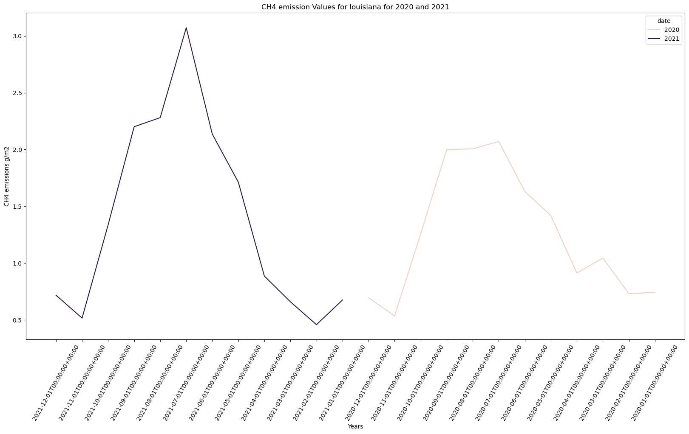
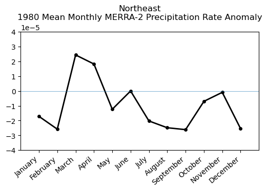

import requests
import folium
import folium.plugins
from folium import Map, TileLayer
from pystac_client import Client
import pandas as pd
import matplotlib.pyplot as plt
import branca.colormap as cm
import geopandas
from pyproj import Geod
from shapely import wkt
import seaborn as snsWetland Methane Emissions, LPJ-wsl Model
Global, daily and monthly 0.5 degree resolution methane emission estimates from wetlands, LPJ-wsl model
Approach
- Identify available dates and temporal frequency of observations for the given collection using the GHGC API
/stacendpoint. The collection processed in this notebook is the Wetland Methane Emissions, LPJ-wsl Model data product. - Pass the STAC item into the raster API
/stac/tilejson.jsonendpoint. - Using
folium.plugins.DualMap, visualize two tiles (side-by-side), allowing time point comparison. - After the visualization, perform zonal statistics for a given polygon.
About the Data
Methane (CH₄) emissions from wetlands are estimated to be the largest natural source of methane in the global CH₄ budget, contributing to roughly one third of the total of natural and anthropogenic emissions. Wetland CH₄ is produced by microbes breaking down organic matter in the oxygen deprived environment of inundated soils. Due to limited data availability, the details of the role of wetland CH₄ emissions has thus far been underrepresented. Using the Wald Schnee und Landschaft version (LPJ-wsl) of the Lund-Potsdam-Jena Dynamic Global Vegetation Model (LPJ-DGVM) global CH₄ emissions from wetlands are estimated at 0.5 x 0.5 degree resolution by simulating wetland extent and using characteristics of these inundated areas, such as soil moisture, temperature, and carbon content, to estimate CH₄ quantities emitted into the atmosphere. Highlighted areas displayed in this dataset show concentrated methane sources from tropical and high latitude ecosystems. The LPJ-wsl Wetland Methane Emissions data product presented here consists of global daily and monthly model estimates of terrestrial wetland CH₄ emissions from 1980 - 2021. These data are regularly used in conjunction with NASA’s Goddard Earth Observing System (GEOS) model to simulate the impact of wetlands and other methane sources on atmospheric methane concentrations, to compare against satellite and airborne data, and to improve understanding and prediction of wetland emissions.
Installing the Required Libraries
Required libraries are pre-installed on the GHG Center Hub. If you need to run this notebook elsewhere, please install them with this line in a code cell:
%pip install requests, folium, rasterstats, pystac_client, pandas, matplotlib
Querying the STAC API
# Provide STAC and RASTER API endpoints
STAC_API_URL = "http://ghg.center/api/stac"
RASTER_API_URL = "https://ghg.center/api/raster"
# Please use the collection name similar to the one used in STAC collection.
# Name of the collection for wetland methane monthly emissions.
collection_name = "lpjwsl-wetlandch4-monthgrid-v1"# Fetching the collection from STAC collections using appropriate endpoint.
collection = requests.get(f"{STAC_API_URL}/collections/{collection_name}").json()
collection{'id': 'lpjwsl-wetlandch4-monthgrid-v1',
'type': 'Collection',
'links': [{'rel': 'items',
'type': 'application/geo+json',
'href': 'https://ghg.center/api/stac/collections/lpjwsl-wetlandch4-monthgrid-v1/items'},
{'rel': 'parent',
'type': 'application/json',
'href': 'https://ghg.center/api/stac/'},
{'rel': 'root',
'type': 'application/json',
'href': 'https://ghg.center/api/stac/'},
{'rel': 'self',
'type': 'application/json',
'href': 'https://ghg.center/api/stac/collections/lpjwsl-wetlandch4-monthgrid-v1'}],
'title': 'Wetland Methane Emissions, LPJ-wsl Model (Monthly)',
'assets': None,
'extent': {'spatial': {'bbox': [[-180, -90, 180, 90]]},
'temporal': {'interval': [['1980-01-01T00:00:00+00:00',
'2021-12-01T00:00:00+00:00']]}},
'license': 'CC-BY-4.0',
'keywords': None,
'providers': None,
'summaries': {'datetime': ['1980-01-01T00:00:00Z', '2021-12-01T00:00:00Z']},
'description': 'Wetland methane emissions produced by the Lund–Potsdam–Jena Dynamic Global Vegetation Model (LPJ-DGVM) Wald Schnee und Landscaft version (LPJ-wsl). LPJ-wsl is a prognostic model used to simulate future changes in wetland emissions and independently verified with remote sensing data products. The LPJ-wsl model is regularly used in conjunction with NASA’s GEOS model to simulate the impact of wetlands and other methane sources on atmospheric methane concentrations.',
'item_assets': {'ch4-wetlands-emissions': {'type': 'image/tiff; application=geotiff; profile=cloud-optimized',
'roles': ['data', 'layer'],
'title': 'CH4 Wetland Emissions',
'description': 'Methane emissions from wetlands.'}},
'stac_version': '1.0.0',
'stac_extensions': None,
'dashboard:is_periodic': True,
'dashboard:time_density': 'month'}Examining the contents of our collection under summaries, we see that the data is available from January 1980 to December 2021. By looking at dashboard: time density, we can see that these observations are collected monthly.
def get_item_count(collection_id):
count = 0
items_url = f"{STAC_API_URL}/collections/{collection_id}/items"
while True:
response = requests.get(items_url)
if not response.ok:
print("error getting items")
exit()
stac = response.json()
count += int(stac["context"].get("returned", 0))
next = [link for link in stac["links"] if link["rel"] == "next"]
if not next:
break
items_url = next[0]["href"]
return count# Check total number of items available
number_of_items = get_item_count(collection_name)
items = requests.get(f"{STAC_API_URL}/collections/{collection_name}/items?limit={number_of_items}").json()["features"]
print(f"Found {len(items)} items")Found 504 items# Examining the first item in the collection
items[0]{'id': 'lpjwsl-wetlandch4-monthgrid-v1-202112',
'bbox': [-180.0, -90.0, 180.0, 90.0],
'type': 'Feature',
'links': [{'rel': 'collection',
'type': 'application/json',
'href': 'https://ghg.center/api/stac/collections/lpjwsl-wetlandch4-monthgrid-v1'},
{'rel': 'parent',
'type': 'application/json',
'href': 'https://ghg.center/api/stac/collections/lpjwsl-wetlandch4-monthgrid-v1'},
{'rel': 'root',
'type': 'application/json',
'href': 'https://ghg.center/api/stac/'},
{'rel': 'self',
'type': 'application/geo+json',
'href': 'https://ghg.center/api/stac/collections/lpjwsl-wetlandch4-monthgrid-v1/items/lpjwsl-wetlandch4-monthgrid-v1-202112'}],
'assets': {'ch4-wetlands-emissions': {'href': 's3://ghgc-data-store/lpjwsl-wetlandch4-monthgrid-v1/NASA_GSFC_ch4_wl_ch4_wetlands_v22_x720_y360_t12_202112.tif',
'type': 'image/tiff; application=geotiff; profile=cloud-optimized',
'roles': ['data', 'layer'],
'title': 'CH4 Wetland Emissions',
'proj:bbox': [-180.0, -90.0, 180.0, 90.0],
'proj:epsg': 4326.0,
'proj:shape': [360.0, 720.0],
'description': 'Methane emissions from wetlands.',
'raster:bands': [{'scale': 1.0,
'offset': 0.0,
'sampling': 'area',
'data_type': 'float32',
'histogram': {'max': 6.929981708526611,
'min': 0.0,
'count': 11.0,
'buckets': [258080.0,
575.0,
251.0,
124.0,
78.0,
41.0,
26.0,
16.0,
7.0,
2.0]},
'statistics': {'mean': 0.012271502055227757,
'stddev': 0.1378920078277588,
'maximum': 6.929981708526611,
'minimum': 0.0,
'valid_percent': 0.0003858024691358025}}],
'proj:geometry': {'type': 'Polygon',
'coordinates': [[[-180.0, -90.0],
[180.0, -90.0],
[180.0, 90.0],
[-180.0, 90.0],
[-180.0, -90.0]]]},
'proj:projjson': {'id': {'code': 4326.0, 'authority': 'EPSG'},
'name': 'WGS 84',
'type': 'GeographicCRS',
'datum': {'name': 'World Geodetic System 1984',
'type': 'GeodeticReferenceFrame',
'ellipsoid': {'name': 'WGS 84',
'semi_major_axis': 6378137.0,
'inverse_flattening': 298.257223563}},
'$schema': 'https://proj.org/schemas/v0.4/projjson.schema.json',
'coordinate_system': {'axis': [{'name': 'Geodetic latitude',
'unit': 'degree',
'direction': 'north',
'abbreviation': 'Lat'},
{'name': 'Geodetic longitude',
'unit': 'degree',
'direction': 'east',
'abbreviation': 'Lon'}],
'subtype': 'ellipsoidal'}},
'proj:transform': [0.5, 0.0, -180.0, 0.0, -0.5, 90.0, 0.0, 0.0, 1.0]}},
'geometry': {'type': 'Polygon',
'coordinates': [[[-180, -90],
[180, -90],
[180, 90],
[-180, 90],
[-180, -90]]]},
'collection': 'lpjwsl-wetlandch4-monthgrid-v1',
'properties': {'datetime': '2021-12-01T00:00:00+00:00'},
'stac_version': '1.0.0',
'stac_extensions': []}Below, we enter minimum and maximum values to provide our upper and lower bounds in rescale_values.
rescale_values = {'max': 0.2, 'min': 0.0}Exploring Changes in Methane (CH4) Emission Levels Using the Raster API
In this notebook, we will explore the temporal impacts of methane emissions. We will visualize the outputs on a map using folium.
# To access the year value from each item more easily, this will let us query more explicity by year and month (e.g., 2020-02)
items = {item["properties"]["datetime"][:7]: item for item in items}
asset_name = 'ch4-wetlands-emissions'aoi = [-95.9,-87.50,28.7,33.5]
louisiana_aoi = {
"type": "Feature",
"properties": {},
"geometry": {
"coordinates": [
[
[aoi[0], aoi[2]],
[aoi[0], aoi[3]],
[aoi[1], aoi[3]],
[aoi[1],aoi[2]],
[aoi[0], aoi[2]]
]
],
"type": "Polygon",
},
}Now, we will pass the item id, collection name, and rescaling_factor to the Raster API endpoint. We will do this twice, once for December 2001 and again for December 2021, so we can visualize each event independently.
color_map = "magma" # select the color ramp from matplotlib library.
december_2001_tile = requests.get(
f"{RASTER_API_URL}/stac/tilejson.json?collection={items['2020-12']['collection']}&item={items['2020-12']['id']}"
"&assets=ch4-wetlands-emissions"
f"&color_formula=gamma+r+1.05&colormap_name={color_map}"
f"&rescale={rescale_values['min']},{rescale_values['max']}"
).json()
december_2001_tile{'tilejson': '2.2.0',
'version': '1.0.0',
'scheme': 'xyz',
'tiles': ['https://ghg.center/api/raster/stac/tiles/WebMercatorQuad/{z}/{x}/{y}@1x?collection=lpjwsl-wetlandch4-monthgrid-v1&item=lpjwsl-wetlandch4-monthgrid-v1-202012&assets=ch4-wetlands-emissions&color_formula=gamma+r+1.05&colormap_name=magma&rescale=0.0%2C0.2'],
'minzoom': 0,
'maxzoom': 24,
'bounds': [-180.0, -90.0, 180.0, 90.0],
'center': [0.0, 0.0, 0]}december_2021_tile = requests.get(
f"{RASTER_API_URL}/stac/tilejson.json?collection={items['2021-12']['collection']}&item={items['2021-12']['id']}"
"&assets=ch4-wetlands-emissions"
f"&color_formula=gamma+r+1.05&colormap_name={color_map}"
f"&rescale={rescale_values['min']},{rescale_values['max']}",
).json()
december_2021_tile{'tilejson': '2.2.0',
'version': '1.0.0',
'scheme': 'xyz',
'tiles': ['https://ghg.center/api/raster/stac/tiles/WebMercatorQuad/{z}/{x}/{y}@1x?collection=lpjwsl-wetlandch4-monthgrid-v1&item=lpjwsl-wetlandch4-monthgrid-v1-202112&assets=ch4-wetlands-emissions&color_formula=gamma+r+1.05&colormap_name=magma&rescale=0.0%2C0.2'],
'minzoom': 0,
'maxzoom': 24,
'bounds': [-180.0, -90.0, 180.0, 90.0],
'center': [0.0, 0.0, 0]}Visualizing CH₄ Emissions
# We will import folium to map and folium.plugins to allow side-by-side mapping
import folium
import folium.plugins
# Set initial zoom and center of map for CH₄ Layer
# Centre of map [latitude,longitude]
map_ = folium.plugins.DualMap(location=(aoi[3], aoi[1]), zoom_start=6)
# December 2001
map_layer_2001 = TileLayer(
tiles=december_2001_tile["tiles"][0],
attr="GHG",
opacity=0.5,
)
map_layer_2001.add_to(map_.m1)
# December 2021
map_layer_2021 = TileLayer(
tiles=december_2021_tile["tiles"][0],
attr="GHG",
opacity=0.5,
)
map_layer_2021.add_to(map_.m2)
folium.GeoJson(louisiana_aoi, name="louisiana, USA").add_to(map_)
# visualising the map
map_
Make this Notebook Trusted to load map: File -> Trust Notebook
# Check total number of items available
items = requests.get(
f"{STAC_API_URL}/collections/{collection_name}/items?limit={number_of_items}"
).json()["features"]
print(f"Found {len(items)} items")Found 504 items# The bounding box should be passed to the geojson param as a geojson Feature or FeatureCollection
def generate_stats(item, geojson):
result = requests.post(
f"{RASTER_API_URL}/cog/statistics",
params={"url": item["assets"]["ch4-wetlands-emissions"]["href"]},
json=geojson,
).json()
return {
**result["properties"],
"datetime": item["properties"]["datetime"],
}With the function above, we can generate the statistics for the area of interest.
%%time
stats = [generate_stats(item, louisiana_aoi) for item in items]CPU times: user 19 s, sys: 1.9 s, total: 21 s
Wall time: 3min 35sstats[{'statistics': {'b1': {'min': 0.0,
'max': 0.7171422839164734,
'mean': 0.15437047621783087,
'count': 170.0,
'sum': 26.24298095703125,
'std': 0.1835849342048151,
'median': 0.05701697617769241,
'majority': 0.0,
'minority': 0.00043509763781912625,
'unique': 123.0,
'histogram': [[92.0, 9.0, 13.0, 10.0, 14.0, 16.0, 7.0, 4.0, 3.0, 2.0],
[0.0,
0.07171422988176346,
0.14342845976352692,
0.21514268219470978,
0.28685691952705383,
0.3585711419582367,
0.43028536438941956,
0.5019996166229248,
0.5737138390541077,
0.6454280614852905,
0.7171422839164734]],
'valid_percent': 100.0,
'masked_pixels': 0.0,
'valid_pixels': 170.0,
'percentile_2': 0.0,
'percentile_98': 0.5802477025985717}},
'datetime': '2021-12-01T00:00:00+00:00'},
{'statistics': {'b1': {'min': 0.0,
'max': 0.516049861907959,
'mean': 0.13532144883099725,
'count': 170.0,
'sum': 23.00464630126953,
'std': 0.15769760565780438,
'median': 0.05566539615392685,
'majority': 0.0,
'minority': 0.0002954523079097271,
'unique': 123.0,
'histogram': [[84.0, 13.0, 12.0, 7.0, 9.0, 12.0, 11.0, 8.0, 7.0, 7.0],
[0.0,
0.0516049861907959,
0.1032099723815918,
0.1548149585723877,
0.2064199447631836,
0.2580249309539795,
0.3096299171447754,
0.3612349033355713,
0.4128398895263672,
0.4644448757171631,
0.516049861907959]],
'valid_percent': 100.0,
'masked_pixels': 0.0,
'valid_pixels': 170.0,
'percentile_2': 0.0,
'percentile_98': 0.48761060655117044}},
'datetime': '2021-11-01T00:00:00+00:00'},
{'statistics': {'b1': {'min': 0.0,
'max': 1.3371007442474365,
'mean': 0.27248965992647056,
'count': 170.0,
'sum': 46.3232421875,
'std': 0.32895022521723327,
'median': 0.08361007273197174,
'majority': 0.0,
'minority': 0.0006618715706281364,
'unique': 123.0,
'histogram': [[94.0, 10.0, 13.0, 10.0, 18.0, 10.0, 7.0, 5.0, 1.0, 2.0],
[0.0,
0.1337100714445114,
0.2674201428890228,
0.40113022923469543,
0.5348402857780457,
0.6685503721237183,
0.8022604584693909,
0.9359705448150635,
1.0696805715560913,
1.2033907175064087,
1.3371007442474365]],
'valid_percent': 100.0,
'masked_pixels': 0.0,
'valid_pixels': 170.0,
'percentile_2': 0.0,
'percentile_98': 1.060954008102417}},
'datetime': '2021-10-01T00:00:00+00:00'},
{'statistics': {'b1': {'min': 0.0,
'max': 2.2005276679992676,
'mean': 0.45919602338005516,
'count': 170.0,
'sum': 78.06332397460938,
'std': 0.5457408213221397,
'median': 0.18731170892715454,
'majority': 0.0,
'minority': 0.002108836779370904,
'unique': 123.0,
'histogram': [[90.0, 15.0, 8.0, 16.0, 13.0, 11.0, 10.0, 4.0, 1.0, 2.0],
[0.0,
0.22005276381969452,
0.44010552763938904,
0.6601582765579224,
0.8802110552787781,
1.1002638339996338,
1.3203165531158447,
1.5403693914413452,
1.7604221105575562,
1.9804749488830566,
2.2005276679992676]],
'valid_percent': 100.0,
'masked_pixels': 0.0,
'valid_pixels': 170.0,
'percentile_2': 0.0,
'percentile_98': 1.6831329369544983}},
'datetime': '2021-09-01T00:00:00+00:00'},
{'statistics': {'b1': {'min': 0.0,
'max': 2.2805004119873047,
'mean': 0.4716072531307445,
'count': 170.0,
'sum': 80.17323303222656,
'std': 0.5656065478170901,
'median': 0.19661885499954224,
'majority': 0.0,
'minority': 0.0015638105105608702,
'unique': 123.0,
'histogram': [[89.0, 16.0, 11.0, 13.0, 14.0, 13.0, 5.0, 5.0, 3.0, 1.0],
[0.0,
0.22805003821849823,
0.45610007643699646,
0.6841500997543335,
0.9122001528739929,
1.1402502059936523,
1.368300199508667,
1.5963503122329712,
1.8244003057479858,
2.05245041847229,
2.2805004119873047]],
'valid_percent': 100.0,
'masked_pixels': 0.0,
'valid_pixels': 170.0,
'percentile_2': 0.0,
'percentile_98': 1.8883533668518073}},
'datetime': '2021-08-01T00:00:00+00:00'},
{'statistics': {'b1': {'min': 0.0,
'max': 3.072227716445923,
'mean': 0.6332277634564568,
'count': 170.0,
'sum': 107.64871978759766,
'std': 0.7631461866897622,
'median': 0.2839159667491913,
'majority': 0.0,
'minority': 0.0024779888335615396,
'unique': 123.0,
'histogram': [[91.0, 15.0, 12.0, 11.0, 13.0, 14.0, 3.0, 7.0, 3.0, 1.0],
[0.0,
0.30722278356552124,
0.6144455671310425,
0.921668291091919,
1.228891134262085,
1.5361138582229614,
1.843336582183838,
2.150559425354004,
2.45778226852417,
2.765004873275757,
3.072227716445923]],
'valid_percent': 100.0,
'masked_pixels': 0.0,
'valid_pixels': 170.0,
'percentile_2': 0.0,
'percentile_98': 2.494618062973023}},
'datetime': '2021-07-01T00:00:00+00:00'},
{'statistics': {'b1': {'min': 0.0,
'max': 2.1353492736816406,
'mean': 0.5122916726505056,
'count': 170.0,
'sum': 87.08958435058594,
'std': 0.5816176132620369,
'median': 0.23781655728816986,
'majority': 0.0,
'minority': 0.002265247516334057,
'unique': 123.0,
'histogram': [[80.0, 19.0, 9.0, 9.0, 15.0, 17.0, 6.0, 7.0, 6.0, 2.0],
[0.0,
0.21353492140769958,
0.42706984281539917,
0.6406047940254211,
0.8541396856307983,
1.0676746368408203,
1.2812095880508423,
1.4947445392608643,
1.7082793712615967,
1.9218143224716187,
2.1353492736816406]],
'valid_percent': 100.0,
'masked_pixels': 0.0,
'valid_pixels': 170.0,
'percentile_2': 0.0,
'percentile_98': 1.7408480906486512}},
'datetime': '2021-06-01T00:00:00+00:00'},
{'statistics': {'b1': {'min': 0.0,
'max': 1.7123756408691406,
'mean': 0.3947353587431066,
'count': 170.0,
'sum': 67.10501098632812,
'std': 0.4542843921906756,
'median': 0.16888344287872314,
'majority': 0.0,
'minority': 0.001768625108525157,
'unique': 123.0,
'histogram': [[87.0, 13.0, 9.0, 9.0, 19.0, 17.0, 3.0, 6.0, 5.0, 2.0],
[0.0,
0.17123755812644958,
0.34247511625289917,
0.5137127041816711,
0.6849502325057983,
0.8561878204345703,
1.0274254083633423,
1.1986629962921143,
1.3699004650115967,
1.5411380529403687,
1.7123756408691406]],
'valid_percent': 100.0,
'masked_pixels': 0.0,
'valid_pixels': 170.0,
'percentile_2': 0.0,
'percentile_98': 1.4123617601394653}},
'datetime': '2021-05-01T00:00:00+00:00'},
{'statistics': {'b1': {'min': 0.0,
'max': 0.8859390616416931,
'mean': 0.24400625789866728,
'count': 170.0,
'sum': 41.48106384277344,
'std': 0.28321048400965054,
'median': 0.09922437369823456,
'majority': 0.0,
'minority': 0.0006858149426989257,
'unique': 123.0,
'histogram': [[84.0, 13.0, 10.0, 8.0, 5.0, 10.0, 11.0, 15.0, 7.0, 7.0],
[0.0,
0.08859390765428543,
0.17718781530857086,
0.2657817304134369,
0.3543756306171417,
0.44296953082084656,
0.5315634608268738,
0.6201573610305786,
0.7087512612342834,
0.7973451614379883,
0.8859390616416931]],
'valid_percent': 100.0,
'masked_pixels': 0.0,
'valid_pixels': 170.0,
'percentile_2': 0.0,
'percentile_98': 0.8462702941894532}},
'datetime': '2021-04-01T00:00:00+00:00'},
{'statistics': {'b1': {'min': 0.0,
'max': 0.659404993057251,
'mean': 0.19500977011287915,
'count': 170.0,
'sum': 33.15166091918945,
'std': 0.22056241116653577,
'median': 0.087272509932518,
'majority': 0.0,
'minority': 0.0006441613077186048,
'unique': 123.0,
'histogram': [[79.0, 17.0, 7.0, 10.0, 5.0, 7.0, 12.0, 16.0, 4.0, 13.0],
[0.0,
0.0659404993057251,
0.1318809986114502,
0.1978214979171753,
0.2637619972229004,
0.3297024965286255,
0.3956429958343506,
0.4615834951400757,
0.5275239944458008,
0.5934644937515259,
0.659404993057251]],
'valid_percent': 100.0,
'masked_pixels': 0.0,
'valid_pixels': 170.0,
'percentile_2': 0.0,
'percentile_98': 0.6313274204730988}},
'datetime': '2021-03-01T00:00:00+00:00'},
{'statistics': {'b1': {'min': 0.0,
'max': 0.4581904411315918,
'mean': 0.1083783093620749,
'count': 170.0,
'sum': 18.424312591552734,
'std': 0.13051518085377295,
'median': 0.039194926619529724,
'majority': 0.0,
'minority': 0.00028075711452402174,
'unique': 123.0,
'histogram': [[87.0, 15.0, 12.0, 9.0, 10.0, 9.0, 10.0, 8.0, 7.0, 3.0],
[0.0,
0.04581904411315918,
0.09163808822631836,
0.13745713233947754,
0.18327617645263672,
0.2290952205657959,
0.2749142646789551,
0.32073330879211426,
0.36655235290527344,
0.4123713970184326,
0.4581904411315918]],
'valid_percent': 100.0,
'masked_pixels': 0.0,
'valid_pixels': 170.0,
'percentile_2': 0.0,
'percentile_98': 0.398276316523552}},
'datetime': '2021-02-01T00:00:00+00:00'},
{'statistics': {'b1': {'min': 0.0,
'max': 0.6753556728363037,
'mean': 0.1531466427971335,
'count': 170.0,
'sum': 26.034929275512695,
'std': 0.1810563542947181,
'median': 0.06246931105852127,
'majority': 0.0,
'minority': 0.0005269754328764975,
'unique': 123.0,
'histogram': [[90.0, 12.0, 11.0, 8.0, 15.0, 16.0, 4.0, 7.0, 5.0, 2.0],
[0.0,
0.06753556430339813,
0.13507112860679626,
0.2026067078113556,
0.27014225721359253,
0.33767783641815186,
0.4052134156227112,
0.4727489650249481,
0.5402845144271851,
0.6078200936317444,
0.6753556728363037]],
'valid_percent': 100.0,
'masked_pixels': 0.0,
'valid_pixels': 170.0,
'percentile_2': 0.0,
'percentile_98': 0.5708203029632569}},
'datetime': '2021-01-01T00:00:00+00:00'},
{'statistics': {'b1': {'min': 0.0,
'max': 0.6949237585067749,
'mean': 0.14557975320255054,
'count': 170.0,
'sum': 24.748558044433594,
'std': 0.17713435804121008,
'median': 0.05363526940345764,
'majority': 0.0,
'minority': 0.00041759133455343544,
'unique': 123.0,
'histogram': [[93.0, 13.0, 11.0, 11.0, 13.0, 13.0, 7.0, 5.0, 1.0, 3.0],
[0.0,
0.06949237734079361,
0.13898475468158722,
0.20847712457180023,
0.27796950936317444,
0.34746187925338745,
0.41695424914360046,
0.4864466190338135,
0.5559390187263489,
0.6254313588142395,
0.6949237585067749]],
'valid_percent': 100.0,
'masked_pixels': 0.0,
'valid_pixels': 170.0,
'percentile_2': 0.0,
'percentile_98': 0.5663253521919251}},
'datetime': '2020-12-01T00:00:00+00:00'},
{'statistics': {'b1': {'min': 0.0,
'max': 0.5358846783638,
'mean': 0.1278377981746898,
'count': 170.0,
'sum': 21.732425689697266,
'std': 0.15343874105291866,
'median': 0.04972578585147858,
'majority': 0.0,
'minority': 0.00028196285711601377,
'unique': 123.0,
'histogram': [[86.0, 14.0, 14.0, 8.0, 13.0, 9.0, 8.0, 8.0, 6.0, 4.0],
[0.0,
0.053588468581438065,
0.10717693716287613,
0.1607654094696045,
0.21435387432575226,
0.2679423391819,
0.321530818939209,
0.37511926889419556,
0.4287077486515045,
0.4822961986064911,
0.5358846783638]],
'valid_percent': 100.0,
'masked_pixels': 0.0,
'valid_pixels': 170.0,
'percentile_2': 0.0,
'percentile_98': 0.48206853270530703}},
'datetime': '2020-11-01T00:00:00+00:00'},
{'statistics': {'b1': {'min': 0.0,
'max': 1.255740761756897,
'mean': 0.2575576333438649,
'count': 170.0,
'sum': 43.78479766845703,
'std': 0.31693399768408115,
'median': 0.0768575668334961,
'majority': 0.0,
'minority': 0.0006190046551637352,
'unique': 123.0,
'histogram': [[94.0, 13.0, 10.0, 10.0, 17.0, 9.0, 8.0, 4.0, 3.0, 2.0],
[0.0,
0.12557408213615417,
0.25114816427230835,
0.37672221660614014,
0.5022963285446167,
0.6278703808784485,
0.7534444332122803,
0.8790185451507568,
1.0045926570892334,
1.1301666498184204,
1.255740761756897]],
'valid_percent': 100.0,
'masked_pixels': 0.0,
'valid_pixels': 170.0,
'percentile_2': 0.0,
'percentile_98': 1.0394352316856386}},
'datetime': '2020-10-01T00:00:00+00:00'},
{'statistics': {'b1': {'min': 0.0,
'max': 1.9983481168746948,
'mean': 0.43116993623621325,
'count': 170.0,
'sum': 73.29888916015625,
'std': 0.5197145296917448,
'median': 0.17324364185333252,
'majority': 0.0,
'minority': 0.0019067995017394423,
'unique': 123.0,
'histogram': [[89.0, 16.0, 11.0, 11.0, 13.0, 8.0, 10.0, 8.0, 2.0, 2.0],
[0.0,
0.19983480870723724,
0.3996696174144745,
0.5995044112205505,
0.799339234828949,
0.9991740584373474,
1.199008822441101,
1.3988436460494995,
1.598678469657898,
1.7985132932662964,
1.9983481168746948]],
'valid_percent': 100.0,
'masked_pixels': 0.0,
'valid_pixels': 170.0,
'percentile_2': 0.0,
'percentile_98': 1.6112784051895146}},
'datetime': '2020-09-01T00:00:00+00:00'},
{'statistics': {'b1': {'min': 0.0,
'max': 2.0058531761169434,
'mean': 0.4619821436264936,
'count': 170.0,
'sum': 78.5369644165039,
'std': 0.5712842682229454,
'median': 0.16520659625530243,
'majority': 0.0,
'minority': 0.001269881846383214,
'unique': 123.0,
'histogram': [[91.0, 14.0, 11.0, 13.0, 6.0, 10.0, 6.0, 8.0, 6.0, 5.0],
[0.0,
0.20058532059192657,
0.40117064118385315,
0.6017559766769409,
0.8023412823677063,
1.0029265880584717,
1.2035119533538818,
1.4040971994400024,
1.6046825647354126,
1.8052678108215332,
2.0058531761169434]],
'valid_percent': 100.0,
'masked_pixels': 0.0,
'valid_pixels': 170.0,
'percentile_2': 0.0,
'percentile_98': 1.8289475870132446}},
'datetime': '2020-08-01T00:00:00+00:00'},
{'statistics': {'b1': {'min': 0.0,
'max': 2.070863723754883,
'mean': 0.5622900570140166,
'count': 170.0,
'sum': 95.58930969238281,
'std': 0.6425463273519573,
'median': 0.2530515491962433,
'majority': 0.0,
'minority': 0.002212761202827096,
'unique': 123.0,
'histogram': [[81.0, 17.0, 9.0, 8.0, 8.0, 13.0, 10.0, 8.0, 10.0, 6.0],
[0.0,
0.20708636939525604,
0.4141727387905121,
0.6212590932846069,
0.8283454775810242,
1.0354318618774414,
1.2425181865692139,
1.4496046304702759,
1.6566909551620483,
1.8637773990631104,
2.070863723754883]],
'valid_percent': 100.0,
'masked_pixels': 0.0,
'valid_pixels': 170.0,
'percentile_2': 0.0,
'percentile_98': 1.9805018997192385}},
'datetime': '2020-07-01T00:00:00+00:00'},
{'statistics': {'b1': {'min': 0.0,
'max': 1.6319794654846191,
'mean': 0.39405023911420034,
'count': 170.0,
'sum': 66.98854064941406,
'std': 0.4457748225152684,
'median': 0.1712484061717987,
'majority': 0.0,
'minority': 0.0013915648451074958,
'unique': 123.0,
'histogram': [[82.0, 18.0, 9.0, 9.0, 9.0, 18.0, 11.0, 9.0, 3.0, 2.0],
[0.0,
0.16319794952869415,
0.3263958990573883,
0.48959383368492126,
0.6527917981147766,
0.8159897327423096,
0.9791876673698425,
1.1423856019973755,
1.3055835962295532,
1.4687814712524414,
1.6319794654846191]],
'valid_percent': 100.0,
'masked_pixels': 0.0,
'valid_pixels': 170.0,
'percentile_2': 0.0,
'percentile_98': 1.3640193176269535}},
'datetime': '2020-06-01T00:00:00+00:00'},
{'statistics': {'b1': {'min': 0.0,
'max': 1.4179749488830566,
'mean': 0.3024932861328125,
'count': 170.0,
'sum': 51.423858642578125,
'std': 0.35093550103567694,
'median': 0.12169831991195679,
'majority': 0.0,
'minority': 0.001449149684049189,
'unique': 123.0,
'histogram': [[88.0, 13.0, 10.0, 17.0, 12.0, 16.0, 7.0, 4.0, 0.0, 3.0],
[0.0,
0.1417974978685379,
0.2835949957370758,
0.4253924787044525,
0.5671899914741516,
0.7089874744415283,
0.850784957408905,
0.9925824403762817,
1.1343799829483032,
1.2761774063110352,
1.4179749488830566]],
'valid_percent': 100.0,
'masked_pixels': 0.0,
'valid_pixels': 170.0,
'percentile_2': 0.0,
'percentile_98': 1.092334604263306}},
'datetime': '2020-05-01T00:00:00+00:00'},
{'statistics': {'b1': {'min': 0.0,
'max': 0.9126242399215698,
'mean': 0.20955680398380055,
'count': 170.0,
'sum': 35.624656677246094,
'std': 0.23214241630129956,
'median': 0.10675151646137238,
'majority': 0.0,
'minority': 0.0011147678596898913,
'unique': 123.0,
'histogram': [[80.0, 17.0, 11.0, 12.0, 23.0, 9.0, 10.0, 5.0, 1.0, 2.0],
[0.0,
0.09126242250204086,
0.18252484500408173,
0.273787260055542,
0.36504969000816345,
0.4563121199607849,
0.547574520111084,
0.6388369798660278,
0.7300993800163269,
0.8213618397712708,
0.9126242399215698]],
'valid_percent': 100.0,
'masked_pixels': 0.0,
'valid_pixels': 170.0,
'percentile_2': 0.0,
'percentile_98': 0.7237258589267731}},
'datetime': '2020-04-01T00:00:00+00:00'},
{'statistics': {'b1': {'min': 0.0,
'max': 1.0447851419448853,
'mean': 0.22874827665441178,
'count': 170.0,
'sum': 38.88720703125,
'std': 0.25775953751223146,
'median': 0.10438993573188782,
'majority': 0.0,
'minority': 0.0009839008562266827,
'unique': 123.0,
'histogram': [[86.0, 15.0, 9.0, 13.0, 14.0, 20.0, 9.0, 1.0, 2.0, 1.0],
[0.0,
0.10447851568460464,
0.2089570313692093,
0.31343555450439453,
0.4179140627384186,
0.5223925709724426,
0.6268711090087891,
0.7313495874404907,
0.8358281254768372,
0.9403066039085388,
1.0447851419448853]],
'valid_percent': 100.0,
'masked_pixels': 0.0,
'valid_pixels': 170.0,
'percentile_2': 0.0,
'percentile_98': 0.7838775122165684}},
'datetime': '2020-03-01T00:00:00+00:00'},
{'statistics': {'b1': {'min': 0.0,
'max': 0.7303400635719299,
'mean': 0.1730064167695887,
'count': 170.0,
'sum': 29.411090850830078,
'std': 0.2041394445830063,
'median': 0.06572374701499939,
'majority': 0.0,
'minority': 0.0005588305648416281,
'unique': 123.0,
'histogram': [[86.0, 15.0, 12.0, 8.0, 13.0, 10.0, 12.0, 7.0, 4.0, 3.0],
[0.0,
0.07303400337696075,
0.1460680067539215,
0.21910202503204346,
0.292136013507843,
0.36517003178596497,
0.4382040500640869,
0.5112380385398865,
0.584272027015686,
0.6573060750961304,
0.7303400635719299]],
'valid_percent': 100.0,
'masked_pixels': 0.0,
'valid_pixels': 170.0,
'percentile_2': 0.0,
'percentile_98': 0.6206122100353242}},
'datetime': '2020-02-01T00:00:00+00:00'},
{'statistics': {'b1': {'min': 0.0,
'max': 0.7433937788009644,
'mean': 0.17906734242158778,
'count': 170.0,
'sum': 30.441448211669922,
'std': 0.20951516248017335,
'median': 0.06703908741474152,
'majority': 0.0,
'minority': 0.0004158392839599401,
'unique': 123.0,
'histogram': [[88.0, 12.0, 11.0, 9.0, 10.0, 13.0, 12.0, 8.0, 5.0, 2.0],
[0.0,
0.0743393748998642,
0.1486787497997284,
0.22301813960075378,
0.2973574995994568,
0.3716968894004822,
0.44603627920150757,
0.520375669002533,
0.5947149991989136,
0.669054388999939,
0.7433937788009644]],
'valid_percent': 100.0,
'masked_pixels': 0.0,
'valid_pixels': 170.0,
'percentile_2': 0.0,
'percentile_98': 0.637993005514145}},
'datetime': '2020-01-01T00:00:00+00:00'},
{'statistics': {'b1': {'min': 0.0,
'max': 0.4395127296447754,
'mean': 0.11919950597426471,
'count': 170.0,
'sum': 20.263916015625,
'std': 0.13315295472488442,
'median': 0.04857391119003296,
'majority': 0.0,
'minority': 0.000246585434069857,
'unique': 123.0,
'histogram': [[84.0, 12.0, 7.0, 11.0, 6.0, 17.0, 9.0, 14.0, 5.0, 5.0],
[0.0,
0.04395127296447754,
0.08790254592895508,
0.13185381889343262,
0.17580509185791016,
0.2197563648223877,
0.26370763778686523,
0.3076589107513428,
0.3516101837158203,
0.39556145668029785,
0.4395127296447754]],
'valid_percent': 100.0,
'masked_pixels': 0.0,
'valid_pixels': 170.0,
'percentile_2': 0.0,
'percentile_98': 0.40325622797012334}},
'datetime': '2019-12-01T00:00:00+00:00'},
{'statistics': {'b1': {'min': 0.0,
'max': 0.6597424745559692,
'mean': 0.13053934433880973,
'count': 170.0,
'sum': 22.191688537597656,
'std': 0.15292009295266437,
'median': 0.05379204452037811,
'majority': 0.0,
'minority': 0.0004530618025455624,
'unique': 123.0,
'histogram': [[89.0, 14.0, 12.0, 21.0, 13.0, 8.0, 7.0, 4.0, 0.0, 2.0],
[0.0,
0.06597425043582916,
0.13194850087165833,
0.1979227364063263,
0.26389700174331665,
0.3298712372779846,
0.3958454728126526,
0.46181973814964294,
0.5277940034866333,
0.5937682390213013,
0.6597424745559692]],
'valid_percent': 100.0,
'masked_pixels': 0.0,
'valid_pixels': 170.0,
'percentile_2': 0.0,
'percentile_98': 0.4837872225046158}},
'datetime': '2019-11-01T00:00:00+00:00'},
{'statistics': {'b1': {'min': 0.0,
'max': 1.2116801738739014,
'mean': 0.19685276255888098,
'count': 170.0,
'sum': 33.464969635009766,
'std': 0.24774586920681368,
'median': 0.08123061060905457,
'majority': 0.0,
'minority': 0.0008544314769096673,
'unique': 123.0,
'histogram': [[95.0, 18.0, 19.0, 15.0, 13.0, 2.0, 3.0, 3.0, 0.0, 2.0],
[0.0,
0.12116801738739014,
0.24233603477478027,
0.3635040521621704,
0.48467206954956055,
0.6058400869369507,
0.7270081043243408,
0.848176121711731,
0.9693441390991211,
1.0905121564865112,
1.2116801738739014]],
'valid_percent': 100.0,
'masked_pixels': 0.0,
'valid_pixels': 170.0,
'percentile_2': 0.0,
'percentile_98': 0.9161432647705079}},
'datetime': '2019-10-01T00:00:00+00:00'},
{'statistics': {'b1': {'min': 0.0,
'max': 1.4944024085998535,
'mean': 0.28544906167423023,
'count': 170.0,
'sum': 48.52634048461914,
'std': 0.37024813330151585,
'median': 0.12399697303771973,
'majority': 0.0,
'minority': 0.0010692393407225609,
'unique': 123.0,
'histogram': [[93.0, 21.0, 11.0, 13.0, 8.0, 10.0, 4.0, 3.0, 4.0, 3.0],
[0.0,
0.1494402438402176,
0.2988804876804352,
0.4483207166194916,
0.5977609753608704,
0.7472012042999268,
0.8966414332389832,
1.0460816621780396,
1.1955219507217407,
1.3449621200561523,
1.4944024085998535]],
'valid_percent': 100.0,
'masked_pixels': 0.0,
'valid_pixels': 170.0,
'percentile_2': 0.0,
'percentile_98': 1.3068597054481506}},
'datetime': '2019-09-01T00:00:00+00:00'},
{'statistics': {'b1': {'min': 0.0,
'max': 2.1526052951812744,
'mean': 0.42198585061465993,
'count': 170.0,
'sum': 71.73759460449219,
'std': 0.5489595015450799,
'median': 0.15090353786945343,
'majority': 0.0,
'minority': 0.0009469640208408237,
'unique': 123.0,
'histogram': [[93.0, 17.0, 14.0, 13.0, 8.0, 7.0, 7.0, 3.0, 4.0, 4.0],
[0.0,
0.21526053547859192,
0.43052107095718384,
0.6457815766334534,
0.8610421419143677,
1.0763026475906372,
1.2915631532669067,
1.5068236589431763,
1.7220842838287354,
1.9373447895050049,
2.1526052951812744]],
'valid_percent': 100.0,
'masked_pixels': 0.0,
'valid_pixels': 170.0,
'percentile_2': 0.0,
'percentile_98': 1.9568944168090825}},
'datetime': '2019-08-01T00:00:00+00:00'},
{'statistics': {'b1': {'min': 0.0,
'max': 1.984567403793335,
'mean': 0.4774996589211857,
'count': 170.0,
'sum': 81.17494201660156,
'std': 0.5476093232103986,
'median': 0.20035603642463684,
'majority': 0.0,
'minority': 0.0018902717856690288,
'unique': 123.0,
'histogram': [[84.0, 15.0, 8.0, 12.0, 16.0, 14.0, 8.0, 4.0, 5.0, 4.0],
[0.0,
0.19845673441886902,
0.39691346883773804,
0.5953702330589294,
0.7938269376754761,
0.9922837018966675,
1.1907404661178589,
1.3891972303390503,
1.5876538753509521,
1.7861106395721436,
1.984567403793335]],
'valid_percent': 100.0,
'masked_pixels': 0.0,
'valid_pixels': 170.0,
'percentile_2': 0.0,
'percentile_98': 1.7956979680061342}},
'datetime': '2019-07-01T00:00:00+00:00'},
{'statistics': {'b1': {'min': 0.0,
'max': 2.213853120803833,
'mean': 0.41174504897173714,
'count': 170.0,
'sum': 69.99665832519531,
'std': 0.4843368858911087,
'median': 0.18528106808662415,
'majority': 0.0,
'minority': 0.002427618717774749,
'unique': 123.0,
'histogram': [[88.0, 20.0, 10.0, 22.0, 15.0, 7.0, 4.0, 0.0, 2.0, 2.0],
[0.0,
0.22138531506061554,
0.4427706301212311,
0.6641559600830078,
0.8855412602424622,
1.1069265604019165,
1.3283119201660156,
1.5496971607208252,
1.7710825204849243,
1.9924677610397339,
2.213853120803833]],
'valid_percent': 100.0,
'masked_pixels': 0.0,
'valid_pixels': 170.0,
'percentile_2': 0.0,
'percentile_98': 1.6647749638557447}},
'datetime': '2019-06-01T00:00:00+00:00'},
{'statistics': {'b1': {'min': 0.0,
'max': 1.6044057607650757,
'mean': 0.3784006904153263,
'count': 170.0,
'sum': 64.32811737060547,
'std': 0.4198430958528507,
'median': 0.1809079647064209,
'majority': 0.0,
'minority': 0.001999354688450694,
'unique': 123.0,
'histogram': [[80.0, 19.0, 9.0, 8.0, 17.0, 17.0, 12.0, 2.0, 5.0, 1.0],
[0.0,
0.1604405790567398,
0.3208811581134796,
0.4813217222690582,
0.6417623162269592,
0.8022028803825378,
0.9626434445381165,
1.1230840682983398,
1.2835246324539185,
1.443965196609497,
1.6044057607650757]],
'valid_percent': 100.0,
'masked_pixels': 0.0,
'valid_pixels': 170.0,
'percentile_2': 0.0,
'percentile_98': 1.312976324558258}},
'datetime': '2019-05-01T00:00:00+00:00'},
{'statistics': {'b1': {'min': 0.0,
'max': 0.8547446727752686,
'mean': 0.24335102754480697,
'count': 170.0,
'sum': 41.36967468261719,
'std': 0.27106225467257405,
'median': 0.12071821093559265,
'majority': 0.0,
'minority': 0.0010743218008428812,
'unique': 123.0,
'histogram': [[77.0, 19.0, 6.0, 12.0, 5.0, 11.0, 16.0, 10.0, 6.0, 8.0],
[0.0,
0.08547446876764297,
0.17094893753528595,
0.2564234137535095,
0.3418978750705719,
0.4273723363876343,
0.512846827507019,
0.598321259021759,
0.6837957501411438,
0.7692701816558838,
0.8547446727752686]],
'valid_percent': 100.0,
'masked_pixels': 0.0,
'valid_pixels': 170.0,
'percentile_2': 0.0,
'percentile_98': 0.8108582389354708}},
'datetime': '2019-04-01T00:00:00+00:00'},
{'statistics': {'b1': {'min': 0.0,
'max': 0.7659482359886169,
'mean': 0.17510171778061812,
'count': 170.0,
'sum': 29.767292022705078,
'std': 0.1984787611347796,
'median': 0.0819028913974762,
'majority': 0.0,
'minority': 0.0006882857414893806,
'unique': 123.0,
'histogram': [[84.0, 15.0, 13.0, 7.0, 18.0, 14.0, 8.0, 7.0, 2.0, 2.0],
[0.0,
0.07659482210874557,
0.15318964421749115,
0.22978447377681732,
0.3063792884349823,
0.38297411799430847,
0.45956894755363464,
0.5361637473106384,
0.6127585768699646,
0.6893534064292908,
0.7659482359886169]],
'valid_percent': 100.0,
'masked_pixels': 0.0,
'valid_pixels': 170.0,
'percentile_2': 0.0,
'percentile_98': 0.6078115475177767}},
'datetime': '2019-03-01T00:00:00+00:00'},
{'statistics': {'b1': {'min': 0.0,
'max': 0.754119336605072,
'mean': 0.17117881774902344,
'count': 170.0,
'sum': 29.100399017333984,
'std': 0.19737446718060356,
'median': 0.08086679875850677,
'majority': 0.0,
'minority': 0.0006874459213577211,
'unique': 123.0,
'histogram': [[84.0, 16.0, 11.0, 10.0, 17.0, 12.0, 10.0, 4.0, 3.0, 3.0],
[0.0,
0.07541193068027496,
0.15082386136054993,
0.22623580694198608,
0.30164772272109985,
0.377059668302536,
0.45247161388397217,
0.5278835296630859,
0.6032954454421997,
0.6787074208259583,
0.754119336605072]],
'valid_percent': 100.0,
'masked_pixels': 0.0,
'valid_pixels': 170.0,
'percentile_2': 0.0,
'percentile_98': 0.6252020013332368}},
'datetime': '2019-02-01T00:00:00+00:00'},
{'statistics': {'b1': {'min': 0.0,
'max': 0.8150692582130432,
'mean': 0.1756854674395393,
'count': 170.0,
'sum': 29.86652946472168,
'std': 0.20834681853769155,
'median': 0.07913029193878174,
'majority': 0.0,
'minority': 0.0007789754890836775,
'unique': 123.0,
'histogram': [[86.0, 17.0, 11.0, 13.0, 15.0, 11.0, 9.0, 3.0, 1.0, 4.0],
[0.0,
0.08150692284107208,
0.16301384568214417,
0.24452078342437744,
0.32602769136428833,
0.4075346291065216,
0.4890415668487549,
0.5705484747886658,
0.6520553827285767,
0.7335623502731323,
0.8150692582130432]],
'valid_percent': 100.0,
'masked_pixels': 0.0,
'valid_pixels': 170.0,
'percentile_2': 0.0,
'percentile_98': 0.7349852299690249}},
'datetime': '2019-01-01T00:00:00+00:00'},
{'statistics': {'b1': {'min': 0.0,
'max': 0.9486470222473145,
'mean': 0.19445580875172336,
'count': 170.0,
'sum': 33.05748748779297,
'std': 0.23750395007717026,
'median': 0.08620999753475189,
'majority': 0.0,
'minority': 0.0008890132303349674,
'unique': 123.0,
'histogram': [[90.0, 16.0, 14.0, 11.0, 13.0, 11.0, 6.0, 4.0, 1.0, 4.0],
[0.0,
0.09486470371484756,
0.18972940742969513,
0.2845941185951233,
0.37945881485939026,
0.4743235111236572,
0.5691882371902466,
0.6640529036521912,
0.7589176297187805,
0.8537822961807251,
0.9486470222473145]],
'valid_percent': 100.0,
'masked_pixels': 0.0,
'valid_pixels': 170.0,
'percentile_2': 0.0,
'percentile_98': 0.8581298494338992}},
'datetime': '2018-12-01T00:00:00+00:00'},
{'statistics': {'b1': {'min': 0.0,
'max': 1.2880979776382446,
'mean': 0.23599916345932903,
'count': 170.0,
'sum': 40.11985778808594,
'std': 0.3041417786713936,
'median': 0.09063806384801865,
'majority': 0.0,
'minority': 0.001099782413803041,
'unique': 123.0,
'histogram': [[93.0, 19.0, 14.0, 13.0, 15.0, 2.0, 7.0, 2.0, 1.0, 4.0],
[0.0,
0.12880979478359222,
0.25761958956718445,
0.38642939925193787,
0.5152391791343689,
0.6440489888191223,
0.7728587985038757,
0.9016686081886292,
1.0304783582687378,
1.1592881679534912,
1.2880979776382446]],
'valid_percent': 100.0,
'masked_pixels': 0.0,
'valid_pixels': 170.0,
'percentile_2': 0.0,
'percentile_98': 1.1391516327857976}},
'datetime': '2018-11-01T00:00:00+00:00'},
{'statistics': {'b1': {'min': 0.0,
'max': 2.1648964881896973,
'mean': 0.3568328857421875,
'count': 170.0,
'sum': 60.661590576171875,
'std': 0.4786510470990936,
'median': 0.13242501020431519,
'majority': 0.0,
'minority': 0.0016146877314895391,
'unique': 123.0,
'histogram': [[97.0, 22.0, 15.0, 15.0, 6.0, 3.0, 3.0, 6.0, 0.0, 3.0],
[0.0,
0.21648964285850525,
0.4329792857170105,
0.6494689583778381,
0.865958571434021,
1.0824482440948486,
1.2989379167556763,
1.515427589416504,
1.731917142868042,
1.9484068155288696,
2.1648964881896973]],
'valid_percent': 100.0,
'masked_pixels': 0.0,
'valid_pixels': 170.0,
'percentile_2': 0.0,
'percentile_98': 1.6241019797325136}},
'datetime': '2018-10-01T00:00:00+00:00'},
{'statistics': {'b1': {'min': 0.0,
'max': 2.5775928497314453,
'mean': 0.4647387785070083,
'count': 170.0,
'sum': 79.0055923461914,
'std': 0.6196895853533496,
'median': 0.18936555087566376,
'majority': 0.0,
'minority': 0.0016258800169453025,
'unique': 123.0,
'histogram': [[97.0, 19.0, 15.0, 8.0, 8.0, 4.0, 8.0, 7.0, 3.0, 1.0],
[0.0,
0.2577592730522156,
0.5155185461044312,
0.7732778787612915,
1.0310370922088623,
1.2887964248657227,
1.546555757522583,
1.8043149709701538,
2.0620741844177246,
2.319833517074585,
2.5775928497314453]],
'valid_percent': 100.0,
'masked_pixels': 0.0,
'valid_pixels': 170.0,
'percentile_2': 0.0,
'percentile_98': 2.0657353734970094}},
'datetime': '2018-09-01T00:00:00+00:00'},
{'statistics': {'b1': {'min': 0.0,
'max': 2.142693519592285,
'mean': 0.38930780747357535,
'count': 170.0,
'sum': 66.18232727050781,
'std': 0.5110509339420946,
'median': 0.13605186343193054,
'majority': 0.0,
'minority': 0.0011733564315363765,
'unique': 123.0,
'histogram': [[98.0, 18.0, 12.0, 12.0, 4.0, 10.0, 7.0, 6.0, 2.0, 1.0],
[0.0,
0.21426935493946075,
0.4285387098789215,
0.6428080797195435,
0.857077419757843,
1.0713467597961426,
1.285616159439087,
1.4998854398727417,
1.714154839515686,
1.9284241199493408,
2.142693519592285]],
'valid_percent': 100.0,
'masked_pixels': 0.0,
'valid_pixels': 170.0,
'percentile_2': 0.0,
'percentile_98': 1.6762637877464295}},
'datetime': '2018-08-01T00:00:00+00:00'},
{'statistics': {'b1': {'min': 0.0,
'max': 1.9976720809936523,
'mean': 0.3993784736184513,
'count': 170.0,
'sum': 67.89434051513672,
'std': 0.5053473125083238,
'median': 0.16248929500579834,
'majority': 0.0,
'minority': 0.0011814404278993607,
'unique': 123.0,
'histogram': [[89.0, 19.0, 16.0, 12.0, 9.0, 6.0, 9.0, 4.0, 3.0, 3.0],
[0.0,
0.19976720213890076,
0.3995344042778015,
0.5993016362190247,
0.799068808555603,
0.9988360404968262,
1.1986032724380493,
1.3983705043792725,
1.598137617111206,
1.7979048490524292,
1.9976720809936523]],
'valid_percent': 100.0,
'masked_pixels': 0.0,
'valid_pixels': 170.0,
'percentile_2': 0.0,
'percentile_98': 1.6629766607284548}},
'datetime': '2018-07-01T00:00:00+00:00'},
{'statistics': {'b1': {'min': 0.0,
'max': 1.5701909065246582,
'mean': 0.28916020112879137,
'count': 170.0,
'sum': 49.15723419189453,
'std': 0.35425001584328897,
'median': 0.12577657401561737,
'majority': 0.0,
'minority': 0.0008701718761585653,
'unique': 123.0,
'histogram': [[89.0, 18.0, 16.0, 21.0, 8.0, 7.0, 3.0, 4.0, 3.0, 1.0],
[0.0,
0.15701909363269806,
0.3140381872653961,
0.471057265996933,
0.6280763745307922,
0.7850954532623291,
0.942114531993866,
1.0991336107254028,
1.2561527490615845,
1.4131717681884766,
1.5701909065246582]],
'valid_percent': 100.0,
'masked_pixels': 0.0,
'valid_pixels': 170.0,
'percentile_2': 0.0,
'percentile_98': 1.254228248596192}},
'datetime': '2018-06-01T00:00:00+00:00'},
{'statistics': {'b1': {'min': 0.0,
'max': 0.7985917329788208,
'mean': 0.18356111189898322,
'count': 170.0,
'sum': 31.20538902282715,
'std': 0.20005507467082526,
'median': 0.10062640905380249,
'majority': 0.0,
'minority': 0.0008652532706037164,
'unique': 123.0,
'histogram': [[81.0, 15.0, 11.0, 12.0, 23.0, 11.0, 11.0, 4.0, 0.0, 2.0],
[0.0,
0.0798591747879982,
0.1597183495759964,
0.239577516913414,
0.3194366991519928,
0.3992958664894104,
0.479155033826828,
0.5590142011642456,
0.6388733983039856,
0.7187325358390808,
0.7985917329788208]],
'valid_percent': 100.0,
'masked_pixels': 0.0,
'valid_pixels': 170.0,
'percentile_2': 0.0,
'percentile_98': 0.6106122517585755}},
'datetime': '2018-05-01T00:00:00+00:00'},
{'statistics': {'b1': {'min': 0.0,
'max': 0.9822252988815308,
'mean': 0.20612712186925553,
'count': 170.0,
'sum': 35.04161071777344,
'std': 0.2324257477648714,
'median': 0.0900871530175209,
'majority': 0.0,
'minority': 0.000983744626864791,
'unique': 123.0,
'histogram': [[87.0, 13.0, 12.0, 13.0, 20.0, 17.0, 4.0, 2.0, 0.0, 2.0],
[0.0,
0.0982225313782692,
0.1964450627565384,
0.2946676015853882,
0.3928901255130768,
0.4911126494407654,
0.5893352031707764,
0.6875576972961426,
0.7857802510261536,
0.8840027451515198,
0.9822252988815308]],
'valid_percent': 100.0,
'masked_pixels': 0.0,
'valid_pixels': 170.0,
'percentile_2': 0.0,
'percentile_98': 0.6996181440353396}},
'datetime': '2018-04-01T00:00:00+00:00'},
{'statistics': {'b1': {'min': 0.0,
'max': 0.953033983707428,
'mean': 0.20947541629566865,
'count': 170.0,
'sum': 35.61082077026367,
'std': 0.23775694599106117,
'median': 0.09192058444023132,
'majority': 0.0,
'minority': 0.0009431862854398787,
'unique': 123.0,
'histogram': [[85.0, 15.0, 11.0, 13.0, 17.0, 10.0, 11.0, 6.0, 0.0, 2.0],
[0.0,
0.09530340135097504,
0.19060680270195007,
0.2859101891517639,
0.38121360540390015,
0.476516991853714,
0.5718203783035278,
0.6671237945556641,
0.7624272108078003,
0.8577305674552917,
0.953033983707428]],
'valid_percent': 100.0,
'masked_pixels': 0.0,
'valid_pixels': 170.0,
'percentile_2': 0.0,
'percentile_98': 0.7377816438674928}},
'datetime': '2018-03-01T00:00:00+00:00'},
{'statistics': {'b1': {'min': 0.0,
'max': 0.8961396813392639,
'mean': 0.17140050775864546,
'count': 170.0,
'sum': 29.138086318969727,
'std': 0.20722670995863107,
'median': 0.06997299194335938,
'majority': 0.0,
'minority': 0.0005892562912777066,
'unique': 123.0,
'histogram': [[92.0, 16.0, 12.0, 15.0, 9.0, 15.0, 6.0, 3.0, 1.0, 1.0],
[0.0,
0.08961396664381027,
0.17922793328762054,
0.2688418924808502,
0.3584558665752411,
0.44806984066963196,
0.5376837849617004,
0.6272977590560913,
0.7169117331504822,
0.806525707244873,
0.8961396813392639]],
'valid_percent': 100.0,
'masked_pixels': 0.0,
'valid_pixels': 170.0,
'percentile_2': 0.0,
'percentile_98': 0.647697025537491}},
'datetime': '2018-02-01T00:00:00+00:00'},
{'statistics': {'b1': {'min': 0.0,
'max': 0.5107998847961426,
'mean': 0.0892344362595502,
'count': 170.0,
'sum': 15.169854164123535,
'std': 0.10976588119009055,
'median': 0.03850056603550911,
'majority': 0.0,
'minority': 0.0004269494966138154,
'unique': 123.0,
'histogram': [[95.0, 17.0, 13.0, 14.0, 13.0, 8.0, 8.0, 0.0, 1.0, 1.0],
[0.0,
0.05107998847961426,
0.10215997695922852,
0.15323996543884277,
0.20431995391845703,
0.2553999423980713,
0.30647993087768555,
0.3575599193572998,
0.40863990783691406,
0.4597198963165283,
0.5107998847961426]],
'valid_percent': 100.0,
'masked_pixels': 0.0,
'valid_pixels': 170.0,
'percentile_2': 0.0,
'percentile_98': 0.3196463549137116}},
'datetime': '2018-01-01T00:00:00+00:00'},
{'statistics': {'b1': {'min': 0.0,
'max': 0.5287540555000305,
'mean': 0.08986185859231388,
'count': 170.0,
'sum': 15.27651596069336,
'std': 0.11263493025325333,
'median': 0.03748689591884613,
'majority': 0.0,
'minority': 0.000405527331167832,
'unique': 123.0,
'histogram': [[97.0, 18.0, 16.0, 7.0, 13.0, 11.0, 5.0, 2.0, 0.0, 1.0],
[0.0,
0.05287540704011917,
0.10575081408023834,
0.15862621366977692,
0.21150162816047668,
0.26437702775001526,
0.31725242733955383,
0.3701278269290924,
0.42300325632095337,
0.47587865591049194,
0.5287540555000305]],
'valid_percent': 100.0,
'masked_pixels': 0.0,
'valid_pixels': 170.0,
'percentile_2': 0.0,
'percentile_98': 0.3510411483049393}},
'datetime': '2017-12-01T00:00:00+00:00'},
{'statistics': {'b1': {'min': 0.0,
'max': 0.55140620470047,
'mean': 0.09809113670797909,
'count': 170.0,
'sum': 16.675493240356445,
'std': 0.1227621220770307,
'median': 0.03976977616548538,
'majority': 0.0,
'minority': 0.0006127057131379843,
'unique': 123.0,
'histogram': [[94.0, 18.0, 14.0, 12.0, 11.0, 10.0, 7.0, 1.0, 2.0, 1.0],
[0.0,
0.055140621960163116,
0.11028124392032623,
0.16542185842990875,
0.22056248784065247,
0.275703102350235,
0.3308437168598175,
0.3859843313694,
0.44112497568130493,
0.49626559019088745,
0.55140620470047]],
'valid_percent': 100.0,
'masked_pixels': 0.0,
'valid_pixels': 170.0,
'percentile_2': 0.0,
'percentile_98': 0.3956141108274461}},
'datetime': '2017-11-01T00:00:00+00:00'},
{'statistics': {'b1': {'min': 0.0,
'max': 1.038015365600586,
'mean': 0.15030597237979665,
'count': 170.0,
'sum': 25.55201530456543,
'std': 0.21497275960728132,
'median': 0.06256111711263657,
'majority': 0.0,
'minority': 0.0007667811005376279,
'unique': 123.0,
'histogram': [[106.0, 21.0, 14.0, 9.0, 6.0, 3.0, 5.0, 2.0, 3.0, 1.0],
[0.0,
0.10380153357982635,
0.2076030671596527,
0.31140461564064026,
0.4152061343193054,
0.519007682800293,
0.6228092312812805,
0.7266107797622681,
0.8304122686386108,
0.9342138171195984,
1.038015365600586]],
'valid_percent': 100.0,
'masked_pixels': 0.0,
'valid_pixels': 170.0,
'percentile_2': 0.0,
'percentile_98': 0.8333053600788117}},
'datetime': '2017-10-01T00:00:00+00:00'},
{'statistics': {'b1': {'min': 0.0,
'max': 1.7633388042449951,
'mean': 0.3142439000746783,
'count': 170.0,
'sum': 53.42146301269531,
'std': 0.3773190694071051,
'median': 0.13418616354465485,
'majority': 0.0,
'minority': 0.001526542124338448,
'unique': 123.0,
'histogram': [[95.0, 16.0, 7.0, 19.0, 16.0, 10.0, 5.0, 0.0, 0.0, 2.0],
[0.0,
0.17633387446403503,
0.35266774892807007,
0.5290016531944275,
0.7053354978561401,
0.8816694021224976,
1.058003306388855,
1.2343372106552124,
1.4106709957122803,
1.5870048999786377,
1.7633388042449951]],
'valid_percent': 100.0,
'masked_pixels': 0.0,
'valid_pixels': 170.0,
'percentile_2': 0.0,
'percentile_98': 1.2166848278045657}},
'datetime': '2017-09-01T00:00:00+00:00'},
{'statistics': {'b1': {'min': 0.0,
'max': 3.003340244293213,
'mean': 0.6383743286132812,
'count': 170.0,
'sum': 108.52363586425781,
'std': 0.7668530864220403,
'median': 0.29681259393692017,
'majority': 0.0,
'minority': 0.0023627406917512417,
'unique': 123.0,
'histogram': [[87.0, 17.0, 14.0, 11.0, 15.0, 7.0, 9.0, 5.0, 4.0, 1.0],
[0.0,
0.30033403635025024,
0.6006680727005005,
0.901002049446106,
1.201336145401001,
1.5016701221466064,
1.802004098892212,
2.1023380756378174,
2.402672290802002,
2.7030062675476074,
3.003340244293213]],
'valid_percent': 100.0,
'masked_pixels': 0.0,
'valid_pixels': 170.0,
'percentile_2': 0.0,
'percentile_98': 2.5995040559768676}},
'datetime': '2017-08-01T00:00:00+00:00'},
{'statistics': {'b1': {'min': 0.0,
'max': 3.0779411792755127,
'mean': 0.5740956025965074,
'count': 170.0,
'sum': 97.59625244140625,
'std': 0.6925892639192012,
'median': 0.24992424249649048,
'majority': 0.0,
'minority': 0.0021521016024053097,
'unique': 123.0,
'histogram': [[89.0, 18.0, 17.0, 13.0, 11.0, 9.0, 10.0, 1.0, 0.0, 2.0],
[0.0,
0.30779412388801575,
0.6155882477760315,
0.9233823418617249,
1.231176495552063,
1.5389705896377563,
1.8467646837234497,
2.1545588970184326,
2.462352991104126,
2.7701470851898193,
3.0779411792755127]],
'valid_percent': 100.0,
'masked_pixels': 0.0,
'valid_pixels': 170.0,
'percentile_2': 0.0,
'percentile_98': 2.1127214813232427}},
'datetime': '2017-07-01T00:00:00+00:00'},
{'statistics': {'b1': {'min': 0.0,
'max': 2.230759620666504,
'mean': 0.4569821077234605,
'count': 170.0,
'sum': 77.68695831298828,
'std': 0.5235806579262587,
'median': 0.20389223098754883,
'majority': 0.0,
'minority': 0.0018450785428285599,
'unique': 123.0,
'histogram': [[86.0, 16.0, 12.0, 14.0, 18.0, 13.0, 8.0, 1.0, 0.0, 2.0],
[0.0,
0.2230759561061859,
0.4461519122123718,
0.6692278981208801,
0.8923038244247437,
1.115379810333252,
1.3384557962417603,
1.5615317821502686,
1.7846076488494873,
2.007683753967285,
2.230759620666504]],
'valid_percent': 100.0,
'masked_pixels': 0.0,
'valid_pixels': 170.0,
'percentile_2': 0.0,
'percentile_98': 1.5507059693336487}},
'datetime': '2017-06-01T00:00:00+00:00'},
{'statistics': {'b1': {'min': 0.0,
'max': 1.4143253564834595,
'mean': 0.27571779138901653,
'count': 170.0,
'sum': 46.87202453613281,
'std': 0.30983618772895904,
'median': 0.12830907106399536,
'majority': 0.0,
'minority': 0.0012395071098580956,
'unique': 123.0,
'histogram': [[88.0, 14.0, 10.0, 19.0, 21.0, 13.0, 3.0, 0.0, 0.0, 2.0],
[0.0,
0.14143253862857819,
0.28286507725715637,
0.42429760098457336,
0.5657301545143127,
0.7071626782417297,
0.8485952019691467,
0.9900277256965637,
1.1314603090286255,
1.2728928327560425,
1.4143253564834595]],
'valid_percent': 100.0,
'masked_pixels': 0.0,
'valid_pixels': 170.0,
'percentile_2': 0.0,
'percentile_98': 0.9012095737457277}},
'datetime': '2017-05-01T00:00:00+00:00'},
{'statistics': {'b1': {'min': 0.0,
'max': 1.239661455154419,
'mean': 0.19640756494858685,
'count': 170.0,
'sum': 33.389286041259766,
'std': 0.2267321942170279,
'median': 0.10870163142681122,
'majority': 0.0,
'minority': 0.0010727513581514359,
'unique': 123.0,
'histogram': [[91.0, 16.0, 19.0, 30.0, 8.0, 3.0, 1.0, 0.0, 0.0, 2.0],
[0.0,
0.12396614253520966,
0.2479322850704193,
0.37189844250679016,
0.4958645701408386,
0.6198307275772095,
0.7437968850135803,
0.8677630424499512,
0.9917291402816772,
1.1156953573226929,
1.239661455154419]],
'valid_percent': 100.0,
'masked_pixels': 0.0,
'valid_pixels': 170.0,
'percentile_2': 0.0,
'percentile_98': 0.6967986583709718}},
'datetime': '2017-04-01T00:00:00+00:00'},
{'statistics': {'b1': {'min': 0.0,
'max': 0.7447103261947632,
'mean': 0.13883293376249425,
'count': 170.0,
'sum': 23.601598739624023,
'std': 0.15498119570543972,
'median': 0.06970275938510895,
'majority': 0.0,
'minority': 0.0006563255446963012,
'unique': 123.0,
'histogram': [[88.0, 14.0, 13.0, 24.0, 16.0, 11.0, 2.0, 0.0, 1.0, 1.0],
[0.0,
0.07447103410959244,
0.14894206821918488,
0.22341309487819672,
0.29788413643836975,
0.3723551630973816,
0.44682618975639343,
0.5212972164154053,
0.5957682728767395,
0.670239269733429,
0.7447103261947632]],
'valid_percent': 100.0,
'masked_pixels': 0.0,
'valid_pixels': 170.0,
'percentile_2': 0.0,
'percentile_98': 0.4433482575416566}},
'datetime': '2017-03-01T00:00:00+00:00'},
{'statistics': {'b1': {'min': 0.0,
'max': 0.6750847697257996,
'mean': 0.12630893482881433,
'count': 170.0,
'sum': 21.472518920898438,
'std': 0.14427661991495142,
'median': 0.059310611337423325,
'majority': 0.0,
'minority': 0.00060291588306427,
'unique': 123.0,
'histogram': [[87.0, 17.0, 11.0, 24.0, 15.0, 11.0, 3.0, 0.0, 1.0, 1.0],
[0.0,
0.06750847399234772,
0.13501694798469543,
0.20252543687820435,
0.27003389596939087,
0.3375423848628998,
0.4050508737564087,
0.4725593328475952,
0.5400677919387817,
0.607576310634613,
0.6750847697257996]],
'valid_percent': 100.0,
'masked_pixels': 0.0,
'valid_pixels': 170.0,
'percentile_2': 0.0,
'percentile_98': 0.43063650250434893}},
'datetime': '2017-02-01T00:00:00+00:00'},
{'statistics': {'b1': {'min': 0.0,
'max': 0.9803244471549988,
'mean': 0.17230731739717373,
'count': 170.0,
'sum': 29.29224395751953,
'std': 0.20652372011665984,
'median': 0.07805036008358002,
'majority': 0.0,
'minority': 0.0006944763590581715,
'unique': 123.0,
'histogram': [[96.0, 14.0, 12.0, 19.0, 13.0, 9.0, 5.0, 0.0, 1.0, 1.0],
[0.0,
0.09803244471549988,
0.19606488943099976,
0.29409733414649963,
0.3921297788619995,
0.4901622235774994,
0.5881946682929993,
0.6862270832061768,
0.784259557723999,
0.8822920322418213,
0.9803244471549988]],
'valid_percent': 100.0,
'masked_pixels': 0.0,
'valid_pixels': 170.0,
'percentile_2': 0.0,
'percentile_98': 0.6223600566387177}},
'datetime': '2017-01-01T00:00:00+00:00'},
{'statistics': {'b1': {'min': 0.0,
'max': 0.699275016784668,
'mean': 0.12819783827837775,
'count': 170.0,
'sum': 21.79363250732422,
'std': 0.15111744897033083,
'median': 0.062367744743824005,
'majority': 0.0,
'minority': 0.0006516534485854208,
'unique': 123.0,
'histogram': [[93.0, 15.0, 10.0, 19.0, 14.0, 10.0, 7.0, 0.0, 1.0, 1.0],
[0.0,
0.06992749869823456,
0.13985499739646912,
0.20978251099586487,
0.27970999479293823,
0.349637508392334,
0.41956502199172974,
0.4894925057888031,
0.5594199895858765,
0.6293475031852722,
0.699275016784668]],
'valid_percent': 100.0,
'masked_pixels': 0.0,
'valid_pixels': 170.0,
'percentile_2': 0.0,
'percentile_98': 0.4511161196231842}},
'datetime': '2016-12-01T00:00:00+00:00'},
{'statistics': {'b1': {'min': 0.0,
'max': 0.39000406861305237,
'mean': 0.04447153596317067,
'count': 170.0,
'sum': 7.560161113739014,
'std': 0.06067285875293775,
'median': 0.02183346077799797,
'majority': 0.0,
'minority': 0.00040982579230330884,
'unique': 123.0,
'histogram': [[102.0, 33.0, 18.0, 7.0, 5.0, 2.0, 1.0, 1.0, 0.0, 1.0],
[0.0,
0.03900040686130524,
0.07800081372261047,
0.11700122058391571,
0.15600162744522095,
0.19500203430652618,
0.23400244116783142,
0.27300286293029785,
0.3120032548904419,
0.35100364685058594,
0.39000406861305237]],
'valid_percent': 100.0,
'masked_pixels': 0.0,
'valid_pixels': 170.0,
'percentile_2': 0.0,
'percentile_98': 0.2137066894769669}},
'datetime': '2016-11-01T00:00:00+00:00'},
{'statistics': {'b1': {'min': 0.0,
'max': 0.753385066986084,
'mean': 0.10070804147159353,
'count': 170.0,
'sum': 17.1203670501709,
'std': 0.1331514116731442,
'median': 0.04212351515889168,
'majority': 0.0,
'minority': 0.0007275574025698006,
'unique': 123.0,
'histogram': [[103.0, 21.0, 19.0, 9.0, 10.0, 6.0, 0.0, 1.0, 0.0, 1.0],
[0.0,
0.07533850520849228,
0.15067701041698456,
0.22601552307605743,
0.3013540208339691,
0.376692533493042,
0.45203104615211487,
0.5273695588111877,
0.6027080416679382,
0.6780465841293335,
0.753385066986084]],
'valid_percent': 100.0,
'masked_pixels': 0.0,
'valid_pixels': 170.0,
'percentile_2': 0.0,
'percentile_98': 0.4076918375492096}},
'datetime': '2016-10-01T00:00:00+00:00'},
{'statistics': {'b1': {'min': 0.0,
'max': 2.6153433322906494,
'mean': 0.4275019926183364,
'count': 170.0,
'sum': 72.67533874511719,
'std': 0.5746867161363991,
'median': 0.14732380211353302,
'majority': 0.0,
'minority': 0.001980902161449194,
'unique': 123.0,
'histogram': [[100.0, 18.0, 15.0, 11.0, 11.0, 3.0, 6.0, 4.0, 0.0, 2.0],
[0.0,
0.26153433322906494,
0.5230686664581299,
0.7846029996871948,
1.0461373329162598,
1.3076716661453247,
1.5692059993743896,
1.8307403326034546,
2.0922746658325195,
2.353808879852295,
2.6153433322906494]],
'valid_percent': 100.0,
'masked_pixels': 0.0,
'valid_pixels': 170.0,
'percentile_2': 0.0,
'percentile_98': 2.0148852443695073}},
'datetime': '2016-09-01T00:00:00+00:00'},
{'statistics': {'b1': {'min': 0.0,
'max': 3.0052287578582764,
'mean': 0.6108843635110294,
'count': 170.0,
'sum': 103.850341796875,
'std': 0.7245155083037336,
'median': 0.2590356767177582,
'majority': 0.0,
'minority': 0.002252273028716445,
'unique': 123.0,
'histogram': [[91.0, 12.0, 13.0, 9.0, 20.0, 10.0, 9.0, 3.0, 2.0, 1.0],
[0.0,
0.3005228638648987,
0.6010457277297974,
0.9015686511993408,
1.2020914554595947,
1.5026143789291382,
1.8031373023986816,
2.1036601066589355,
2.4041829109191895,
2.7047059535980225,
3.0052287578582764]],
'valid_percent': 100.0,
'masked_pixels': 0.0,
'valid_pixels': 170.0,
'percentile_2': 0.0,
'percentile_98': 2.231432542800903}},
'datetime': '2016-08-01T00:00:00+00:00'},
{'statistics': {'b1': {'min': 0.0,
'max': 1.8112845420837402,
'mean': 0.39175756117876837,
'count': 170.0,
'sum': 66.59878540039062,
'std': 0.47506461533252275,
'median': 0.1680491864681244,
'majority': 0.0,
'minority': 0.0012515302514657378,
'unique': 123.0,
'histogram': [[90.0, 17.0, 10.0, 10.0, 12.0, 7.0, 11.0, 9.0, 3.0, 1.0],
[0.0,
0.18112845718860626,
0.3622569143772125,
0.54338538646698,
0.724513828754425,
0.9056422710418701,
1.08677077293396,
1.2678991556167603,
1.44902765750885,
1.6301560401916504,
1.8112845420837402]],
'valid_percent': 100.0,
'masked_pixels': 0.0,
'valid_pixels': 170.0,
'percentile_2': 0.0,
'percentile_98': 1.4827334523200992}},
'datetime': '2016-07-01T00:00:00+00:00'},
{'statistics': {'b1': {'min': 0.0,
'max': 2.712536573410034,
'mean': 0.4234988941865809,
'count': 170.0,
'sum': 71.99481201171875,
'std': 0.5240350330050413,
'median': 0.17981767654418945,
'majority': 0.0,
'minority': 0.0024513565003871918,
'unique': 123.0,
'histogram': [[96.0, 18.0, 16.0, 21.0, 7.0, 7.0, 3.0, 0.0, 1.0, 1.0],
[0.0,
0.27125364542007446,
0.5425072908401489,
0.8137609958648682,
1.0850145816802979,
1.356268286705017,
1.6275219917297363,
1.898775577545166,
2.1700291633605957,
2.4412829875946045,
2.712536573410034]],
'valid_percent': 100.0,
'masked_pixels': 0.0,
'valid_pixels': 170.0,
'percentile_2': 0.0,
'percentile_98': 1.761856586933136}},
'datetime': '2016-06-01T00:00:00+00:00'},
{'statistics': {'b1': {'min': 0.0,
'max': 1.8643280267715454,
'mean': 0.29922588572782627,
'count': 170.0,
'sum': 50.86840057373047,
'std': 0.36211631747530604,
'median': 0.13275183737277985,
'majority': 0.0,
'minority': 0.0016196732176467776,
'unique': 123.0,
'histogram': [[94.0, 19.0, 15.0, 22.0, 11.0, 5.0, 2.0, 0.0, 1.0, 1.0],
[0.0,
0.18643280863761902,
0.37286561727523804,
0.5592983961105347,
0.7457312345504761,
0.9321640133857727,
1.1185967922210693,
1.3050296306610107,
1.4914624691009521,
1.677895188331604,
1.8643280267715454]],
'valid_percent': 100.0,
'masked_pixels': 0.0,
'valid_pixels': 170.0,
'percentile_2': 0.0,
'percentile_98': 1.1315540337562562}},
'datetime': '2016-05-01T00:00:00+00:00'},
{'statistics': {'b1': {'min': 0.0,
'max': 1.0484405755996704,
'mean': 0.24377010569852942,
'count': 170.0,
'sum': 41.44091796875,
'std': 0.27144953328444504,
'median': 0.11060884594917297,
'majority': 0.0,
'minority': 0.0010064467787742615,
'unique': 123.0,
'histogram': [[85.0, 14.0, 10.0, 10.0, 16.0, 15.0, 12.0, 6.0, 0.0, 2.0],
[0.0,
0.10484405606985092,
0.20968811213970184,
0.31453216075897217,
0.4193762242794037,
0.5242202877998352,
0.6290643215179443,
0.7339084148406982,
0.8387524485588074,
0.9435965418815613,
1.0484405755996704]],
'valid_percent': 100.0,
'masked_pixels': 0.0,
'valid_pixels': 170.0,
'percentile_2': 0.0,
'percentile_98': 0.7875424516201021}},
'datetime': '2016-04-01T00:00:00+00:00'},
{'statistics': {'b1': {'min': 0.0,
'max': 0.9825955033302307,
'mean': 0.2223639544318704,
'count': 170.0,
'sum': 37.80187225341797,
'std': 0.24937314044685,
'median': 0.09934961795806885,
'majority': 0.0,
'minority': 0.0009766251314431429,
'unique': 123.0,
'histogram': [[85.0, 15.0, 10.0, 8.0, 19.0, 15.0, 12.0, 4.0, 0.0, 2.0],
[0.0,
0.09825955331325531,
0.19651910662651062,
0.29477864503860474,
0.39303821325302124,
0.49129775166511536,
0.5895572900772095,
0.687816858291626,
0.7860764265060425,
0.8843359351158142,
0.9825955033302307]],
'valid_percent': 100.0,
'masked_pixels': 0.0,
'valid_pixels': 170.0,
'percentile_2': 0.0,
'percentile_98': 0.724017357826233}},
'datetime': '2016-03-01T00:00:00+00:00'},
{'statistics': {'b1': {'min': 0.0,
'max': 0.6870360374450684,
'mean': 0.14537702448227827,
'count': 170.0,
'sum': 24.714094161987305,
'std': 0.16924654006381418,
'median': 0.06062028929591179,
'majority': 0.0,
'minority': 0.0005457006627693772,
'unique': 123.0,
'histogram': [[88.0, 16.0, 9.0, 13.0, 16.0, 12.0, 10.0, 4.0, 0.0, 2.0],
[0.0,
0.06870360672473907,
0.13740721344947815,
0.20611080527305603,
0.2748144268989563,
0.3435180187225342,
0.41222161054611206,
0.48092523217201233,
0.5496288537979126,
0.6183324456214905,
0.6870360374450684]],
'valid_percent': 100.0,
'masked_pixels': 0.0,
'valid_pixels': 170.0,
'percentile_2': 0.0,
'percentile_98': 0.496854681968689}},
'datetime': '2016-02-01T00:00:00+00:00'},
{'statistics': {'b1': {'min': 0.0,
'max': 0.9198966026306152,
'mean': 0.15790278490851908,
'count': 170.0,
'sum': 26.843473434448242,
'std': 0.1922861546554709,
'median': 0.07057543098926544,
'majority': 0.0,
'minority': 0.0008592953672632575,
'unique': 123.0,
'histogram': [[92.0, 19.0, 12.0, 20.0, 13.0, 9.0, 2.0, 1.0, 0.0, 2.0],
[0.0,
0.0919896587729454,
0.1839793175458908,
0.2759689688682556,
0.3679586350917816,
0.4599483013153076,
0.5519379377365112,
0.6439276337623596,
0.7359172701835632,
0.8279069662094116,
0.9198966026306152]],
'valid_percent': 100.0,
'masked_pixels': 0.0,
'valid_pixels': 170.0,
'percentile_2': 0.0,
'percentile_98': 0.5835467112064362}},
'datetime': '2016-01-01T00:00:00+00:00'},
{'statistics': {'b1': {'min': 0.0,
'max': 1.2444387674331665,
'mean': 0.20110628464642694,
'count': 170.0,
'sum': 34.18806838989258,
'std': 0.23632271409361502,
'median': 0.09987188875675201,
'majority': 0.0,
'minority': 0.001216287724673748,
'unique': 123.0,
'histogram': [[94.0, 15.0, 15.0, 30.0, 8.0, 6.0, 0.0, 0.0, 0.0, 2.0],
[0.0,
0.12444387376308441,
0.24888774752616882,
0.37333163619041443,
0.49777549505233765,
0.6222193837165833,
0.7466632723808289,
0.8711071610450745,
0.9955509901046753,
1.119994878768921,
1.2444387674331665]],
'valid_percent': 100.0,
'masked_pixels': 0.0,
'valid_pixels': 170.0,
'percentile_2': 0.0,
'percentile_98': 0.7325059187412263}},
'datetime': '2015-12-01T00:00:00+00:00'},
{'statistics': {'b1': {'min': 0.0,
'max': 1.5100075006484985,
'mean': 0.23019377764533547,
'count': 170.0,
'sum': 39.13294219970703,
'std': 0.2801465171655032,
'median': 0.10584823787212372,
'majority': 0.0,
'minority': 0.0014590364880859852,
'unique': 123.0,
'histogram': [[94.0, 20.0, 18.0, 22.0, 8.0, 6.0, 0.0, 0.0, 1.0, 1.0],
[0.0,
0.1510007530450821,
0.3020015060901642,
0.4530022442340851,
0.6040030121803284,
0.7550037503242493,
0.9060044884681702,
1.0570052862167358,
1.2080060243606567,
1.3590067625045776,
1.5100075006484985]],
'valid_percent': 100.0,
'masked_pixels': 0.0,
'valid_pixels': 170.0,
'percentile_2': 0.0,
'percentile_98': 0.8530667519569398}},
'datetime': '2015-11-01T00:00:00+00:00'},
{'statistics': {'b1': {'min': 0.0,
'max': 1.4263850450515747,
'mean': 0.14265998391544119,
'count': 170.0,
'sum': 24.252197265625,
'std': 0.21410215161829443,
'median': 0.05395055562257767,
'majority': 0.0,
'minority': 0.0007107818964868784,
'unique': 123.0,
'histogram': [[117.0, 20.0, 15.0, 9.0, 4.0, 3.0, 0.0, 1.0, 0.0, 1.0],
[0.0,
0.14263850450515747,
0.28527700901031494,
0.4279155135154724,
0.5705540180206299,
0.7131925225257874,
0.8558310270309448,
0.9984695315361023,
1.1411080360412598,
1.2837464809417725,
1.4263850450515747]],
'valid_percent': 100.0,
'masked_pixels': 0.0,
'valid_pixels': 170.0,
'percentile_2': 0.0,
'percentile_98': 0.7271203601360322}},
'datetime': '2015-10-01T00:00:00+00:00'},
{'statistics': {'b1': {'min': 0.0,
'max': 2.2446866035461426,
'mean': 0.23834636912626378,
'count': 170.0,
'sum': 40.518882751464844,
'std': 0.35954547321665176,
'median': 0.0835479348897934,
'majority': 0.0,
'minority': 0.0007916743634268641,
'unique': 123.0,
'histogram': [[117.0, 17.0, 16.0, 8.0, 7.0, 3.0, 1.0, 0.0, 0.0, 1.0],
[0.0,
0.2244686633348465,
0.448937326669693,
0.6734060049057007,
0.897874653339386,
1.1223433017730713,
1.3468120098114014,
1.571280598640442,
1.795749306678772,
2.0202178955078125,
2.2446866035461426]],
'valid_percent': 100.0,
'masked_pixels': 0.0,
'valid_pixels': 170.0,
'percentile_2': 0.0,
'percentile_98': 1.2449928116798405}},
'datetime': '2015-09-01T00:00:00+00:00'},
{'statistics': {'b1': {'min': 0.0,
'max': 1.8077043294906616,
'mean': 0.3194947411032284,
'count': 170.0,
'sum': 54.31410598754883,
'std': 0.4280028019271787,
'median': 0.12649895250797272,
'majority': 0.0,
'minority': 0.0009323321864940226,
'unique': 123.0,
'histogram': [[101.0, 15.0, 15.0, 9.0, 10.0, 3.0, 10.0, 2.0, 3.0, 2.0],
[0.0,
0.18077042698860168,
0.36154085397720337,
0.5423113107681274,
0.7230817079544067,
0.9038521647453308,
1.0846226215362549,
1.2653930187225342,
1.4461634159088135,
1.6269339323043823,
1.8077043294906616]],
'valid_percent': 100.0,
'masked_pixels': 0.0,
'valid_pixels': 170.0,
'percentile_2': 0.0,
'percentile_98': 1.474112629890442}},
'datetime': '2015-08-01T00:00:00+00:00'},
{'statistics': {'b1': {'min': 0.0,
'max': 2.380540609359741,
'mean': 0.5156979729147518,
'count': 170.0,
'sum': 87.66865539550781,
'std': 0.6110688352084899,
'median': 0.22737658023834229,
'majority': 0.0,
'minority': 0.0015501996967941523,
'unique': 123.0,
'histogram': [[90.0, 14.0, 11.0, 9.0, 16.0, 9.0, 11.0, 6.0, 2.0, 2.0],
[0.0,
0.2380540668964386,
0.4761081337928772,
0.7141621708869934,
0.9522162675857544,
1.1902703046798706,
1.4283243417739868,
1.666378378868103,
1.9044325351715088,
2.142486572265625,
2.380540609359741]],
'valid_percent': 100.0,
'masked_pixels': 0.0,
'valid_pixels': 170.0,
'percentile_2': 0.0,
'percentile_98': 1.8891118884086613}},
'datetime': '2015-07-01T00:00:00+00:00'},
{'statistics': {'b1': {'min': 0.0,
'max': 2.9288387298583984,
'mean': 0.5387831744025735,
'count': 170.0,
'sum': 91.5931396484375,
'std': 0.6410289715161088,
'median': 0.24054478108882904,
'majority': 0.0,
'minority': 0.0028469038661569357,
'unique': 123.0,
'histogram': [[89.0, 18.0, 12.0, 18.0, 17.0, 6.0, 7.0, 1.0, 0.0, 2.0],
[0.0,
0.29288387298583984,
0.5857677459716797,
0.8786516189575195,
1.1715354919433594,
1.4644193649291992,
1.757303237915039,
2.050187110900879,
2.3430709838867188,
2.6359548568725586,
2.9288387298583984]],
'valid_percent': 100.0,
'masked_pixels': 0.0,
'valid_pixels': 170.0,
'percentile_2': 0.0,
'percentile_98': 1.9621281504631045}},
'datetime': '2015-06-01T00:00:00+00:00'},
{'statistics': {'b1': {'min': 0.0,
'max': 2.481044292449951,
'mean': 0.3986968096564798,
'count': 170.0,
'sum': 67.77845764160156,
'std': 0.48224260090055254,
'median': 0.16301758587360382,
'majority': 0.0,
'minority': 0.0025907442905008793,
'unique': 122.0,
'histogram': [[92.0, 18.0, 17.0, 20.0, 14.0, 6.0, 1.0, 0.0, 0.0, 2.0],
[0.0,
0.24810442328453064,
0.4962088465690613,
0.7443132996559143,
0.9924176931381226,
1.2405221462249756,
1.4886265993118286,
1.7367310523986816,
1.9848353862762451,
2.2329399585723877,
2.481044292449951]],
'valid_percent': 100.0,
'masked_pixels': 0.0,
'valid_pixels': 170.0,
'percentile_2': 0.0,
'percentile_98': 1.4690136384963992}},
'datetime': '2015-05-01T00:00:00+00:00'},
{'statistics': {'b1': {'min': 0.0,
'max': 1.7368861436843872,
'mean': 0.290504051657284,
'count': 170.0,
'sum': 49.38568878173828,
'std': 0.3406137041802417,
'median': 0.14084483683109283,
'majority': 0.0,
'minority': 0.001735746394842863,
'unique': 123.0,
'histogram': [[93.0, 18.0, 11.0, 25.0, 15.0, 3.0, 3.0, 0.0, 0.0, 2.0],
[0.0,
0.1736886203289032,
0.3473772406578064,
0.5210658311843872,
0.6947544813156128,
0.8684430718421936,
1.0421316623687744,
1.2158203125,
1.3895089626312256,
1.5631974935531616,
1.7368861436843872]],
'valid_percent': 100.0,
'masked_pixels': 0.0,
'valid_pixels': 170.0,
'percentile_2': 0.0,
'percentile_98': 1.0816763257980346}},
'datetime': '2015-04-01T00:00:00+00:00'},
{'statistics': {'b1': {'min': 0.0,
'max': 1.1305882930755615,
'mean': 0.19295537612017463,
'count': 170.0,
'sum': 32.80241394042969,
'std': 0.22590260364911766,
'median': 0.09386704862117767,
'majority': 0.0,
'minority': 0.0010730227222666144,
'unique': 123.0,
'histogram': [[92.0, 16.0, 12.0, 27.0, 14.0, 4.0, 3.0, 0.0, 0.0, 2.0],
[0.0,
0.11305882781744003,
0.22611765563488007,
0.3391764760017395,
0.45223531126976013,
0.5652941465377808,
0.678352952003479,
0.791411817073822,
0.9044706225395203,
1.0175294876098633,
1.1305882930755615]],
'valid_percent': 100.0,
'masked_pixels': 0.0,
'valid_pixels': 170.0,
'percentile_2': 0.0,
'percentile_98': 0.7295449805259705}},
'datetime': '2015-03-01T00:00:00+00:00'},
{'statistics': {'b1': {'min': 0.0,
'max': 0.6027953624725342,
'mean': 0.08820434458115521,
'count': 170.0,
'sum': 14.994738578796387,
'std': 0.10808395182691474,
'median': 0.04064137116074562,
'majority': 0.0,
'minority': 0.0005614192923530936,
'unique': 123.0,
'histogram': [[95.0, 20.0, 20.0, 22.0, 7.0, 1.0, 3.0, 0.0, 1.0, 1.0],
[0.0,
0.06027953699231148,
0.12055907398462296,
0.18083861470222473,
0.2411181479692459,
0.3013976812362671,
0.36167722940444946,
0.42195674777030945,
0.4822362959384918,
0.5425158143043518,
0.6027953624725342]],
'valid_percent': 100.0,
'masked_pixels': 0.0,
'valid_pixels': 170.0,
'percentile_2': 0.0,
'percentile_98': 0.3696939241886139}},
'datetime': '2015-02-01T00:00:00+00:00'},
{'statistics': {'b1': {'min': 0.0,
'max': 0.8172792196273804,
'mean': 0.1176326078527114,
'count': 170.0,
'sum': 19.997543334960938,
'std': 0.14787857260770199,
'median': 0.050879236310720444,
'majority': 0.0,
'minority': 0.0006753923953510821,
'unique': 123.0,
'histogram': [[98.0, 17.0, 20.0, 22.0, 5.0, 6.0, 0.0, 0.0, 0.0, 2.0],
[0.0,
0.08172792196273804,
0.16345584392547607,
0.2451837658882141,
0.32691168785095215,
0.4086396098136902,
0.4903675317764282,
0.5720954537391663,
0.6538233757019043,
0.7355512976646423,
0.8172792196273804]],
'valid_percent': 100.0,
'masked_pixels': 0.0,
'valid_pixels': 170.0,
'percentile_2': 0.0,
'percentile_98': 0.47628002166748046}},
'datetime': '2015-01-01T00:00:00+00:00'},
{'statistics': {'b1': {'min': 0.0,
'max': 0.8866943717002869,
'mean': 0.10724280862247243,
'count': 170.0,
'sum': 18.231277465820312,
'std': 0.14132643730389716,
'median': 0.049549683928489685,
'majority': 0.0,
'minority': 0.0007326813065446913,
'unique': 123.0,
'histogram': [[99.0, 27.0, 27.0, 10.0, 1.0, 3.0, 1.0, 0.0, 0.0, 2.0],
[0.0,
0.08866943418979645,
0.1773388683795929,
0.26600831747055054,
0.3546777367591858,
0.44334718585014343,
0.5320166349411011,
0.6206860542297363,
0.7093554735183716,
0.7980249524116516,
0.8866943717002869]],
'valid_percent': 100.0,
'masked_pixels': 0.0,
'valid_pixels': 170.0,
'percentile_2': 0.0,
'percentile_98': 0.5114193844795228}},
'datetime': '2014-12-01T00:00:00+00:00'},
{'statistics': {'b1': {'min': 0.0,
'max': 0.7293844819068909,
'mean': 0.08170080184936523,
'count': 170.0,
'sum': 13.88913631439209,
'std': 0.11327855017245955,
'median': 0.03725135326385498,
'majority': 0.0,
'minority': 0.0007899082847870886,
'unique': 123.0,
'histogram': [[100.0, 35.0, 23.0, 5.0, 1.0, 3.0, 1.0, 0.0, 0.0, 2.0],
[0.0,
0.0729384496808052,
0.1458768993616104,
0.21881534159183502,
0.2917537987232208,
0.36469224095344543,
0.43763068318367004,
0.510569155216217,
0.5835075974464417,
0.6564460396766663,
0.7293844819068909]],
'valid_percent': 100.0,
'masked_pixels': 0.0,
'valid_pixels': 170.0,
'percentile_2': 0.0,
'percentile_98': 0.4193839132785799}},
'datetime': '2014-11-01T00:00:00+00:00'},
{'statistics': {'b1': {'min': 0.0,
'max': 1.8128600120544434,
'mean': 0.2302735721363741,
'count': 170.0,
'sum': 39.146507263183594,
'std': 0.30708214400676864,
'median': 0.0953829288482666,
'majority': 0.0,
'minority': 0.0015097723808139563,
'unique': 123.0,
'histogram': [[103.0, 23.0, 19.0, 14.0, 6.0, 1.0, 2.0, 0.0, 0.0, 2.0],
[0.0,
0.1812860071659088,
0.3625720143318176,
0.543857991695404,
0.7251440286636353,
0.9064300060272217,
1.087715983390808,
1.2690019607543945,
1.4502880573272705,
1.631574034690857,
1.8128600120544434]],
'valid_percent': 100.0,
'masked_pixels': 0.0,
'valid_pixels': 170.0,
'percentile_2': 0.0,
'percentile_98': 1.0801572179794314}},
'datetime': '2014-10-01T00:00:00+00:00'},
{'statistics': {'b1': {'min': 0.0,
'max': 2.845482349395752,
'mean': 0.413763427734375,
'count': 170.0,
'sum': 70.33978271484375,
'std': 0.5689743087085707,
'median': 0.13400235772132874,
'majority': 0.0,
'minority': 0.0015437640249729156,
'unique': 123.0,
'histogram': [[104.0, 16.0, 18.0, 9.0, 9.0, 4.0, 8.0, 0.0, 1.0, 1.0],
[0.0,
0.28454822301864624,
0.5690964460372925,
0.8536447286605835,
1.138192892074585,
1.422741174697876,
1.707289457321167,
1.9918376207351685,
2.27638578414917,
2.560934066772461,
2.845482349395752]],
'valid_percent': 100.0,
'masked_pixels': 0.0,
'valid_pixels': 170.0,
'percentile_2': 0.0,
'percentile_98': 1.8734847974777222}},
'datetime': '2014-09-01T00:00:00+00:00'},
{'statistics': {'b1': {'min': 0.0,
'max': 2.0302860736846924,
'mean': 0.407642229865579,
'count': 170.0,
'sum': 69.29917907714844,
'std': 0.48117682384967386,
'median': 0.1572939157485962,
'majority': 0.0,
'minority': 0.001992627279832959,
'unique': 123.0,
'histogram': [[89.0, 16.0, 9.0, 17.0, 15.0, 11.0, 7.0, 4.0, 0.0, 2.0],
[0.0,
0.203028604388237,
0.406057208776474,
0.6090857982635498,
0.812114417552948,
1.0151430368423462,
1.2181715965270996,
1.4212002754211426,
1.624228835105896,
1.827257513999939,
2.0302860736846924]],
'valid_percent': 100.0,
'masked_pixels': 0.0,
'valid_pixels': 170.0,
'percentile_2': 0.0,
'percentile_98': 1.4914395809173586}},
'datetime': '2014-08-01T00:00:00+00:00'},
{'statistics': {'b1': {'min': 0.0,
'max': 2.874559164047241,
'mean': 0.4870252721449908,
'count': 170.0,
'sum': 82.79429626464844,
'std': 0.5963063547950498,
'median': 0.19992364943027496,
'majority': 0.0,
'minority': 0.002520321635529399,
'unique': 123.0,
'histogram': [[94.0, 17.0, 12.0, 17.0, 17.0, 8.0, 3.0, 0.0, 0.0, 2.0],
[0.0,
0.2874559164047241,
0.5749118328094482,
0.8623677492141724,
1.1498236656188965,
1.4372795820236206,
1.7247354984283447,
2.0121912956237793,
2.299647331237793,
2.5871033668518066,
2.874559164047241]],
'valid_percent': 100.0,
'masked_pixels': 0.0,
'valid_pixels': 170.0,
'percentile_2': 0.0,
'percentile_98': 1.8422299647331244}},
'datetime': '2014-07-01T00:00:00+00:00'},
{'statistics': {'b1': {'min': 0.0,
'max': 2.4299464225769043,
'mean': 0.4578225528492647,
'count': 170.0,
'sum': 77.829833984375,
'std': 0.5302421757704815,
'median': 0.21817214787006378,
'majority': 0.0,
'minority': 0.002504531294107437,
'unique': 123.0,
'histogram': [[91.0, 16.0, 9.0, 16.0, 21.0, 12.0, 3.0, 0.0, 0.0, 2.0],
[0.0,
0.24299463629722595,
0.4859892725944519,
0.7289839386940002,
0.9719785451889038,
1.2149732112884521,
1.4579678773880005,
1.7009625434875488,
1.9439570903778076,
2.1869518756866455,
2.4299464225769043]],
'valid_percent': 100.0,
'masked_pixels': 0.0,
'valid_pixels': 170.0,
'percentile_2': 0.0,
'percentile_98': 1.5785590648651124}},
'datetime': '2014-06-01T00:00:00+00:00'},
{'statistics': {'b1': {'min': 0.0,
'max': 1.2233422994613647,
'mean': 0.25595756979549633,
'count': 170.0,
'sum': 43.512786865234375,
'std': 0.28852432245960297,
'median': 0.1359376609325409,
'majority': 0.0,
'minority': 0.0014421632513403893,
'unique': 123.0,
'histogram': [[83.0, 18.0, 12.0, 12.0, 22.0, 11.0, 5.0, 4.0, 2.0, 1.0],
[0.0,
0.12233422696590424,
0.24466845393180847,
0.3670026957988739,
0.48933690786361694,
0.6116711497306824,
0.7340053915977478,
0.8563396334648132,
0.9786738157272339,
1.1010080575942993,
1.2233422994613647]],
'valid_percent': 100.0,
'masked_pixels': 0.0,
'valid_pixels': 170.0,
'percentile_2': 0.0,
'percentile_98': 0.9072208762168887}},
'datetime': '2014-05-01T00:00:00+00:00'},
{'statistics': {'b1': {'min': 0.0,
'max': 0.7529882788658142,
'mean': 0.20334378410788143,
'count': 170.0,
'sum': 34.568443298339844,
'std': 0.2273832598068752,
'median': 0.09347862005233765,
'majority': 0.0,
'minority': 0.0008070175535976887,
'unique': 123.0,
'histogram': [[80.0, 17.0, 6.0, 11.0, 7.0, 14.0, 10.0, 16.0, 6.0, 3.0],
[0.0,
0.07529883086681366,
0.15059766173362732,
0.22589647769927979,
0.30119532346725464,
0.3764941394329071,
0.45179295539855957,
0.5270918011665344,
0.6023906469345093,
0.6776894330978394,
0.7529882788658142]],
'valid_percent': 100.0,
'masked_pixels': 0.0,
'valid_pixels': 170.0,
'percentile_2': 0.0,
'percentile_98': 0.6541353356838228}},
'datetime': '2014-04-01T00:00:00+00:00'},
{'statistics': {'b1': {'min': 0.0,
'max': 0.8357744216918945,
'mean': 0.15627866632798137,
'count': 170.0,
'sum': 26.567373275756836,
'std': 0.1874476781342203,
'median': 0.06428134441375732,
'majority': 0.0,
'minority': 0.0005861026584170759,
'unique': 123.0,
'histogram': [[93.0, 15.0, 13.0, 12.0, 13.0, 15.0, 7.0, 0.0, 0.0, 2.0],
[0.0,
0.08357743918895721,
0.16715487837791443,
0.25073233246803284,
0.33430975675582886,
0.41788721084594727,
0.5014646649360657,
0.5850421190261841,
0.6686195135116577,
0.7521969676017761,
0.8357744216918945]],
'valid_percent': 100.0,
'masked_pixels': 0.0,
'valid_pixels': 170.0,
'percentile_2': 0.0,
'percentile_98': 0.5391117107868195}},
'datetime': '2014-03-01T00:00:00+00:00'},
{'statistics': {'b1': {'min': 0.0,
'max': 0.5939251184463501,
'mean': 0.11334478714886834,
'count': 170.0,
'sum': 19.268613815307617,
'std': 0.13559012798012485,
'median': 0.049792516976594925,
'majority': 0.0,
'minority': 0.0005196612910367548,
'unique': 123.0,
'histogram': [[92.0, 14.0, 14.0, 14.0, 11.0, 14.0, 9.0, 0.0, 1.0, 1.0],
[0.0,
0.05939251184463501,
0.11878502368927002,
0.17817753553390503,
0.23757004737854004,
0.29696255922317505,
0.35635507106781006,
0.41574758291244507,
0.4751400947570801,
0.5345326066017151,
0.5939251184463501]],
'valid_percent': 100.0,
'masked_pixels': 0.0,
'valid_pixels': 170.0,
'percentile_2': 0.0,
'percentile_98': 0.40300482273101806}},
'datetime': '2014-02-01T00:00:00+00:00'},
{'statistics': {'b1': {'min': 0.0,
'max': 0.6010223031044006,
'mean': 0.09780095044304343,
'count': 170.0,
'sum': 16.626161575317383,
'std': 0.1183805303399676,
'median': 0.0418536402285099,
'majority': 0.0,
'minority': 0.0006603283691219985,
'unique': 123.0,
'histogram': [[93.0, 20.0, 13.0, 18.0, 15.0, 7.0, 2.0, 0.0, 0.0, 2.0],
[0.0,
0.06010223180055618,
0.12020446360111237,
0.18030668795108795,
0.24040892720222473,
0.3005111515522003,
0.3606133759021759,
0.4207156002521515,
0.48081785440444946,
0.540920078754425,
0.6010223031044006]],
'valid_percent': 100.0,
'masked_pixels': 0.0,
'valid_pixels': 170.0,
'percentile_2': 0.0,
'percentile_98': 0.357549148797989}},
'datetime': '2014-01-01T00:00:00+00:00'},
{'statistics': {'b1': {'min': 0.0,
'max': 0.8266152143478394,
'mean': 0.12322271010454963,
'count': 170.0,
'sum': 20.947860717773438,
'std': 0.1485796110162679,
'median': 0.055150628089904785,
'majority': 0.0,
'minority': 0.0009410808561369777,
'unique': 123.0,
'histogram': [[95.0, 19.0, 18.0, 24.0, 10.0, 2.0, 0.0, 0.0, 0.0, 2.0],
[0.0,
0.08266152441501617,
0.16532304883003235,
0.24798455834388733,
0.3306460976600647,
0.4133076071739197,
0.49596911668777466,
0.5786306262016296,
0.6612921953201294,
0.7439537048339844,
0.8266152143478394]],
'valid_percent': 100.0,
'masked_pixels': 0.0,
'valid_pixels': 170.0,
'percentile_2': 0.0,
'percentile_98': 0.4144755917787552}},
'datetime': '2013-12-01T00:00:00+00:00'},
{'statistics': {'b1': {'min': 0.0,
'max': 1.2020701169967651,
'mean': 0.1261463165283203,
'count': 170.0,
'sum': 21.444873809814453,
'std': 0.17631743727965468,
'median': 0.06610402464866638,
'majority': 0.0,
'minority': 0.0013542628148570657,
'unique': 123.0,
'histogram': [[103.0, 34.0, 23.0, 5.0, 2.0, 1.0, 0.0, 0.0, 0.0, 2.0],
[0.0,
0.12020701169967651,
0.24041402339935303,
0.36062103509902954,
0.48082804679870605,
0.6010350584983826,
0.7212420701980591,
0.8414490818977356,
0.9616560935974121,
1.0818631649017334,
1.2020701169967651]],
'valid_percent': 100.0,
'masked_pixels': 0.0,
'valid_pixels': 170.0,
'percentile_2': 0.0,
'percentile_98': 0.526624618768692}},
'datetime': '2013-11-01T00:00:00+00:00'},
{'statistics': {'b1': {'min': 0.0,
'max': 2.00400972366333,
'mean': 0.2330236322739545,
'count': 170.0,
'sum': 39.614017486572266,
'std': 0.31039044595158205,
'median': 0.11453980207443237,
'majority': 0.0,
'minority': 0.002084603998810053,
'unique': 123.0,
'histogram': [[101.0, 27.0, 27.0, 9.0, 3.0, 1.0, 0.0, 0.0, 0.0, 2.0],
[0.0,
0.20040097832679749,
0.40080195665359497,
0.6012029051780701,
0.8016039133071899,
1.002004861831665,
1.2024058103561401,
1.4028067588806152,
1.6032078266143799,
1.803608775138855,
2.00400972366333]],
'valid_percent': 100.0,
'masked_pixels': 0.0,
'valid_pixels': 170.0,
'percentile_2': 0.0,
'percentile_98': 0.8811748051643372}},
'datetime': '2013-10-01T00:00:00+00:00'},
{'statistics': {'b1': {'min': 0.0,
'max': 1.5559961795806885,
'mean': 0.2725832546458525,
'count': 170.0,
'sum': 46.33915328979492,
'std': 0.3511199576218742,
'median': 0.12146627902984619,
'majority': 0.0,
'minority': 0.0016291554784402251,
'unique': 123.0,
'histogram': [[95.0, 21.0, 12.0, 13.0, 11.0, 6.0, 5.0, 5.0, 0.0, 2.0],
[0.0,
0.15559962391853333,
0.31119924783706665,
0.4667988419532776,
0.6223984956741333,
0.7779980897903442,
0.9335976839065552,
1.0891972780227661,
1.2447969913482666,
1.4003965854644775,
1.5559961795806885]],
'valid_percent': 100.0,
'masked_pixels': 0.0,
'valid_pixels': 170.0,
'percentile_2': 0.0,
'percentile_98': 1.1915461492538457}},
'datetime': '2013-09-01T00:00:00+00:00'},
{'statistics': {'b1': {'min': 0.0,
'max': 1.9539194107055664,
'mean': 0.36515013750861675,
'count': 170.0,
'sum': 62.075523376464844,
'std': 0.47962605548602544,
'median': 0.15432336926460266,
'majority': 0.0,
'minority': 0.0015478790737688541,
'unique': 123.0,
'histogram': [[98.0, 17.0, 10.0, 16.0, 5.0, 8.0, 4.0, 6.0, 3.0, 3.0],
[0.0,
0.1953919380903244,
0.3907838761806488,
0.586175799369812,
0.7815677523612976,
0.9769597053527832,
1.172351598739624,
1.3677436113357544,
1.5631355047225952,
1.7585275173187256,
1.9539194107055664]],
'valid_percent': 100.0,
'masked_pixels': 0.0,
'valid_pixels': 170.0,
'percentile_2': 0.0,
'percentile_98': 1.5844040608406067}},
'datetime': '2013-08-01T00:00:00+00:00'},
{'statistics': {'b1': {'min': 0.0,
'max': 1.8000391721725464,
'mean': 0.34913020414464613,
'count': 170.0,
'sum': 59.352134704589844,
'std': 0.4395888793871152,
'median': 0.15815824270248413,
'majority': 0.0,
'minority': 0.00200366647914052,
'unique': 123.0,
'histogram': [[88.0, 25.0, 10.0, 15.0, 9.0, 8.0, 5.0, 4.0, 2.0, 4.0],
[0.0,
0.18000391125679016,
0.3600078225135803,
0.5400117635726929,
0.7200156450271606,
0.9000195860862732,
1.0800235271453857,
1.2600274085998535,
1.4400312900543213,
1.6200352907180786,
1.8000391721725464]],
'valid_percent': 100.0,
'masked_pixels': 0.0,
'valid_pixels': 170.0,
'percentile_2': 0.0,
'percentile_98': 1.5603154301643378}},
'datetime': '2013-07-01T00:00:00+00:00'},
{'statistics': {'b1': {'min': 0.0,
'max': 2.380525588989258,
'mean': 0.357013567756204,
'count': 170.0,
'sum': 60.69230651855469,
'std': 0.4157953407528223,
'median': 0.2031015157699585,
'majority': 0.0,
'minority': 0.0020210477523505688,
'unique': 123.0,
'histogram': [[95.0, 15.0, 17.0, 31.0, 10.0, 0.0, 0.0, 0.0, 1.0, 1.0],
[0.0,
0.23805256187915802,
0.47610512375831604,
0.7141577005386353,
0.9522102475166321,
1.190262794494629,
1.4283154010772705,
1.6663678884506226,
1.9044204950332642,
2.142472982406616,
2.380525588989258]],
'valid_percent': 100.0,
'masked_pixels': 0.0,
'valid_pixels': 170.0,
'percentile_2': 0.0,
'percentile_98': 1.1540489482879641}},
'datetime': '2013-06-01T00:00:00+00:00'},
{'statistics': {'b1': {'min': 0.0,
'max': 1.4625751972198486,
'mean': 0.26178732479319855,
'count': 170.0,
'sum': 44.50384521484375,
'std': 0.30882114830725943,
'median': 0.128444641828537,
'majority': 0.0,
'minority': 0.001211113529279828,
'unique': 123.0,
'histogram': [[92.0, 17.0, 10.0, 16.0, 19.0, 11.0, 3.0, 0.0, 0.0, 2.0],
[0.0,
0.14625751972198486,
0.2925150394439697,
0.4387725591659546,
0.5850300788879395,
0.7312875986099243,
0.8775451183319092,
1.023802638053894,
1.170060157775879,
1.3163176774978638,
1.4625751972198486]],
'valid_percent': 100.0,
'masked_pixels': 0.0,
'valid_pixels': 170.0,
'percentile_2': 0.0,
'percentile_98': 0.9509883606433872}},
'datetime': '2013-05-01T00:00:00+00:00'},
{'statistics': {'b1': {'min': 0.0,
'max': 1.1621506214141846,
'mean': 0.20454393274643842,
'count': 170.0,
'sum': 34.77246856689453,
'std': 0.23768838783719637,
'median': 0.0990285724401474,
'majority': 0.0,
'minority': 0.0009361973498016596,
'unique': 123.0,
'histogram': [[93.0, 14.0, 10.0, 24.0, 19.0, 6.0, 2.0, 0.0, 0.0, 2.0],
[0.0,
0.1162150651216507,
0.2324301302433014,
0.3486451804637909,
0.4648602604866028,
0.5810753107070923,
0.6972903609275818,
0.8135054111480713,
0.9297205209732056,
1.0459355115890503,
1.1621506214141846]],
'valid_percent': 100.0,
'masked_pixels': 0.0,
'valid_pixels': 170.0,
'percentile_2': 0.0,
'percentile_98': 0.6912443745136262}},
'datetime': '2013-04-01T00:00:00+00:00'},
{'statistics': {'b1': {'min': 0.0,
'max': 0.6869885325431824,
'mean': 0.12497576545266544,
'count': 170.0,
'sum': 21.245880126953125,
'std': 0.14611825889319854,
'median': 0.06117895990610123,
'majority': 0.0,
'minority': 0.0007763791945762932,
'unique': 123.0,
'histogram': [[89.0, 18.0, 13.0, 15.0, 18.0, 11.0, 3.0, 2.0, 0.0, 1.0],
[0.0,
0.06869885325431824,
0.13739770650863647,
0.2060965597629547,
0.27479541301727295,
0.3434942662715912,
0.4121931195259094,
0.48089197278022766,
0.5495908260345459,
0.6182897090911865,
0.6869885325431824]],
'valid_percent': 100.0,
'masked_pixels': 0.0,
'valid_pixels': 170.0,
'percentile_2': 0.0,
'percentile_98': 0.4340236610174179}},
'datetime': '2013-03-01T00:00:00+00:00'},
{'statistics': {'b1': {'min': 0.0,
'max': 1.139103651046753,
'mean': 0.16681304258458754,
'count': 170.0,
'sum': 28.358217239379883,
'std': 0.2088503710475144,
'median': 0.07486426830291748,
'majority': 0.0,
'minority': 0.0011643627658486366,
'unique': 123.0,
'histogram': [[98.0, 19.0, 14.0, 23.0, 9.0, 5.0, 0.0, 0.0, 1.0, 1.0],
[0.0,
0.11391036212444305,
0.2278207242488861,
0.34173110127449036,
0.4556414484977722,
0.5695518255233765,
0.6834622025489807,
0.797372579574585,
0.9112828969955444,
1.0251933336257935,
1.139103651046753]],
'valid_percent': 100.0,
'masked_pixels': 0.0,
'valid_pixels': 170.0,
'percentile_2': 0.0,
'percentile_98': 0.6402294170856476}},
'datetime': '2013-02-01T00:00:00+00:00'},
{'statistics': {'b1': {'min': 0.0,
'max': 1.1698273420333862,
'mean': 0.15584647234748392,
'count': 170.0,
'sum': 26.493900299072266,
'std': 0.20198802854519712,
'median': 0.06969296932220459,
'majority': 0.0,
'minority': 0.0011364732636138797,
'unique': 123.0,
'histogram': [[99.0, 22.0, 19.0, 20.0, 5.0, 2.0, 1.0, 0.0, 0.0, 2.0],
[0.0,
0.11698273569345474,
0.23396547138690948,
0.3509482145309448,
0.46793094277381897,
0.5849136710166931,
0.7018964290618896,
0.8188791275024414,
0.9358618855476379,
1.0528446435928345,
1.1698273420333862]],
'valid_percent': 100.0,
'masked_pixels': 0.0,
'valid_pixels': 170.0,
'percentile_2': 0.0,
'percentile_98': 0.592044472694397}},
'datetime': '2013-01-01T00:00:00+00:00'},
{'statistics': {'b1': {'min': 0.0,
'max': 0.6773812770843506,
'mean': 0.1061800339642693,
'count': 170.0,
'sum': 18.05060577392578,
'std': 0.13073156836761923,
'median': 0.049208011478185654,
'majority': 0.0,
'minority': 0.0005220439052209258,
'unique': 123.0,
'histogram': [[99.0, 14.0, 16.0, 21.0, 10.0, 6.0, 2.0, 0.0, 1.0, 1.0],
[0.0,
0.0677381306886673,
0.1354762613773346,
0.2032143771648407,
0.2709525227546692,
0.3386906385421753,
0.4064287543296814,
0.4741668999195099,
0.5419050455093384,
0.6096431612968445,
0.6773812770843506]],
'valid_percent': 100.0,
'masked_pixels': 0.0,
'valid_pixels': 170.0,
'percentile_2': 0.0,
'percentile_98': 0.4218110448122026}},
'datetime': '2012-12-01T00:00:00+00:00'},
{'statistics': {'b1': {'min': 0.0,
'max': 0.4197321832180023,
'mean': 0.05866259406594669,
'count': 170.0,
'sum': 9.972640991210938,
'std': 0.06928437122002956,
'median': 0.029771436005830765,
'majority': 0.0,
'minority': 0.0005657163565047085,
'unique': 123.0,
'histogram': [[93.0, 19.0, 32.0, 15.0, 7.0, 2.0, 0.0, 0.0, 1.0, 1.0],
[0.0,
0.04197321832180023,
0.08394643664360046,
0.1259196549654007,
0.16789287328720093,
0.20986609160900116,
0.2518393099308014,
0.29381251335144043,
0.33578574657440186,
0.3777589797973633,
0.4197321832180023]],
'valid_percent': 100.0,
'masked_pixels': 0.0,
'valid_pixels': 170.0,
'percentile_2': 0.0,
'percentile_98': 0.2091218093037606}},
'datetime': '2012-11-01T00:00:00+00:00'},
{'statistics': {'b1': {'min': 0.0,
'max': 1.602237582206726,
'mean': 0.23771914313821232,
'count': 170.0,
'sum': 40.412254333496094,
'std': 0.28525954738337195,
'median': 0.10725121200084686,
'majority': 0.0,
'minority': 0.0019355197437107563,
'unique': 123.0,
'histogram': [[95.0, 20.0, 20.0, 21.0, 8.0, 4.0, 0.0, 0.0, 1.0, 1.0],
[0.0,
0.16022375226020813,
0.32044750452041626,
0.4806712865829468,
0.6408950090408325,
0.801118791103363,
0.9613425731658936,
1.1215662956237793,
1.281790018081665,
1.4420138597488403,
1.602237582206726]],
'valid_percent': 100.0,
'masked_pixels': 0.0,
'valid_pixels': 170.0,
'percentile_2': 0.0,
'percentile_98': 0.85178946018219}},
'datetime': '2012-10-01T00:00:00+00:00'},
{'statistics': {'b1': {'min': 0.0,
'max': 1.8391307592391968,
'mean': 0.3955437604118796,
'count': 170.0,
'sum': 67.24243927001953,
'std': 0.4803031245038514,
'median': 0.16902273893356323,
'majority': 0.0,
'minority': 0.0016138480277732015,
'unique': 123.0,
'histogram': [[88.0, 16.0, 14.0, 10.0, 15.0, 8.0, 8.0, 5.0, 4.0, 2.0],
[0.0,
0.18391308188438416,
0.3678261637687683,
0.5517392158508301,
0.7356523275375366,
0.9195653796195984,
1.1034784317016602,
1.2873915433883667,
1.4713046550750732,
1.6552176475524902,
1.8391307592391968]],
'valid_percent': 100.0,
'masked_pixels': 0.0,
'valid_pixels': 170.0,
'percentile_2': 0.0,
'percentile_98': 1.5784271550178528}},
'datetime': '2012-09-01T00:00:00+00:00'},
{'statistics': {'b1': {'min': 0.0,
'max': 2.2668261528015137,
'mean': 0.463013817282284,
'count': 170.0,
'sum': 78.71234893798828,
'std': 0.577493368296035,
'median': 0.18852820992469788,
'majority': 0.0,
'minority': 0.0016525642713531852,
'unique': 123.0,
'histogram': [[89.0, 21.0, 13.0, 8.0, 12.0, 11.0, 5.0, 7.0, 0.0, 4.0],
[0.0,
0.2266826182603836,
0.4533652365207672,
0.680047869682312,
0.9067304730415344,
1.1334130764007568,
1.360095739364624,
1.5867782831192017,
1.8134609460830688,
2.0401434898376465,
2.2668261528015137]],
'valid_percent': 100.0,
'masked_pixels': 0.0,
'valid_pixels': 170.0,
'percentile_2': 0.0,
'percentile_98': 1.9500753951072705}},
'datetime': '2012-08-01T00:00:00+00:00'},
{'statistics': {'b1': {'min': 0.0,
'max': 2.4781222343444824,
'mean': 0.4477641834932215,
'count': 170.0,
'sum': 76.11991119384766,
'std': 0.5408984088658496,
'median': 0.20424824953079224,
'majority': 0.0,
'minority': 0.0023422017693519592,
'unique': 123.0,
'histogram': [[92.0, 19.0, 8.0, 21.0, 15.0, 7.0, 4.0, 2.0, 0.0, 2.0],
[0.0,
0.24781222641468048,
0.49562445282936096,
0.7434366941452026,
0.9912489056587219,
1.2390611171722412,
1.4868733882904053,
1.7346855401992798,
1.9824978113174438,
2.2303099632263184,
2.4781222343444824]],
'valid_percent': 100.0,
'masked_pixels': 0.0,
'valid_pixels': 170.0,
'percentile_2': 0.0,
'percentile_98': 1.7162824463844306}},
'datetime': '2012-07-01T00:00:00+00:00'},
{'statistics': {'b1': {'min': 0.0,
'max': 1.3020516633987427,
'mean': 0.27608366573558135,
'count': 170.0,
'sum': 46.93422317504883,
'std': 0.32546006463352123,
'median': 0.1295795440673828,
'majority': 0.0,
'minority': 0.0016517705516889691,
'unique': 123.0,
'histogram': [[85.0, 19.0, 11.0, 15.0, 14.0, 8.0, 9.0, 5.0, 2.0, 2.0],
[0.0,
0.1302051693201065,
0.260410338640213,
0.3906154930591583,
0.520820677280426,
0.6510258316993713,
0.7812309861183167,
0.911436140537262,
1.041641354560852,
1.1718465089797974,
1.3020516633987427]],
'valid_percent': 100.0,
'masked_pixels': 0.0,
'valid_pixels': 170.0,
'percentile_2': 0.0,
'percentile_98': 1.0694130051136024}},
'datetime': '2012-06-01T00:00:00+00:00'},
{'statistics': {'b1': {'min': 0.0,
'max': 0.9394149780273438,
'mean': 0.21147546207203585,
'count': 170.0,
'sum': 35.950828552246094,
'std': 0.2480588843116822,
'median': 0.10250143706798553,
'majority': 0.0,
'minority': 0.0008928762981668115,
'unique': 123.0,
'histogram': [[82.0, 20.0, 12.0, 11.0, 13.0, 12.0, 6.0, 10.0, 1.0, 3.0],
[0.0,
0.09394149482250214,
0.18788298964500427,
0.2818244993686676,
0.37576597929000854,
0.4697074890136719,
0.5636489987373352,
0.6575905084609985,
0.7515319585800171,
0.8454734683036804,
0.9394149780273438]],
'valid_percent': 100.0,
'masked_pixels': 0.0,
'valid_pixels': 170.0,
'percentile_2': 0.0,
'percentile_98': 0.7649715638160707}},
'datetime': '2012-05-01T00:00:00+00:00'},
{'statistics': {'b1': {'min': 0.0,
'max': 1.0960506200790405,
'mean': 0.24319704841164982,
'count': 170.0,
'sum': 41.34349822998047,
'std': 0.275713632979625,
'median': 0.1094648689031601,
'majority': 0.0,
'minority': 0.0010777178686112165,
'unique': 123.0,
'histogram': [[85.0, 16.0, 11.0, 9.0, 17.0, 15.0, 10.0, 5.0, 1.0, 1.0],
[0.0,
0.10960505902767181,
0.21921011805534363,
0.32881519198417664,
0.43842023611068726,
0.5480253100395203,
0.6576303839683533,
0.7672354578971863,
0.8768404722213745,
0.9864455461502075,
1.0960506200790405]],
'valid_percent': 100.0,
'masked_pixels': 0.0,
'valid_pixels': 170.0,
'percentile_2': 0.0,
'percentile_98': 0.8020693373680116}},
'datetime': '2012-04-01T00:00:00+00:00'},
{'statistics': {'b1': {'min': 0.0,
'max': 1.0350078344345093,
'mean': 0.22597005507525275,
'count': 170.0,
'sum': 38.41490936279297,
'std': 0.2574882325707218,
'median': 0.10568007826805115,
'majority': 0.0,
'minority': 0.0010193489724770188,
'unique': 123.0,
'histogram': [[85.0, 16.0, 12.0, 11.0, 14.0, 15.0, 10.0, 5.0, 0.0, 2.0],
[0.0,
0.10350078344345093,
0.20700156688690186,
0.3105023503303528,
0.4140031337738037,
0.5175039172172546,
0.6210047006607056,
0.7245054841041565,
0.8280062675476074,
0.9315070509910583,
1.0350078344345093]],
'valid_percent': 100.0,
'masked_pixels': 0.0,
'valid_pixels': 170.0,
'percentile_2': 0.0,
'percentile_98': 0.7563477563858034}},
'datetime': '2012-03-01T00:00:00+00:00'},
{'statistics': {'b1': {'min': 0.0,
'max': 0.5771757960319519,
'mean': 0.13628718432258158,
'count': 170.0,
'sum': 23.168821334838867,
'std': 0.15739231414092952,
'median': 0.060279540717601776,
'majority': 0.0,
'minority': 0.0005411434103734791,
'unique': 123.0,
'histogram': [[83.0, 18.0, 12.0, 10.0, 10.0, 15.0, 9.0, 8.0, 2.0, 3.0],
[0.0,
0.05771758034825325,
0.1154351606965065,
0.17315274477005005,
0.230870321393013,
0.28858789801597595,
0.3463054895401001,
0.40402305126190186,
0.461740642786026,
0.5194582343101501,
0.5771757960319519]],
'valid_percent': 100.0,
'masked_pixels': 0.0,
'valid_pixels': 170.0,
'percentile_2': 0.0,
'percentile_98': 0.48607862889766706}},
'datetime': '2012-02-01T00:00:00+00:00'},
{'statistics': {'b1': {'min': 0.0,
'max': 0.4372056722640991,
'mean': 0.11253693524528952,
'count': 170.0,
'sum': 19.13127899169922,
'std': 0.12973784089921253,
'median': 0.049527671188116074,
'majority': 0.0,
'minority': 0.0004132195608690381,
'unique': 123.0,
'histogram': [[82.0, 19.0, 7.0, 10.0, 9.0, 11.0, 12.0, 8.0, 8.0, 4.0],
[0.0,
0.04372056573629379,
0.08744113147258759,
0.13116170465946198,
0.17488226294517517,
0.21860283613204956,
0.26232340931892395,
0.30604398250579834,
0.34976452589035034,
0.39348509907722473,
0.4372056722640991]],
'valid_percent': 100.0,
'masked_pixels': 0.0,
'valid_pixels': 170.0,
'percentile_2': 0.0,
'percentile_98': 0.3984225064516068}},
'datetime': '2012-01-01T00:00:00+00:00'},
{'statistics': {'b1': {'min': 0.0,
'max': 0.33919721841812134,
'mean': 0.07667289621689741,
'count': 170.0,
'sum': 13.034392356872559,
'std': 0.08552458595775893,
'median': 0.0372687466442585,
'majority': 0.0,
'minority': 0.00031901098554953933,
'unique': 123.0,
'histogram': [[81.0, 20.0, 6.0, 13.0, 14.0, 21.0, 8.0, 5.0, 1.0, 1.0],
[0.0,
0.033919721841812134,
0.06783944368362427,
0.1017591655254364,
0.13567888736724854,
0.16959860920906067,
0.2035183310508728,
0.23743805289268494,
0.27135777473449707,
0.3052774965763092,
0.33919721841812134]],
'valid_percent': 100.0,
'masked_pixels': 0.0,
'valid_pixels': 170.0,
'percentile_2': 0.0,
'percentile_98': 0.26084865927696227}},
'datetime': '2011-12-01T00:00:00+00:00'},
{'statistics': {'b1': {'min': 0.0,
'max': 0.2507811188697815,
'mean': 0.05081618252922507,
'count': 170.0,
'sum': 8.638751029968262,
'std': 0.057109541883718355,
'median': 0.024307098239660263,
'majority': 0.0,
'minority': 0.00023524359858129174,
'unique': 123.0,
'histogram': [[89.0, 14.0, 9.0, 14.0, 24.0, 11.0, 7.0, 0.0, 0.0, 2.0],
[0.0,
0.02507811225950718,
0.05015622451901436,
0.07523433864116669,
0.10031244903802872,
0.12539055943489075,
0.15046867728233337,
0.1755467802286148,
0.20062489807605743,
0.22570300102233887,
0.2507811188697815]],
'valid_percent': 100.0,
'masked_pixels': 0.0,
'valid_pixels': 170.0,
'percentile_2': 0.0,
'percentile_98': 0.17053729474544527}},
'datetime': '2011-11-01T00:00:00+00:00'},
{'statistics': {'b1': {'min': 0.0,
'max': 0.365730345249176,
'mean': 0.07232728284948012,
'count': 170.0,
'sum': 12.295638084411621,
'std': 0.08648314356065644,
'median': 0.032539576292037964,
'majority': 0.0,
'minority': 0.0002500003611203283,
'unique': 123.0,
'histogram': [[88.0, 17.0, 14.0, 19.0, 10.0, 9.0, 6.0, 1.0, 5.0, 1.0],
[0.0,
0.03657303377985954,
0.07314606755971909,
0.10971910506486893,
0.14629213511943817,
0.182865172624588,
0.21943821012973785,
0.2560112476348877,
0.29258427023887634,
0.3291573226451874,
0.365730345249176]],
'valid_percent': 100.0,
'masked_pixels': 0.0,
'valid_pixels': 170.0,
'percentile_2': 0.0,
'percentile_98': 0.306607255935669}},
'datetime': '2011-10-01T00:00:00+00:00'},
{'statistics': {'b1': {'min': 0.0,
'max': 1.0337404012680054,
'mean': 0.22271860908059513,
'count': 170.0,
'sum': 37.86216354370117,
'std': 0.27788982751122676,
'median': 0.09618651121854782,
'majority': 0.0,
'minority': 0.0003229317080695182,
'unique': 123.0,
'histogram': [[87.0, 23.0, 9.0, 6.0, 14.0, 9.0, 8.0, 6.0, 7.0, 1.0],
[0.0,
0.10337404161691666,
0.2067480832338333,
0.31012213230133057,
0.4134961664676666,
0.5168702006340027,
0.6202442646026611,
0.7236182689666748,
0.8269923329353333,
0.9303663372993469,
1.0337404012680054]],
'valid_percent': 100.0,
'masked_pixels': 0.0,
'valid_pixels': 170.0,
'percentile_2': 0.0,
'percentile_98': 0.8807782030105591}},
'datetime': '2011-09-01T00:00:00+00:00'},
{'statistics': {'b1': {'min': 0.0,
'max': 1.3729385137557983,
'mean': 0.28967280668370865,
'count': 170.0,
'sum': 49.24437713623047,
'std': 0.3624808122637756,
'median': 0.11275999248027802,
'majority': 0.0,
'minority': 0.00040149985579773784,
'unique': 123.0,
'histogram': [[88.0, 22.0, 9.0, 10.0, 8.0, 13.0, 7.0, 7.0, 4.0, 2.0],
[0.0,
0.13729384541511536,
0.2745876908302307,
0.41188156604766846,
0.5491753816604614,
0.6864692568778992,
0.8237631320953369,
0.9610569477081299,
1.0983507633209229,
1.2356446981430054,
1.3729385137557983]],
'valid_percent': 100.0,
'masked_pixels': 0.0,
'valid_pixels': 170.0,
'percentile_2': 0.0,
'percentile_98': 1.1244317889213562}},
'datetime': '2011-08-01T00:00:00+00:00'},
{'statistics': {'b1': {'min': 0.0,
'max': 1.1827201843261719,
'mean': 0.28808972975786995,
'count': 170.0,
'sum': 48.97525405883789,
'std': 0.3418286857076627,
'median': 0.12822090089321136,
'majority': 0.0,
'minority': 0.0006419604178518057,
'unique': 123.0,
'histogram': [[84.0, 17.0, 13.0, 8.0, 7.0, 15.0, 7.0, 8.0, 5.0, 6.0],
[0.0,
0.11827202141284943,
0.23654404282569885,
0.3548160493373871,
0.4730880856513977,
0.5913600921630859,
0.7096320986747742,
0.8279041051864624,
0.9461761713027954,
1.0644481182098389,
1.1827201843261719]],
'valid_percent': 100.0,
'masked_pixels': 0.0,
'valid_pixels': 170.0,
'percentile_2': 0.0,
'percentile_98': 1.078405909538269}},
'datetime': '2011-07-01T00:00:00+00:00'},
{'statistics': {'b1': {'min': 0.0,
'max': 0.5566986203193665,
'mean': 0.14926523320815144,
'count': 170.0,
'sum': 25.375089645385742,
'std': 0.16101163812369093,
'median': 0.08295856416225433,
'majority': 0.0,
'minority': 0.0006692923489026725,
'unique': 123.0,
'histogram': [[78.0, 16.0, 11.0, 6.0, 13.0, 16.0, 11.0, 12.0, 4.0, 3.0],
[0.0,
0.055669862776994705,
0.11133972555398941,
0.16700959205627441,
0.22267945110797882,
0.2783493101596832,
0.33401918411254883,
0.38968902826309204,
0.44535890221595764,
0.5010287761688232,
0.5566986203193665]],
'valid_percent': 100.0,
'masked_pixels': 0.0,
'valid_pixels': 170.0,
'percentile_2': 0.0,
'percentile_98': 0.48378545343875884}},
'datetime': '2011-06-01T00:00:00+00:00'},
{'statistics': {'b1': {'min': 0.0,
'max': 0.5167526006698608,
'mean': 0.11055904837215648,
'count': 170.0,
'sum': 18.7950382232666,
'std': 0.12191593499502122,
'median': 0.06865733861923218,
'majority': 0.0,
'minority': 0.0005422077956609428,
'unique': 123.0,
'histogram': [[80.0, 19.0, 11.0, 22.0, 11.0, 15.0, 5.0, 4.0, 1.0, 2.0],
[0.0,
0.051675260066986084,
0.10335052013397217,
0.15502578020095825,
0.20670104026794434,
0.2583763003349304,
0.3100515604019165,
0.3617268204689026,
0.41340208053588867,
0.46507734060287476,
0.5167526006698608]],
'valid_percent': 100.0,
'masked_pixels': 0.0,
'valid_pixels': 170.0,
'percentile_2': 0.0,
'percentile_98': 0.3689636152982712}},
'datetime': '2011-05-01T00:00:00+00:00'},
{'statistics': {'b1': {'min': 0.0,
'max': 0.45209184288978577,
'mean': 0.11707134246826172,
'count': 170.0,
'sum': 19.902128219604492,
'std': 0.1337697820408264,
'median': 0.0510810986161232,
'majority': 0.0,
'minority': 0.00019915483426302671,
'unique': 123.0,
'histogram': [[82.0, 13.0, 11.0, 10.0, 11.0, 11.0, 13.0, 8.0, 5.0, 6.0],
[0.0,
0.04520918428897858,
0.09041836857795715,
0.13562755286693573,
0.1808367371559143,
0.22604592144489288,
0.27125510573387146,
0.31646430492401123,
0.3616734743118286,
0.406882643699646,
0.45209184288978577]],
'valid_percent': 100.0,
'masked_pixels': 0.0,
'valid_pixels': 170.0,
'percentile_2': 0.0,
'percentile_98': 0.42065875828266147}},
'datetime': '2011-04-01T00:00:00+00:00'},
{'statistics': {'b1': {'min': 0.0,
'max': 0.46900448203086853,
'mean': 0.1135014253504136,
'count': 170.0,
'sum': 19.295242309570312,
'std': 0.1357069594034679,
'median': 0.04597344249486923,
'majority': 0.0,
'minority': 0.00018342949624639004,
'unique': 123.0,
'histogram': [[85.0, 19.0, 11.0, 8.0, 9.0, 6.0, 9.0, 16.0, 5.0, 2.0],
[0.0,
0.04690044745802879,
0.09380089491605759,
0.14070133864879608,
0.18760178983211517,
0.23450224101543427,
0.28140267729759216,
0.32830312848091125,
0.37520357966423035,
0.42210403084754944,
0.46900448203086853]],
'valid_percent': 100.0,
'masked_pixels': 0.0,
'valid_pixels': 170.0,
'percentile_2': 0.0,
'percentile_98': 0.4101247185468674}},
'datetime': '2011-03-01T00:00:00+00:00'},
{'statistics': {'b1': {'min': 0.0,
'max': 0.3448188602924347,
'mean': 0.08438926584580365,
'count': 170.0,
'sum': 14.346175193786621,
'std': 0.09725337179364024,
'median': 0.031978540122509,
'majority': 0.0,
'minority': 0.00021935394033789635,
'unique': 123.0,
'histogram': [[86.0, 12.0, 14.0, 6.0, 8.0, 17.0, 11.0, 9.0, 5.0, 2.0],
[0.0,
0.03448188677430153,
0.06896377354860306,
0.10344565659761429,
0.13792754709720612,
0.17240943014621735,
0.20689131319522858,
0.2413731962442398,
0.27585509419441223,
0.31033697724342346,
0.3448188602924347]],
'valid_percent': 100.0,
'masked_pixels': 0.0,
'valid_pixels': 170.0,
'percentile_2': 0.0,
'percentile_98': 0.2890287345647812}},
'datetime': '2011-02-01T00:00:00+00:00'},
{'statistics': {'b1': {'min': 0.0,
'max': 0.38243889808654785,
'mean': 0.0812008352840648,
'count': 170.0,
'sum': 13.804141998291016,
'std': 0.098763106289678,
'median': 0.032012939453125,
'majority': 0.0,
'minority': 0.0001708191557554528,
'unique': 123.0,
'histogram': [[88.0, 19.0, 10.0, 10.0, 12.0, 10.0, 11.0, 6.0, 2.0, 2.0],
[0.0,
0.038243889808654785,
0.07648777961730957,
0.11473166942596436,
0.15297555923461914,
0.19121944904327393,
0.2294633388519287,
0.2677072286605835,
0.3059511184692383,
0.34419500827789307,
0.38243889808654785]],
'valid_percent': 100.0,
'masked_pixels': 0.0,
'valid_pixels': 170.0,
'percentile_2': 0.0,
'percentile_98': 0.3103154593706132}},
'datetime': '2011-01-01T00:00:00+00:00'},
{'statistics': {'b1': {'min': 0.0,
'max': 0.3066878914833069,
'mean': 0.06786961274988511,
'count': 170.0,
'sum': 11.537834167480469,
'std': 0.08049899024319096,
'median': 0.02497081831097603,
'majority': 0.0,
'minority': 0.00012057989806635305,
'unique': 123.0,
'histogram': [[86.0, 18.0, 11.0, 9.0, 13.0, 12.0, 9.0, 8.0, 2.0, 2.0],
[0.0,
0.03066878952085972,
0.06133757904171944,
0.0920063704252243,
0.12267515808343887,
0.15334394574165344,
0.1840127408504486,
0.21468152105808258,
0.24535031616687775,
0.2760190963745117,
0.3066878914833069]],
'valid_percent': 100.0,
'masked_pixels': 0.0,
'valid_pixels': 170.0,
'percentile_2': 0.0,
'percentile_98': 0.24780920922756197}},
'datetime': '2010-12-01T00:00:00+00:00'},
{'statistics': {'b1': {'min': 0.0,
'max': 0.5183032751083374,
'mean': 0.10245469037224264,
'count': 170.0,
'sum': 17.41729736328125,
'std': 0.1215461919436842,
'median': 0.04964789003133774,
'majority': 0.0,
'minority': 0.0002814721374306828,
'unique': 123.0,
'histogram': [[86.0, 21.0, 8.0, 19.0, 17.0, 7.0, 5.0, 3.0, 2.0, 2.0],
[0.0,
0.05183032900094986,
0.10366065800189972,
0.15549097955226898,
0.20732131600379944,
0.2591516375541687,
0.31098195910453796,
0.3628122806549072,
0.4146426320075989,
0.46647295355796814,
0.5183032751083374]],
'valid_percent': 100.0,
'masked_pixels': 0.0,
'valid_pixels': 170.0,
'percentile_2': 0.0,
'percentile_98': 0.4284583401679994}},
'datetime': '2010-11-01T00:00:00+00:00'},
{'statistics': {'b1': {'min': 0.0,
'max': 0.31310003995895386,
'mean': 0.07430839538574219,
'count': 170.0,
'sum': 12.632427215576172,
'std': 0.08954282957798243,
'median': 0.033177778124809265,
'majority': 0.0,
'minority': 0.00030249814153648913,
'unique': 123.0,
'histogram': [[83.0, 20.0, 13.0, 10.0, 8.0, 9.0, 10.0, 5.0, 7.0, 5.0],
[0.0,
0.031310003250837326,
0.06262000650167465,
0.09393001347780228,
0.1252400130033493,
0.15655001997947693,
0.18786002695560455,
0.21917003393173218,
0.2504800260066986,
0.2817900478839874,
0.31310003995895386]],
'valid_percent': 100.0,
'masked_pixels': 0.0,
'valid_pixels': 170.0,
'percentile_2': 0.0,
'percentile_98': 0.2963530021905899}},
'datetime': '2010-10-01T00:00:00+00:00'},
{'statistics': {'b1': {'min': 0.0,
'max': 1.2292762994766235,
'mean': 0.24979221119600184,
'count': 170.0,
'sum': 42.46467590332031,
'std': 0.3235360166357852,
'median': 0.09271273016929626,
'majority': 0.0,
'minority': 0.0008095155353657901,
'unique': 123.0,
'histogram': [[91.0, 22.0, 14.0, 6.0, 10.0, 6.0, 6.0, 9.0, 2.0, 4.0],
[0.0,
0.12292762845754623,
0.24585525691509247,
0.3687828779220581,
0.49171051383018494,
0.6146381497383118,
0.7375657558441162,
0.8604934215545654,
0.9834210276603699,
1.1063486337661743,
1.2292762994766235]],
'valid_percent': 100.0,
'masked_pixels': 0.0,
'valid_pixels': 170.0,
'percentile_2': 0.0,
'percentile_98': 1.1045658850669862}},
'datetime': '2010-09-01T00:00:00+00:00'},
{'statistics': {'b1': {'min': 0.0,
'max': 2.2108876705169678,
'mean': 0.45865402221679685,
'count': 170.0,
'sum': 77.97118377685547,
'std': 0.5833804737699227,
'median': 0.17258378863334656,
'majority': 0.0,
'minority': 0.000992411165498197,
'unique': 123.0,
'histogram': [[89.0, 23.0, 8.0, 12.0, 7.0, 11.0, 6.0, 9.0, 2.0, 3.0],
[0.0,
0.22108876705169678,
0.44217753410339355,
0.6632663011550903,
0.8843550682067871,
1.1054438352584839,
1.3265326023101807,
1.5476213693618774,
1.7687101364135742,
1.989798903465271,
2.2108876705169678]],
'valid_percent': 100.0,
'masked_pixels': 0.0,
'valid_pixels': 170.0,
'percentile_2': 0.0,
'percentile_98': 1.9137578511238102}},
'datetime': '2010-08-01T00:00:00+00:00'},
{'statistics': {'b1': {'min': 0.0,
'max': 1.7784771919250488,
'mean': 0.4021601957433364,
'count': 170.0,
'sum': 68.36723327636719,
'std': 0.4871872224367389,
'median': 0.18166406452655792,
'majority': 0.0,
'minority': 0.0013934626476839185,
'unique': 123.0,
'histogram': [[84.0, 21.0, 11.0, 15.0, 7.0, 6.0, 8.0, 11.0, 5.0, 2.0],
[0.0,
0.1778477132320404,
0.3556954264640808,
0.5335431694984436,
0.7113908529281616,
0.8892385959625244,
1.0670863389968872,
1.24493408203125,
1.4227817058563232,
1.600629448890686,
1.7784771919250488]],
'valid_percent': 100.0,
'masked_pixels': 0.0,
'valid_pixels': 170.0,
'percentile_2': 0.0,
'percentile_98': 1.541842648983002}},
'datetime': '2010-07-01T00:00:00+00:00'},
{'statistics': {'b1': {'min': 0.0,
'max': 1.3642998933792114,
'mean': 0.2773955850040211,
'count': 170.0,
'sum': 47.157249450683594,
'std': 0.3356238116828712,
'median': 0.13422872126102448,
'majority': 0.0,
'minority': 0.0010911979479715228,
'unique': 123.0,
'histogram': [[86.0, 20.0, 14.0, 13.0, 10.0, 11.0, 7.0, 3.0, 4.0, 2.0],
[0.0,
0.13642999529838562,
0.27285999059677124,
0.4092899560928345,
0.5457199811935425,
0.6821499466896057,
0.818579912185669,
0.955009937286377,
1.091439962387085,
1.2278698682785034,
1.3642998933792114]],
'valid_percent': 100.0,
'masked_pixels': 0.0,
'valid_pixels': 170.0,
'percentile_2': 0.0,
'percentile_98': 1.1248570775985718}},
'datetime': '2010-06-01T00:00:00+00:00'},
{'statistics': {'b1': {'min': 0.0,
'max': 0.8488746285438538,
'mean': 0.1588923173792222,
'count': 170.0,
'sum': 27.011693954467773,
'std': 0.1954502651886725,
'median': 0.0700254887342453,
'majority': 0.0,
'minority': 0.00033138974686153233,
'unique': 123.0,
'histogram': [[88.0, 18.0, 20.0, 18.0, 8.0, 7.0, 3.0, 1.0, 5.0, 2.0],
[0.0,
0.08488745987415314,
0.16977491974830627,
0.2546623945236206,
0.33954983949661255,
0.4244373142719269,
0.5093247890472412,
0.5942122340202332,
0.6790996789932251,
0.7639871835708618,
0.8488746285438538]],
'valid_percent': 100.0,
'masked_pixels': 0.0,
'valid_pixels': 170.0,
'percentile_2': 0.0,
'percentile_98': 0.7391337215900422}},
'datetime': '2010-05-01T00:00:00+00:00'},
{'statistics': {'b1': {'min': 0.0,
'max': 0.3749740719795227,
'mean': 0.08451351838953355,
'count': 170.0,
'sum': 14.367298126220703,
'std': 0.09379648170793047,
'median': 0.04833671450614929,
'majority': 0.0,
'minority': 0.0003108259697910398,
'unique': 123.0,
'histogram': [[82.0, 14.0, 12.0, 20.0, 16.0, 9.0, 6.0, 7.0, 1.0, 3.0],
[0.0,
0.03749740868806839,
0.07499481737613678,
0.11249221861362457,
0.14998963475227356,
0.18748703598976135,
0.22498443722724915,
0.26248183846473694,
0.2999792695045471,
0.3374766707420349,
0.3749740719795227]],
'valid_percent': 100.0,
'masked_pixels': 0.0,
'valid_pixels': 170.0,
'percentile_2': 0.0,
'percentile_98': 0.30954705715179454}},
'datetime': '2010-04-01T00:00:00+00:00'},
{'statistics': {'b1': {'min': 0.0,
'max': 0.48737087845802307,
'mean': 0.1162497127757353,
'count': 170.0,
'sum': 19.762451171875,
'std': 0.13075052044232963,
'median': 0.05835281312465668,
'majority': 0.0,
'minority': 0.00043752111378125846,
'unique': 123.0,
'histogram': [[81.0, 20.0, 9.0, 9.0, 13.0, 14.0, 14.0, 5.0, 4.0, 1.0],
[0.0,
0.04873708635568619,
0.09747417271137238,
0.14621126651763916,
0.19494834542274475,
0.24368543922901154,
0.2924225330352783,
0.3411596119403839,
0.3898966908454895,
0.4386337995529175,
0.48737087845802307]],
'valid_percent': 100.0,
'masked_pixels': 0.0,
'valid_pixels': 170.0,
'percentile_2': 0.0,
'percentile_98': 0.3954523849487305}},
'datetime': '2010-03-01T00:00:00+00:00'},
{'statistics': {'b1': {'min': 0.0,
'max': 0.47614964842796326,
'mean': 0.0936721128575942,
'count': 170.0,
'sum': 15.924259185791016,
'std': 0.11221058713392253,
'median': 0.039101287722587585,
'majority': 0.0,
'minority': 0.00028903610655106604,
'unique': 123.0,
'histogram': [[91.0, 14.0, 13.0, 16.0, 12.0, 10.0, 11.0, 0.0, 1.0, 2.0],
[0.0,
0.047614965587854385,
0.09522993117570877,
0.14284490048885345,
0.19045986235141754,
0.23807482421398163,
0.2856898009777069,
0.333304762840271,
0.3809197247028351,
0.42853468656539917,
0.47614964842796326]],
'valid_percent': 100.0,
'masked_pixels': 0.0,
'valid_pixels': 170.0,
'percentile_2': 0.0,
'percentile_98': 0.3308402639627457}},
'datetime': '2010-02-01T00:00:00+00:00'},
{'statistics': {'b1': {'min': 0.0,
'max': 0.5466503500938416,
'mean': 0.11165129717658548,
'count': 170.0,
'sum': 18.98072052001953,
'std': 0.13312945154226,
'median': 0.04630747064948082,
'majority': 0.0,
'minority': 0.0003390895144548267,
'unique': 123.0,
'histogram': [[89.0, 15.0, 13.0, 12.0, 14.0, 11.0, 9.0, 4.0, 1.0, 2.0],
[0.0,
0.054665036499500275,
0.10933007299900055,
0.16399510204792023,
0.2186601459980011,
0.2733251750469208,
0.32799020409584045,
0.38265523314476013,
0.4373202919960022,
0.4919853210449219,
0.5466503500938416]],
'valid_percent': 100.0,
'masked_pixels': 0.0,
'valid_pixels': 170.0,
'percentile_2': 0.0,
'percentile_98': 0.39454400956630714}},
'datetime': '2010-01-01T00:00:00+00:00'},
{'statistics': {'b1': {'min': 0.0,
'max': 0.8181316256523132,
'mean': 0.14639966628130743,
'count': 170.0,
'sum': 24.887943267822266,
'std': 0.18112813693680502,
'median': 0.05642015486955643,
'majority': 0.0,
'minority': 0.00037441335734911263,
'unique': 123.0,
'histogram': [[92.0, 21.0, 8.0, 19.0, 13.0, 8.0, 5.0, 1.0, 1.0, 2.0],
[0.0,
0.08181316405534744,
0.16362632811069489,
0.24543948471546173,
0.32725265622138977,
0.4090658128261566,
0.49087896943092346,
0.5726921558380127,
0.6545053124427795,
0.7363184690475464,
0.8181316256523132]],
'valid_percent': 100.0,
'masked_pixels': 0.0,
'valid_pixels': 170.0,
'percentile_2': 0.0,
'percentile_98': 0.5650706875324251}},
'datetime': '2009-12-01T00:00:00+00:00'},
{'statistics': {'b1': {'min': 0.0,
'max': 0.8085343837738037,
'mean': 0.18014038310331457,
'count': 170.0,
'sum': 30.623865127563477,
'std': 0.20939717079462064,
'median': 0.08566274493932724,
'majority': 0.0,
'minority': 0.0005435572238638997,
'unique': 123.0,
'histogram': [[84.0, 16.0, 15.0, 8.0, 17.0, 11.0, 7.0, 8.0, 2.0, 2.0],
[0.0,
0.08085343986749649,
0.16170687973499298,
0.24256031215190887,
0.32341375946998596,
0.40426719188690186,
0.48512062430381775,
0.5659740567207336,
0.6468275189399719,
0.7276809215545654,
0.8085343837738037]],
'valid_percent': 100.0,
'masked_pixels': 0.0,
'valid_pixels': 170.0,
'percentile_2': 0.0,
'percentile_98': 0.6424562788009645}},
'datetime': '2009-11-01T00:00:00+00:00'},
{'statistics': {'b1': {'min': 0.0,
'max': 1.936591625213623,
'mean': 0.3636083715102252,
'count': 170.0,
'sum': 61.81342315673828,
'std': 0.45153726270142114,
'median': 0.1588922142982483,
'majority': 0.0,
'minority': 0.0009338104864582419,
'unique': 123.0,
'histogram': [[91.0, 21.0, 9.0, 18.0, 11.0, 8.0, 7.0, 2.0, 0.0, 3.0],
[0.0,
0.19365915656089783,
0.38731831312179565,
0.5809774994850159,
0.7746366262435913,
0.9682958126068115,
1.1619549989700317,
1.355614185333252,
1.5492732524871826,
1.7429324388504028,
1.936591625213623]],
'valid_percent': 100.0,
'masked_pixels': 0.0,
'valid_pixels': 170.0,
'percentile_2': 0.0,
'percentile_98': 1.5137964415550234}},
'datetime': '2009-10-01T00:00:00+00:00'},
{'statistics': {'b1': {'min': 0.0,
'max': 1.7121262550354004,
'mean': 0.3701620438519646,
'count': 170.0,
'sum': 62.927547454833984,
'std': 0.45616264652832744,
'median': 0.1707240343093872,
'majority': 0.0,
'minority': 0.0009232162847183645,
'unique': 123.0,
'histogram': [[85.0, 22.0, 10.0, 15.0, 12.0, 6.0, 6.0, 5.0, 5.0, 4.0],
[0.0,
0.17121262848377228,
0.34242525696754456,
0.513637900352478,
0.6848505139350891,
0.8560631275177002,
1.027275800704956,
1.1984883546829224,
1.3697010278701782,
1.5409135818481445,
1.7121262550354004]],
'valid_percent': 100.0,
'masked_pixels': 0.0,
'valid_pixels': 170.0,
'percentile_2': 0.0,
'percentile_98': 1.573236372470856}},
'datetime': '2009-09-01T00:00:00+00:00'},
{'statistics': {'b1': {'min': 0.0,
'max': 1.760231614112854,
'mean': 0.3934177174287684,
'count': 170.0,
'sum': 66.88101196289062,
'std': 0.46009579887983426,
'median': 0.19207528233528137,
'majority': 0.0,
'minority': 0.001089534373022616,
'unique': 123.0,
'histogram': [[84.0, 17.0, 14.0, 6.0, 19.0, 13.0, 6.0, 5.0, 4.0, 2.0],
[0.0,
0.17602315545082092,
0.35204631090164185,
0.5280694961547852,
0.7040926218032837,
0.880115807056427,
1.0561389923095703,
1.2321621179580688,
1.4081852436065674,
1.5842084884643555,
1.760231614112854]],
'valid_percent': 100.0,
'masked_pixels': 0.0,
'valid_pixels': 170.0,
'percentile_2': 0.0,
'percentile_98': 1.4795460629463195}},
'datetime': '2009-08-01T00:00:00+00:00'},
{'statistics': {'b1': {'min': 0.0,
'max': 1.2460997104644775,
'mean': 0.2899607041302849,
'count': 170.0,
'sum': 49.29331970214844,
'std': 0.3322047059694847,
'median': 0.1466556042432785,
'majority': 0.0,
'minority': 0.0009016809053719044,
'unique': 123.0,
'histogram': [[82.0, 16.0, 15.0, 8.0, 13.0, 13.0, 12.0, 6.0, 3.0, 2.0],
[0.0,
0.12460996955633163,
0.24921993911266327,
0.3738299012184143,
0.49843987822532654,
0.6230498552322388,
0.7476598024368286,
0.8722698092460632,
0.9968797564506531,
1.1214897632598877,
1.2460997104644775]],
'valid_percent': 100.0,
'masked_pixels': 0.0,
'valid_pixels': 170.0,
'percentile_2': 0.0,
'percentile_98': 1.0108906602859498}},
'datetime': '2009-07-01T00:00:00+00:00'},
{'statistics': {'b1': {'min': 0.0,
'max': 0.9322085380554199,
'mean': 0.1979340945973116,
'count': 170.0,
'sum': 33.64879608154297,
'std': 0.22431211288998085,
'median': 0.09675019979476929,
'majority': 0.0,
'minority': 0.000644590996671468,
'unique': 123.0,
'histogram': [[85.0, 14.0, 13.0, 21.0, 11.0, 14.0, 4.0, 4.0, 2.0, 2.0],
[0.0,
0.09322085231542587,
0.18644170463085175,
0.279662549495697,
0.3728834092617035,
0.46610426902770996,
0.559325098991394,
0.6525459885597229,
0.745766818523407,
0.8389877080917358,
0.9322085380554199]],
'valid_percent': 100.0,
'masked_pixels': 0.0,
'valid_pixels': 170.0,
'percentile_2': 0.0,
'percentile_98': 0.7548064053058626}},
'datetime': '2009-06-01T00:00:00+00:00'},
{'statistics': {'b1': {'min': 0.0,
'max': 1.0748652219772339,
'mean': 0.2742330887738396,
'count': 170.0,
'sum': 46.619625091552734,
'std': 0.3032473049766449,
'median': 0.15099896490573883,
'majority': 0.0,
'minority': 0.0007347507053054869,
'unique': 123.0,
'histogram': [[82.0, 13.0, 14.0, 5.0, 11.0, 17.0, 12.0, 9.0, 5.0, 2.0],
[0.0,
0.10748652368783951,
0.21497304737567902,
0.3224595785140991,
0.42994609475135803,
0.5374326109886169,
0.6449191570281982,
0.7524056434631348,
0.8598921895027161,
0.9673786759376526,
1.0748652219772339]],
'valid_percent': 100.0,
'masked_pixels': 0.0,
'valid_pixels': 170.0,
'percentile_2': 0.0,
'percentile_98': 0.8975598084926605}},
'datetime': '2009-05-01T00:00:00+00:00'},
{'statistics': {'b1': {'min': 0.0,
'max': 0.6095595955848694,
'mean': 0.17393718046300552,
'count': 170.0,
'sum': 29.569320678710938,
'std': 0.19660529403014945,
'median': 0.0832800343632698,
'majority': 0.0,
'minority': 0.0004972915630787611,
'unique': 123.0,
'histogram': [[80.0, 15.0, 11.0, 9.0, 8.0, 2.0, 19.0, 9.0, 10.0, 7.0],
[0.0,
0.060955960303545,
0.12191192060709,
0.1828678846359253,
0.24382384121418,
0.3047797977924347,
0.3657357692718506,
0.4266917109489441,
0.48764768242836,
0.5486036539077759,
0.6095595955848694]],
'valid_percent': 100.0,
'masked_pixels': 0.0,
'valid_pixels': 170.0,
'percentile_2': 0.0,
'percentile_98': 0.5897190034389497}},
'datetime': '2009-04-01T00:00:00+00:00'},
{'statistics': {'b1': {'min': 0.0,
'max': 0.535243809223175,
'mean': 0.13558280047248392,
'count': 170.0,
'sum': 23.049076080322266,
'std': 0.15562446408678438,
'median': 0.06822164356708527,
'majority': 0.0,
'minority': 0.00031900391331873834,
'unique': 123.0,
'histogram': [[84.0, 12.0, 15.0, 8.0, 5.0, 17.0, 12.0, 8.0, 5.0, 4.0],
[0.0,
0.053524382412433624,
0.10704876482486725,
0.16057313978672028,
0.2140975296497345,
0.2676219046115875,
0.32114627957344055,
0.3746706545352936,
0.428195059299469,
0.481719434261322,
0.535243809223175]],
'valid_percent': 100.0,
'masked_pixels': 0.0,
'valid_pixels': 170.0,
'percentile_2': 0.0,
'percentile_98': 0.47937966287136086}},
'datetime': '2009-03-01T00:00:00+00:00'},
{'statistics': {'b1': {'min': 0.0,
'max': 0.3627619743347168,
'mean': 0.09483604431152344,
'count': 170.0,
'sum': 16.122127532958984,
'std': 0.11112210598775016,
'median': 0.0417058952152729,
'majority': 0.0,
'minority': 0.00019920527120120823,
'unique': 123.0,
'histogram': [[83.0, 15.0, 12.0, 10.0, 4.0, 11.0, 13.0, 9.0, 9.0, 4.0],
[0.0,
0.0362761989235878,
0.0725523978471756,
0.1088285893201828,
0.1451047956943512,
0.1813809871673584,
0.2176571786403656,
0.2539333701133728,
0.2902095913887024,
0.3264857828617096,
0.3627619743347168]],
'valid_percent': 100.0,
'masked_pixels': 0.0,
'valid_pixels': 170.0,
'percentile_2': 0.0,
'percentile_98': 0.3287612271308899}},
'datetime': '2009-02-01T00:00:00+00:00'},
{'statistics': {'b1': {'min': 0.0,
'max': 0.4827890694141388,
'mean': 0.12202381807215074,
'count': 170.0,
'sum': 20.744049072265625,
'std': 0.14616176738606484,
'median': 0.052567191421985626,
'majority': 0.0,
'minority': 0.0002603571629151702,
'unique': 123.0,
'histogram': [[84.0, 15.0, 15.0, 4.0, 11.0, 10.0, 8.0, 9.0, 9.0, 5.0],
[0.0,
0.04827890545129776,
0.09655781090259552,
0.14483672380447388,
0.19311562180519104,
0.2413945347070694,
0.28967344760894775,
0.3379523456096649,
0.3862312436103821,
0.43451017141342163,
0.4827890694141388]],
'valid_percent': 100.0,
'masked_pixels': 0.0,
'valid_pixels': 170.0,
'percentile_2': 0.0,
'percentile_98': 0.44385573387146}},
'datetime': '2009-01-01T00:00:00+00:00'},
{'statistics': {'b1': {'min': 0.0,
'max': 0.43717461824417114,
'mean': 0.1132834602804745,
'count': 170.0,
'sum': 19.258188247680664,
'std': 0.13189462311993178,
'median': 0.041804321110248566,
'majority': 0.0,
'minority': 0.0002893994387704879,
'unique': 123.0,
'histogram': [[86.0, 12.0, 11.0, 9.0, 5.0, 16.0, 9.0, 11.0, 5.0, 6.0],
[0.0,
0.043717462569475174,
0.08743492513895035,
0.13115239143371582,
0.1748698502779007,
0.21858730912208557,
0.26230478286743164,
0.3060222268104553,
0.3497397005558014,
0.3934571444988251,
0.43717461824417114]],
'valid_percent': 100.0,
'masked_pixels': 0.0,
'valid_pixels': 170.0,
'percentile_2': 0.0,
'percentile_98': 0.408986885547638}},
'datetime': '2008-12-01T00:00:00+00:00'},
{'statistics': {'b1': {'min': 0.0,
'max': 0.3125821053981781,
'mean': 0.06011694739846622,
'count': 170.0,
'sum': 10.219881057739258,
'std': 0.07199572042001307,
'median': 0.027254924178123474,
'majority': 0.0,
'minority': 0.0002643287880346179,
'unique': 123.0,
'histogram': [[90.0, 14.0, 10.0, 29.0, 12.0, 5.0, 3.0, 2.0, 0.0, 5.0],
[0.0,
0.03125821053981781,
0.06251642107963562,
0.09377463161945343,
0.12503284215927124,
0.15629105269908905,
0.18754926323890686,
0.21880747377872467,
0.2500656843185425,
0.2813239097595215,
0.3125821053981781]],
'valid_percent': 100.0,
'masked_pixels': 0.0,
'valid_pixels': 170.0,
'percentile_2': 0.0,
'percentile_98': 0.28887581169605253}},
'datetime': '2008-11-01T00:00:00+00:00'},
{'statistics': {'b1': {'min': 0.0,
'max': 0.5572856664657593,
'mean': 0.12902033188763787,
'count': 170.0,
'sum': 21.933456420898438,
'std': 0.1524062211833399,
'median': 0.0648907944560051,
'majority': 0.0,
'minority': 0.00045364227844402194,
'unique': 123.0,
'histogram': [[82.0, 20.0, 11.0, 17.0, 9.0, 6.0, 8.0, 8.0, 6.0, 3.0],
[0.0,
0.05572856590151787,
0.11145713180303574,
0.1671856939792633,
0.22291426360607147,
0.27864283323287964,
0.3343713879585266,
0.39009997248649597,
0.44582852721214294,
0.5015571117401123,
0.5572856664657593]],
'valid_percent': 100.0,
'masked_pixels': 0.0,
'valid_pixels': 170.0,
'percentile_2': 0.0,
'percentile_98': 0.49216960132122045}},
'datetime': '2008-10-01T00:00:00+00:00'},
{'statistics': {'b1': {'min': 0.0,
'max': 2.049243927001953,
'mean': 0.4135301477768842,
'count': 170.0,
'sum': 70.30012512207031,
'std': 0.512333805346372,
'median': 0.18041539192199707,
'majority': 0.0,
'minority': 0.0009794074576348066,
'unique': 123.0,
'histogram': [[88.0, 21.0, 9.0, 15.0, 11.0, 11.0, 7.0, 3.0, 1.0, 4.0],
[0.0,
0.20492438971996307,
0.40984877943992615,
0.614773154258728,
0.8196975588798523,
1.0246219635009766,
1.229546308517456,
1.434470772743225,
1.6393951177597046,
1.8443195819854736,
2.049243927001953]],
'valid_percent': 100.0,
'masked_pixels': 0.0,
'valid_pixels': 170.0,
'percentile_2': 0.0,
'percentile_98': 1.8533465909957887}},
'datetime': '2008-09-01T00:00:00+00:00'},
{'statistics': {'b1': {'min': 0.0,
'max': 2.112903356552124,
'mean': 0.44278120153090533,
'count': 170.0,
'sum': 75.2728042602539,
'std': 0.5406563973903961,
'median': 0.19181260466575623,
'majority': 0.0,
'minority': 0.0012014518724754453,
'unique': 123.0,
'histogram': [[87.0, 19.0, 10.0, 16.0, 11.0, 7.0, 10.0, 4.0, 2.0, 4.0],
[0.0,
0.21129032969474792,
0.42258065938949585,
0.6338710188865662,
0.8451613187789917,
1.056451678276062,
1.2677420377731323,
1.4790323972702026,
1.6903226375579834,
1.9016129970550537,
2.112903356552124]],
'valid_percent': 100.0,
'masked_pixels': 0.0,
'valid_pixels': 170.0,
'percentile_2': 0.0,
'percentile_98': 1.9047858214378361}},
'datetime': '2008-08-01T00:00:00+00:00'},
{'statistics': {'b1': {'min': 0.0,
'max': 1.3664287328720093,
'mean': 0.2911191603716682,
'count': 170.0,
'sum': 49.490257263183594,
'std': 0.3531664325079921,
'median': 0.1319016069173813,
'majority': 0.0,
'minority': 0.0008004501578398049,
'unique': 123.0,
'histogram': [[86.0, 19.0, 11.0, 17.0, 6.0, 9.0, 11.0, 4.0, 6.0, 1.0],
[0.0,
0.13664287328720093,
0.27328574657440186,
0.4099286198616028,
0.5465714931488037,
0.6832143664360046,
0.8198572397232056,
0.9565001130104065,
1.0931429862976074,
1.2297859191894531,
1.3664287328720093]],
'valid_percent': 100.0,
'masked_pixels': 0.0,
'valid_pixels': 170.0,
'percentile_2': 0.0,
'percentile_98': 1.175316803455353}},
'datetime': '2008-07-01T00:00:00+00:00'},
{'statistics': {'b1': {'min': 0.0,
'max': 0.9989517331123352,
'mean': 0.26044477574965536,
'count': 170.0,
'sum': 44.275611877441406,
'std': 0.28836888391174037,
'median': 0.13001756370067596,
'majority': 0.0,
'minority': 0.00092882668832317,
'unique': 123.0,
'histogram': [[78.0, 17.0, 11.0, 9.0, 10.0, 16.0, 10.0, 12.0, 5.0, 2.0],
[0.0,
0.0998951718211174,
0.1997903436422348,
0.2996855080127716,
0.3995806872844696,
0.4994758665561676,
0.5993710160255432,
0.6992661952972412,
0.7991613745689392,
0.8990565538406372,
0.9989517331123352]],
'valid_percent': 100.0,
'masked_pixels': 0.0,
'valid_pixels': 170.0,
'percentile_2': 0.0,
'percentile_98': 0.8704045069217683}},
'datetime': '2008-06-01T00:00:00+00:00'},
{'statistics': {'b1': {'min': 0.0,
'max': 0.9694840908050537,
'mean': 0.24215716193704045,
'count': 170.0,
'sum': 41.166717529296875,
'std': 0.27101832489173305,
'median': 0.12006361037492752,
'majority': 0.0,
'minority': 0.0007831224356777966,
'unique': 123.0,
'histogram': [[81.0, 17.0, 12.0, 8.0, 6.0, 18.0, 13.0, 11.0, 3.0, 1.0],
[0.0,
0.09694840759038925,
0.1938968151807785,
0.29084521532058716,
0.387793630361557,
0.48474204540252686,
0.5816904306411743,
0.6786388754844666,
0.775587260723114,
0.8725357055664062,
0.9694840908050537]],
'valid_percent': 100.0,
'masked_pixels': 0.0,
'valid_pixels': 170.0,
'percentile_2': 0.0,
'percentile_98': 0.79211922287941}},
'datetime': '2008-05-01T00:00:00+00:00'},
{'statistics': {'b1': {'min': 0.0,
'max': 0.5891704559326172,
'mean': 0.15831056482651654,
'count': 170.0,
'sum': 26.912796020507812,
'std': 0.17218836024244652,
'median': 0.08310014009475708,
'majority': 0.0,
'minority': 0.000639718200545758,
'unique': 123.0,
'histogram': [[78.0, 15.0, 11.0, 7.0, 12.0, 16.0, 14.0, 8.0, 5.0, 4.0],
[0.0,
0.05891704559326172,
0.11783409118652344,
0.17675113677978516,
0.23566818237304688,
0.2945852279663086,
0.3535022735595703,
0.41241931915283203,
0.47133636474609375,
0.5302534103393555,
0.5891704559326172]],
'valid_percent': 100.0,
'masked_pixels': 0.0,
'valid_pixels': 170.0,
'percentile_2': 0.0,
'percentile_98': 0.5230899596214296}},
'datetime': '2008-04-01T00:00:00+00:00'},
{'statistics': {'b1': {'min': 0.0,
'max': 0.6169395446777344,
'mean': 0.15901890922995174,
'count': 170.0,
'sum': 27.033214569091797,
'std': 0.1827920354117449,
'median': 0.07075135409832001,
'majority': 0.0,
'minority': 0.0004963605315424502,
'unique': 123.0,
'histogram': [[82.0, 17.0, 10.0, 10.0, 6.0, 14.0, 7.0, 14.0, 8.0, 2.0],
[0.0,
0.0616939552128315,
0.123387910425663,
0.1850818693637848,
0.246775820851326,
0.3084697723388672,
0.3701637387275696,
0.4318576753139496,
0.493551641702652,
0.555245578289032,
0.6169395446777344]],
'valid_percent': 100.0,
'masked_pixels': 0.0,
'valid_pixels': 170.0,
'percentile_2': 0.0,
'percentile_98': 0.5373356902599336}},
'datetime': '2008-03-01T00:00:00+00:00'},
{'statistics': {'b1': {'min': 0.0,
'max': 0.6146492958068848,
'mean': 0.15277810938218062,
'count': 170.0,
'sum': 25.972278594970703,
'std': 0.18414465675737898,
'median': 0.054482534527778625,
'majority': 0.0,
'minority': 0.0003837109252344817,
'unique': 123.0,
'histogram': [[86.0, 15.0, 13.0, 7.0, 10.0, 10.0, 8.0, 10.0, 5.0, 6.0],
[0.0,
0.06146492809057236,
0.12292985618114471,
0.18439479172229767,
0.24585971236228943,
0.3073246479034424,
0.36878958344459534,
0.4302545189857483,
0.49171942472457886,
0.5531843900680542,
0.6146492958068848]],
'valid_percent': 100.0,
'masked_pixels': 0.0,
'valid_pixels': 170.0,
'percentile_2': 0.0,
'percentile_98': 0.582117179632187}},
'datetime': '2008-02-01T00:00:00+00:00'},
{'statistics': {'b1': {'min': 0.0,
'max': 0.5508897304534912,
'mean': 0.11638836580164293,
'count': 170.0,
'sum': 19.786022186279297,
'std': 0.1465367557916748,
'median': 0.038651615381240845,
'majority': 0.0,
'minority': 0.00027122898609377444,
'unique': 123.0,
'histogram': [[89.0, 21.0, 10.0, 12.0, 8.0, 7.0, 10.0, 7.0, 3.0, 3.0],
[0.0,
0.05508897453546524,
0.11017794907093048,
0.16526691615581512,
0.22035589814186096,
0.2754448652267456,
0.33053383231163025,
0.3856227993965149,
0.4407117962837219,
0.49580076336860657,
0.5508897304534912]],
'valid_percent': 100.0,
'masked_pixels': 0.0,
'valid_pixels': 170.0,
'percentile_2': 0.0,
'percentile_98': 0.471202871799469}},
'datetime': '2008-01-01T00:00:00+00:00'},
{'statistics': {'b1': {'min': 0.0,
'max': 0.5132477283477783,
'mean': 0.11591685799991383,
'count': 170.0,
'sum': 19.70586585998535,
'std': 0.13971286731793048,
'median': 0.04105572775006294,
'majority': 0.0,
'minority': 0.0003766745503526181,
'unique': 123.0,
'histogram': [[90.0, 14.0, 11.0, 9.0, 13.0, 8.0, 10.0, 8.0, 5.0, 2.0],
[0.0,
0.05132477357983589,
0.10264954715967178,
0.15397432446479797,
0.20529909431934357,
0.25662386417388916,
0.30794864892959595,
0.35927340388298035,
0.41059818863868713,
0.46192294359207153,
0.5132477283477783]],
'valid_percent': 100.0,
'masked_pixels': 0.0,
'valid_pixels': 170.0,
'percentile_2': 0.0,
'percentile_98': 0.42651793599128723}},
'datetime': '2007-12-01T00:00:00+00:00'},
{'statistics': {'b1': {'min': 0.0,
'max': 0.41386914253234863,
'mean': 0.09378176857443417,
'count': 170.0,
'sum': 15.942900657653809,
'std': 0.11660015589033046,
'median': 0.03531546890735626,
'majority': 0.0,
'minority': 0.00021001476852688938,
'unique': 123.0,
'histogram': [[89.0, 19.0, 10.0, 10.0, 8.0, 8.0, 7.0, 11.0, 4.0, 4.0],
[0.0,
0.041386913508176804,
0.08277382701635361,
0.12416074424982071,
0.16554765403270721,
0.20693457126617432,
0.24832148849964142,
0.2897084057331085,
0.33109530806541443,
0.3724822402000427,
0.41386914253234863]],
'valid_percent': 100.0,
'masked_pixels': 0.0,
'valid_pixels': 170.0,
'percentile_2': 0.0,
'percentile_98': 0.3730258274078369}},
'datetime': '2007-11-01T00:00:00+00:00'},
{'statistics': {'b1': {'min': 0.0,
'max': 1.3650561571121216,
'mean': 0.21863668105181525,
'count': 170.0,
'sum': 37.168235778808594,
'std': 0.28987117688410585,
'median': 0.08082656562328339,
'majority': 0.0,
'minority': 0.00043655914487317204,
'unique': 123.0,
'histogram': [[99.0, 17.0, 16.0, 13.0, 12.0, 5.0, 2.0, 3.0, 1.0, 2.0],
[0.0,
0.1365056186914444,
0.2730112373828888,
0.409516841173172,
0.5460224747657776,
0.6825280785560608,
0.819033682346344,
0.9555392861366272,
1.0920449495315552,
1.2285505533218384,
1.3650561571121216]],
'valid_percent': 100.0,
'masked_pixels': 0.0,
'valid_pixels': 170.0,
'percentile_2': 0.0,
'percentile_98': 1.0355077934265138}},
'datetime': '2007-10-01T00:00:00+00:00'},
{'statistics': {'b1': {'min': 0.0,
'max': 2.2572028636932373,
'mean': 0.41406061509076286,
'count': 170.0,
'sum': 70.39030456542969,
'std': 0.5561080879049755,
'median': 0.15202954411506653,
'majority': 0.0,
'minority': 0.0008219737210310996,
'unique': 123.0,
'histogram': [[95.0, 22.0, 12.0, 8.0, 10.0, 9.0, 4.0, 3.0, 4.0, 3.0],
[0.0,
0.22572028636932373,
0.45144057273864746,
0.6771608591079712,
0.9028811454772949,
1.1286014318466187,
1.3543217182159424,
1.5800420045852661,
1.8057622909545898,
2.031482696533203,
2.2572028636932373]],
'valid_percent': 100.0,
'masked_pixels': 0.0,
'valid_pixels': 170.0,
'percentile_2': 0.0,
'percentile_98': 1.8991498589515687}},
'datetime': '2007-09-01T00:00:00+00:00'},
{'statistics': {'b1': {'min': 0.0,
'max': 2.084646463394165,
'mean': 0.4596672058105469,
'count': 170.0,
'sum': 78.14342498779297,
'std': 0.5889427012693594,
'median': 0.1717168390750885,
'majority': 0.0,
'minority': 0.0015274434117600322,
'unique': 123.0,
'histogram': [[90.0, 17.0, 14.0, 8.0, 9.0, 8.0, 10.0, 3.0, 4.0, 7.0],
[0.0,
0.20846465229988098,
0.41692930459976196,
0.6253939270973206,
0.8338586091995239,
1.0423232316970825,
1.2507878541946411,
1.4592524766921997,
1.6677172183990479,
1.8761818408966064,
2.084646463394165]],
'valid_percent': 100.0,
'masked_pixels': 0.0,
'valid_pixels': 170.0,
'percentile_2': 0.0,
'percentile_98': 1.9670054602622988}},
'datetime': '2007-08-01T00:00:00+00:00'},
{'statistics': {'b1': {'min': 0.0,
'max': 2.295883893966675,
'mean': 0.5442995856789982,
'count': 170.0,
'sum': 92.53092956542969,
'std': 0.6564836370908024,
'median': 0.213815838098526,
'majority': 0.0,
'minority': 0.0019591154996305704,
'unique': 123.0,
'histogram': [[87.0, 14.0, 13.0, 11.0, 9.0, 10.0, 9.0, 6.0, 5.0, 6.0],
[0.0,
0.22958838939666748,
0.45917677879333496,
0.6887651681900024,
0.9183535575866699,
1.1479419469833374,
1.3775303363800049,
1.6071187257766724,
1.8367071151733398,
2.066295623779297,
2.295883893966675]],
'valid_percent': 100.0,
'masked_pixels': 0.0,
'valid_pixels': 170.0,
'percentile_2': 0.0,
'percentile_98': 2.1521372747421266}},
'datetime': '2007-07-01T00:00:00+00:00'},
{'statistics': {'b1': {'min': 0.0,
'max': 1.5231369733810425,
'mean': 0.3123415329877068,
'count': 170.0,
'sum': 53.098060607910156,
'std': 0.40191737608583283,
'median': 0.10683044046163559,
'majority': 0.0,
'minority': 0.0015554471174255013,
'unique': 123.0,
'histogram': [[92.0, 19.0, 13.0, 8.0, 14.0, 6.0, 4.0, 4.0, 6.0, 4.0],
[0.0,
0.152313694357872,
0.304627388715744,
0.4569410979747772,
0.609254777431488,
0.7615684866905212,
0.9138821959495544,
1.0661958456039429,
1.218509554862976,
1.3708232641220093,
1.5231369733810425]],
'valid_percent': 100.0,
'masked_pixels': 0.0,
'valid_pixels': 170.0,
'percentile_2': 0.0,
'percentile_98': 1.3728796815872193}},
'datetime': '2007-06-01T00:00:00+00:00'},
{'statistics': {'b1': {'min': 0.0,
'max': 0.8512440919876099,
'mean': 0.20440579582663143,
'count': 170.0,
'sum': 34.748985290527344,
'std': 0.2389409168286835,
'median': 0.09113870561122894,
'majority': 0.0,
'minority': 0.0009517900180071592,
'unique': 123.0,
'histogram': [[84.0, 17.0, 9.0, 10.0, 17.0, 8.0, 8.0, 9.0, 3.0, 5.0],
[0.0,
0.0851244106888771,
0.1702488213777542,
0.2553732395172119,
0.3404976427555084,
0.42562204599380493,
0.5107464790344238,
0.595870852470398,
0.6809952855110168,
0.766119658946991,
0.8512440919876099]],
'valid_percent': 100.0,
'masked_pixels': 0.0,
'valid_pixels': 170.0,
'percentile_2': 0.0,
'percentile_98': 0.7760358047485352}},
'datetime': '2007-05-01T00:00:00+00:00'},
{'statistics': {'b1': {'min': 0.0,
'max': 0.720819890499115,
'mean': 0.13734467450310203,
'count': 170.0,
'sum': 23.348594665527344,
'std': 0.17331289738942635,
'median': 0.049245648086071014,
'majority': 0.0,
'minority': 0.0004754371475428343,
'unique': 123.0,
'histogram': [[94.0, 16.0, 13.0, 13.0, 12.0, 11.0, 3.0, 4.0, 0.0, 4.0],
[0.0,
0.07208199054002762,
0.14416398108005524,
0.21624596416950226,
0.2883279621601105,
0.3604099452495575,
0.4324919283390045,
0.5045739412307739,
0.576655924320221,
0.648737907409668,
0.720819890499115]],
'valid_percent': 100.0,
'masked_pixels': 0.0,
'valid_pixels': 170.0,
'percentile_2': 0.0,
'percentile_98': 0.625859644412995}},
'datetime': '2007-04-01T00:00:00+00:00'},
{'statistics': {'b1': {'min': 0.0,
'max': 0.5270997285842896,
'mean': 0.1164977466358858,
'count': 170.0,
'sum': 19.804616928100586,
'std': 0.13425877958565136,
'median': 0.051635801792144775,
'majority': 0.0,
'minority': 0.0004589284653775394,
'unique': 123.0,
'histogram': [[88.0, 12.0, 12.0, 11.0, 17.0, 13.0, 9.0, 3.0, 2.0, 3.0],
[0.0,
0.052709974348545074,
0.10541994869709015,
0.15812991559505463,
0.2108398973941803,
0.2635498642921448,
0.31625983119010925,
0.36896979808807373,
0.4216797947883606,
0.4743897616863251,
0.5270997285842896]],
'valid_percent': 100.0,
'masked_pixels': 0.0,
'valid_pixels': 170.0,
'percentile_2': 0.0,
'percentile_98': 0.45812802612781534}},
'datetime': '2007-03-01T00:00:00+00:00'},
{'statistics': {'b1': {'min': 0.0,
'max': 0.44454866647720337,
'mean': 0.10926501330207376,
'count': 170.0,
'sum': 18.57505226135254,
'std': 0.13092427096637813,
'median': 0.03857440501451492,
'majority': 0.0,
'minority': 0.0003021722659468651,
'unique': 123.0,
'histogram': [[86.0, 15.0, 12.0, 9.0, 10.0, 7.0, 8.0, 12.0, 8.0, 3.0],
[0.0,
0.04445486515760422,
0.08890973031520844,
0.13336460292339325,
0.17781946063041687,
0.22227433323860168,
0.2667292058467865,
0.3111840784549713,
0.35563892126083374,
0.40009379386901855,
0.44454866647720337]],
'valid_percent': 100.0,
'masked_pixels': 0.0,
'valid_pixels': 170.0,
'percentile_2': 0.0,
'percentile_98': 0.39702511191368106}},
'datetime': '2007-02-01T00:00:00+00:00'},
{'statistics': {'b1': {'min': 0.0,
'max': 0.6567135453224182,
'mean': 0.1458376267377068,
'count': 170.0,
'sum': 24.792396545410156,
'std': 0.1807424130856196,
'median': 0.05098970979452133,
'majority': 0.0,
'minority': 0.00034560501808300614,
'unique': 123.0,
'histogram': [[89.0, 18.0, 11.0, 9.0, 9.0, 8.0, 14.0, 3.0, 6.0, 3.0],
[0.0,
0.06567135453224182,
0.13134270906448364,
0.19701406359672546,
0.2626854181289673,
0.3283567726612091,
0.3940281271934509,
0.45969948172569275,
0.5253708362579346,
0.591042160987854,
0.6567135453224182]],
'valid_percent': 100.0,
'masked_pixels': 0.0,
'valid_pixels': 170.0,
'percentile_2': 0.0,
'percentile_98': 0.580396249294281}},
'datetime': '2007-01-01T00:00:00+00:00'},
{'statistics': {'b1': {'min': 0.0,
'max': 0.4439491033554077,
'mean': 0.10525638355928309,
'count': 170.0,
'sum': 17.893585205078125,
'std': 0.12547326866991218,
'median': 0.0404825396835804,
'majority': 0.0,
'minority': 0.0002856296196114272,
'unique': 123.0,
'histogram': [[88.0, 13.0, 12.0, 9.0, 12.0, 10.0, 9.0, 10.0, 4.0, 3.0],
[0.0,
0.04439491033554077,
0.08878982067108154,
0.13318473100662231,
0.17757964134216309,
0.22197455167770386,
0.26636946201324463,
0.3107643723487854,
0.35515928268432617,
0.39955419301986694,
0.4439491033554077]],
'valid_percent': 100.0,
'masked_pixels': 0.0,
'valid_pixels': 170.0,
'percentile_2': 0.0,
'percentile_98': 0.393253585100174}},
'datetime': '2006-12-01T00:00:00+00:00'},
{'statistics': {'b1': {'min': 0.0,
'max': 0.6497365832328796,
'mean': 0.15159829083610984,
'count': 170.0,
'sum': 25.771709442138672,
'std': 0.18865592646270252,
'median': 0.05452444404363632,
'majority': 0.0,
'minority': 0.0004154848284088075,
'unique': 123.0,
'histogram': [[89.0, 17.0, 9.0, 13.0, 8.0, 7.0, 6.0, 11.0, 4.0, 6.0],
[0.0,
0.06497365981340408,
0.12994731962680817,
0.19492097198963165,
0.25989463925361633,
0.3248682916164398,
0.3898419439792633,
0.4548155963420868,
0.5197892785072327,
0.5847629308700562,
0.6497365832328796]],
'valid_percent': 100.0,
'masked_pixels': 0.0,
'valid_pixels': 170.0,
'percentile_2': 0.0,
'percentile_98': 0.6168011808395386}},
'datetime': '2006-11-01T00:00:00+00:00'},
{'statistics': {'b1': {'min': 0.0,
'max': 1.0289586782455444,
'mean': 0.1995450636919807,
'count': 170.0,
'sum': 33.92266082763672,
'std': 0.2662499774588208,
'median': 0.06594983488321304,
'majority': 0.0,
'minority': 0.0005935337394475937,
'unique': 123.0,
'histogram': [[94.0, 18.0, 16.0, 9.0, 7.0, 8.0, 6.0, 4.0, 4.0, 4.0],
[0.0,
0.10289587080478668,
0.20579174160957336,
0.30868759751319885,
0.41158348321914673,
0.5144793391227722,
0.6173751950263977,
0.7202710509300232,
0.8231669664382935,
0.926062822341919,
1.0289586782455444]],
'valid_percent': 100.0,
'masked_pixels': 0.0,
'valid_pixels': 170.0,
'percentile_2': 0.0,
'percentile_98': 0.9255836391448975}},
'datetime': '2006-10-01T00:00:00+00:00'},
{'statistics': {'b1': {'min': 0.0,
'max': 1.5857901573181152,
'mean': 0.26340967066147747,
'count': 170.0,
'sum': 44.77964401245117,
'std': 0.37699225631634015,
'median': 0.07793621718883514,
'majority': 0.0,
'minority': 0.0005138543201610446,
'unique': 123.0,
'histogram': [[104.0, 20.0, 9.0, 7.0, 9.0, 7.0, 6.0, 2.0, 4.0, 2.0],
[0.0,
0.158579021692276,
0.317158043384552,
0.4757370352745056,
0.634316086769104,
0.7928950786590576,
0.9514740705490112,
1.1100530624389648,
1.268632173538208,
1.4272111654281616,
1.5857901573181152]],
'valid_percent': 100.0,
'masked_pixels': 0.0,
'valid_pixels': 170.0,
'percentile_2': 0.0,
'percentile_98': 1.3027171325683595}},
'datetime': '2006-09-01T00:00:00+00:00'},
{'statistics': {'b1': {'min': 0.0,
'max': 1.7959988117218018,
'mean': 0.37396644143497243,
'count': 170.0,
'sum': 63.57429504394531,
'std': 0.5018717672389252,
'median': 0.1253121793270111,
'majority': 0.0,
'minority': 0.0007708838093094528,
'unique': 123.0,
'histogram': [[96.0, 18.0, 10.0, 10.0, 3.0, 7.0, 8.0, 8.0, 6.0, 4.0],
[0.0,
0.17959988117218018,
0.35919976234436035,
0.5387996435165405,
0.7183995246887207,
0.8979994058609009,
1.077599287033081,
1.2571991682052612,
1.4367990493774414,
1.6163989305496216,
1.7959988117218018]],
'valid_percent': 100.0,
'masked_pixels': 0.0,
'valid_pixels': 170.0,
'percentile_2': 0.0,
'percentile_98': 1.6243603944778442}},
'datetime': '2006-08-01T00:00:00+00:00'},
{'statistics': {'b1': {'min': 0.0,
'max': 1.548938512802124,
'mean': 0.2960504868451287,
'count': 170.0,
'sum': 50.328582763671875,
'std': 0.3892982865854307,
'median': 0.10157349705696106,
'majority': 0.0,
'minority': 0.0006996478768996894,
'unique': 123.0,
'histogram': [[94.0, 19.0, 14.0, 8.0, 10.0, 6.0, 9.0, 4.0, 4.0, 2.0],
[0.0,
0.15489384531974792,
0.30978769063949585,
0.46468156576156616,
0.6195753812789917,
0.774469256401062,
0.9293631315231323,
1.0842570066452026,
1.2391507625579834,
1.3940446376800537,
1.548938512802124]],
'valid_percent': 100.0,
'masked_pixels': 0.0,
'valid_pixels': 170.0,
'percentile_2': 0.0,
'percentile_98': 1.3329784941673282}},
'datetime': '2006-07-01T00:00:00+00:00'},
{'statistics': {'b1': {'min': 0.0,
'max': 1.064685583114624,
'mean': 0.17603238049675438,
'count': 170.0,
'sum': 29.925504684448242,
'std': 0.22029747243937298,
'median': 0.07363023608922958,
'majority': 0.0,
'minority': 0.0006165195372886956,
'unique': 123.0,
'histogram': [[94.0, 16.0, 18.0, 23.0, 11.0, 1.0, 2.0, 0.0, 2.0, 3.0],
[0.0,
0.1064685583114624,
0.2129371166229248,
0.3194056749343872,
0.4258742332458496,
0.532342791557312,
0.6388113498687744,
0.7452799081802368,
0.8517484664916992,
0.9582170248031616,
1.064685583114624]],
'valid_percent': 100.0,
'masked_pixels': 0.0,
'valid_pixels': 170.0,
'percentile_2': 0.0,
'percentile_98': 0.9279804205894473}},
'datetime': '2006-06-01T00:00:00+00:00'},
{'statistics': {'b1': {'min': 0.0,
'max': 0.7752646803855896,
'mean': 0.2055909325094784,
'count': 170.0,
'sum': 34.95045852661133,
'std': 0.23601177007509974,
'median': 0.09167321026325226,
'majority': 0.0,
'minority': 0.0006219379720278084,
'unique': 123.0,
'histogram': [[83.0, 15.0, 10.0, 7.0, 11.0, 11.0, 12.0, 8.0, 8.0, 5.0],
[0.0,
0.07752646505832672,
0.15505293011665344,
0.23257941007614136,
0.3101058602333069,
0.3876323401927948,
0.4651588201522827,
0.5426852703094482,
0.6202117204666138,
0.6977382302284241,
0.7752646803855896]],
'valid_percent': 100.0,
'masked_pixels': 0.0,
'valid_pixels': 170.0,
'percentile_2': 0.0,
'percentile_98': 0.7190490996837617}},
'datetime': '2006-05-01T00:00:00+00:00'},
{'statistics': {'b1': {'min': 0.0,
'max': 0.4102150797843933,
'mean': 0.09325445960549747,
'count': 170.0,
'sum': 15.85325813293457,
'std': 0.1039787987502571,
'median': 0.0518757700920105,
'majority': 0.0,
'minority': 0.0004353502590674907,
'unique': 123.0,
'histogram': [[81.0, 15.0, 15.0, 15.0, 15.0, 9.0, 15.0, 1.0, 2.0, 2.0],
[0.0,
0.04102150723338127,
0.08204301446676254,
0.12306452542543411,
0.16408602893352509,
0.20510753989219666,
0.24612905085086823,
0.2871505618095398,
0.32817205786705017,
0.36919358372688293,
0.4102150797843933]],
'valid_percent': 100.0,
'masked_pixels': 0.0,
'valid_pixels': 170.0,
'percentile_2': 0.0,
'percentile_98': 0.33109008789062533}},
'datetime': '2006-04-01T00:00:00+00:00'},
{'statistics': {'b1': {'min': 0.0,
'max': 0.4514418840408325,
'mean': 0.1104371239157284,
'count': 170.0,
'sum': 18.774311065673828,
'std': 0.12601141410119465,
'median': 0.05363329499959946,
'majority': 0.0,
'minority': 0.00035406762617640197,
'unique': 123.0,
'histogram': [[84.0, 13.0, 15.0, 10.0, 8.0, 9.0, 16.0, 9.0, 4.0, 2.0],
[0.0,
0.04514418914914131,
0.09028837829828262,
0.13543257117271423,
0.18057675659656525,
0.22572094202041626,
0.27086514234542847,
0.3160093128681183,
0.3611535131931305,
0.4062976837158203,
0.4514418840408325]],
'valid_percent': 100.0,
'masked_pixels': 0.0,
'valid_pixels': 170.0,
'percentile_2': 0.0,
'percentile_98': 0.3848088902235032}},
'datetime': '2006-03-01T00:00:00+00:00'},
{'statistics': {'b1': {'min': 0.0,
'max': 0.4077000319957733,
'mean': 0.09892338023466223,
'count': 170.0,
'sum': 16.816974639892578,
'std': 0.12121503164085846,
'median': 0.04103637486696243,
'majority': 0.0,
'minority': 0.00024213665165007114,
'unique': 123.0,
'histogram': [[85.0, 19.0, 14.0, 6.0, 9.0, 7.0, 6.0, 11.0, 11.0, 2.0],
[0.0,
0.04077000170946121,
0.08154000341892242,
0.12231001257896423,
0.16308000683784485,
0.20385001599788666,
0.24462002515792847,
0.2853900194168091,
0.3261600136756897,
0.3669300377368927,
0.4077000319957733]],
'valid_percent': 100.0,
'masked_pixels': 0.0,
'valid_pixels': 170.0,
'percentile_2': 0.0,
'percentile_98': 0.3643398600816727}},
'datetime': '2006-02-01T00:00:00+00:00'},
{'statistics': {'b1': {'min': 0.0,
'max': 0.3969195783138275,
'mean': 0.09628858005299287,
'count': 170.0,
'sum': 16.36905860900879,
'std': 0.12102738299505474,
'median': 0.03712136298418045,
'majority': 0.0,
'minority': 0.0001362167822662741,
'unique': 123.0,
'histogram': [[87.0, 19.0, 12.0, 5.0, 9.0, 5.0, 9.0, 10.0, 8.0, 6.0],
[0.0,
0.03969195857644081,
0.07938391715288162,
0.11907587200403214,
0.15876783430576324,
0.19845978915691376,
0.23815174400806427,
0.277843713760376,
0.3175356686115265,
0.357227623462677,
0.3969195783138275]],
'valid_percent': 100.0,
'masked_pixels': 0.0,
'valid_pixels': 170.0,
'percentile_2': 0.0,
'percentile_98': 0.37173435509204866}},
'datetime': '2006-01-01T00:00:00+00:00'},
{'statistics': {'b1': {'min': 0.0,
'max': 0.36445853114128113,
'mean': 0.07619451635024127,
'count': 170.0,
'sum': 12.953067779541016,
'std': 0.10247512319347667,
'median': 0.021993501111865044,
'majority': 0.0,
'minority': 7.77885434217751e-05,
'unique': 123.0,
'histogram': [[93.0, 20.0, 10.0, 9.0, 3.0, 8.0, 8.0, 11.0, 5.0, 3.0],
[0.0,
0.03644585236907005,
0.0728917047381401,
0.10933756083250046,
0.1457834094762802,
0.18222926557064056,
0.21867512166500092,
0.2551209628582001,
0.2915668189525604,
0.3280126750469208,
0.36445853114128113]],
'valid_percent': 100.0,
'masked_pixels': 0.0,
'valid_pixels': 170.0,
'percentile_2': 0.0,
'percentile_98': 0.31541296362876897}},
'datetime': '2005-12-01T00:00:00+00:00'},
{'statistics': {'b1': {'min': 0.0,
'max': 0.2242339551448822,
'mean': 0.0439787135404699,
'count': 170.0,
'sum': 7.476381301879883,
'std': 0.05297597939633078,
'median': 0.019614800810813904,
'majority': 0.0,
'minority': 0.00016847424558363855,
'unique': 123.0,
'histogram': [[91.0, 16.0, 13.0, 14.0, 16.0, 9.0, 4.0, 2.0, 2.0, 3.0],
[0.0,
0.02242339588701725,
0.0448467917740345,
0.0672701895236969,
0.089693583548069,
0.1121169775724411,
0.1345403790473938,
0.1569637656211853,
0.179387167096138,
0.2018105536699295,
0.2242339551448822]],
'valid_percent': 100.0,
'masked_pixels': 0.0,
'valid_pixels': 170.0,
'percentile_2': 0.0,
'percentile_98': 0.19282113134860993}},
'datetime': '2005-11-01T00:00:00+00:00'},
{'statistics': {'b1': {'min': 0.0,
'max': 0.5612214803695679,
'mean': 0.12416718426872703,
'count': 170.0,
'sum': 21.108421325683594,
'std': 0.14807137297537887,
'median': 0.05792349576950073,
'majority': 0.0,
'minority': 0.00040660574450157583,
'unique': 123.0,
'histogram': [[84.0, 17.0, 17.0, 10.0, 12.0, 10.0, 5.0, 9.0, 4.0, 2.0],
[0.0,
0.05612214654684067,
0.11224429309368134,
0.1683664470911026,
0.22448858618736267,
0.28061074018478394,
0.3367328941822052,
0.39285504817962646,
0.44897717237472534,
0.505099356174469,
0.5612214803695679]],
'valid_percent': 100.0,
'masked_pixels': 0.0,
'valid_pixels': 170.0,
'percentile_2': 0.0,
'percentile_98': 0.4719797468185426}},
'datetime': '2005-10-01T00:00:00+00:00'},
{'statistics': {'b1': {'min': 0.0,
'max': 1.5097943544387817,
'mean': 0.28926387113683366,
'count': 170.0,
'sum': 49.17485809326172,
'std': 0.36976835131395136,
'median': 0.11716753244400024,
'majority': 0.0,
'minority': 0.0007302906014956534,
'unique': 123.0,
'histogram': [[90.0, 21.0, 17.0, 6.0, 12.0, 8.0, 6.0, 6.0, 1.0, 3.0],
[0.0,
0.1509794294834137,
0.3019588589668274,
0.4529383182525635,
0.6039177179336548,
0.7548971772193909,
0.905876636505127,
1.0568560361862183,
1.2078354358673096,
1.3588149547576904,
1.5097943544387817]],
'valid_percent': 100.0,
'masked_pixels': 0.0,
'valid_pixels': 170.0,
'percentile_2': 0.0,
'percentile_98': 1.254035842418671}},
'datetime': '2005-09-01T00:00:00+00:00'},
{'statistics': {'b1': {'min': 0.0,
'max': 1.9356961250305176,
'mean': 0.374601027544807,
'count': 170.0,
'sum': 63.68217468261719,
'std': 0.5001340048326002,
'median': 0.13515779376029968,
'majority': 0.0,
'minority': 0.0009334498317912221,
'unique': 123.0,
'histogram': [[91.0, 23.0, 15.0, 9.0, 6.0, 8.0, 6.0, 6.0, 2.0, 4.0],
[0.0,
0.193569615483284,
0.387139230966568,
0.5807088613510132,
0.774278461933136,
0.9678480625152588,
1.1614177227020264,
1.3549872636795044,
1.548556923866272,
1.74212646484375,
1.9356961250305176]],
'valid_percent': 100.0,
'masked_pixels': 0.0,
'valid_pixels': 170.0,
'percentile_2': 0.0,
'percentile_98': 1.7705122733116152}},
'datetime': '2005-08-01T00:00:00+00:00'},
{'statistics': {'b1': {'min': 0.0,
'max': 1.9006072282791138,
'mean': 0.40253435022690714,
'count': 170.0,
'sum': 68.43083953857422,
'std': 0.5134950900267139,
'median': 0.167319655418396,
'majority': 0.0,
'minority': 0.0008135616080835462,
'unique': 123.0,
'histogram': [[87.0, 25.0, 12.0, 9.0, 8.0, 6.0, 9.0, 4.0, 7.0, 3.0],
[0.0,
0.19006071984767914,
0.3801214396953583,
0.5701821446418762,
0.7602428793907166,
0.9503036141395569,
1.1403642892837524,
1.3304250240325928,
1.520485758781433,
1.7105464935302734,
1.9006072282791138]],
'valid_percent': 100.0,
'masked_pixels': 0.0,
'valid_pixels': 170.0,
'percentile_2': 0.0,
'percentile_98': 1.6423732495307923}},
'datetime': '2005-07-01T00:00:00+00:00'},
{'statistics': {'b1': {'min': 0.0,
'max': 1.4174866676330566,
'mean': 0.29934279497931987,
'count': 170.0,
'sum': 50.888275146484375,
'std': 0.3752596309607547,
'median': 0.12790900468826294,
'majority': 0.0,
'minority': 0.0005556787364184856,
'unique': 123.0,
'histogram': [[87.0, 24.0, 9.0, 10.0, 12.0, 9.0, 2.0, 12.0, 4.0, 1.0],
[0.0,
0.14174866676330566,
0.28349733352661133,
0.425246000289917,
0.5669946670532227,
0.7087433338165283,
0.850492000579834,
0.9922406673431396,
1.1339893341064453,
1.275738000869751,
1.4174866676330566]],
'valid_percent': 100.0,
'masked_pixels': 0.0,
'valid_pixels': 170.0,
'percentile_2': 0.0,
'percentile_98': 1.1811201930046085}},
'datetime': '2005-06-01T00:00:00+00:00'},
{'statistics': {'b1': {'min': 0.0,
'max': 0.6298096776008606,
'mean': 0.14456450518439798,
'count': 170.0,
'sum': 24.575965881347656,
'std': 0.17228255060469563,
'median': 0.06562963873147964,
'majority': 0.0,
'minority': 0.0003936447319574654,
'unique': 123.0,
'histogram': [[85.0, 14.0, 13.0, 15.0, 11.0, 11.0, 6.0, 7.0, 4.0, 4.0],
[0.0,
0.06298096477985382,
0.12596192955970764,
0.18894290924072266,
0.2519238591194153,
0.3149048388004303,
0.3778858184814453,
0.44086676836013794,
0.5038477182388306,
0.566828727722168,
0.6298096776008606]],
'valid_percent': 100.0,
'masked_pixels': 0.0,
'valid_pixels': 170.0,
'percentile_2': 0.0,
'percentile_98': 0.5724560189247132}},
'datetime': '2005-05-01T00:00:00+00:00'},
{'statistics': {'b1': {'min': 0.0,
'max': 0.7852954268455505,
'mean': 0.18282695097081803,
'count': 170.0,
'sum': 31.080581665039062,
'std': 0.21559038184300458,
'median': 0.09161371737718582,
'majority': 0.0,
'minority': 0.0004615046491380781,
'unique': 123.0,
'histogram': [[84.0, 15.0, 13.0, 10.0, 18.0, 7.0, 7.0, 8.0, 5.0, 3.0],
[0.0,
0.07852954417467117,
0.15705908834934235,
0.23558862507343292,
0.3141181766986847,
0.39264771342277527,
0.47117725014686584,
0.5497068166732788,
0.6282363533973694,
0.70676589012146,
0.7852954268455505]],
'valid_percent': 100.0,
'masked_pixels': 0.0,
'valid_pixels': 170.0,
'percentile_2': 0.0,
'percentile_98': 0.6891128635406495}},
'datetime': '2005-04-01T00:00:00+00:00'},
{'statistics': {'b1': {'min': 0.0,
'max': 0.8031595945358276,
'mean': 0.17737059873693128,
'count': 170.0,
'sum': 30.15300178527832,
'std': 0.2118228319802873,
'median': 0.07208333909511566,
'majority': 0.0,
'minority': 0.0004768401850014925,
'unique': 123.0,
'histogram': [[86.0, 18.0, 13.0, 7.0, 11.0, 14.0, 11.0, 5.0, 3.0, 2.0],
[0.0,
0.080315962433815,
0.16063192486763,
0.2409478724002838,
0.32126384973526,
0.4015797972679138,
0.4818957448005676,
0.5622116923332214,
0.64252769947052,
0.7228436470031738,
0.8031595945358276]],
'valid_percent': 100.0,
'masked_pixels': 0.0,
'valid_pixels': 170.0,
'percentile_2': 0.0,
'percentile_98': 0.6738069844245912}},
'datetime': '2005-03-01T00:00:00+00:00'},
{'statistics': {'b1': {'min': 0.0,
'max': 0.8014757633209229,
'mean': 0.17025900448069853,
'count': 170.0,
'sum': 28.94403076171875,
'std': 0.2049321237121267,
'median': 0.06687887012958527,
'majority': 0.0,
'minority': 0.0004722250741906464,
'unique': 123.0,
'histogram': [[87.0, 18.0, 10.0, 10.0, 14.0, 12.0, 10.0, 4.0, 4.0, 1.0],
[0.0,
0.08014757931232452,
0.16029515862464905,
0.24044272303581238,
0.3205903172492981,
0.4007378816604614,
0.48088544607162476,
0.5610330104827881,
0.6411806344985962,
0.7213281989097595,
0.8014757633209229]],
'valid_percent': 100.0,
'masked_pixels': 0.0,
'valid_pixels': 170.0,
'percentile_2': 0.0,
'percentile_98': 0.6627474594116212}},
'datetime': '2005-02-01T00:00:00+00:00'},
{'statistics': {'b1': {'min': 0.0,
'max': 0.6996981501579285,
'mean': 0.17508047889260686,
'count': 170.0,
'sum': 29.763681411743164,
'std': 0.20891795673803276,
'median': 0.06731763482093811,
'majority': 0.0,
'minority': 0.000512080907355994,
'unique': 123.0,
'histogram': [[86.0, 14.0, 14.0, 8.0, 8.0, 11.0, 7.0, 11.0, 5.0, 6.0],
[0.0,
0.06996981799602509,
0.13993963599205017,
0.20990943908691406,
0.27987927198410034,
0.34984907507896423,
0.4198188781738281,
0.4897887110710144,
0.5597585439682007,
0.6297283172607422,
0.6996981501579285]],
'valid_percent': 100.0,
'masked_pixels': 0.0,
'valid_pixels': 170.0,
'percentile_2': 0.0,
'percentile_98': 0.6571505272388459}},
'datetime': '2005-01-01T00:00:00+00:00'},
{'statistics': {'b1': {'min': 0.0,
'max': 0.8627681732177734,
'mean': 0.18238878811106962,
'count': 170.0,
'sum': 31.006093978881836,
'std': 0.22448898714847895,
'median': 0.0705370306968689,
'majority': 0.0,
'minority': 0.0005243955529294908,
'unique': 123.0,
'histogram': [[90.0, 16.0, 13.0, 12.0, 9.0, 8.0, 11.0, 5.0, 4.0, 2.0],
[0.0,
0.0862768143415451,
0.1725536286830902,
0.2588304579257965,
0.3451072573661804,
0.4313840866088867,
0.517660915851593,
0.6039377450942993,
0.6902145147323608,
0.7764913439750671,
0.8627681732177734]],
'valid_percent': 100.0,
'masked_pixels': 0.0,
'valid_pixels': 170.0,
'percentile_2': 0.0,
'percentile_98': 0.7124922394752503}},
'datetime': '2004-12-01T00:00:00+00:00'},
{'statistics': {'b1': {'min': 0.0,
'max': 1.0043820142745972,
'mean': 0.24242266486672795,
'count': 170.0,
'sum': 41.21185302734375,
'std': 0.2861163898926037,
'median': 0.10663093626499176,
'majority': 0.0,
'minority': 0.0007868731045164168,
'unique': 123.0,
'histogram': [[83.0, 17.0, 14.0, 9.0, 12.0, 6.0, 9.0, 10.0, 8.0, 2.0],
[0.0,
0.1004381999373436,
0.2008763998746872,
0.3013145923614502,
0.4017527997493744,
0.5021910071372986,
0.6026291847229004,
0.703067421913147,
0.8035055994987488,
0.9039438366889954,
1.0043820142745972]],
'valid_percent': 100.0,
'masked_pixels': 0.0,
'valid_pixels': 170.0,
'percentile_2': 0.0,
'percentile_98': 0.864967385530472}},
'datetime': '2004-11-01T00:00:00+00:00'},
{'statistics': {'b1': {'min': 0.0,
'max': 1.0602442026138306,
'mean': 0.2513670977424173,
'count': 170.0,
'sum': 42.73240661621094,
'std': 0.3029856020221561,
'median': 0.10835546255111694,
'majority': 0.0,
'minority': 0.0010208021849393845,
'unique': 123.0,
'histogram': [[85.0, 18.0, 11.0, 10.0, 11.0, 9.0, 8.0, 7.0, 6.0, 5.0],
[0.0,
0.10602442175149918,
0.21204884350299835,
0.3180732727050781,
0.4240976870059967,
0.5301221013069153,
0.6361465454101562,
0.7421709299087524,
0.8481953740119934,
0.9542197585105896,
1.0602442026138306]],
'valid_percent': 100.0,
'masked_pixels': 0.0,
'valid_pixels': 170.0,
'percentile_2': 0.0,
'percentile_98': 0.9894929599761965}},
'datetime': '2004-10-01T00:00:00+00:00'},
{'statistics': {'b1': {'min': 0.0,
'max': 1.3831027746200562,
'mean': 0.26491921368767235,
'count': 170.0,
'sum': 45.0362663269043,
'std': 0.3437424109354254,
'median': 0.1136912927031517,
'majority': 0.0,
'minority': 0.0008424475672654808,
'unique': 123.0,
'histogram': [[89.0, 20.0, 18.0, 13.0, 9.0, 7.0, 2.0, 2.0, 6.0, 4.0],
[0.0,
0.1383102834224701,
0.2766205668449402,
0.4149308204650879,
0.5532411336898804,
0.6915513873100281,
0.8298616409301758,
0.9681719541549683,
1.1064822673797607,
1.2447924613952637,
1.3831027746200562]],
'valid_percent': 100.0,
'masked_pixels': 0.0,
'valid_pixels': 170.0,
'percentile_2': 0.0,
'percentile_98': 1.2451229977607727}},
'datetime': '2004-09-01T00:00:00+00:00'},
{'statistics': {'b1': {'min': 0.0,
'max': 2.226022481918335,
'mean': 0.38377227783203127,
'count': 170.0,
'sum': 65.24128723144531,
'std': 0.4862777925957027,
'median': 0.1691650152206421,
'majority': 0.0,
'minority': 0.0013257270911708474,
'unique': 123.0,
'histogram': [[95.0, 19.0, 15.0, 11.0, 13.0, 9.0, 3.0, 2.0, 1.0, 2.0],
[0.0,
0.2226022481918335,
0.445204496383667,
0.6678067445755005,
0.890408992767334,
1.1130112409591675,
1.335613489151001,
1.5582157373428345,
1.780817985534668,
2.003420352935791,
2.226022481918335]],
'valid_percent': 100.0,
'masked_pixels': 0.0,
'valid_pixels': 170.0,
'percentile_2': 0.0,
'percentile_98': 1.5793556571006777}},
'datetime': '2004-08-01T00:00:00+00:00'},
{'statistics': {'b1': {'min': 0.0,
'max': 3.065951347351074,
'mean': 0.632530481675092,
'count': 170.0,
'sum': 107.53018188476562,
'std': 0.7784955600863612,
'median': 0.24315543472766876,
'majority': 0.0,
'minority': 0.0013221512781456113,
'unique': 123.0,
'histogram': [[86.0, 20.0, 12.0, 10.0, 14.0, 11.0, 10.0, 1.0, 3.0, 3.0],
[0.0,
0.3065951466560364,
0.6131902933120728,
0.9197853803634644,
1.2263805866241455,
1.532975673675537,
1.8395707607269287,
2.1461658477783203,
2.452761173248291,
2.7593562602996826,
3.065951347351074]],
'valid_percent': 100.0,
'masked_pixels': 0.0,
'valid_pixels': 170.0,
'percentile_2': 0.0,
'percentile_98': 2.564652547836304}},
'datetime': '2004-07-01T00:00:00+00:00'},
{'statistics': {'b1': {'min': 0.0,
'max': 2.149245500564575,
'mean': 0.5409155452952665,
'count': 170.0,
'sum': 91.95564270019531,
'std': 0.6314892723932761,
'median': 0.2293701320886612,
'majority': 0.0,
'minority': 0.0014242016477510333,
'unique': 123.0,
'histogram': [[85.0, 13.0, 14.0, 7.0, 8.0, 13.0, 9.0, 11.0, 7.0, 3.0],
[0.0,
0.21492454409599304,
0.4298490881919861,
0.6447736620903015,
0.8596981763839722,
1.0746227502822876,
1.289547324180603,
1.5044718980789185,
1.7193963527679443,
1.9343209266662598,
2.149245500564575]],
'valid_percent': 100.0,
'masked_pixels': 0.0,
'valid_pixels': 170.0,
'percentile_2': 0.0,
'percentile_98': 1.8657872986793522}},
'datetime': '2004-06-01T00:00:00+00:00'},
{'statistics': {'b1': {'min': 0.0,
'max': 1.2197751998901367,
'mean': 0.31307038699879364,
'count': 170.0,
'sum': 53.22196578979492,
'std': 0.3728640140846608,
'median': 0.11709873378276825,
'majority': 0.0,
'minority': 0.0009081683238036931,
'unique': 123.0,
'histogram': [[85.0, 16.0, 10.0, 10.0, 7.0, 13.0, 4.0, 12.0, 7.0, 6.0],
[0.0,
0.12197752296924591,
0.24395504593849182,
0.36593255400657654,
0.48791009187698364,
0.6098875999450684,
0.7318651080131531,
0.8538426160812378,
0.9758201837539673,
1.0977976322174072,
1.2197751998901367]],
'valid_percent': 100.0,
'masked_pixels': 0.0,
'valid_pixels': 170.0,
'percentile_2': 0.0,
'percentile_98': 1.1471790075302124}},
'datetime': '2004-05-01T00:00:00+00:00'},
{'statistics': {'b1': {'min': 0.0,
'max': 0.6341283917427063,
'mean': 0.12993023816277,
'count': 170.0,
'sum': 22.0881404876709,
'std': 0.15344881307880087,
'median': 0.0538940355181694,
'majority': 0.0,
'minority': 0.000539687869604677,
'unique': 123.0,
'histogram': [[91.0, 12.0, 12.0, 19.0, 11.0, 12.0, 5.0, 3.0, 3.0, 2.0],
[0.0,
0.06341283768415451,
0.12682567536830902,
0.19023852050304413,
0.25365135073661804,
0.31706419587135315,
0.38047704100608826,
0.44388988614082336,
0.5073027014732361,
0.5707155466079712,
0.6341283917427063]],
'valid_percent': 100.0,
'masked_pixels': 0.0,
'valid_pixels': 170.0,
'percentile_2': 0.0,
'percentile_98': 0.5301186668872834}},
'datetime': '2004-04-01T00:00:00+00:00'},
{'statistics': {'b1': {'min': 0.0,
'max': 0.6746395230293274,
'mean': 0.1746736863080193,
'count': 170.0,
'sum': 29.69452667236328,
'std': 0.19861074521535638,
'median': 0.07280556857585907,
'majority': 0.0,
'minority': 0.0006115225842222571,
'unique': 123.0,
'histogram': [[83.0, 14.0, 10.0, 10.0, 8.0, 13.0, 12.0, 10.0, 7.0, 3.0],
[0.0,
0.0674639493227005,
0.134927898645401,
0.2023918628692627,
0.269855797290802,
0.3373197615146637,
0.4047837257385254,
0.4722476601600647,
0.539711594581604,
0.6071755886077881,
0.6746395230293274]],
'valid_percent': 100.0,
'masked_pixels': 0.0,
'valid_pixels': 170.0,
'percentile_2': 0.0,
'percentile_98': 0.6064166259765625}},
'datetime': '2004-03-01T00:00:00+00:00'},
{'statistics': {'b1': {'min': 0.0,
'max': 0.6512705683708191,
'mean': 0.1345923704259536,
'count': 170.0,
'sum': 22.88070297241211,
'std': 0.16845019899233288,
'median': 0.04800344258546829,
'majority': 0.0,
'minority': 0.0003584694641176611,
'unique': 123.0,
'histogram': [[90.0, 17.0, 16.0, 7.0, 11.0, 6.0, 13.0, 5.0, 3.0, 2.0],
[0.0,
0.06512705981731415,
0.1302541196346283,
0.19538116455078125,
0.2605082392692566,
0.32563528418540955,
0.3907623291015625,
0.45588940382003784,
0.5210164785385132,
0.5861434936523438,
0.6512705683708191]],
'valid_percent': 100.0,
'masked_pixels': 0.0,
'valid_pixels': 170.0,
'percentile_2': 0.0,
'percentile_98': 0.5538951230049134}},
'datetime': '2004-02-01T00:00:00+00:00'},
{'statistics': {'b1': {'min': 0.0,
'max': 0.6170270442962646,
'mean': 0.14192688885857077,
'count': 170.0,
'sum': 24.12757110595703,
'std': 0.17417295340211472,
'median': 0.05337650328874588,
'majority': 0.0,
'minority': 0.0004026487877126783,
'unique': 123.0,
'histogram': [[87.0, 17.0, 12.0, 9.0, 10.0, 7.0, 10.0, 10.0, 5.0, 3.0],
[0.0,
0.061702705919742584,
0.12340541183948517,
0.18510811030864716,
0.24681082367897034,
0.3085135221481323,
0.3702162206172943,
0.4319189190864563,
0.4936216473579407,
0.5553243160247803,
0.6170270442962646]],
'valid_percent': 100.0,
'masked_pixels': 0.0,
'valid_pixels': 170.0,
'percentile_2': 0.0,
'percentile_98': 0.5391238856315613}},
'datetime': '2004-01-01T00:00:00+00:00'},
{'statistics': {'b1': {'min': 0.0,
'max': 0.6026250720024109,
'mean': 0.12491973428165211,
'count': 170.0,
'sum': 21.23635482788086,
'std': 0.1565489557418468,
'median': 0.047991201281547546,
'majority': 0.0,
'minority': 0.0003445722395554185,
'unique': 123.0,
'histogram': [[89.0, 19.0, 14.0, 9.0, 11.0, 6.0, 10.0, 6.0, 4.0, 2.0],
[0.0,
0.06026250869035721,
0.12052501738071442,
0.18078751862049103,
0.24105003476142883,
0.30131253600120544,
0.36157503724098206,
0.42183753848075867,
0.48210006952285767,
0.5423625707626343,
0.6026250720024109]],
'valid_percent': 100.0,
'masked_pixels': 0.0,
'valid_pixels': 170.0,
'percentile_2': 0.0,
'percentile_98': 0.5024633854627609}},
'datetime': '2003-12-01T00:00:00+00:00'},
{'statistics': {'b1': {'min': 0.0,
'max': 0.5192629098892212,
'mean': 0.11943016052246094,
'count': 170.0,
'sum': 20.30312728881836,
'std': 0.14593508280594483,
'median': 0.05003824084997177,
'majority': 0.0,
'minority': 0.0003942886251024902,
'unique': 123.0,
'histogram': [[88.0, 16.0, 11.0, 13.0, 9.0, 7.0, 11.0, 6.0, 4.0, 5.0],
[0.0,
0.05192629247903824,
0.10385258495807648,
0.15577886998653412,
0.20770516991615295,
0.2596314549446106,
0.31155773997306824,
0.3634840250015259,
0.4154103398323059,
0.46733662486076355,
0.5192629098892212]],
'valid_percent': 100.0,
'masked_pixels': 0.0,
'valid_pixels': 170.0,
'percentile_2': 0.0,
'percentile_98': 0.4886961436271668}},
'datetime': '2003-11-01T00:00:00+00:00'},
{'statistics': {'b1': {'min': 0.0,
'max': 1.2328482866287231,
'mean': 0.20030010447782629,
'count': 170.0,
'sum': 34.05101776123047,
'std': 0.28144376923425274,
'median': 0.07137995958328247,
'majority': 0.0,
'minority': 0.0006453375099226832,
'unique': 123.0,
'histogram': [[103.0, 20.0, 13.0, 10.0, 6.0, 3.0, 7.0, 4.0, 1.0, 3.0],
[0.0,
0.12328483164310455,
0.2465696632862091,
0.36985448002815247,
0.4931393265724182,
0.6164241433143616,
0.7397089600563049,
0.8629937767982483,
0.9862786531448364,
1.1095634698867798,
1.2328482866287231]],
'valid_percent': 100.0,
'masked_pixels': 0.0,
'valid_pixels': 170.0,
'percentile_2': 0.0,
'percentile_98': 0.9929933381080632}},
'datetime': '2003-10-01T00:00:00+00:00'},
{'statistics': {'b1': {'min': 0.0,
'max': 2.7724111080169678,
'mean': 0.4563891242532169,
'count': 170.0,
'sum': 77.58615112304688,
'std': 0.6279658266401542,
'median': 0.14348040521144867,
'majority': 0.0,
'minority': 0.0011393041349947453,
'unique': 123.0,
'histogram': [[100.0, 21.0, 12.0, 9.0, 8.0, 9.0, 5.0, 3.0, 0.0, 3.0],
[0.0,
0.2772411108016968,
0.5544822216033936,
0.8317233324050903,
1.108964443206787,
1.3862055540084839,
1.6634466648101807,
1.9406877756118774,
2.217928886413574,
2.4951701164245605,
2.7724111080169678]],
'valid_percent': 100.0,
'masked_pixels': 0.0,
'valid_pixels': 170.0,
'percentile_2': 0.0,
'percentile_98': 2.09938621044159}},
'datetime': '2003-09-01T00:00:00+00:00'},
{'statistics': {'b1': {'min': 0.0,
'max': 3.194340467453003,
'mean': 0.5100476882036995,
'count': 170.0,
'sum': 86.7081069946289,
'std': 0.7174088564602529,
'median': 0.17834419012069702,
'majority': 0.0,
'minority': 0.0010938949417322874,
'unique': 123.0,
'histogram': [[98.0, 24.0, 17.0, 8.0, 5.0, 6.0, 5.0, 3.0, 1.0, 3.0],
[0.0,
0.3194340467453003,
0.6388680934906006,
0.9583021402359009,
1.2777361869812012,
1.5971702337265015,
1.9166042804718018,
2.2360382080078125,
2.5554723739624023,
2.874906539916992,
3.194340467453003]],
'valid_percent': 100.0,
'masked_pixels': 0.0,
'valid_pixels': 170.0,
'percentile_2': 0.0,
'percentile_98': 2.4854380178451554}},
'datetime': '2003-08-01T00:00:00+00:00'},
{'statistics': {'b1': {'min': 0.0,
'max': 2.8377912044525146,
'mean': 0.5855832716997932,
'count': 170.0,
'sum': 99.54915618896484,
'std': 0.7600801306515224,
'median': 0.24380287528038025,
'majority': 0.0,
'minority': 0.0012652856530621648,
'unique': 123.0,
'histogram': [[88.0, 23.0, 13.0, 7.0, 10.0, 8.0, 5.0, 10.0, 1.0, 5.0],
[0.0,
0.283779114484787,
0.567558228969574,
0.8513373732566833,
1.135116457939148,
1.4188956022262573,
1.7026747465133667,
1.986453890800476,
2.270232915878296,
2.5540120601654053,
2.8377912044525146]],
'valid_percent': 100.0,
'masked_pixels': 0.0,
'valid_pixels': 170.0,
'percentile_2': 0.0,
'percentile_98': 2.6158437538146972}},
'datetime': '2003-07-01T00:00:00+00:00'},
{'statistics': {'b1': {'min': 0.0,
'max': 1.9332574605941772,
'mean': 0.4272875617532169,
'count': 170.0,
'sum': 72.63888549804688,
'std': 0.5188651105574352,
'median': 0.1947571337223053,
'majority': 0.0,
'minority': 0.0010369067313149571,
'unique': 123.0,
'histogram': [[85.0, 22.0, 9.0, 9.0, 16.0, 7.0, 7.0, 6.0, 7.0, 2.0],
[0.0,
0.19332574307918549,
0.38665148615837097,
0.5799772143363953,
0.7733029723167419,
0.9666287302970886,
1.1599544286727905,
1.3532801866531372,
1.5466059446334839,
1.7399317026138306,
1.9332574605941772]],
'valid_percent': 100.0,
'masked_pixels': 0.0,
'valid_pixels': 170.0,
'percentile_2': 0.0,
'percentile_98': 1.6631094956398011}},
'datetime': '2003-06-01T00:00:00+00:00'},
{'statistics': {'b1': {'min': 0.0,
'max': 0.8760424852371216,
'mean': 0.1960991803337546,
'count': 170.0,
'sum': 33.33686065673828,
'std': 0.23308498161340152,
'median': 0.09339895844459534,
'majority': 0.0,
'minority': 0.00039694964652881026,
'unique': 123.0,
'histogram': [[82.0, 15.0, 15.0, 20.0, 9.0, 8.0, 8.0, 5.0, 2.0, 6.0],
[0.0,
0.08760424703359604,
0.17520849406719208,
0.2628127336502075,
0.35041698813438416,
0.4380212426185608,
0.525625467300415,
0.6132297515869141,
0.7008339762687683,
0.7884382605552673,
0.8760424852371216]],
'valid_percent': 100.0,
'masked_pixels': 0.0,
'valid_pixels': 170.0,
'percentile_2': 0.0,
'percentile_98': 0.8006728565692902}},
'datetime': '2003-05-01T00:00:00+00:00'},
{'statistics': {'b1': {'min': 0.0,
'max': 0.7435482144355774,
'mean': 0.1819232940673828,
'count': 170.0,
'sum': 30.926959991455078,
'std': 0.2177972807781094,
'median': 0.08821384608745575,
'majority': 0.0,
'minority': 0.00039619210292585194,
'unique': 123.0,
'histogram': [[84.0, 18.0, 13.0, 5.0, 11.0, 10.0, 9.0, 9.0, 6.0, 5.0],
[0.0,
0.07435481995344162,
0.14870963990688324,
0.22306446731090546,
0.2974192798137665,
0.3717741072177887,
0.4461289346218109,
0.5204837322235107,
0.594838559627533,
0.6691933870315552,
0.7435482144355774]],
'valid_percent': 100.0,
'masked_pixels': 0.0,
'valid_pixels': 170.0,
'percentile_2': 0.0,
'percentile_98': 0.7030971205234529}},
'datetime': '2003-04-01T00:00:00+00:00'},
{'statistics': {'b1': {'min': 0.0,
'max': 0.9882531762123108,
'mean': 0.22102847379796645,
'count': 170.0,
'sum': 37.5748405456543,
'std': 0.27313727192989706,
'median': 0.08571849763393402,
'majority': 0.0,
'minority': 0.0005285631050355732,
'unique': 123.0,
'histogram': [[86.0, 21.0, 11.0, 8.0, 10.0, 8.0, 11.0, 8.0, 3.0, 4.0],
[0.0,
0.09882532060146332,
0.19765064120292664,
0.29647594690322876,
0.39530128240585327,
0.4941265881061554,
0.5929518938064575,
0.691777229309082,
0.7906025648117065,
0.8894278407096863,
0.9882531762123108]],
'valid_percent': 100.0,
'masked_pixels': 0.0,
'valid_pixels': 170.0,
'percentile_2': 0.0,
'percentile_98': 0.8770154929161074}},
'datetime': '2003-03-01T00:00:00+00:00'},
{'statistics': {'b1': {'min': 0.0,
'max': 0.5883874893188477,
'mean': 0.143927001953125,
'count': 170.0,
'sum': 24.46759033203125,
'std': 0.17154671888827042,
'median': 0.05446488410234451,
'majority': 0.0,
'minority': 0.00037881347816437483,
'unique': 123.0,
'histogram': [[86.0, 17.0, 11.0, 5.0, 11.0, 12.0, 7.0, 12.0, 4.0, 5.0],
[0.0,
0.058838747441768646,
0.11767749488353729,
0.17651624977588654,
0.23535498976707458,
0.29419374465942383,
0.35303249955177307,
0.4118712544441223,
0.47070997953414917,
0.5295487642288208,
0.5883874893188477]],
'valid_percent': 100.0,
'masked_pixels': 0.0,
'valid_pixels': 170.0,
'percentile_2': 0.0,
'percentile_98': 0.5382098889350891}},
'datetime': '2003-02-01T00:00:00+00:00'},
{'statistics': {'b1': {'min': 0.0,
'max': 0.6524488925933838,
'mean': 0.13330240810618682,
'count': 170.0,
'sum': 22.661409378051758,
'std': 0.16114153490671237,
'median': 0.04897470027208328,
'majority': 0.0,
'minority': 0.00038845709059387445,
'unique': 123.0,
'histogram': [[90.0, 15.0, 14.0, 9.0, 13.0, 13.0, 8.0, 5.0, 1.0, 2.0],
[0.0,
0.0652448907494545,
0.130489781498909,
0.1957346647977829,
0.260979562997818,
0.3262244462966919,
0.3914693295955658,
0.4567142128944397,
0.521959125995636,
0.5872039794921875,
0.6524488925933838]],
'valid_percent': 100.0,
'masked_pixels': 0.0,
'valid_pixels': 170.0,
'percentile_2': 0.0,
'percentile_98': 0.48174317657947546}},
'datetime': '2003-01-01T00:00:00+00:00'},
{'statistics': {'b1': {'min': 0.0,
'max': 1.0628399848937988,
'mean': 0.19292360193589153,
'count': 170.0,
'sum': 32.79701232910156,
'std': 0.24543772545065404,
'median': 0.06524349749088287,
'majority': 0.0,
'minority': 0.0005035861395299435,
'unique': 123.0,
'histogram': [[95.0, 18.0, 12.0, 12.0, 10.0, 13.0, 3.0, 4.0, 1.0, 2.0],
[0.0,
0.106283999979496,
0.212567999958992,
0.3188520073890686,
0.425135999917984,
0.5314199924468994,
0.6377040147781372,
0.7439879775047302,
0.850271999835968,
0.956555962562561,
1.0628399848937988]],
'valid_percent': 100.0,
'masked_pixels': 0.0,
'valid_pixels': 170.0,
'percentile_2': 0.0,
'percentile_98': 0.76909241437912}},
'datetime': '2002-12-01T00:00:00+00:00'},
{'statistics': {'b1': {'min': 0.0,
'max': 1.5842039585113525,
'mean': 0.26241147658404185,
'count': 170.0,
'sum': 44.60995101928711,
'std': 0.35173364135883695,
'median': 0.0922655537724495,
'majority': 0.0,
'minority': 0.0005525349988602102,
'unique': 123.0,
'histogram': [[101.0, 16.0, 13.0, 8.0, 13.0, 11.0, 2.0, 3.0, 1.0, 2.0],
[0.0,
0.1584203988313675,
0.316840797662735,
0.4752611815929413,
0.63368159532547,
0.7921019792556763,
0.9505223631858826,
1.1089427471160889,
1.26736319065094,
1.4257835149765015,
1.5842039585113525]],
'valid_percent': 100.0,
'masked_pixels': 0.0,
'valid_pixels': 170.0,
'percentile_2': 0.0,
'percentile_98': 1.148143882751465}},
'datetime': '2002-11-01T00:00:00+00:00'},
{'statistics': {'b1': {'min': 0.0,
'max': 2.4211225509643555,
'mean': 0.4582456700942096,
'count': 170.0,
'sum': 77.90176391601562,
'std': 0.6146774836984513,
'median': 0.1582053154706955,
'majority': 0.0,
'minority': 0.0007963143289089203,
'unique': 123.0,
'histogram': [[97.0, 19.0, 10.0, 7.0, 11.0, 8.0, 8.0, 4.0, 3.0, 3.0],
[0.0,
0.24211224913597107,
0.48422449827194214,
0.7263367772102356,
0.9684489965438843,
1.2105612754821777,
1.4526735544204712,
1.6947858333587646,
1.9368979930877686,
2.1790103912353516,
2.4211225509643555]],
'valid_percent': 100.0,
'masked_pixels': 0.0,
'valid_pixels': 170.0,
'percentile_2': 0.0,
'percentile_98': 2.0105681180953985}},
'datetime': '2002-10-01T00:00:00+00:00'},
{'statistics': {'b1': {'min': 0.0,
'max': 2.7357912063598633,
'mean': 0.44049996768727023,
'count': 170.0,
'sum': 74.88499450683594,
'std': 0.6423008745057087,
'median': 0.1274215579032898,
'majority': 0.0,
'minority': 0.0008286044467240572,
'unique': 123.0,
'histogram': [[106.0, 16.0, 13.0, 8.0, 7.0, 7.0, 4.0, 5.0, 1.0, 3.0],
[0.0,
0.27357912063598633,
0.5471582412719727,
0.820737361907959,
1.0943164825439453,
1.3678956031799316,
1.641474723815918,
1.9150538444519043,
2.1886329650878906,
2.462212085723877,
2.7357912063598633]],
'valid_percent': 100.0,
'masked_pixels': 0.0,
'valid_pixels': 170.0,
'percentile_2': 0.0,
'percentile_98': 2.1872190523147585}},
'datetime': '2002-09-01T00:00:00+00:00'},
{'statistics': {'b1': {'min': 0.0,
'max': 3.0329487323760986,
'mean': 0.5610292771283318,
'count': 170.0,
'sum': 95.3749771118164,
'std': 0.7745012847631085,
'median': 0.16703388094902039,
'majority': 0.0,
'minority': 0.0008949613547883928,
'unique': 123.0,
'histogram': [[98.0, 19.0, 11.0, 8.0, 7.0, 11.0, 5.0, 4.0, 2.0, 5.0],
[0.0,
0.3032948672771454,
0.6065897345542908,
0.9098846316337585,
1.2131794691085815,
1.5164743661880493,
1.819769263267517,
2.1230640411376953,
2.426358938217163,
2.729653835296631,
3.0329487323760986]],
'valid_percent': 100.0,
'masked_pixels': 0.0,
'valid_pixels': 170.0,
'percentile_2': 0.0,
'percentile_98': 2.7966141843795778}},
'datetime': '2002-08-01T00:00:00+00:00'},
{'statistics': {'b1': {'min': 0.0,
'max': 2.1453540325164795,
'mean': 0.5014084759880515,
'count': 170.0,
'sum': 85.23944091796875,
'std': 0.61066176277199,
'median': 0.2100926637649536,
'majority': 0.0,
'minority': 0.0015369894681498408,
'unique': 123.0,
'histogram': [[86.0, 19.0, 10.0, 11.0, 7.0, 10.0, 9.0, 10.0, 4.0, 4.0],
[0.0,
0.2145354002714157,
0.4290708005428314,
0.6436061859130859,
0.8581416010856628,
1.0726770162582397,
1.2872123718261719,
1.5017478466033936,
1.7162832021713257,
1.9308186769485474,
2.1453540325164795]],
'valid_percent': 100.0,
'masked_pixels': 0.0,
'valid_pixels': 170.0,
'percentile_2': 0.0,
'percentile_98': 1.9321243429183963}},
'datetime': '2002-07-01T00:00:00+00:00'},
{'statistics': {'b1': {'min': 0.0,
'max': 1.146165132522583,
'mean': 0.2428648780373966,
'count': 170.0,
'sum': 41.28702926635742,
'std': 0.2834917059909985,
'median': 0.10566039383411407,
'majority': 0.0,
'minority': 0.0009318882366642356,
'unique': 123.0,
'histogram': [[88.0, 15.0, 11.0, 9.0, 19.0, 11.0, 9.0, 6.0, 1.0, 1.0],
[0.0,
0.1146165132522583,
0.2292330265045166,
0.3438495397567749,
0.4584660530090332,
0.5730825662612915,
0.6876990795135498,
0.8023155927658081,
0.9169321060180664,
1.0315486192703247,
1.146165132522583]],
'valid_percent': 100.0,
'masked_pixels': 0.0,
'valid_pixels': 170.0,
'percentile_2': 0.0,
'percentile_98': 0.8603332602977752}},
'datetime': '2002-06-01T00:00:00+00:00'},
{'statistics': {'b1': {'min': 0.0,
'max': 0.6269554495811462,
'mean': 0.1405457664938534,
'count': 170.0,
'sum': 23.892780303955078,
'std': 0.15260432269598606,
'median': 0.07820196449756622,
'majority': 0.0,
'minority': 0.0005280108889564872,
'unique': 123.0,
'histogram': [[81.0, 17.0, 11.0, 12.0, 18.0, 15.0, 13.0, 1.0, 1.0, 1.0],
[0.0,
0.06269554793834686,
0.12539109587669373,
0.1880866289138794,
0.25078219175338745,
0.3134777247905731,
0.3761732578277588,
0.43886882066726685,
0.5015643835067749,
0.5642598867416382,
0.6269554495811462]],
'valid_percent': 100.0,
'masked_pixels': 0.0,
'valid_pixels': 170.0,
'percentile_2': 0.0,
'percentile_98': 0.43363902091979983}},
'datetime': '2002-05-01T00:00:00+00:00'},
{'statistics': {'b1': {'min': 0.0,
'max': 0.8767533898353577,
'mean': 0.22115990133846508,
'count': 170.0,
'sum': 37.59718322753906,
'std': 0.2519292465406385,
'median': 0.100205197930336,
'majority': 0.0,
'minority': 0.0006627108086831868,
'unique': 123.0,
'histogram': [[83.0, 14.0, 14.0, 7.0, 5.0, 15.0, 17.0, 7.0, 6.0, 2.0],
[0.0,
0.08767534047365189,
0.17535068094730377,
0.26302602887153625,
0.35070136189460754,
0.43837669491767883,
0.5260520577430725,
0.6137273907661438,
0.7014027237892151,
0.7890780568122864,
0.8767533898353577]],
'valid_percent': 100.0,
'masked_pixels': 0.0,
'valid_pixels': 170.0,
'percentile_2': 0.0,
'percentile_98': 0.7578687417507173}},
'datetime': '2002-04-01T00:00:00+00:00'},
{'statistics': {'b1': {'min': 0.0,
'max': 0.6792517304420471,
'mean': 0.17472289590274587,
'count': 170.0,
'sum': 29.702892303466797,
'std': 0.2036393490140393,
'median': 0.0726611465215683,
'majority': 0.0,
'minority': 0.00041797832818701863,
'unique': 123.0,
'histogram': [[84.0, 13.0, 14.0, 7.0, 5.0, 13.0, 13.0, 9.0, 9.0, 3.0],
[0.0,
0.06792517006397247,
0.13585034012794495,
0.2037755250930786,
0.2717006802558899,
0.33962586522102356,
0.4075510501861572,
0.4754762053489685,
0.5434013605117798,
0.6113265752792358,
0.6792517304420471]],
'valid_percent': 100.0,
'masked_pixels': 0.0,
'valid_pixels': 170.0,
'percentile_2': 0.0,
'percentile_98': 0.5843059611320496}},
'datetime': '2002-03-01T00:00:00+00:00'},
{'statistics': {'b1': {'min': 0.0,
'max': 0.5107493996620178,
'mean': 0.14020593306597542,
'count': 170.0,
'sum': 23.83500862121582,
'std': 0.164260703811713,
'median': 0.054508600383996964,
'majority': 0.0,
'minority': 0.00038921908708289266,
'unique': 123.0,
'histogram': [[83.0, 14.0, 13.0, 7.0, 7.0, 7.0, 12.0, 7.0, 13.0, 7.0],
[0.0,
0.05107494071125984,
0.10214988142251968,
0.15322482585906982,
0.20429976284503937,
0.2553746998310089,
0.30644965171813965,
0.357524573802948,
0.40859952569007874,
0.4596744477748871,
0.5107493996620178]],
'valid_percent': 100.0,
'masked_pixels': 0.0,
'valid_pixels': 170.0,
'percentile_2': 0.0,
'percentile_98': 0.49002801299095156}},
'datetime': '2002-02-01T00:00:00+00:00'},
{'statistics': {'b1': {'min': 0.0,
'max': 0.6071023344993591,
'mean': 0.1490350050084731,
'count': 170.0,
'sum': 25.33595085144043,
'std': 0.18116956034030246,
'median': 0.054594337940216064,
'majority': 0.0,
'minority': 0.0003808778419625014,
'unique': 123.0,
'histogram': [[86.0, 15.0, 13.0, 10.0, 6.0, 10.0, 8.0, 12.0, 3.0, 7.0],
[0.0,
0.06071023270487785,
0.1214204654097557,
0.18213069438934326,
0.2428409308195114,
0.30355116724967957,
0.3642613887786865,
0.42497164011001587,
0.4856818616390228,
0.5463920831680298,
0.6071023344993591]],
'valid_percent': 100.0,
'masked_pixels': 0.0,
'valid_pixels': 170.0,
'percentile_2': 0.0,
'percentile_98': 0.5859237015247345}},
'datetime': '2002-01-01T00:00:00+00:00'},
{'statistics': {'b1': {'min': 0.0,
'max': 0.6787272691726685,
'mean': 0.18097202076631433,
'count': 170.0,
'sum': 30.765243530273438,
'std': 0.2117873871605939,
'median': 0.07198726385831833,
'majority': 0.0,
'minority': 0.0005366408731788397,
'unique': 123.0,
'histogram': [[84.0, 15.0, 10.0, 9.0, 6.0, 13.0, 10.0, 7.0, 9.0, 7.0],
[0.0,
0.06787272542715073,
0.13574545085430145,
0.20361818373203278,
0.2714909017086029,
0.33936363458633423,
0.40723636746406555,
0.4751091003417969,
0.5429818034172058,
0.6108545660972595,
0.6787272691726685]],
'valid_percent': 100.0,
'masked_pixels': 0.0,
'valid_pixels': 170.0,
'percentile_2': 0.0,
'percentile_98': 0.6526539051532746}},
'datetime': '2001-12-01T00:00:00+00:00'},
{'statistics': {'b1': {'min': 0.0,
'max': 0.30524346232414246,
'mean': 0.08169435613295611,
'count': 170.0,
'sum': 13.888040542602539,
'std': 0.09561051062598001,
'median': 0.0347314290702343,
'majority': 0.0,
'minority': 0.00026469764998182654,
'unique': 123.0,
'histogram': [[81.0, 17.0, 11.0, 12.0, 5.0, 9.0, 8.0, 12.0, 6.0, 9.0],
[0.0,
0.030524346977472305,
0.06104869395494461,
0.09157303720712662,
0.12209738790988922,
0.15262173116207123,
0.18314607441425323,
0.21367041766643524,
0.24419477581977844,
0.27471911907196045,
0.30524346232414246]],
'valid_percent': 100.0,
'masked_pixels': 0.0,
'valid_pixels': 170.0,
'percentile_2': 0.0,
'percentile_98': 0.28898237586021425}},
'datetime': '2001-11-01T00:00:00+00:00'},
{'statistics': {'b1': {'min': 0.0,
'max': 0.9878586530685425,
'mean': 0.23379128400017232,
'count': 170.0,
'sum': 39.7445182800293,
'std': 0.2830237954314401,
'median': 0.0946919173002243,
'majority': 0.0,
'minority': 0.0007851810660213232,
'unique': 123.0,
'histogram': [[86.0, 18.0, 11.0, 8.0, 12.0, 7.0, 11.0, 5.0, 8.0, 4.0],
[0.0,
0.09878586232662201,
0.19757172465324402,
0.2963576018810272,
0.39514344930648804,
0.49392932653427124,
0.5927152037620544,
0.6915010809898376,
0.7902868986129761,
0.8890727758407593,
0.9878586530685425]],
'valid_percent': 100.0,
'masked_pixels': 0.0,
'valid_pixels': 170.0,
'percentile_2': 0.0,
'percentile_98': 0.8878888738155366}},
'datetime': '2001-10-01T00:00:00+00:00'},
{'statistics': {'b1': {'min': 0.0,
'max': 2.3395419120788574,
'mean': 0.5255556443158318,
'count': 170.0,
'sum': 89.3444595336914,
'std': 0.6515948081563607,
'median': 0.20934203267097473,
'majority': 0.0,
'minority': 0.0015539025189355016,
'unique': 123.0,
'histogram': [[88.0, 17.0, 13.0, 9.0, 10.0, 6.0, 12.0, 6.0, 5.0, 4.0],
[0.0,
0.23395419120788574,
0.4679083824157715,
0.7018625736236572,
0.935816764831543,
1.1697709560394287,
1.4037251472473145,
1.6376793384552002,
1.871633529663086,
2.1055877208709717,
2.3395419120788574]],
'valid_percent': 100.0,
'masked_pixels': 0.0,
'valid_pixels': 170.0,
'percentile_2': 0.0,
'percentile_98': 2.104116220474243}},
'datetime': '2001-09-01T00:00:00+00:00'},
{'statistics': {'b1': {'min': 0.0,
'max': 2.440730333328247,
'mean': 0.5160343843347887,
'count': 170.0,
'sum': 87.72584533691406,
'std': 0.6854245972264246,
'median': 0.17158174514770508,
'majority': 0.0,
'minority': 0.0006466640625149012,
'unique': 123.0,
'histogram': [[89.0, 25.0, 7.0, 11.0, 8.0, 6.0, 7.0, 8.0, 3.0, 6.0],
[0.0,
0.2440730333328247,
0.4881460666656494,
0.7322190999984741,
0.9762921333312988,
1.2203651666641235,
1.4644381999969482,
1.708511233329773,
1.9525842666625977,
2.196657180786133,
2.440730333328247]],
'valid_percent': 100.0,
'masked_pixels': 0.0,
'valid_pixels': 170.0,
'percentile_2': 0.0,
'percentile_98': 2.265680460929871}},
'datetime': '2001-08-01T00:00:00+00:00'},
{'statistics': {'b1': {'min': 0.0,
'max': 1.8324366807937622,
'mean': 0.4475271785960478,
'count': 170.0,
'sum': 76.07962036132812,
'std': 0.5378950933081624,
'median': 0.17993810772895813,
'majority': 0.0,
'minority': 0.0010062451474368572,
'unique': 123.0,
'histogram': [[85.0, 17.0, 12.0, 9.0, 7.0, 10.0, 8.0, 13.0, 6.0, 3.0],
[0.0,
0.18324366211891174,
0.3664873242378235,
0.5497310161590576,
0.732974648475647,
0.9162183403968811,
1.0994620323181152,
1.2827056646347046,
1.465949296951294,
1.6491930484771729,
1.8324366807937622]],
'valid_percent': 100.0,
'masked_pixels': 0.0,
'valid_pixels': 170.0,
'percentile_2': 0.0,
'percentile_98': 1.5936928606033327}},
'datetime': '2001-07-01T00:00:00+00:00'},
{'statistics': {'b1': {'min': 0.0,
'max': 1.3827924728393555,
'mean': 0.3800008886000689,
'count': 170.0,
'sum': 64.60015106201172,
'std': 0.41963307412853923,
'median': 0.18349826335906982,
'majority': 0.0,
'minority': 0.0014426861889660358,
'unique': 123.0,
'histogram': [[77.0, 20.0, 8.0, 7.0, 8.0, 11.0, 16.0, 13.0, 7.0, 3.0],
[0.0,
0.1382792443037033,
0.2765584886074066,
0.4148377478122711,
0.5531169772148132,
0.6913962364196777,
0.8296754956245422,
0.9679547548294067,
1.1062339544296265,
1.2445132732391357,
1.3827924728393555]],
'valid_percent': 100.0,
'masked_pixels': 0.0,
'valid_pixels': 170.0,
'percentile_2': 0.0,
'percentile_98': 1.2432488536834716}},
'datetime': '2001-06-01T00:00:00+00:00'},
{'statistics': {'b1': {'min': 0.0,
'max': 0.5813612341880798,
'mean': 0.15119141971363742,
'count': 170.0,
'sum': 25.70254135131836,
'std': 0.16360580621286838,
'median': 0.08504246175289154,
'majority': 0.0,
'minority': 0.000729657884221524,
'unique': 123.0,
'histogram': [[77.0, 19.0, 9.0, 8.0, 16.0, 14.0, 15.0, 2.0, 7.0, 3.0],
[0.0,
0.05813612416386604,
0.11627224832773209,
0.17440837621688843,
0.23254449665546417,
0.2906806170940399,
0.34881675243377686,
0.4069528579711914,
0.46508899331092834,
0.5232251286506653,
0.5813612341880798]],
'valid_percent': 100.0,
'masked_pixels': 0.0,
'valid_pixels': 170.0,
'percentile_2': 0.0,
'percentile_98': 0.5114558720588684}},
'datetime': '2001-05-01T00:00:00+00:00'},
{'statistics': {'b1': {'min': 0.0,
'max': 0.641262412071228,
'mean': 0.1903739480411305,
'count': 170.0,
'sum': 32.36357116699219,
'std': 0.20727813156387903,
'median': 0.0929025411605835,
'majority': 0.0,
'minority': 0.0005877023795619607,
'unique': 123.0,
'histogram': [[79.0, 12.0, 9.0, 11.0, 7.0, 7.0, 10.0, 21.0, 9.0, 5.0],
[0.0,
0.06412623822689056,
0.12825247645378113,
0.19237872958183289,
0.25650495290756226,
0.320631206035614,
0.38475745916366577,
0.44888368248939514,
0.5130099058151245,
0.5771361589431763,
0.641262412071228]],
'valid_percent': 100.0,
'masked_pixels': 0.0,
'valid_pixels': 170.0,
'percentile_2': 0.0,
'percentile_98': 0.5852676796913147}},
'datetime': '2001-04-01T00:00:00+00:00'},
{'statistics': {'b1': {'min': 0.0,
'max': 0.812626838684082,
'mean': 0.20772815031163833,
'count': 170.0,
'sum': 35.313785552978516,
'std': 0.2463530612455016,
'median': 0.08208365738391876,
'majority': 0.0,
'minority': 0.0006294778431765735,
'unique': 123.0,
'histogram': [[84.0, 16.0, 12.0, 8.0, 9.0, 10.0, 8.0, 12.0, 5.0, 6.0],
[0.0,
0.08126268535852432,
0.16252537071704865,
0.24378804862499237,
0.3250507414340973,
0.406313419342041,
0.48757609724998474,
0.5688387751579285,
0.6501014828681946,
0.7313641309738159,
0.812626838684082]],
'valid_percent': 100.0,
'masked_pixels': 0.0,
'valid_pixels': 170.0,
'percentile_2': 0.0,
'percentile_98': 0.7729629170894625}},
'datetime': '2001-03-01T00:00:00+00:00'},
{'statistics': {'b1': {'min': 0.0,
'max': 0.5533556938171387,
'mean': 0.15029406828038833,
'count': 170.0,
'sum': 25.549991607666016,
'std': 0.1733049431789074,
'median': 0.06197535619139671,
'majority': 0.0,
'minority': 0.0005011846660636365,
'unique': 123.0,
'histogram': [[80.0, 19.0, 6.0, 12.0, 8.0, 8.0, 9.0, 10.0, 12.0, 6.0],
[0.0,
0.05533557012677193,
0.11067114025354385,
0.16600671410560608,
0.2213422805070877,
0.27667784690856934,
0.33201342821121216,
0.3873489797115326,
0.4426845610141754,
0.49802011251449585,
0.5533556938171387]],
'valid_percent': 100.0,
'masked_pixels': 0.0,
'valid_pixels': 170.0,
'percentile_2': 0.0,
'percentile_98': 0.5133854472637177}},
'datetime': '2001-02-01T00:00:00+00:00'},
{'statistics': {'b1': {'min': 0.0,
'max': 0.5231921076774597,
'mean': 0.11148174510282628,
'count': 170.0,
'sum': 18.95189666748047,
'std': 0.13851400437068687,
'median': 0.04331665486097336,
'majority': 0.0,
'minority': 0.0003483229666016996,
'unique': 123.0,
'histogram': [[92.0, 15.0, 14.0, 8.0, 10.0, 7.0, 11.0, 7.0, 4.0, 2.0],
[0.0,
0.05231921002268791,
0.10463842004537582,
0.15695762634277344,
0.20927684009075165,
0.26159605383872986,
0.3139152526855469,
0.3662344813346863,
0.4185536801815033,
0.4708729088306427,
0.5231921076774597]],
'valid_percent': 100.0,
'masked_pixels': 0.0,
'valid_pixels': 170.0,
'percentile_2': 0.0,
'percentile_98': 0.45484749197959906}},
'datetime': '2001-01-01T00:00:00+00:00'},
{'statistics': {'b1': {'min': 0.0,
'max': 0.47447630763053894,
'mean': 0.10383280585793887,
'count': 170.0,
'sum': 17.65157699584961,
'std': 0.12848756170805642,
'median': 0.040156979113817215,
'majority': 0.0,
'minority': 0.0003545365761965513,
'unique': 123.0,
'histogram': [[93.0, 13.0, 13.0, 9.0, 9.0, 8.0, 11.0, 7.0, 4.0, 3.0],
[0.0,
0.047447629272937775,
0.09489525854587555,
0.14234289526939392,
0.1897905170917511,
0.23723815381526947,
0.28468579053878784,
0.332133412361145,
0.3795810341835022,
0.42702868580818176,
0.47447630763053894]],
'valid_percent': 100.0,
'masked_pixels': 0.0,
'valid_pixels': 170.0,
'percentile_2': 0.0,
'percentile_98': 0.41875664472579954}},
'datetime': '2000-12-01T00:00:00+00:00'},
{'statistics': {'b1': {'min': 0.0,
'max': 0.5555806159973145,
'mean': 0.13214907926671646,
'count': 170.0,
'sum': 22.465343475341797,
'std': 0.15714987352527313,
'median': 0.057604290544986725,
'majority': 0.0,
'minority': 0.0005527886096388102,
'unique': 123.0,
'histogram': [[83.0, 20.0, 10.0, 10.0, 12.0, 9.0, 12.0, 3.0, 6.0, 5.0],
[0.0,
0.055558063089847565,
0.11111612617969513,
0.1666741818189621,
0.22223225235939026,
0.2777903079986572,
0.3333483636379242,
0.38890641927719116,
0.4444645047187805,
0.5000225305557251,
0.5555806159973145]],
'valid_percent': 100.0,
'masked_pixels': 0.0,
'valid_pixels': 170.0,
'percentile_2': 0.0,
'percentile_98': 0.5165661597251894}},
'datetime': '2000-11-01T00:00:00+00:00'},
{'statistics': {'b1': {'min': 0.0,
'max': 0.5546576976776123,
'mean': 0.10696191226734834,
'count': 170.0,
'sum': 18.18352508544922,
'std': 0.1339233391413114,
'median': 0.042774297297000885,
'majority': 0.0,
'minority': 0.00035943780676461756,
'unique': 123.0,
'histogram': [[93.0, 15.0, 16.0, 10.0, 12.0, 10.0, 7.0, 4.0, 0.0, 3.0],
[0.0,
0.05546576902270317,
0.11093153804540634,
0.1663973033428192,
0.22186307609081268,
0.27732884883880615,
0.3327946066856384,
0.3882603943347931,
0.44372615218162537,
0.49919193983078003,
0.5546576976776123]],
'valid_percent': 100.0,
'masked_pixels': 0.0,
'valid_pixels': 170.0,
'percentile_2': 0.0,
'percentile_98': 0.43989958584308625}},
'datetime': '2000-10-01T00:00:00+00:00'},
{'statistics': {'b1': {'min': 0.0,
'max': 1.3210159540176392,
'mean': 0.2274288626278148,
'count': 170.0,
'sum': 38.662906646728516,
'std': 0.3266676539423403,
'median': 0.06784664839506149,
'majority': 0.0,
'minority': 0.0004055631288792938,
'unique': 123.0,
'histogram': [[102.0, 21.0, 8.0, 7.0, 12.0, 5.0, 3.0, 6.0, 2.0, 4.0],
[0.0,
0.13210159540176392,
0.26420319080352783,
0.39630478620529175,
0.5284063816070557,
0.6605079770088196,
0.7926095724105835,
0.9247111678123474,
1.0568127632141113,
1.1889142990112305,
1.3210159540176392]],
'valid_percent': 100.0,
'masked_pixels': 0.0,
'valid_pixels': 170.0,
'percentile_2': 0.0,
'percentile_98': 1.1479838085174565}},
'datetime': '2000-09-01T00:00:00+00:00'},
{'statistics': {'b1': {'min': 0.0,
'max': 1.2026262283325195,
'mean': 0.24350944967830881,
'count': 170.0,
'sum': 41.3966064453125,
'std': 0.31335365153537503,
'median': 0.09436735510826111,
'majority': 0.0,
'minority': 0.0004047900147270411,
'unique': 123.0,
'histogram': [[92.0, 19.0, 14.0, 7.0, 6.0, 12.0, 6.0, 8.0, 5.0, 1.0],
[0.0,
0.12026262283325195,
0.2405252456665039,
0.36078786849975586,
0.4810504913330078,
0.6013131141662598,
0.7215757369995117,
0.8418383598327637,
0.9621009826660156,
1.0823636054992676,
1.2026262283325195]],
'valid_percent': 100.0,
'masked_pixels': 0.0,
'valid_pixels': 170.0,
'percentile_2': 0.0,
'percentile_98': 1.0136162281036378}},
'datetime': '2000-08-01T00:00:00+00:00'},
{'statistics': {'b1': {'min': 0.0,
'max': 1.215259313583374,
'mean': 0.2881289987003102,
'count': 170.0,
'sum': 48.981929779052734,
'std': 0.33888053146499486,
'median': 0.12729540467262268,
'majority': 0.0,
'minority': 0.000933081260882318,
'unique': 123.0,
'histogram': [[84.0, 19.0, 11.0, 9.0, 10.0, 10.0, 10.0, 11.0, 3.0, 3.0],
[0.0,
0.12152592837810516,
0.24305185675621033,
0.3645778000354767,
0.48610371351242065,
0.607629656791687,
0.7291556000709534,
0.8506815433502197,
0.9722074270248413,
1.0937334299087524,
1.215259313583374]],
'valid_percent': 100.0,
'masked_pixels': 0.0,
'valid_pixels': 170.0,
'percentile_2': 0.0,
'percentile_98': 1.0496821808815004}},
'datetime': '2000-07-01T00:00:00+00:00'},
{'statistics': {'b1': {'min': 0.0,
'max': 1.0186659097671509,
'mean': 0.23466316671932444,
'count': 170.0,
'sum': 39.892738342285156,
'std': 0.25834549945243035,
'median': 0.1249268651008606,
'majority': 0.0,
'minority': 0.0013944731326773763,
'unique': 123.0,
'histogram': [[79.0, 18.0, 11.0, 12.0, 20.0, 17.0, 5.0, 4.0, 1.0, 3.0],
[0.0,
0.10186658799648285,
0.2037331759929657,
0.30559977889060974,
0.4074663519859314,
0.5093329548835754,
0.6111995577812195,
0.7130661606788635,
0.8149327039718628,
0.9167993068695068,
1.0186659097671509]],
'valid_percent': 100.0,
'masked_pixels': 0.0,
'valid_pixels': 170.0,
'percentile_2': 0.0,
'percentile_98': 0.8575510394573218}},
'datetime': '2000-06-01T00:00:00+00:00'},
{'statistics': {'b1': {'min': 0.0,
'max': 0.885597825050354,
'mean': 0.1726364023545209,
'count': 170.0,
'sum': 29.348188400268555,
'std': 0.20407387228824989,
'median': 0.0820734053850174,
'majority': 0.0,
'minority': 0.0010188547894358635,
'unique': 123.0,
'histogram': [[88.0, 16.0, 15.0, 19.0, 11.0, 11.0, 4.0, 1.0, 3.0, 2.0],
[0.0,
0.08855978399515152,
0.17711956799030304,
0.26567935943603516,
0.3542391359806061,
0.442798912525177,
0.5313587188720703,
0.6199184656143188,
0.7084782719612122,
0.7970380187034607,
0.885597825050354]],
'valid_percent': 100.0,
'masked_pixels': 0.0,
'valid_pixels': 170.0,
'percentile_2': 0.0,
'percentile_98': 0.7209684145450592}},
'datetime': '2000-05-01T00:00:00+00:00'},
{'statistics': {'b1': {'min': 0.0,
'max': 0.5186176896095276,
'mean': 0.13825768863453586,
'count': 170.0,
'sum': 23.503807067871094,
'std': 0.15075303323390338,
'median': 0.07028324902057648,
'majority': 0.0,
'minority': 0.0005650774110108614,
'unique': 123.0,
'histogram': [[79.0, 17.0, 5.0, 13.0, 11.0, 13.0, 15.0, 11.0, 3.0, 3.0],
[0.0,
0.05186177045106888,
0.10372354090213776,
0.15558530390262604,
0.2074470818042755,
0.2593088448047638,
0.3111706078052521,
0.36303237080574036,
0.414894163608551,
0.4667559266090393,
0.5186176896095276]],
'valid_percent': 100.0,
'masked_pixels': 0.0,
'valid_pixels': 170.0,
'percentile_2': 0.0,
'percentile_98': 0.4553330260515214}},
'datetime': '2000-04-01T00:00:00+00:00'},
{'statistics': {'b1': {'min': 0.0,
'max': 0.31096190214157104,
'mean': 0.09285959355971392,
'count': 170.0,
'sum': 15.786130905151367,
'std': 0.0998927652285451,
'median': 0.0507773756980896,
'majority': 0.0,
'minority': 0.00037215743213891983,
'unique': 123.0,
'histogram': [[77.0, 14.0, 9.0, 8.0, 9.0, 13.0, 11.0, 12.0, 10.0, 7.0],
[0.0,
0.031096190214157104,
0.06219238042831421,
0.09328857064247131,
0.12438476085662842,
0.15548095107078552,
0.18657714128494263,
0.21767333149909973,
0.24876952171325684,
0.27986571192741394,
0.31096190214157104]],
'valid_percent': 100.0,
'masked_pixels': 0.0,
'valid_pixels': 170.0,
'percentile_2': 0.0,
'percentile_98': 0.29395352482795717}},
'datetime': '2000-03-01T00:00:00+00:00'},
{'statistics': {'b1': {'min': 0.0,
'max': 0.1801963746547699,
'mean': 0.04758282268748564,
'count': 170.0,
'sum': 8.089079856872559,
'std': 0.05286434507900104,
'median': 0.02249119058251381,
'majority': 0.0,
'minority': 0.00016120789223350585,
'unique': 123.0,
'histogram': [[81.0, 14.0, 10.0, 8.0, 18.0, 10.0, 7.0, 12.0, 5.0, 5.0],
[0.0,
0.01801963709294796,
0.03603927418589592,
0.05405891314148903,
0.07207854837179184,
0.09009818732738495,
0.10811782628297806,
0.12613746523857117,
0.14415709674358368,
0.16217674314975739,
0.1801963746547699]],
'valid_percent': 100.0,
'masked_pixels': 0.0,
'valid_pixels': 170.0,
'percentile_2': 0.0,
'percentile_98': 0.16451438158750537}},
'datetime': '2000-02-01T00:00:00+00:00'},
{'statistics': {'b1': {'min': 0.0,
'max': 0.34007105231285095,
'mean': 0.07985889210420496,
'count': 170.0,
'sum': 13.576011657714844,
'std': 0.09463068444790378,
'median': 0.03526289761066437,
'majority': 0.0,
'minority': 0.00022480734332930297,
'unique': 123.0,
'histogram': [[84.0, 16.0, 15.0, 9.0, 10.0, 10.0, 12.0, 5.0, 7.0, 2.0],
[0.0,
0.034007105976343155,
0.06801421195268631,
0.10202131420373917,
0.13602842390537262,
0.17003552615642548,
0.20404262840747833,
0.2380497306585312,
0.27205684781074524,
0.3060639500617981,
0.34007105231285095]],
'valid_percent': 100.0,
'masked_pixels': 0.0,
'valid_pixels': 170.0,
'percentile_2': 0.0,
'percentile_98': 0.29684561014175415}},
'datetime': '2000-01-01T00:00:00+00:00'},
{'statistics': {'b1': {'min': 0.0,
'max': 0.28786659240722656,
'mean': 0.06022159913006951,
'count': 170.0,
'sum': 10.237671852111816,
'std': 0.06938729306918114,
'median': 0.025856036692857742,
'majority': 0.0,
'minority': 0.00022703190916217864,
'unique': 123.0,
'histogram': [[89.0, 12.0, 12.0, 12.0, 21.0, 12.0, 6.0, 2.0, 2.0, 2.0],
[0.0,
0.028786659240722656,
0.05757331848144531,
0.08635997772216797,
0.11514663696289062,
0.14393329620361328,
0.17271995544433594,
0.2015066146850586,
0.23029327392578125,
0.2590799331665039,
0.28786659240722656]],
'valid_percent': 100.0,
'masked_pixels': 0.0,
'valid_pixels': 170.0,
'percentile_2': 0.0,
'percentile_98': 0.2217510583996774}},
'datetime': '1999-12-01T00:00:00+00:00'},
{'statistics': {'b1': {'min': 0.0,
'max': 0.2611108422279358,
'mean': 0.053787186566521136,
'count': 170.0,
'sum': 9.143821716308594,
'std': 0.0646000785648513,
'median': 0.024208277463912964,
'majority': 0.0,
'minority': 0.00019760757277254015,
'unique': 123.0,
'histogram': [[87.0, 16.0, 18.0, 10.0, 12.0, 9.0, 7.0, 7.0, 3.0, 1.0],
[0.0,
0.02611108496785164,
0.05222216993570328,
0.07833325117826462,
0.10444433987140656,
0.1305554211139679,
0.15666650235652924,
0.18277758359909058,
0.2088886797428131,
0.23499976098537445,
0.2611108422279358]],
'valid_percent': 100.0,
'masked_pixels': 0.0,
'valid_pixels': 170.0,
'percentile_2': 0.0,
'percentile_98': 0.20498253732919697}},
'datetime': '1999-11-01T00:00:00+00:00'},
{'statistics': {'b1': {'min': 0.0,
'max': 0.7243167757987976,
'mean': 0.1454110538258272,
'count': 170.0,
'sum': 24.719879150390625,
'std': 0.18728054337026373,
'median': 0.05530405044555664,
'majority': 0.0,
'minority': 0.00033203396014869213,
'unique': 123.0,
'histogram': [[90.0, 19.0, 13.0, 10.0, 6.0, 11.0, 13.0, 2.0, 2.0, 4.0],
[0.0,
0.07243167608976364,
0.14486335217952728,
0.21729503571987152,
0.28972670435905457,
0.3621583878993988,
0.43459007143974304,
0.5070217251777649,
0.5794534087181091,
0.6518850922584534,
0.7243167757987976]],
'valid_percent': 100.0,
'masked_pixels': 0.0,
'valid_pixels': 170.0,
'percentile_2': 0.0,
'percentile_98': 0.6599903631210328}},
'datetime': '1999-10-01T00:00:00+00:00'},
{'statistics': {'b1': {'min': 0.0,
'max': 1.2038922309875488,
'mean': 0.18587783364688648,
'count': 170.0,
'sum': 31.599231719970703,
'std': 0.2408323057195613,
'median': 0.07052001357078552,
'majority': 0.0,
'minority': 0.00048545809113420546,
'unique': 123.0,
'histogram': [[99.0, 17.0, 18.0, 12.0, 16.0, 1.0, 3.0, 2.0, 0.0, 2.0],
[0.0,
0.12038922309875488,
0.24077844619750977,
0.36116766929626465,
0.48155689239501953,
0.6019461154937744,
0.7223353385925293,
0.8427245616912842,
0.9631137847900391,
1.083503007888794,
1.2038922309875488]],
'valid_percent': 100.0,
'masked_pixels': 0.0,
'valid_pixels': 170.0,
'percentile_2': 0.0,
'percentile_98': 0.8341736900806429}},
'datetime': '1999-09-01T00:00:00+00:00'},
{'statistics': {'b1': {'min': 0.0,
'max': 1.476055383682251,
'mean': 0.269248311659869,
'count': 170.0,
'sum': 45.772212982177734,
'std': 0.354876719153384,
'median': 0.09753259271383286,
'majority': 0.0,
'minority': 0.0005363961681723595,
'unique': 123.0,
'histogram': [[95.0, 20.0, 11.0, 11.0, 11.0, 6.0, 6.0, 7.0, 1.0, 2.0],
[0.0,
0.1476055383682251,
0.2952110767364502,
0.4428166151046753,
0.5904221534729004,
0.7380276918411255,
0.8856332302093506,
1.0332387685775757,
1.1808443069458008,
1.3284498453140259,
1.476055383682251]],
'valid_percent': 100.0,
'masked_pixels': 0.0,
'valid_pixels': 170.0,
'percentile_2': 0.0,
'percentile_98': 1.1785631155967713}},
'datetime': '1999-08-01T00:00:00+00:00'},
{'statistics': {'b1': {'min': 0.0,
'max': 1.5597652196884155,
'mean': 0.3987623326918658,
'count': 170.0,
'sum': 67.78959655761719,
'std': 0.4715935798718782,
'median': 0.16814109683036804,
'majority': 0.0,
'minority': 0.0013426567893475294,
'unique': 123.0,
'histogram': [[83.0, 17.0, 10.0, 11.0, 9.0, 12.0, 6.0, 8.0, 5.0, 9.0],
[0.0,
0.15597651898860931,
0.31195303797721863,
0.46792957186698914,
0.6239060759544373,
0.7798826098442078,
0.9358591437339783,
1.091835618019104,
1.2478121519088745,
1.403788685798645,
1.5597652196884155]],
'valid_percent': 100.0,
'masked_pixels': 0.0,
'valid_pixels': 170.0,
'percentile_2': 0.0,
'percentile_98': 1.4840579771995546}},
'datetime': '1999-07-01T00:00:00+00:00'},
{'statistics': {'b1': {'min': 0.0,
'max': 1.3172228336334229,
'mean': 0.29164096607881435,
'count': 170.0,
'sum': 49.57896423339844,
'std': 0.33767951239050276,
'median': 0.12763327360153198,
'majority': 0.0,
'minority': 0.0013768987264484167,
'unique': 123.0,
'histogram': [[86.0, 16.0, 9.0, 12.0, 20.0, 10.0, 8.0, 3.0, 4.0, 2.0],
[0.0,
0.13172228634357452,
0.26344457268714905,
0.3951668441295624,
0.5268891453742981,
0.6586114168167114,
0.7903336882591248,
0.9220559597015381,
1.0537782907485962,
1.1855005025863647,
1.3172228336334229]],
'valid_percent': 100.0,
'masked_pixels': 0.0,
'valid_pixels': 170.0,
'percentile_2': 0.0,
'percentile_98': 1.1378859591484074}},
'datetime': '1999-06-01T00:00:00+00:00'},
{'statistics': {'b1': {'min': 0.0,
'max': 0.7579852938652039,
'mean': 0.15909984813017003,
'count': 170.0,
'sum': 27.046974182128906,
'std': 0.17618908423056673,
'median': 0.08104787021875381,
'majority': 0.0,
'minority': 0.0009288360015489161,
'unique': 123.0,
'histogram': [[85.0, 12.0, 13.0, 19.0, 20.0, 11.0, 5.0, 1.0, 1.0, 3.0],
[0.0,
0.07579852640628815,
0.1515970528125763,
0.22739559412002563,
0.3031941056251526,
0.37899264693260193,
0.45479118824005127,
0.5305896997451782,
0.6063882112503052,
0.6821867823600769,
0.7579852938652039]],
'valid_percent': 100.0,
'masked_pixels': 0.0,
'valid_pixels': 170.0,
'percentile_2': 0.0,
'percentile_98': 0.6072387254238133}},
'datetime': '1999-05-01T00:00:00+00:00'},
{'statistics': {'b1': {'min': 0.0,
'max': 0.6110835671424866,
'mean': 0.15126682730282054,
'count': 170.0,
'sum': 25.715360641479492,
'std': 0.16534964159608267,
'median': 0.07836785912513733,
'majority': 0.0,
'minority': 0.0007400139584206045,
'unique': 123.0,
'histogram': [[78.0, 18.0, 9.0, 15.0, 15.0, 10.0, 13.0, 7.0, 1.0, 4.0],
[0.0,
0.06110835820436478,
0.12221671640872955,
0.18332506716251373,
0.2444334328174591,
0.3055417835712433,
0.36665013432502747,
0.42775848507881165,
0.4888668656349182,
0.5499752163887024,
0.6110835671424866]],
'valid_percent': 100.0,
'masked_pixels': 0.0,
'valid_pixels': 170.0,
'percentile_2': 0.0,
'percentile_98': 0.5433803260326387}},
'datetime': '1999-04-01T00:00:00+00:00'},
{'statistics': {'b1': {'min': 0.0,
'max': 0.4344724118709564,
'mean': 0.12174239439122816,
'count': 170.0,
'sum': 20.69620704650879,
'std': 0.13659437449585032,
'median': 0.057782478630542755,
'majority': 0.0,
'minority': 0.0004216374072711915,
'unique': 123.0,
'histogram': [[82.0, 13.0, 7.0, 13.0, 8.0, 9.0, 13.0, 9.0, 11.0, 5.0],
[0.0,
0.04344724118709564,
0.08689448237419128,
0.13034172356128693,
0.17378896474838257,
0.2172362059354782,
0.26068344712257385,
0.3041306734085083,
0.34757792949676514,
0.391025185585022,
0.4344724118709564]],
'valid_percent': 100.0,
'masked_pixels': 0.0,
'valid_pixels': 170.0,
'percentile_2': 0.0,
'percentile_98': 0.418477430343628}},
'datetime': '1999-03-01T00:00:00+00:00'},
{'statistics': {'b1': {'min': 0.0,
'max': 0.46362653374671936,
'mean': 0.12246196971220129,
'count': 170.0,
'sum': 20.81853485107422,
'std': 0.1377053308206846,
'median': 0.058064721524715424,
'majority': 0.0,
'minority': 0.00045303895603865385,
'unique': 123.0,
'histogram': [[82.0, 15.0, 9.0, 10.0, 8.0, 15.0, 11.0, 9.0, 7.0, 4.0],
[0.0,
0.046362653374671936,
0.09272530674934387,
0.1390879601240158,
0.18545061349868774,
0.23181326687335968,
0.2781759202480316,
0.32453858852386475,
0.3709012269973755,
0.41726386547088623,
0.46362653374671936]],
'valid_percent': 100.0,
'masked_pixels': 0.0,
'valid_pixels': 170.0,
'percentile_2': 0.0,
'percentile_98': 0.41414866030216224}},
'datetime': '1999-02-01T00:00:00+00:00'},
{'statistics': {'b1': {'min': 0.0,
'max': 0.5233102440834045,
'mean': 0.1335901372572955,
'count': 170.0,
'sum': 22.710323333740234,
'std': 0.153101579056944,
'median': 0.056819699704647064,
'majority': 0.0,
'minority': 0.0005050592590123415,
'unique': 123.0,
'histogram': [[83.0, 16.0, 9.0, 9.0, 9.0, 13.0, 14.0, 7.0, 4.0, 6.0],
[0.0,
0.052331022918224335,
0.10466204583644867,
0.1569930762052536,
0.20932409167289734,
0.26165512204170227,
0.3139861524105072,
0.36631718277931213,
0.4186481833457947,
0.4709792137145996,
0.5233102440834045]],
'valid_percent': 100.0,
'masked_pixels': 0.0,
'valid_pixels': 170.0,
'percentile_2': 0.0,
'percentile_98': 0.49966594219207766}},
'datetime': '1999-01-01T00:00:00+00:00'},
{'statistics': {'b1': {'min': 0.0,
'max': 0.47305405139923096,
'mean': 0.11203088199391084,
'count': 170.0,
'sum': 19.045249938964844,
'std': 0.12632596932734025,
'median': 0.05328952521085739,
'majority': 0.0,
'minority': 0.000522103626281023,
'unique': 123.0,
'histogram': [[82.0, 16.0, 10.0, 10.0, 17.0, 20.0, 6.0, 3.0, 1.0, 5.0],
[0.0,
0.047305405139923096,
0.09461081027984619,
0.1419162154197693,
0.18922162055969238,
0.23652702569961548,
0.2838324308395386,
0.33113783597946167,
0.37844324111938477,
0.42574864625930786,
0.47305405139923096]],
'valid_percent': 100.0,
'masked_pixels': 0.0,
'valid_pixels': 170.0,
'percentile_2': 0.0,
'percentile_98': 0.4512836027145386}},
'datetime': '1998-12-01T00:00:00+00:00'},
{'statistics': {'b1': {'min': 0.0,
'max': 0.5854572653770447,
'mean': 0.12491639081169577,
'count': 170.0,
'sum': 21.23578643798828,
'std': 0.1481519468693661,
'median': 0.05383545905351639,
'majority': 0.0,
'minority': 0.0005996291874907911,
'unique': 123.0,
'histogram': [[88.0, 17.0, 10.0, 14.0, 12.0, 14.0, 6.0, 4.0, 0.0, 5.0],
[0.0,
0.05854572728276253,
0.11709145456552505,
0.17563718557357788,
0.2341829091310501,
0.29272863268852234,
0.35127437114715576,
0.4098200798034668,
0.4683658182621002,
0.5269115567207336,
0.5854572653770447]],
'valid_percent': 100.0,
'masked_pixels': 0.0,
'valid_pixels': 170.0,
'percentile_2': 0.0,
'percentile_98': 0.5482276165485382}},
'datetime': '1998-11-01T00:00:00+00:00'},
{'statistics': {'b1': {'min': 0.0,
'max': 0.9543910026550293,
'mean': 0.21082449520335478,
'count': 170.0,
'sum': 35.84016418457031,
'std': 0.2626736016228402,
'median': 0.09125877171754837,
'majority': 0.0,
'minority': 0.0008725714287720621,
'unique': 123.0,
'histogram': [[86.0, 23.0, 11.0, 12.0, 5.0, 10.0, 4.0, 10.0, 5.0, 4.0],
[0.0,
0.09543909877538681,
0.19087819755077362,
0.28631728887557983,
0.38175639510154724,
0.47719550132751465,
0.5726345777511597,
0.6680737137794495,
0.7635127902030945,
0.8589519262313843,
0.9543910026550293]],
'valid_percent': 100.0,
'masked_pixels': 0.0,
'valid_pixels': 170.0,
'percentile_2': 0.0,
'percentile_98': 0.8561908245086671}},
'datetime': '1998-10-01T00:00:00+00:00'},
{'statistics': {'b1': {'min': 0.0,
'max': 1.3438647985458374,
'mean': 0.3212977465461282,
'count': 170.0,
'sum': 54.6206169128418,
'std': 0.3893797890520194,
'median': 0.12781086564064026,
'majority': 0.0,
'minority': 0.0011076896917074919,
'unique': 123.0,
'histogram': [[87.0, 16.0, 9.0, 10.0, 14.0, 7.0, 9.0, 5.0, 8.0, 5.0],
[0.0,
0.13438647985458374,
0.2687729597091675,
0.4031594395637512,
0.537545919418335,
0.6719323992729187,
0.8063188791275024,
0.9407053589820862,
1.07509183883667,
1.2094783782958984,
1.3438647985458374]],
'valid_percent': 100.0,
'masked_pixels': 0.0,
'valid_pixels': 170.0,
'percentile_2': 0.0,
'percentile_98': 1.2435364913940432}},
'datetime': '1998-09-01T00:00:00+00:00'},
{'statistics': {'b1': {'min': 0.0,
'max': 1.2406198978424072,
'mean': 0.3008003683651195,
'count': 170.0,
'sum': 51.13606262207031,
'std': 0.3423551532222583,
'median': 0.13847142457962036,
'majority': 0.0,
'minority': 0.0009378945687785745,
'unique': 123.0,
'histogram': [[83.0, 16.0, 12.0, 8.0, 14.0, 13.0, 8.0, 10.0, 3.0, 3.0],
[0.0,
0.12406198680400848,
0.24812397360801697,
0.37218597531318665,
0.49624794721603394,
0.6203099489212036,
0.7443719506263733,
0.868433952331543,
0.9924958944320679,
1.1165579557418823,
1.2406198978424072]],
'valid_percent': 100.0,
'masked_pixels': 0.0,
'valid_pixels': 170.0,
'percentile_2': 0.0,
'percentile_98': 1.0147622227668762}},
'datetime': '1998-08-01T00:00:00+00:00'},
{'statistics': {'b1': {'min': 0.0,
'max': 1.081572413444519,
'mean': 0.26290390912224265,
'count': 170.0,
'sum': 44.69366455078125,
'std': 0.30244056832474575,
'median': 0.11305321753025055,
'majority': 0.0,
'minority': 0.000456665555248037,
'unique': 123.0,
'histogram': [[83.0, 16.0, 14.0, 4.0, 15.0, 12.0, 14.0, 5.0, 4.0, 3.0],
[0.0,
0.10815723985433578,
0.21631447970867157,
0.32447171211242676,
0.43262895941734314,
0.5407862067222595,
0.6489434242248535,
0.7571007013320923,
0.8652579188346863,
0.973415195941925,
1.081572413444519]],
'valid_percent': 100.0,
'masked_pixels': 0.0,
'valid_pixels': 170.0,
'percentile_2': 0.0,
'percentile_98': 0.9640546870231629}},
'datetime': '1998-07-01T00:00:00+00:00'},
{'statistics': {'b1': {'min': 0.0,
'max': 0.6500104069709778,
'mean': 0.16732068903305952,
'count': 170.0,
'sum': 28.444517135620117,
'std': 0.18696777827461822,
'median': 0.08168713748455048,
'majority': 0.0,
'minority': 0.0004195010114926845,
'unique': 123.0,
'histogram': [[81.0, 13.0, 13.0, 8.0, 15.0, 15.0, 10.0, 4.0, 6.0, 5.0],
[0.0,
0.06500104069709778,
0.13000208139419556,
0.19500312209129333,
0.2600041627883911,
0.3250052034854889,
0.39000624418258667,
0.45500728487968445,
0.5200083255767822,
0.5850093364715576,
0.6500104069709778]],
'valid_percent': 100.0,
'masked_pixels': 0.0,
'valid_pixels': 170.0,
'percentile_2': 0.0,
'percentile_98': 0.6124754619598389}},
'datetime': '1998-06-01T00:00:00+00:00'},
{'statistics': {'b1': {'min': 0.0,
'max': 0.5375341773033142,
'mean': 0.1385168748743394,
'count': 170.0,
'sum': 23.547868728637695,
'std': 0.16228740899473282,
'median': 0.06441691517829895,
'majority': 0.0,
'minority': 0.000300767773296684,
'unique': 123.0,
'histogram': [[83.0, 18.0, 8.0, 8.0, 7.0, 12.0, 17.0, 4.0, 7.0, 6.0],
[0.0,
0.05375341698527336,
0.10750683397054672,
0.16126024723052979,
0.21501366794109344,
0.2687670886516571,
0.32252049446105957,
0.3762739300727844,
0.4300273358821869,
0.48378077149391174,
0.5375341773033142]],
'valid_percent': 100.0,
'masked_pixels': 0.0,
'valid_pixels': 170.0,
'percentile_2': 0.0,
'percentile_98': 0.5129527735710145}},
'datetime': '1998-05-01T00:00:00+00:00'},
{'statistics': {'b1': {'min': 0.0,
'max': 0.41057032346725464,
'mean': 0.10949693567612592,
'count': 170.0,
'sum': 18.614479064941406,
'std': 0.1209526873799258,
'median': 0.06040740758180618,
'majority': 0.0,
'minority': 0.00037498591700568795,
'unique': 123.0,
'histogram': [[82.0, 12.0, 14.0, 6.0, 9.0, 12.0, 14.0, 12.0, 6.0, 3.0],
[0.0,
0.041057031601667404,
0.08211406320333481,
0.12317109853029251,
0.16422812640666962,
0.20528516173362732,
0.24634219706058502,
0.2873992323875427,
0.32845625281333923,
0.36951330304145813,
0.41057032346725464]],
'valid_percent': 100.0,
'masked_pixels': 0.0,
'valid_pixels': 170.0,
'percentile_2': 0.0,
'percentile_98': 0.3558698880672455}},
'datetime': '1998-04-01T00:00:00+00:00'},
{'statistics': {'b1': {'min': 0.0,
'max': 0.5422788858413696,
'mean': 0.15291822096880744,
'count': 170.0,
'sum': 25.996097564697266,
'std': 0.17405381508818024,
'median': 0.06489288061857224,
'majority': 0.0,
'minority': 0.0004903123481199145,
'unique': 123.0,
'histogram': [[80.0, 17.0, 7.0, 11.0, 4.0, 12.0, 9.0, 13.0, 10.0, 7.0],
[0.0,
0.05422788858413696,
0.10845577716827393,
0.1626836657524109,
0.21691155433654785,
0.2711394429206848,
0.3253673315048218,
0.37959522008895874,
0.4338231086730957,
0.48805099725723267,
0.5422788858413696]],
'valid_percent': 100.0,
'masked_pixels': 0.0,
'valid_pixels': 170.0,
'percentile_2': 0.0,
'percentile_98': 0.51834219455719}},
'datetime': '1998-03-01T00:00:00+00:00'},
{'statistics': {'b1': {'min': 0.0,
'max': 0.4916031062602997,
'mean': 0.13464706645292393,
'count': 170.0,
'sum': 22.89000129699707,
'std': 0.1538585228798287,
'median': 0.0576438307762146,
'majority': 0.0,
'minority': 0.00047843967331573367,
'unique': 123.0,
'histogram': [[80.0, 17.0, 9.0, 9.0, 7.0, 12.0, 14.0, 8.0, 5.0, 9.0],
[0.0,
0.04916030913591385,
0.0983206182718277,
0.14748093485832214,
0.1966412365436554,
0.24580155313014984,
0.2949618697166443,
0.34412217140197754,
0.3932824730873108,
0.44244280457496643,
0.4916031062602997]],
'valid_percent': 100.0,
'masked_pixels': 0.0,
'valid_pixels': 170.0,
'percentile_2': 0.0,
'percentile_98': 0.46372922718524934}},
'datetime': '1998-02-01T00:00:00+00:00'},
{'statistics': {'b1': {'min': 0.0,
'max': 0.5893846154212952,
'mean': 0.15286508447983685,
'count': 170.0,
'sum': 25.987064361572266,
'std': 0.17843705136737129,
'median': 0.06164786219596863,
'majority': 0.0,
'minority': 0.0005117154796607792,
'unique': 123.0,
'histogram': [[84.0, 16.0, 9.0, 9.0, 9.0, 14.0, 8.0, 8.0, 5.0, 8.0],
[0.0,
0.058938462287187576,
0.11787692457437515,
0.17681539058685303,
0.2357538491487503,
0.2946923077106476,
0.35363078117370605,
0.41256922483444214,
0.4715076982975006,
0.5304461717605591,
0.5893846154212952]],
'valid_percent': 100.0,
'masked_pixels': 0.0,
'valid_pixels': 170.0,
'percentile_2': 0.0,
'percentile_98': 0.5497603154182434}},
'datetime': '1998-01-01T00:00:00+00:00'},
{'statistics': {'b1': {'min': 0.0,
'max': 0.4576438367366791,
'mean': 0.12329500983743107,
'count': 170.0,
'sum': 20.96015167236328,
'std': 0.14319819846187815,
'median': 0.0499393567442894,
'majority': 0.0,
'minority': 0.00042090113856829703,
'unique': 123.0,
'histogram': [[81.0, 18.0, 9.0, 9.0, 7.0, 13.0, 7.0, 12.0, 4.0, 10.0],
[0.0,
0.04576438292860985,
0.0915287658572197,
0.13729314506053925,
0.1830575317144394,
0.22882191836833954,
0.2745862901210785,
0.32035067677497864,
0.3661150634288788,
0.41187945008277893,
0.4576438367366791]],
'valid_percent': 100.0,
'masked_pixels': 0.0,
'valid_pixels': 170.0,
'percentile_2': 0.0,
'percentile_98': 0.44035281479358673}},
'datetime': '1997-12-01T00:00:00+00:00'},
{'statistics': {'b1': {'min': 0.0,
'max': 0.4333950877189636,
'mean': 0.11477026097914751,
'count': 170.0,
'sum': 19.510944366455078,
'std': 0.12881113250952103,
'median': 0.05039922147989273,
'majority': 0.0,
'minority': 0.000451001018518582,
'unique': 123.0,
'histogram': [[81.0, 18.0, 10.0, 6.0, 6.0, 19.0, 9.0, 12.0, 5.0, 4.0],
[0.0,
0.04333950951695442,
0.08667901903390884,
0.13001853227615356,
0.1733580380678177,
0.2166975438594818,
0.26003706455230713,
0.30337655544281006,
0.3467160761356354,
0.3900555670261383,
0.4333950877189636]],
'valid_percent': 100.0,
'masked_pixels': 0.0,
'valid_pixels': 170.0,
'percentile_2': 0.0,
'percentile_98': 0.3901196384429932}},
'datetime': '1997-11-01T00:00:00+00:00'},
{'statistics': {'b1': {'min': 0.0,
'max': 0.7119696140289307,
'mean': 0.1269509371589212,
'count': 170.0,
'sum': 21.5816593170166,
'std': 0.15418656695811447,
'median': 0.06150928884744644,
'majority': 0.0,
'minority': 0.0007415144937112927,
'unique': 123.0,
'histogram': [[87.0, 20.0, 14.0, 25.0, 14.0, 4.0, 1.0, 0.0, 1.0, 4.0],
[0.0,
0.07119695842266083,
0.14239391684532166,
0.21359089016914368,
0.2847878336906433,
0.35598480701446533,
0.42718178033828735,
0.498378723859787,
0.5695756673812866,
0.6407726407051086,
0.7119696140289307]],
'valid_percent': 100.0,
'masked_pixels': 0.0,
'valid_pixels': 170.0,
'percentile_2': 0.0,
'percentile_98': 0.6600788986682894}},
'datetime': '1997-10-01T00:00:00+00:00'},
{'statistics': {'b1': {'min': 0.0,
'max': 0.7413265705108643,
'mean': 0.16915489645565257,
'count': 170.0,
'sum': 28.756332397460938,
'std': 0.19617364379654792,
'median': 0.08051514625549316,
'majority': 0.0,
'minority': 0.0007496550679206848,
'unique': 123.0,
'histogram': [[83.0, 18.0, 9.0, 11.0, 21.0, 13.0, 4.0, 3.0, 3.0, 5.0],
[0.0,
0.07413265854120255,
0.1482653170824051,
0.22239796817302704,
0.2965306341648102,
0.37066328525543213,
0.4447959363460541,
0.518928587436676,
0.5930612683296204,
0.6671938896179199,
0.7413265705108643]],
'valid_percent': 100.0,
'masked_pixels': 0.0,
'valid_pixels': 170.0,
'percentile_2': 0.0,
'percentile_98': 0.6974352788925171}},
'datetime': '1997-09-01T00:00:00+00:00'},
{'statistics': {'b1': {'min': 0.0,
'max': 1.96184241771698,
'mean': 0.3708132575539982,
'count': 170.0,
'sum': 63.03825378417969,
'std': 0.45593210432617265,
'median': 0.164155513048172,
'majority': 0.0,
'minority': 0.0013672607019543648,
'unique': 123.0,
'histogram': [[89.0, 18.0, 18.0, 12.0, 11.0, 12.0, 6.0, 0.0, 1.0, 3.0],
[0.0,
0.19618424773216248,
0.39236849546432495,
0.588552713394165,
0.7847369909286499,
0.98092120885849,
1.17710542678833,
1.373289704322815,
1.5694739818572998,
1.7656581401824951,
1.96184241771698]],
'valid_percent': 100.0,
'masked_pixels': 0.0,
'valid_pixels': 170.0,
'percentile_2': 0.0,
'percentile_98': 1.5117586207389841}},
'datetime': '1997-08-01T00:00:00+00:00'},
{'statistics': {'b1': {'min': 0.0,
'max': 2.2819924354553223,
'mean': 0.46767196655273435,
'count': 170.0,
'sum': 79.50423431396484,
'std': 0.5996461633537957,
'median': 0.19647695124149323,
'majority': 0.0,
'minority': 0.0011506823357194662,
'unique': 123.0,
'histogram': [[88.0, 21.0, 16.0, 9.0, 5.0, 10.0, 6.0, 9.0, 3.0, 3.0],
[0.0,
0.22819924354553223,
0.45639848709106445,
0.6845977306365967,
0.9127969741821289,
1.1409962177276611,
1.3691954612731934,
1.5973947048187256,
1.8255939483642578,
2.05379319190979,
2.2819924354553223]],
'valid_percent': 100.0,
'masked_pixels': 0.0,
'valid_pixels': 170.0,
'percentile_2': 0.0,
'percentile_98': 2.0191086769104003}},
'datetime': '1997-07-01T00:00:00+00:00'},
{'statistics': {'b1': {'min': 0.0,
'max': 1.5759049654006958,
'mean': 0.40967761769014244,
'count': 170.0,
'sum': 69.64519500732422,
'std': 0.468174286594446,
'median': 0.19593626260757446,
'majority': 0.0,
'minority': 0.001454643439501524,
'unique': 123.0,
'histogram': [[79.0, 21.0, 10.0, 8.0, 7.0, 13.0, 10.0, 12.0, 7.0, 3.0],
[0.0,
0.15759049355983734,
0.3151809871196747,
0.4727714955806732,
0.6303619742393494,
0.7879524827003479,
0.9455429911613464,
1.1031334400177002,
1.2607239484786987,
1.4183144569396973,
1.5759049654006958]],
'valid_percent': 100.0,
'masked_pixels': 0.0,
'valid_pixels': 170.0,
'percentile_2': 0.0,
'percentile_98': 1.3870906710624695}},
'datetime': '1997-06-01T00:00:00+00:00'},
{'statistics': {'b1': {'min': 0.0,
'max': 0.9307271242141724,
'mean': 0.2555907754337086,
'count': 170.0,
'sum': 43.45043182373047,
'std': 0.2883459316124223,
'median': 0.10844206064939499,
'majority': 0.0,
'minority': 0.0008754859445616603,
'unique': 123.0,
'histogram': [[82.0, 14.0, 8.0, 10.0, 7.0, 11.0, 15.0, 8.0, 12.0, 3.0],
[0.0,
0.09307271242141724,
0.18614542484283447,
0.2792181372642517,
0.37229084968566895,
0.4653635621070862,
0.5584362745285034,
0.6515089869499207,
0.7445816993713379,
0.8376544117927551,
0.9307271242141724]],
'valid_percent': 100.0,
'masked_pixels': 0.0,
'valid_pixels': 170.0,
'percentile_2': 0.0,
'percentile_98': 0.8302372086048126}},
'datetime': '1997-05-01T00:00:00+00:00'},
{'statistics': {'b1': {'min': 0.0,
'max': 0.810929536819458,
'mean': 0.1998615489286535,
'count': 170.0,
'sum': 33.976463317871094,
'std': 0.23191709294208643,
'median': 0.08494295179843903,
'majority': 0.0,
'minority': 0.0006596178282052279,
'unique': 123.0,
'histogram': [[84.0, 15.0, 14.0, 4.0, 11.0, 13.0, 12.0, 10.0, 4.0, 3.0],
[0.0,
0.0810929536819458,
0.1621859073638916,
0.2432788610458374,
0.3243718147277832,
0.405464768409729,
0.4865577220916748,
0.5676506757736206,
0.6487436294555664,
0.7298365831375122,
0.810929536819458]],
'valid_percent': 100.0,
'masked_pixels': 0.0,
'valid_pixels': 170.0,
'percentile_2': 0.0,
'percentile_98': 0.7128944480419159}},
'datetime': '1997-04-01T00:00:00+00:00'},
{'statistics': {'b1': {'min': 0.0,
'max': 0.8336053490638733,
'mean': 0.21717215145335478,
'count': 170.0,
'sum': 36.91926574707031,
'std': 0.24645577106205274,
'median': 0.09283052384853363,
'majority': 0.0,
'minority': 0.0007255168748088181,
'unique': 123.0,
'histogram': [[82.0, 16.0, 10.0, 8.0, 7.0, 13.0, 17.0, 5.0, 9.0, 3.0],
[0.0,
0.08336053788661957,
0.16672107577323914,
0.2500815987586975,
0.33344215154647827,
0.41680267453193665,
0.500163197517395,
0.5835237503051758,
0.6668843030929565,
0.7502447962760925,
0.8336053490638733]],
'valid_percent': 100.0,
'masked_pixels': 0.0,
'valid_pixels': 170.0,
'percentile_2': 0.0,
'percentile_98': 0.7233014965057374}},
'datetime': '1997-03-01T00:00:00+00:00'},
{'statistics': {'b1': {'min': 0.0,
'max': 0.6027064919471741,
'mean': 0.13752923853257124,
'count': 170.0,
'sum': 23.37997055053711,
'std': 0.15992448564969258,
'median': 0.055614180862903595,
'majority': 0.0,
'minority': 0.00044180694385431707,
'unique': 123.0,
'histogram': [[86.0, 14.0, 13.0, 9.0, 12.0, 16.0, 7.0, 9.0, 1.0, 3.0],
[0.0,
0.06027064844965935,
0.1205412968993187,
0.18081194162368774,
0.2410825937986374,
0.30135324597358704,
0.3616238832473755,
0.42189455032348633,
0.4821651875972748,
0.5424358248710632,
0.6027064919471741]],
'valid_percent': 100.0,
'masked_pixels': 0.0,
'valid_pixels': 170.0,
'percentile_2': 0.0,
'percentile_98': 0.4820508319139481}},
'datetime': '1997-02-01T00:00:00+00:00'},
{'statistics': {'b1': {'min': 0.0,
'max': 0.6697733998298645,
'mean': 0.14643651176901423,
'count': 170.0,
'sum': 24.894207000732422,
'std': 0.1731652394194013,
'median': 0.05645529180765152,
'majority': 0.0,
'minority': 0.00040599171188659966,
'unique': 123.0,
'histogram': [[87.0, 15.0, 12.0, 11.0, 14.0, 12.0, 7.0, 8.0, 3.0, 1.0],
[0.0,
0.06697733700275421,
0.13395467400550842,
0.20093202590942383,
0.26790934801101685,
0.33488669991493225,
0.40186405181884766,
0.4688413739204407,
0.5358186960220337,
0.6027960777282715,
0.6697733998298645]],
'valid_percent': 100.0,
'masked_pixels': 0.0,
'valid_pixels': 170.0,
'percentile_2': 0.0,
'percentile_98': 0.5366448032855988}},
'datetime': '1997-01-01T00:00:00+00:00'},
{'statistics': {'b1': {'min': 0.0,
'max': 0.5874568223953247,
'mean': 0.13756026099709903,
'count': 170.0,
'sum': 23.385244369506836,
'std': 0.16450701353816308,
'median': 0.05712653324007988,
'majority': 0.0,
'minority': 0.000413311121519655,
'unique': 123.0,
'histogram': [[87.0, 13.0, 11.0, 12.0, 15.0, 10.0, 7.0, 5.0, 3.0, 7.0],
[0.0,
0.05874568223953247,
0.11749136447906494,
0.1762370467185974,
0.23498272895812988,
0.29372841119766235,
0.3524740934371948,
0.4112197756767273,
0.46996545791625977,
0.5287111401557922,
0.5874568223953247]],
'valid_percent': 100.0,
'masked_pixels': 0.0,
'valid_pixels': 170.0,
'percentile_2': 0.0,
'percentile_98': 0.5440360295772553}},
'datetime': '1996-12-01T00:00:00+00:00'},
{'statistics': {'b1': {'min': 0.0,
'max': 0.8014636039733887,
'mean': 0.16191438787123735,
'count': 170.0,
'sum': 27.52544593811035,
'std': 0.1995785847296456,
'median': 0.06914439797401428,
'majority': 0.0,
'minority': 0.0004374598211143166,
'unique': 123.0,
'histogram': [[90.0, 17.0, 15.0, 12.0, 9.0, 12.0, 4.0, 5.0, 3.0, 3.0],
[0.0,
0.08014635741710663,
0.16029271483421326,
0.24043908715248108,
0.3205854296684265,
0.40073180198669434,
0.48087817430496216,
0.56102454662323,
0.641170859336853,
0.7213172316551208,
0.8014636039733887]],
'valid_percent': 100.0,
'masked_pixels': 0.0,
'valid_pixels': 170.0,
'percentile_2': 0.0,
'percentile_98': 0.7013866007328036}},
'datetime': '1996-11-01T00:00:00+00:00'},
{'statistics': {'b1': {'min': 0.0,
'max': 0.990835964679718,
'mean': 0.21194092245662913,
'count': 170.0,
'sum': 36.02995681762695,
'std': 0.2637575954575168,
'median': 0.07676436752080917,
'majority': 0.0,
'minority': 0.000617493293248117,
'unique': 123.0,
'histogram': [[89.0, 16.0, 14.0, 11.0, 9.0, 10.0, 8.0, 5.0, 3.0, 5.0],
[0.0,
0.09908359497785568,
0.19816718995571136,
0.29725077748298645,
0.39633437991142273,
0.495417982339859,
0.5945015549659729,
0.6935851573944092,
0.7926687598228455,
0.8917523622512817,
0.990835964679718]],
'valid_percent': 100.0,
'masked_pixels': 0.0,
'valid_pixels': 170.0,
'percentile_2': 0.0,
'percentile_98': 0.9033983325958252}},
'datetime': '1996-10-01T00:00:00+00:00'},
{'statistics': {'b1': {'min': 0.0,
'max': 1.552330493927002,
'mean': 0.35053046731387866,
'count': 170.0,
'sum': 59.590179443359375,
'std': 0.4245060686514926,
'median': 0.14361703395843506,
'majority': 0.0,
'minority': 0.001119239954277873,
'unique': 123.0,
'histogram': [[88.0, 14.0, 14.0, 9.0, 14.0, 12.0, 4.0, 6.0, 4.0, 5.0],
[0.0,
0.15523305535316467,
0.31046611070632935,
0.46569913625717163,
0.6209322214126587,
0.776165246963501,
0.9313982725143433,
1.0866312980651855,
1.2418644428253174,
1.3970974683761597,
1.552330493927002]],
'valid_percent': 100.0,
'masked_pixels': 0.0,
'valid_pixels': 170.0,
'percentile_2': 0.0,
'percentile_98': 1.4199150276184083}},
'datetime': '1996-09-01T00:00:00+00:00'},
{'statistics': {'b1': {'min': 0.0,
'max': 2.058229923248291,
'mean': 0.4652265212115119,
'count': 170.0,
'sum': 79.08850860595703,
'std': 0.5554274478562888,
'median': 0.17825475335121155,
'majority': 0.0,
'minority': 0.001314897439442575,
'unique': 123.0,
'histogram': [[88.0, 12.0, 13.0, 11.0, 12.0, 11.0, 12.0, 4.0, 3.0, 4.0],
[0.0,
0.20582298934459686,
0.4116459786891937,
0.6174689531326294,
0.8232919573783875,
1.0291149616241455,
1.2349379062652588,
1.4407609701156616,
1.646583914756775,
1.8524069786071777,
2.058229923248291]],
'valid_percent': 100.0,
'masked_pixels': 0.0,
'valid_pixels': 170.0,
'percentile_2': 0.0,
'percentile_98': 1.8700997805595403}},
'datetime': '1996-08-01T00:00:00+00:00'},
{'statistics': {'b1': {'min': 0.0,
'max': 1.785799264907837,
'mean': 0.3855781555175781,
'count': 170.0,
'sum': 65.54828643798828,
'std': 0.458492121302885,
'median': 0.1625276654958725,
'majority': 0.0,
'minority': 0.0009425493190065026,
'unique': 123.0,
'histogram': [[88.0, 16.0, 11.0, 10.0, 14.0, 13.0, 9.0, 4.0, 3.0, 2.0],
[0.0,
0.1785799264907837,
0.3571598529815674,
0.5357397794723511,
0.7143197059631348,
0.8928996324539185,
1.0714795589447021,
1.2500594854354858,
1.4286394119262695,
1.6072193384170532,
1.785799264907837]],
'valid_percent': 100.0,
'masked_pixels': 0.0,
'valid_pixels': 170.0,
'percentile_2': 0.0,
'percentile_98': 1.5137817287445072}},
'datetime': '1996-07-01T00:00:00+00:00'},
{'statistics': {'b1': {'min': 0.0,
'max': 1.3724910020828247,
'mean': 0.3145883223589729,
'count': 170.0,
'sum': 53.48001480102539,
'std': 0.36490000818221097,
'median': 0.13944780826568604,
'majority': 0.0,
'minority': 0.0006173915462568402,
'unique': 123.0,
'histogram': [[85.0, 15.0, 12.0, 8.0, 16.0, 13.0, 12.0, 2.0, 6.0, 1.0],
[0.0,
0.13724909722805023,
0.27449819445610046,
0.4117473065853119,
0.5489963889122009,
0.6862455010414124,
0.8234946131706238,
0.9607437252998352,
1.0979927778244019,
1.2352418899536133,
1.3724910020828247]],
'valid_percent': 100.0,
'masked_pixels': 0.0,
'valid_pixels': 170.0,
'percentile_2': 0.0,
'percentile_98': 1.1513925814628603}},
'datetime': '1996-06-01T00:00:00+00:00'},
{'statistics': {'b1': {'min': 0.0,
'max': 0.6368106603622437,
'mean': 0.17002730650060316,
'count': 170.0,
'sum': 28.90464210510254,
'std': 0.19366110092749375,
'median': 0.07214424014091492,
'majority': 0.0,
'minority': 0.0004159409727435559,
'unique': 123.0,
'histogram': [[82.0, 14.0, 10.0, 10.0, 9.0, 10.0, 12.0, 11.0, 8.0, 4.0],
[0.0,
0.06368106603622437,
0.12736213207244873,
0.1910431981086731,
0.25472426414489746,
0.3184053301811218,
0.3820863962173462,
0.44576746225357056,
0.5094485282897949,
0.5731295943260193,
0.6368106603622437]],
'valid_percent': 100.0,
'masked_pixels': 0.0,
'valid_pixels': 170.0,
'percentile_2': 0.0,
'percentile_98': 0.5770032477378846}},
'datetime': '1996-05-01T00:00:00+00:00'},
{'statistics': {'b1': {'min': 0.0,
'max': 0.6294976472854614,
'mean': 0.14338574128992418,
'count': 170.0,
'sum': 24.37557601928711,
'std': 0.1772668389104643,
'median': 0.06167896091938019,
'majority': 0.0,
'minority': 0.0002536816173233092,
'unique': 123.0,
'histogram': [[85.0, 20.0, 12.0, 10.0, 8.0, 9.0, 11.0, 4.0, 7.0, 4.0],
[0.0,
0.0629497617483139,
0.1258995234966278,
0.1888493001461029,
0.2517990469932556,
0.3147488236427307,
0.3776986002922058,
0.4406483471393585,
0.5035980939865112,
0.5665478706359863,
0.6294976472854614]],
'valid_percent': 100.0,
'masked_pixels': 0.0,
'valid_pixels': 170.0,
'percentile_2': 0.0,
'percentile_98': 0.5618604946136475}},
'datetime': '1996-04-01T00:00:00+00:00'},
{'statistics': {'b1': {'min': 0.0,
'max': 0.5128154158592224,
'mean': 0.09669214136460248,
'count': 170.0,
'sum': 16.437664031982422,
'std': 0.12801154729034805,
'median': 0.032883986830711365,
'majority': 0.0,
'minority': 9.02065949048847e-05,
'unique': 123.0,
'histogram': [[93.0, 19.0, 15.0, 10.0, 11.0, 4.0, 6.0, 5.0, 6.0, 1.0],
[0.0,
0.05128154158592224,
0.10256308317184448,
0.15384462475776672,
0.20512616634368896,
0.2564077079296112,
0.30768924951553345,
0.3589707911014557,
0.41025233268737793,
0.46153387427330017,
0.5128154158592224]],
'valid_percent': 100.0,
'masked_pixels': 0.0,
'valid_pixels': 170.0,
'percentile_2': 0.0,
'percentile_98': 0.4421736747026444}},
'datetime': '1996-03-01T00:00:00+00:00'},
{'statistics': {'b1': {'min': 0.0,
'max': 0.34025096893310547,
'mean': 0.08830980413100299,
'count': 170.0,
'sum': 15.012666702270508,
'std': 0.10777578453378625,
'median': 0.03569921851158142,
'majority': 0.0,
'minority': 0.00014826672850176692,
'unique': 123.0,
'histogram': [[84.0, 16.0, 13.0, 9.0, 5.0, 8.0, 7.0, 9.0, 11.0, 8.0],
[0.0,
0.03402509540319443,
0.06805019080638885,
0.10207529366016388,
0.1361003816127777,
0.17012548446655273,
0.20415058732032776,
0.2381756752729416,
0.2722007632255554,
0.30622586607933044,
0.34025096893310547]],
'valid_percent': 100.0,
'masked_pixels': 0.0,
'valid_pixels': 170.0,
'percentile_2': 0.0,
'percentile_98': 0.3171185463666916}},
'datetime': '1996-02-01T00:00:00+00:00'},
{'statistics': {'b1': {'min': 0.0,
'max': 0.46686163544654846,
'mean': 0.10706552617690142,
'count': 170.0,
'sum': 18.201139450073242,
'std': 0.13383723279432946,
'median': 0.04073476418852806,
'majority': 0.0,
'minority': 0.00023038878862280399,
'unique': 123.0,
'histogram': [[87.0, 20.0, 11.0, 7.0, 10.0, 7.0, 13.0, 5.0, 4.0, 6.0],
[0.0,
0.046686165034770966,
0.09337233006954193,
0.1400584876537323,
0.18674466013908386,
0.23343081772327423,
0.2801169753074646,
0.32680314779281616,
0.3734893202781677,
0.4201754629611969,
0.46686163544654846]],
'valid_percent': 100.0,
'masked_pixels': 0.0,
'valid_pixels': 170.0,
'percentile_2': 0.0,
'percentile_98': 0.44209924697875985}},
'datetime': '1996-01-01T00:00:00+00:00'},
{'statistics': {'b1': {'min': 0.0,
'max': 0.46207189559936523,
'mean': 0.1003016752355239,
'count': 170.0,
'sum': 17.051284790039062,
'std': 0.12865393986884335,
'median': 0.040526531636714935,
'majority': 0.0,
'minority': 0.00019444688223302364,
'unique': 123.0,
'histogram': [[90.0, 22.0, 12.0, 6.0, 5.0, 6.0, 13.0, 8.0, 5.0, 3.0],
[0.0,
0.04620718955993652,
0.09241437911987305,
0.13862156867980957,
0.1848287582397461,
0.23103594779968262,
0.27724313735961914,
0.32345032691955566,
0.3696575164794922,
0.4158647060394287,
0.46207189559936523]],
'valid_percent': 100.0,
'masked_pixels': 0.0,
'valid_pixels': 170.0,
'percentile_2': 0.0,
'percentile_98': 0.4065419954061508}},
'datetime': '1995-12-01T00:00:00+00:00'},
{'statistics': {'b1': {'min': 0.0,
'max': 0.6407493352890015,
'mean': 0.12564457164091222,
'count': 170.0,
'sum': 21.359577178955078,
'std': 0.17053485229135174,
'median': 0.04229927435517311,
'majority': 0.0,
'minority': 0.000181986324605532,
'unique': 123.0,
'histogram': [[98.0, 20.0, 9.0, 5.0, 6.0, 10.0, 10.0, 4.0, 6.0, 2.0],
[0.0,
0.06407493352890015,
0.1281498670578003,
0.19222480058670044,
0.2562997341156006,
0.32037466764450073,
0.3844496011734009,
0.448524534702301,
0.5125994682312012,
0.5766744017601013,
0.6407493352890015]],
'valid_percent': 100.0,
'masked_pixels': 0.0,
'valid_pixels': 170.0,
'percentile_2': 0.0,
'percentile_98': 0.5546941196918489}},
'datetime': '1995-11-01T00:00:00+00:00'},
{'statistics': {'b1': {'min': 0.0,
'max': 0.7414437532424927,
'mean': 0.15525687722598805,
'count': 170.0,
'sum': 26.39366912841797,
'std': 0.19504945651288474,
'median': 0.05822300910949707,
'majority': 0.0,
'minority': 0.0004647658206522465,
'unique': 123.0,
'histogram': [[90.0, 21.0, 11.0, 5.0, 9.0, 12.0, 9.0, 10.0, 2.0, 1.0],
[0.0,
0.0741443783044815,
0.148288756608963,
0.22243312001228333,
0.296577513217926,
0.37072187662124634,
0.44486624002456665,
0.519010603427887,
0.593155026435852,
0.6672993898391724,
0.7414437532424927]],
'valid_percent': 100.0,
'masked_pixels': 0.0,
'valid_pixels': 170.0,
'percentile_2': 0.0,
'percentile_98': 0.5900520467758179}},
'datetime': '1995-10-01T00:00:00+00:00'},
{'statistics': {'b1': {'min': 0.0,
'max': 0.8664970993995667,
'mean': 0.1872160743264591,
'count': 170.0,
'sum': 31.826732635498047,
'std': 0.23842960898412538,
'median': 0.0747140645980835,
'majority': 0.0,
'minority': 0.0007237716345116496,
'unique': 123.0,
'histogram': [[92.0, 18.0, 10.0, 12.0, 7.0, 8.0, 8.0, 3.0, 7.0, 5.0],
[0.0,
0.08664970844984055,
0.1732994168996811,
0.25994911789894104,
0.3465988337993622,
0.4332485496997833,
0.5198982357978821,
0.6065479516983032,
0.6931976675987244,
0.7798473834991455,
0.8664970993995667]],
'valid_percent': 100.0,
'masked_pixels': 0.0,
'valid_pixels': 170.0,
'percentile_2': 0.0,
'percentile_98': 0.7968597126007081}},
'datetime': '1995-09-01T00:00:00+00:00'},
{'statistics': {'b1': {'min': 0.0,
'max': 2.145371437072754,
'mean': 0.4349027297076057,
'count': 170.0,
'sum': 73.93346405029297,
'std': 0.5704197174309418,
'median': 0.14892122149467468,
'majority': 0.0,
'minority': 0.0013844417408108711,
'unique': 123.0,
'histogram': [[92.0, 20.0, 14.0, 10.0, 3.0, 11.0, 6.0, 5.0, 5.0, 4.0],
[0.0,
0.2145371437072754,
0.4290742874145508,
0.6436114311218262,
0.8581485748291016,
1.072685718536377,
1.2872228622436523,
1.5017600059509277,
1.7162971496582031,
1.9308342933654785,
2.145371437072754]],
'valid_percent': 100.0,
'masked_pixels': 0.0,
'valid_pixels': 170.0,
'percentile_2': 0.0,
'percentile_98': 1.9330730772018434}},
'datetime': '1995-08-01T00:00:00+00:00'},
{'statistics': {'b1': {'min': 0.0,
'max': 1.4566937685012817,
'mean': 0.36774298724006205,
'count': 170.0,
'sum': 62.51630783081055,
'std': 0.44128243208984114,
'median': 0.12599721550941467,
'majority': 0.0,
'minority': 0.0010079818312078714,
'unique': 123.0,
'histogram': [[89.0, 12.0, 10.0, 8.0, 11.0, 12.0, 10.0, 5.0, 4.0, 9.0],
[0.0,
0.1456693708896637,
0.2913387417793274,
0.4370081424713135,
0.5826774835586548,
0.7283468842506409,
0.874016284942627,
1.0196856260299683,
1.1653549671173096,
1.3110244274139404,
1.4566937685012817]],
'valid_percent': 100.0,
'masked_pixels': 0.0,
'valid_pixels': 170.0,
'percentile_2': 0.0,
'percentile_98': 1.3971484637260438}},
'datetime': '1995-07-01T00:00:00+00:00'},
{'statistics': {'b1': {'min': 0.0,
'max': 0.9955259561538696,
'mean': 0.26793899536132815,
'count': 170.0,
'sum': 45.54962921142578,
'std': 0.30688553040825617,
'median': 0.12335876375436783,
'majority': 0.0,
'minority': 0.0009678516071289778,
'unique': 123.0,
'histogram': [[80.0, 18.0, 10.0, 7.0, 8.0, 15.0, 7.0, 11.0, 9.0, 5.0],
[0.0,
0.09955259412527084,
0.1991051882505417,
0.29865777492523193,
0.3982103765010834,
0.4977629780769348,
0.5973155498504639,
0.6968681812286377,
0.7964207530021667,
0.8959733843803406,
0.9955259561538696]],
'valid_percent': 100.0,
'masked_pixels': 0.0,
'valid_pixels': 170.0,
'percentile_2': 0.0,
'percentile_98': 0.9273252546787263}},
'datetime': '1995-06-01T00:00:00+00:00'},
{'statistics': {'b1': {'min': 0.0,
'max': 1.1754076480865479,
'mean': 0.27474890316233913,
'count': 170.0,
'sum': 46.707313537597656,
'std': 0.33443882946144654,
'median': 0.10059823095798492,
'majority': 0.0,
'minority': 0.0008812454761937261,
'unique': 123.0,
'histogram': [[89.0, 15.0, 12.0, 9.0, 9.0, 7.0, 9.0, 13.0, 5.0, 2.0],
[0.0,
0.11754076182842255,
0.2350815236568451,
0.35262230038642883,
0.4701630473136902,
0.5877038240432739,
0.7052446007728577,
0.8227853775024414,
0.9403260946273804,
1.0578669309616089,
1.1754076480865479]],
'valid_percent': 100.0,
'masked_pixels': 0.0,
'valid_pixels': 170.0,
'percentile_2': 0.0,
'percentile_98': 0.9984252274036408}},
'datetime': '1995-05-01T00:00:00+00:00'},
{'statistics': {'b1': {'min': 0.0,
'max': 0.865397036075592,
'mean': 0.2265154670266544,
'count': 170.0,
'sum': 38.50762939453125,
'std': 0.2681502006514305,
'median': 0.08921530842781067,
'majority': 0.0,
'minority': 0.000731227861251682,
'unique': 123.0,
'histogram': [[83.0, 18.0, 8.0, 9.0, 7.0, 13.0, 7.0, 10.0, 9.0, 6.0],
[0.0,
0.08653970062732697,
0.17307940125465393,
0.2596191167831421,
0.34615880250930786,
0.432698518037796,
0.5192382335662842,
0.60577791929245,
0.6923176050186157,
0.7788573503494263,
0.865397036075592]],
'valid_percent': 100.0,
'masked_pixels': 0.0,
'valid_pixels': 170.0,
'percentile_2': 0.0,
'percentile_98': 0.8066473805904388}},
'datetime': '1995-04-01T00:00:00+00:00'},
{'statistics': {'b1': {'min': 0.0,
'max': 0.7491195797920227,
'mean': 0.19012341218836168,
'count': 170.0,
'sum': 32.320980072021484,
'std': 0.22103341721662972,
'median': 0.07805189490318298,
'majority': 0.0,
'minority': 0.0005991288344375789,
'unique': 123.0,
'histogram': [[84.0, 16.0, 12.0, 5.0, 8.0, 15.0, 13.0, 7.0, 6.0, 4.0],
[0.0,
0.07491195946931839,
0.14982391893863678,
0.22473587095737457,
0.29964783787727356,
0.37455978989601135,
0.44947174191474915,
0.5243837237358093,
0.5992956757545471,
0.6742076277732849,
0.7491195797920227]],
'valid_percent': 100.0,
'masked_pixels': 0.0,
'valid_pixels': 170.0,
'percentile_2': 0.0,
'percentile_98': 0.6729807579517365}},
'datetime': '1995-03-01T00:00:00+00:00'},
{'statistics': {'b1': {'min': 0.0,
'max': 0.5044154524803162,
'mean': 0.11622338014490464,
'count': 170.0,
'sum': 19.75797462463379,
'std': 0.1366380768540071,
'median': 0.04728885740041733,
'majority': 0.0,
'minority': 0.00037157637416385114,
'unique': 123.0,
'histogram': [[86.0, 15.0, 14.0, 6.0, 15.0, 8.0, 14.0, 6.0, 3.0, 3.0],
[0.0,
0.050441544502973557,
0.10088308900594711,
0.15132462978363037,
0.20176617801189423,
0.2522077262401581,
0.30264925956726074,
0.3530908226966858,
0.40353235602378845,
0.4539739191532135,
0.5044154524803162]],
'valid_percent': 100.0,
'masked_pixels': 0.0,
'valid_pixels': 170.0,
'percentile_2': 0.0,
'percentile_98': 0.42886782884597785}},
'datetime': '1995-02-01T00:00:00+00:00'},
{'statistics': {'b1': {'min': 0.0,
'max': 0.6199751496315002,
'mean': 0.14468553206499885,
'count': 170.0,
'sum': 24.596540451049805,
'std': 0.16905519115680365,
'median': 0.061301346868276596,
'majority': 0.0,
'minority': 0.000482684641610831,
'unique': 123.0,
'histogram': [[85.0, 16.0, 13.0, 6.0, 14.0, 13.0, 8.0, 9.0, 4.0, 2.0],
[0.0,
0.061997514218091965,
0.12399502843618393,
0.1859925389289856,
0.24799005687236786,
0.3099875748157501,
0.3719850778579712,
0.43398261070251465,
0.4959801137447357,
0.5579776167869568,
0.6199751496315002]],
'valid_percent': 100.0,
'masked_pixels': 0.0,
'valid_pixels': 170.0,
'percentile_2': 0.0,
'percentile_98': 0.5195821332931518}},
'datetime': '1995-01-01T00:00:00+00:00'},
{'statistics': {'b1': {'min': 0.0,
'max': 0.6020123362541199,
'mean': 0.1458331164191751,
'count': 170.0,
'sum': 24.791629791259766,
'std': 0.1659905454407048,
'median': 0.06278946995735168,
'majority': 0.0,
'minority': 0.0004870298726018518,
'unique': 123.0,
'histogram': [[83.0, 16.0, 13.0, 4.0, 14.0, 16.0, 8.0, 12.0, 3.0, 1.0],
[0.0,
0.06020123511552811,
0.12040247023105621,
0.18060369789600372,
0.24080494046211243,
0.30100616812705994,
0.36120739579200745,
0.42140862345695496,
0.48160988092422485,
0.5418111085891724,
0.6020123362541199]],
'valid_percent': 100.0,
'masked_pixels': 0.0,
'valid_pixels': 170.0,
'percentile_2': 0.0,
'percentile_98': 0.4954367750883104}},
'datetime': '1994-12-01T00:00:00+00:00'},
{'statistics': {'b1': {'min': 0.0,
'max': 0.46804550290107727,
'mean': 0.1401986739214729,
'count': 170.0,
'sum': 23.83377456665039,
'std': 0.15176157059990775,
'median': 0.06400860846042633,
'majority': 0.0,
'minority': 0.0006617172039113939,
'unique': 123.0,
'histogram': [[75.0, 20.0, 6.0, 6.0, 10.0, 7.0, 17.0, 12.0, 12.0, 5.0],
[0.0,
0.04680455103516579,
0.09360910207033157,
0.14041365683078766,
0.18721820414066315,
0.23402275145053864,
0.2808273136615753,
0.3276318609714508,
0.3744364082813263,
0.4212409555912018,
0.46804550290107727]],
'valid_percent': 100.0,
'masked_pixels': 0.0,
'valid_pixels': 170.0,
'percentile_2': 0.0,
'percentile_98': 0.4431985640525818}},
'datetime': '1994-11-01T00:00:00+00:00'},
{'statistics': {'b1': {'min': 0.0,
'max': 1.1173473596572876,
'mean': 0.2318521163042854,
'count': 170.0,
'sum': 39.414859771728516,
'std': 0.2733684099517894,
'median': 0.09900087118148804,
'majority': 0.0,
'minority': 0.000844899972435087,
'unique': 123.0,
'histogram': [[89.0, 14.0, 13.0, 11.0, 18.0, 7.0, 11.0, 4.0, 2.0, 1.0],
[0.0,
0.11173473298549652,
0.22346946597099304,
0.33520421385765076,
0.4469389319419861,
0.5586736798286438,
0.6704084277153015,
0.7821431756019592,
0.8938778638839722,
1.0056126117706299,
1.1173473596572876]],
'valid_percent': 100.0,
'masked_pixels': 0.0,
'valid_pixels': 170.0,
'percentile_2': 0.0,
'percentile_98': 0.876934771537781}},
'datetime': '1994-10-01T00:00:00+00:00'},
{'statistics': {'b1': {'min': 0.0,
'max': 1.6746879816055298,
'mean': 0.271518819472369,
'count': 170.0,
'sum': 46.158199310302734,
'std': 0.3542516368410091,
'median': 0.108260877430439,
'majority': 0.0,
'minority': 0.0010557259665802121,
'unique': 123.0,
'histogram': [[96.0, 17.0, 22.0, 11.0, 10.0, 4.0, 6.0, 1.0, 1.0, 2.0],
[0.0,
0.16746880114078522,
0.33493760228157043,
0.5024064183235168,
0.6698752045631409,
0.8373439908027649,
1.0048128366470337,
1.1722816228866577,
1.3397504091262817,
1.5072191953659058,
1.6746879816055298]],
'valid_percent': 100.0,
'masked_pixels': 0.0,
'valid_pixels': 170.0,
'percentile_2': 0.0,
'percentile_98': 1.186871783733368}},
'datetime': '1994-09-01T00:00:00+00:00'},
{'statistics': {'b1': {'min': 0.0,
'max': 1.8630566596984863,
'mean': 0.36889100916245404,
'count': 170.0,
'sum': 62.71147155761719,
'std': 0.44325080444199116,
'median': 0.14383608102798462,
'majority': 0.0,
'minority': 0.0012982434127479792,
'unique': 123.0,
'histogram': [[90.0, 15.0, 12.0, 16.0, 13.0, 13.0, 5.0, 3.0, 0.0, 3.0],
[0.0,
0.1863056719303131,
0.3726113438606262,
0.5589169859886169,
0.7452226877212524,
0.9315283298492432,
1.1178339719772339,
1.3041396141052246,
1.4904453754425049,
1.6767510175704956,
1.8630566596984863]],
'valid_percent': 100.0,
'masked_pixels': 0.0,
'valid_pixels': 170.0,
'percentile_2': 0.0,
'percentile_98': 1.4322782492637636}},
'datetime': '1994-08-01T00:00:00+00:00'},
{'statistics': {'b1': {'min': 0.0,
'max': 2.065568447113037,
'mean': 0.49873042387120864,
'count': 170.0,
'sum': 84.78417205810547,
'std': 0.6015865380405758,
'median': 0.2139379233121872,
'majority': 0.0,
'minority': 0.000998913194052875,
'unique': 123.0,
'histogram': [[85.0, 17.0, 14.0, 3.0, 10.0, 12.0, 12.0, 7.0, 4.0, 6.0],
[0.0,
0.20655684173107147,
0.41311368346214294,
0.6196705102920532,
0.8262273669242859,
1.0327842235565186,
1.2393410205841064,
1.4458979368209839,
1.6524547338485718,
1.8590116500854492,
2.065568447113037]],
'valid_percent': 100.0,
'masked_pixels': 0.0,
'valid_pixels': 170.0,
'percentile_2': 0.0,
'percentile_98': 1.9258706927299503}},
'datetime': '1994-07-01T00:00:00+00:00'},
{'statistics': {'b1': {'min': 0.0,
'max': 1.8786852359771729,
'mean': 0.4103031831629136,
'count': 170.0,
'sum': 69.75154113769531,
'std': 0.5083313882895293,
'median': 0.13788291811943054,
'majority': 0.0,
'minority': 0.0012005673488602042,
'unique': 123.0,
'histogram': [[91.0, 15.0, 11.0, 10.0, 12.0, 7.0, 9.0, 9.0, 3.0, 3.0],
[0.0,
0.18786852061748505,
0.3757370412349701,
0.563605546951294,
0.7514740824699402,
0.9393426179885864,
1.127211093902588,
1.315079689025879,
1.5029481649398804,
1.6908167600631714,
1.8786852359771729]],
'valid_percent': 100.0,
'masked_pixels': 0.0,
'valid_pixels': 170.0,
'percentile_2': 0.0,
'percentile_98': 1.6290556502342224}},
'datetime': '1994-06-01T00:00:00+00:00'},
{'statistics': {'b1': {'min': 0.0,
'max': 1.0795353651046753,
'mean': 0.2619126039392808,
'count': 170.0,
'sum': 44.525142669677734,
'std': 0.3047585135218715,
'median': 0.09702613949775696,
'majority': 0.0,
'minority': 0.001065994380041957,
'unique': 123.0,
'histogram': [[88.0, 12.0, 7.0, 13.0, 15.0, 8.0, 9.0, 10.0, 6.0, 2.0],
[0.0,
0.10795353353023529,
0.21590706706047058,
0.32386061549186707,
0.43181413412094116,
0.5397676825523376,
0.6477212309837341,
0.7556747794151306,
0.8636282682418823,
0.9715818166732788,
1.0795353651046753]],
'valid_percent': 100.0,
'masked_pixels': 0.0,
'valid_pixels': 170.0,
'percentile_2': 0.0,
'percentile_98': 0.9025537526607513}},
'datetime': '1994-05-01T00:00:00+00:00'},
{'statistics': {'b1': {'min': 0.0,
'max': 0.7208598256111145,
'mean': 0.18664921031278722,
'count': 170.0,
'sum': 31.730365753173828,
'std': 0.213463843593346,
'median': 0.07789240032434464,
'majority': 0.0,
'minority': 0.0005266208900138736,
'unique': 123.0,
'histogram': [[84.0, 14.0, 12.0, 7.0, 4.0, 14.0, 16.0, 10.0, 7.0, 2.0],
[0.0,
0.07208598405122757,
0.14417196810245514,
0.2162579447031021,
0.2883439362049103,
0.36042991280555725,
0.4325158894062042,
0.5046018958091736,
0.5766878724098206,
0.6487738490104675,
0.7208598256111145]],
'valid_percent': 100.0,
'masked_pixels': 0.0,
'valid_pixels': 170.0,
'percentile_2': 0.0,
'percentile_98': 0.6110630774497986}},
'datetime': '1994-04-01T00:00:00+00:00'},
{'statistics': {'b1': {'min': 0.0,
'max': 0.5427627563476562,
'mean': 0.1558547300450942,
'count': 170.0,
'sum': 26.495304107666016,
'std': 0.17500910076007994,
'median': 0.07332446426153183,
'majority': 0.0,
'minority': 0.0005671110702678561,
'unique': 123.0,
'histogram': [[79.0, 18.0, 7.0, 11.0, 3.0, 13.0, 11.0, 11.0, 8.0, 9.0],
[0.0,
0.054276276379823685,
0.10855255275964737,
0.16282883286476135,
0.21710510551929474,
0.2713813781738281,
0.3256576657295227,
0.3799339234828949,
0.4342102110385895,
0.48848646879196167,
0.5427627563476562]],
'valid_percent': 100.0,
'masked_pixels': 0.0,
'valid_pixels': 170.0,
'percentile_2': 0.0,
'percentile_98': 0.5183553552627563}},
'datetime': '1994-03-01T00:00:00+00:00'},
{'statistics': {'b1': {'min': 0.0,
'max': 0.4840506315231323,
'mean': 0.12887215333826402,
'count': 170.0,
'sum': 21.908266067504883,
'std': 0.14929193723475193,
'median': 0.05425845459103584,
'majority': 0.0,
'minority': 0.00042729737469926476,
'unique': 123.0,
'histogram': [[81.0, 18.0, 10.0, 7.0, 7.0, 15.0, 9.0, 9.0, 6.0, 8.0],
[0.0,
0.04840506240725517,
0.09681012481451035,
0.14521518349647522,
0.1936202496290207,
0.24202531576156616,
0.29043036699295044,
0.3388354480266571,
0.3872404992580414,
0.43564558029174805,
0.4840506315231323]],
'valid_percent': 100.0,
'masked_pixels': 0.0,
'valid_pixels': 170.0,
'percentile_2': 0.0,
'percentile_98': 0.4512947130203247}},
'datetime': '1994-02-01T00:00:00+00:00'},
{'statistics': {'b1': {'min': 0.0,
'max': 0.4699060022830963,
'mean': 0.10803997937370749,
'count': 170.0,
'sum': 18.366796493530273,
'std': 0.129534655023724,
'median': 0.04281274229288101,
'majority': 0.0,
'minority': 0.00034691827022470534,
'unique': 123.0,
'histogram': [[87.0, 15.0, 12.0, 9.0, 14.0, 11.0, 7.0, 6.0, 5.0, 4.0],
[0.0,
0.04699059948325157,
0.09398119896650314,
0.14097179472446442,
0.1879623979330063,
0.23495300114154816,
0.28194358944892883,
0.3289341926574707,
0.3759247958660126,
0.42291539907455444,
0.4699060022830963]],
'valid_percent': 100.0,
'masked_pixels': 0.0,
'valid_pixels': 170.0,
'percentile_2': 0.0,
'percentile_98': 0.41513139367103585}},
'datetime': '1994-01-01T00:00:00+00:00'},
{'statistics': {'b1': {'min': 0.0,
'max': 0.4751993715763092,
'mean': 0.1216839734245749,
'count': 170.0,
'sum': 20.686275482177734,
'std': 0.14134867401356793,
'median': 0.05370710790157318,
'majority': 0.0,
'minority': 0.0004271099460311234,
'unique': 123.0,
'histogram': [[83.0, 16.0, 9.0, 11.0, 9.0, 13.0, 8.0, 9.0, 5.0, 7.0],
[0.0,
0.04751993715763092,
0.09503987431526184,
0.14255981147289276,
0.19007974863052368,
0.2375996857881546,
0.2851196229457855,
0.33263957500457764,
0.38015949726104736,
0.4276794195175171,
0.4751993715763092]],
'valid_percent': 100.0,
'masked_pixels': 0.0,
'valid_pixels': 170.0,
'percentile_2': 0.0,
'percentile_98': 0.44013933002948763}},
'datetime': '1993-12-01T00:00:00+00:00'},
{'statistics': {'b1': {'min': 0.0,
'max': 0.6212460398674011,
'mean': 0.13458651374368108,
'count': 170.0,
'sum': 22.87970733642578,
'std': 0.16328663132767207,
'median': 0.05340038239955902,
'majority': 0.0,
'minority': 0.0004210804181639105,
'unique': 123.0,
'histogram': [[87.0, 16.0, 13.0, 12.0, 12.0, 7.0, 12.0, 5.0, 3.0, 3.0],
[0.0,
0.06212460249662399,
0.12424920499324799,
0.18637381494045258,
0.24849840998649597,
0.31062301993370056,
0.37274762988090515,
0.43487223982810974,
0.49699681997299194,
0.5591214299201965,
0.6212460398674011]],
'valid_percent': 100.0,
'masked_pixels': 0.0,
'valid_pixels': 170.0,
'percentile_2': 0.0,
'percentile_98': 0.5392063403129579}},
'datetime': '1993-11-01T00:00:00+00:00'},
{'statistics': {'b1': {'min': 0.0,
'max': 0.5261098742485046,
'mean': 0.13137189079733455,
'count': 170.0,
'sum': 22.333221435546875,
'std': 0.1496581429947342,
'median': 0.0567067489027977,
'majority': 0.0,
'minority': 0.000641939346678555,
'unique': 123.0,
'histogram': [[82.0, 15.0, 11.0, 9.0, 13.0, 13.0, 13.0, 3.0, 6.0, 5.0],
[0.0,
0.052610985934734344,
0.10522197186946869,
0.15783296525478363,
0.21044394373893738,
0.2630549371242523,
0.31566593050956726,
0.3682769238948822,
0.42088788747787476,
0.4734988808631897,
0.5261098742485046]],
'valid_percent': 100.0,
'masked_pixels': 0.0,
'valid_pixels': 170.0,
'percentile_2': 0.0,
'percentile_98': 0.4889330142736436}},
'datetime': '1993-10-01T00:00:00+00:00'},
{'statistics': {'b1': {'min': 0.0,
'max': 1.5672229528427124,
'mean': 0.23182525634765624,
'count': 170.0,
'sum': 39.41029357910156,
'std': 0.33951782688543025,
'median': 0.07976818084716797,
'majority': 0.0,
'minority': 0.0005133583326824009,
'unique': 123.0,
'histogram': [[103.0, 23.0, 14.0, 11.0, 5.0, 4.0, 3.0, 3.0, 1.0, 3.0],
[0.0,
0.156722292304039,
0.313444584608078,
0.4701668918132782,
0.626889169216156,
0.7836114764213562,
0.9403337836265564,
1.0970560312271118,
1.253778338432312,
1.4105006456375122,
1.5672229528427124]],
'valid_percent': 100.0,
'masked_pixels': 0.0,
'valid_pixels': 170.0,
'percentile_2': 0.0,
'percentile_98': 1.2935030174255375}},
'datetime': '1993-09-01T00:00:00+00:00'},
{'statistics': {'b1': {'min': 0.0,
'max': 1.9625227451324463,
'mean': 0.3682378432329963,
'count': 170.0,
'sum': 62.600433349609375,
'std': 0.46677276703529436,
'median': 0.15311601758003235,
'majority': 0.0,
'minority': 0.0005708641256205738,
'unique': 123.0,
'histogram': [[90.0, 19.0, 14.0, 18.0, 8.0, 4.0, 7.0, 6.0, 3.0, 1.0],
[0.0,
0.1962522715330124,
0.3925045430660248,
0.588756799697876,
0.7850090861320496,
0.9812613725662231,
1.177513599395752,
1.3737659454345703,
1.5700181722640991,
1.7662705183029175,
1.9625227451324463]],
'valid_percent': 100.0,
'masked_pixels': 0.0,
'valid_pixels': 170.0,
'percentile_2': 0.0,
'percentile_98': 1.5716673207283025}},
'datetime': '1993-08-01T00:00:00+00:00'},
{'statistics': {'b1': {'min': 0.0,
'max': 1.969053864479065,
'mean': 0.4273771398207721,
'count': 170.0,
'sum': 72.65411376953125,
'std': 0.5293420931615288,
'median': 0.1598050743341446,
'majority': 0.0,
'minority': 0.0010331043740734458,
'unique': 123.0,
'histogram': [[91.0, 15.0, 12.0, 11.0, 10.0, 9.0, 9.0, 5.0, 5.0, 3.0],
[0.0,
0.19690538942813873,
0.39381077885627747,
0.5907161831855774,
0.7876215577125549,
0.9845269322395325,
1.1814323663711548,
1.3783377408981323,
1.5752431154251099,
1.7721484899520874,
1.969053864479065]],
'valid_percent': 100.0,
'masked_pixels': 0.0,
'valid_pixels': 170.0,
'percentile_2': 0.0,
'percentile_98': 1.7158780407905583}},
'datetime': '1993-07-01T00:00:00+00:00'},
{'statistics': {'b1': {'min': 0.0,
'max': 1.2091953754425049,
'mean': 0.2758464588838465,
'count': 170.0,
'sum': 46.893898010253906,
'std': 0.3116876323303225,
'median': 0.12699967622756958,
'majority': 0.0,
'minority': 0.0012892992235720158,
'unique': 123.0,
'histogram': [[83.0, 17.0, 11.0, 8.0, 16.0, 21.0, 7.0, 3.0, 0.0, 4.0],
[0.0,
0.12091954052448273,
0.24183908104896545,
0.362758606672287,
0.4836781620979309,
0.6045976877212524,
0.725517213344574,
0.8464367389678955,
0.9673563241958618,
1.0882757902145386,
1.2091953754425049]],
'valid_percent': 100.0,
'masked_pixels': 0.0,
'valid_pixels': 170.0,
'percentile_2': 0.0,
'percentile_98': 1.0687360727787025}},
'datetime': '1993-06-01T00:00:00+00:00'},
{'statistics': {'b1': {'min': 0.0,
'max': 0.9480922818183899,
'mean': 0.2523014517391429,
'count': 170.0,
'sum': 42.8912467956543,
'std': 0.2794917722284675,
'median': 0.12069107592105865,
'majority': 0.0,
'minority': 0.0010208614403381944,
'unique': 123.0,
'histogram': [[80.0, 17.0, 8.0, 9.0, 8.0, 15.0, 14.0, 11.0, 3.0, 5.0],
[0.0,
0.09480922669172287,
0.18961845338344574,
0.284427672624588,
0.3792369067668915,
0.47404614090919495,
0.568855345249176,
0.6636645793914795,
0.758473813533783,
0.8532830476760864,
0.9480922818183899]],
'valid_percent': 100.0,
'masked_pixels': 0.0,
'valid_pixels': 170.0,
'percentile_2': 0.0,
'percentile_98': 0.8753062736988069}},
'datetime': '1993-05-01T00:00:00+00:00'},
{'statistics': {'b1': {'min': 0.0,
'max': 0.6697854399681091,
'mean': 0.18745036405675553,
'count': 170.0,
'sum': 31.866561889648438,
'std': 0.21034491278974912,
'median': 0.08504454791545868,
'majority': 0.0,
'minority': 0.0006784005090594292,
'unique': 123.0,
'histogram': [[79.0, 18.0, 9.0, 8.0, 5.0, 11.0, 13.0, 12.0, 11.0, 4.0],
[0.0,
0.06697854399681091,
0.13395708799362183,
0.20093563199043274,
0.26791417598724365,
0.33489271998405457,
0.4018712639808655,
0.4688498079776764,
0.5358283519744873,
0.6028069257736206,
0.6697854399681091]],
'valid_percent': 100.0,
'masked_pixels': 0.0,
'valid_pixels': 170.0,
'percentile_2': 0.0,
'percentile_98': 0.608436337709427}},
'datetime': '1993-04-01T00:00:00+00:00'},
{'statistics': {'b1': {'min': 0.0,
'max': 0.6444353461265564,
'mean': 0.15765063341926125,
'count': 170.0,
'sum': 26.800607681274414,
'std': 0.182508689949198,
'median': 0.06873945891857147,
'majority': 0.0,
'minority': 0.0006074226112104952,
'unique': 123.0,
'histogram': [[82.0, 17.0, 13.0, 6.0, 12.0, 13.0, 11.0, 4.0, 9.0, 3.0],
[0.0,
0.06444353610277176,
0.12888707220554352,
0.19333060085773468,
0.25777414441108704,
0.3222176730632782,
0.38666120171546936,
0.4511047303676605,
0.5155482888221741,
0.5799918174743652,
0.6444353461265564]],
'valid_percent': 100.0,
'masked_pixels': 0.0,
'valid_pixels': 170.0,
'percentile_2': 0.0,
'percentile_98': 0.5471000063419342}},
'datetime': '1993-03-01T00:00:00+00:00'},
{'statistics': {'b1': {'min': 0.0,
'max': 0.541756808757782,
'mean': 0.11988697052001954,
'count': 170.0,
'sum': 20.38078498840332,
'std': 0.14114074624090514,
'median': 0.053943708539009094,
'majority': 0.0,
'minority': 0.0004464600351639092,
'unique': 123.0,
'histogram': [[85.0, 17.0, 13.0, 9.0, 13.0, 13.0, 9.0, 7.0, 1.0, 3.0],
[0.0,
0.05417568236589432,
0.10835136473178864,
0.16252703964710236,
0.21670272946357727,
0.270878404378891,
0.3250540792942047,
0.37922975420951843,
0.43340545892715454,
0.48758113384246826,
0.541756808757782]],
'valid_percent': 100.0,
'masked_pixels': 0.0,
'valid_pixels': 170.0,
'percentile_2': 0.0,
'percentile_98': 0.44020186364650743}},
'datetime': '1993-02-01T00:00:00+00:00'},
{'statistics': {'b1': {'min': 0.0,
'max': 0.742271900177002,
'mean': 0.15675508835736443,
'count': 170.0,
'sum': 26.648365020751953,
'std': 0.1893572132099079,
'median': 0.06457971036434174,
'majority': 0.0,
'minority': 0.0005266066873446107,
'unique': 123.0,
'histogram': [[88.0, 17.0, 11.0, 14.0, 10.0, 11.0, 11.0, 4.0, 1.0, 3.0],
[0.0,
0.07422719150781631,
0.14845438301563263,
0.22268156707286835,
0.29690876603126526,
0.371135950088501,
0.4453631341457367,
0.5195903182029724,
0.5938175320625305,
0.6680446863174438,
0.742271900177002]],
'valid_percent': 100.0,
'masked_pixels': 0.0,
'valid_pixels': 170.0,
'percentile_2': 0.0,
'percentile_98': 0.5922069478034974}},
'datetime': '1993-01-01T00:00:00+00:00'},
{'statistics': {'b1': {'min': 0.0,
'max': 0.695328950881958,
'mean': 0.1392241870655733,
'count': 170.0,
'sum': 23.66811180114746,
'std': 0.17278113306635182,
'median': 0.05387762188911438,
'majority': 0.0,
'minority': 0.0004373063566163182,
'unique': 123.0,
'histogram': [[94.0, 13.0, 15.0, 12.0, 8.0, 12.0, 7.0, 5.0, 2.0, 2.0],
[0.0,
0.06953289359807968,
0.13906578719615936,
0.20859868824481964,
0.2781315743923187,
0.347664475440979,
0.4171973764896393,
0.48673027753829956,
0.5562631487846375,
0.6257960796356201,
0.695328950881958]],
'valid_percent': 100.0,
'masked_pixels': 0.0,
'valid_pixels': 170.0,
'percentile_2': 0.0,
'percentile_98': 0.5628726840019227}},
'datetime': '1992-12-01T00:00:00+00:00'},
{'statistics': {'b1': {'min': 0.0,
'max': 0.7704954743385315,
'mean': 0.16113433837890626,
'count': 170.0,
'sum': 27.392837524414062,
'std': 0.19513319198096854,
'median': 0.06363480538129807,
'majority': 0.0,
'minority': 0.0005246947985142469,
'unique': 123.0,
'histogram': [[92.0, 10.0, 15.0, 11.0, 14.0, 11.0, 7.0, 4.0, 4.0, 2.0],
[0.0,
0.07704954594373703,
0.15409909188747406,
0.2311486452817917,
0.3081981837749481,
0.38524773716926575,
0.4622972905635834,
0.5393468141555786,
0.6163963675498962,
0.6934459209442139,
0.7704954743385315]],
'valid_percent': 100.0,
'masked_pixels': 0.0,
'valid_pixels': 170.0,
'percentile_2': 0.0,
'percentile_98': 0.653265291452408}},
'datetime': '1992-11-01T00:00:00+00:00'},
{'statistics': {'b1': {'min': 0.0,
'max': 0.631747305393219,
'mean': 0.1141451779533835,
'count': 170.0,
'sum': 19.404680252075195,
'std': 0.149513769186506,
'median': 0.03969036042690277,
'majority': 0.0,
'minority': 0.00031125909299589694,
'unique': 123.0,
'histogram': [[96.0, 17.0, 15.0, 14.0, 11.0, 6.0, 2.0, 3.0, 2.0, 4.0],
[0.0,
0.06317473202943802,
0.12634946405887604,
0.18952418863773346,
0.2526989281177521,
0.3158736526966095,
0.3790483772754669,
0.44222310185432434,
0.5053978562355042,
0.5685725808143616,
0.631747305393219]],
'valid_percent': 100.0,
'masked_pixels': 0.0,
'valid_pixels': 170.0,
'percentile_2': 0.0,
'percentile_98': 0.5718173217773439}},
'datetime': '1992-10-01T00:00:00+00:00'},
{'statistics': {'b1': {'min': 0.0,
'max': 1.6926052570343018,
'mean': 0.33237060098087085,
'count': 170.0,
'sum': 56.50300216674805,
'std': 0.41992094416178316,
'median': 0.12876909971237183,
'majority': 0.0,
'minority': 0.0008795975591056049,
'unique': 123.0,
'histogram': [[93.0, 16.0, 11.0, 15.0, 13.0, 8.0, 4.0, 5.0, 2.0, 3.0],
[0.0,
0.16926053166389465,
0.3385210633277893,
0.5077815651893616,
0.6770421266555786,
0.8463026285171509,
1.0155631303787231,
1.1848236322402954,
1.3540842533111572,
1.5233447551727295,
1.6926052570343018]],
'valid_percent': 100.0,
'masked_pixels': 0.0,
'valid_pixels': 170.0,
'percentile_2': 0.0,
'percentile_98': 1.4395503401756293}},
'datetime': '1992-09-01T00:00:00+00:00'},
{'statistics': {'b1': {'min': 0.0,
'max': 1.9147155284881592,
'mean': 0.41885892082663145,
'count': 170.0,
'sum': 71.20601654052734,
'std': 0.5247815513269195,
'median': 0.16737878322601318,
'majority': 0.0,
'minority': 0.0008327482501044869,
'unique': 123.0,
'histogram': [[89.0, 19.0, 9.0, 10.0, 10.0, 13.0, 5.0, 7.0, 4.0, 4.0],
[0.0,
0.19147154688835144,
0.3829430937767029,
0.5744146704673767,
0.7658861875534058,
0.9573577642440796,
1.1488293409347534,
1.3403009176254272,
1.5317723751068115,
1.7232439517974854,
1.9147155284881592]],
'valid_percent': 100.0,
'masked_pixels': 0.0,
'valid_pixels': 170.0,
'percentile_2': 0.0,
'percentile_98': 1.741915888786316}},
'datetime': '1992-08-01T00:00:00+00:00'},
{'statistics': {'b1': {'min': 0.0,
'max': 1.7866584062576294,
'mean': 0.4240136988022748,
'count': 170.0,
'sum': 72.08232879638672,
'std': 0.5060089048488502,
'median': 0.1743457317352295,
'majority': 0.0,
'minority': 0.0009536539437249303,
'unique': 123.0,
'histogram': [[85.0, 18.0, 10.0, 9.0, 6.0, 15.0, 9.0, 11.0, 5.0, 2.0],
[0.0,
0.17866584658622742,
0.35733169317245483,
0.5359975099563599,
0.7146633863449097,
0.8933292031288147,
1.0719950199127197,
1.2506608963012695,
1.4293267726898193,
1.6079925298690796,
1.7866584062576294]],
'valid_percent': 100.0,
'masked_pixels': 0.0,
'valid_pixels': 170.0,
'percentile_2': 0.0,
'percentile_98': 1.571876118183136}},
'datetime': '1992-07-01T00:00:00+00:00'},
{'statistics': {'b1': {'min': 0.0,
'max': 1.2025560140609741,
'mean': 0.3191171758315142,
'count': 170.0,
'sum': 54.24991989135742,
'std': 0.3637228848323134,
'median': 0.12631511688232422,
'majority': 0.0,
'minority': 0.0008857404463924468,
'unique': 123.0,
'histogram': [[85.0, 14.0, 8.0, 8.0, 8.0, 13.0, 14.0, 9.0, 8.0, 3.0],
[0.0,
0.12025560438632965,
0.2405112087726593,
0.36076679825782776,
0.4810224175453186,
0.6012780070304871,
0.7215335965156555,
0.841789186000824,
0.9620448350906372,
1.0823004245758057,
1.2025560140609741]],
'valid_percent': 100.0,
'masked_pixels': 0.0,
'valid_pixels': 170.0,
'percentile_2': 0.0,
'percentile_98': 1.0652103185653687}},
'datetime': '1992-06-01T00:00:00+00:00'},
{'statistics': {'b1': {'min': 0.0,
'max': 0.6919018626213074,
'mean': 0.14328418058507583,
'count': 170.0,
'sum': 24.35831069946289,
'std': 0.16814823848197916,
'median': 0.06502124667167664,
'majority': 0.0,
'minority': 0.000609909591730684,
'unique': 123.0,
'histogram': [[87.0, 16.0, 11.0, 17.0, 15.0, 14.0, 3.0, 1.0, 3.0, 3.0],
[0.0,
0.06919018924236298,
0.13838037848472595,
0.20757055282592773,
0.2767607569694519,
0.3459509313106537,
0.41514110565185547,
0.48433130979537964,
0.5535215139389038,
0.6227116584777832,
0.6919018626213074]],
'valid_percent': 100.0,
'masked_pixels': 0.0,
'valid_pixels': 170.0,
'percentile_2': 0.0,
'percentile_98': 0.6108577251434326}},
'datetime': '1992-05-01T00:00:00+00:00'},
{'statistics': {'b1': {'min': 0.0,
'max': 0.6281654238700867,
'mean': 0.15888090694651885,
'count': 170.0,
'sum': 27.009754180908203,
'std': 0.1865657030006252,
'median': 0.06501488387584686,
'majority': 0.0,
'minority': 0.00042441897676326334,
'unique': 123.0,
'histogram': [[83.0, 17.0, 12.0, 6.0, 10.0, 11.0, 11.0, 8.0, 7.0, 5.0],
[0.0,
0.0628165453672409,
0.1256330907344818,
0.18844962120056152,
0.2512661814689636,
0.31408271193504333,
0.37689924240112305,
0.43971580266952515,
0.5025323629379272,
0.5653488636016846,
0.6281654238700867]],
'valid_percent': 100.0,
'masked_pixels': 0.0,
'valid_pixels': 170.0,
'percentile_2': 0.0,
'percentile_98': 0.5748355579376221}},
'datetime': '1992-04-01T00:00:00+00:00'},
{'statistics': {'b1': {'min': 0.0,
'max': 0.7232848405838013,
'mean': 0.18938347311580883,
'count': 170.0,
'sum': 32.1951904296875,
'std': 0.21631525766897483,
'median': 0.08983863890171051,
'majority': 0.0,
'minority': 0.0006251127342693508,
'unique': 123.0,
'histogram': [[82.0, 16.0, 10.0, 8.0, 8.0, 12.0, 15.0, 7.0, 8.0, 4.0],
[0.0,
0.07232848554849625,
0.1446569710969925,
0.21698544919490814,
0.289313942193985,
0.36164242029190063,
0.4339708983898163,
0.5062993764877319,
0.57862788438797,
0.6509563326835632,
0.7232848405838013]],
'valid_percent': 100.0,
'masked_pixels': 0.0,
'valid_pixels': 170.0,
'percentile_2': 0.0,
'percentile_98': 0.6543846285343171}},
'datetime': '1992-03-01T00:00:00+00:00'},
{'statistics': {'b1': {'min': 0.0,
'max': 0.6251765489578247,
'mean': 0.15212759130141315,
'count': 170.0,
'sum': 25.861690521240234,
'std': 0.17622638255139364,
'median': 0.06468529254198074,
'majority': 0.0,
'minority': 0.0005128958146087825,
'unique': 123.0,
'histogram': [[85.0, 14.0, 14.0, 6.0, 13.0, 11.0, 11.0, 7.0, 6.0, 3.0],
[0.0,
0.06251765787601471,
0.12503531575202942,
0.18755295872688293,
0.25007063150405884,
0.31258827447891235,
0.37510591745376587,
0.4376235902309418,
0.5001412630081177,
0.5626589059829712,
0.6251765489578247]],
'valid_percent': 100.0,
'masked_pixels': 0.0,
'valid_pixels': 170.0,
'percentile_2': 0.0,
'percentile_98': 0.5398990452289582}},
'datetime': '1992-02-01T00:00:00+00:00'},
{'statistics': {'b1': {'min': 0.0,
'max': 0.5646001100540161,
'mean': 0.1261083715102252,
'count': 170.0,
'sum': 21.43842315673828,
'std': 0.14831328611969427,
'median': 0.05607127398252487,
'majority': 0.0,
'minority': 0.0004405753861647099,
'unique': 123.0,
'histogram': [[85.0, 17.0, 12.0, 9.0, 14.0, 14.0, 7.0, 6.0, 4.0, 2.0],
[0.0,
0.05646001175045967,
0.11292002350091934,
0.1693800389766693,
0.22584004700183868,
0.28230005502700806,
0.3387600779533386,
0.3952200710773468,
0.45168009400367737,
0.5081400871276855,
0.5646001100540161]],
'valid_percent': 100.0,
'masked_pixels': 0.0,
'valid_pixels': 170.0,
'percentile_2': 0.0,
'percentile_98': 0.4629118400812149}},
'datetime': '1992-01-01T00:00:00+00:00'},
{'statistics': {'b1': {'min': 0.0,
'max': 0.6466469168663025,
'mean': 0.15972949757295496,
'count': 170.0,
'sum': 27.154014587402344,
'std': 0.1851637292989358,
'median': 0.07015930861234665,
'majority': 0.0,
'minority': 0.0005896553630009294,
'unique': 123.0,
'histogram': [[84.0, 14.0, 12.0, 8.0, 10.0, 16.0, 8.0, 7.0, 7.0, 4.0],
[0.0,
0.06466469168663025,
0.1293293833732605,
0.19399407505989075,
0.258658766746521,
0.32332345843315125,
0.3879881501197815,
0.45265284180641174,
0.517317533493042,
0.5819822549819946,
0.6466469168663025]],
'valid_percent': 100.0,
'masked_pixels': 0.0,
'valid_pixels': 170.0,
'percentile_2': 0.0,
'percentile_98': 0.5822282660007477}},
'datetime': '1991-12-01T00:00:00+00:00'},
{'statistics': {'b1': {'min': 0.0,
'max': 0.6090790629386902,
'mean': 0.12990911147173714,
'count': 170.0,
'sum': 22.084548950195312,
'std': 0.15623266699428986,
'median': 0.050577715039253235,
'majority': 0.0,
'minority': 0.0004713088274002075,
'unique': 123.0,
'histogram': [[91.0, 11.0, 14.0, 12.0, 16.0, 8.0, 7.0, 4.0, 6.0, 1.0],
[0.0,
0.06090790778398514,
0.12181581556797028,
0.18272371590137482,
0.24363163113594055,
0.3045395314693451,
0.36544743180274963,
0.4263553321361542,
0.4872632622718811,
0.5481711626052856,
0.6090790629386902]],
'valid_percent': 100.0,
'masked_pixels': 0.0,
'valid_pixels': 170.0,
'percentile_2': 0.0,
'percentile_98': 0.5052271229028702}},
'datetime': '1991-11-01T00:00:00+00:00'},
{'statistics': {'b1': {'min': 0.0,
'max': 0.5677602887153625,
'mean': 0.13283483841839958,
'count': 170.0,
'sum': 22.58192253112793,
'std': 0.15842122852252416,
'median': 0.052220668643713,
'majority': 0.0,
'minority': 0.00033169318339787424,
'unique': 123.0,
'histogram': [[87.0, 14.0, 14.0, 6.0, 10.0, 16.0, 6.0, 10.0, 5.0, 2.0],
[0.0,
0.056776028126478195,
0.11355205625295639,
0.1703280806541443,
0.22710411250591278,
0.2838801443576813,
0.3406561613082886,
0.39743220806121826,
0.45420822501182556,
0.5109842419624329,
0.5677602887153625]],
'valid_percent': 100.0,
'masked_pixels': 0.0,
'valid_pixels': 170.0,
'percentile_2': 0.0,
'percentile_98': 0.4934492963552476}},
'datetime': '1991-10-01T00:00:00+00:00'},
{'statistics': {'b1': {'min': 0.0,
'max': 1.5970714092254639,
'mean': 0.368667288387523,
'count': 170.0,
'sum': 62.673439025878906,
'std': 0.45111415869164134,
'median': 0.14898152649402618,
'majority': 0.0,
'minority': 0.0011650659143924713,
'unique': 123.0,
'histogram': [[90.0, 14.0, 11.0, 12.0, 11.0, 7.0, 9.0, 5.0, 8.0, 3.0],
[0.0,
0.15970714390277863,
0.31941428780555725,
0.4791214168071747,
0.6388285756111145,
0.7985357046127319,
0.9582428336143494,
1.1179499626159668,
1.277657151222229,
1.4373642206192017,
1.5970714092254639]],
'valid_percent': 100.0,
'masked_pixels': 0.0,
'valid_pixels': 170.0,
'percentile_2': 0.0,
'percentile_98': 1.4334091114997864}},
'datetime': '1991-09-01T00:00:00+00:00'},
{'statistics': {'b1': {'min': 0.0,
'max': 2.0814931392669678,
'mean': 0.3888277390423943,
'count': 170.0,
'sum': 66.10071563720703,
'std': 0.4880099848675096,
'median': 0.15871620178222656,
'majority': 0.0,
'minority': 0.0013287401525303721,
'unique': 123.0,
'histogram': [[94.0, 15.0, 15.0, 14.0, 13.0, 5.0, 6.0, 4.0, 2.0, 2.0],
[0.0,
0.20814931392669678,
0.41629862785339355,
0.6244479417800903,
0.8325972557067871,
1.0407465696334839,
1.2488958835601807,
1.4570451974868774,
1.6651945114135742,
1.873343825340271,
2.0814931392669678]],
'valid_percent': 100.0,
'masked_pixels': 0.0,
'valid_pixels': 170.0,
'percentile_2': 0.0,
'percentile_98': 1.6230962872505195}},
'datetime': '1991-08-01T00:00:00+00:00'},
{'statistics': {'b1': {'min': 0.0,
'max': 2.091439723968506,
'mean': 0.4851416195140165,
'count': 170.0,
'sum': 82.47407531738281,
'std': 0.6056694321917823,
'median': 0.17157049477100372,
'majority': 0.0,
'minority': 0.0011008544825017452,
'unique': 123.0,
'histogram': [[87.0, 21.0, 9.0, 9.0, 9.0, 9.0, 6.0, 9.0, 7.0, 4.0],
[0.0,
0.2091439664363861,
0.4182879328727722,
0.6274319291114807,
0.8365758657455444,
1.045719861984253,
1.2548638582229614,
1.46400785446167,
1.6731517314910889,
1.8822957277297974,
2.091439723968506]],
'valid_percent': 100.0,
'masked_pixels': 0.0,
'valid_pixels': 170.0,
'percentile_2': 0.0,
'percentile_98': 1.9289668464660648}},
'datetime': '1991-07-01T00:00:00+00:00'},
{'statistics': {'b1': {'min': 0.0,
'max': 1.8547654151916504,
'mean': 0.4779632568359375,
'count': 170.0,
'sum': 81.25375366210938,
'std': 0.5712183168021345,
'median': 0.18616589903831482,
'majority': 0.0,
'minority': 0.001375951454974711,
'unique': 123.0,
'histogram': [[85.0, 16.0, 11.0, 7.0, 11.0, 9.0, 8.0, 7.0, 8.0, 8.0],
[0.0,
0.18547654151916504,
0.3709530830383301,
0.5564296245574951,
0.7419061660766602,
0.9273827075958252,
1.1128592491149902,
1.2983357906341553,
1.4838123321533203,
1.6692888736724854,
1.8547654151916504]],
'valid_percent': 100.0,
'masked_pixels': 0.0,
'valid_pixels': 170.0,
'percentile_2': 0.0,
'percentile_98': 1.7649624657630922}},
'datetime': '1991-06-01T00:00:00+00:00'},
{'statistics': {'b1': {'min': 0.0,
'max': 1.5426287651062012,
'mean': 0.44249043184168196,
'count': 170.0,
'sum': 75.22337341308594,
'std': 0.502142915081903,
'median': 0.19297072291374207,
'majority': 0.0,
'minority': 0.0013196679065003991,
'unique': 123.0,
'histogram': [[81.0, 16.0, 8.0, 8.0, 5.0, 12.0, 10.0, 13.0, 8.0, 9.0],
[0.0,
0.15426287055015564,
0.3085257411003113,
0.4627886414527893,
0.6170514822006226,
0.7713143825531006,
0.9255772829055786,
1.0798401832580566,
1.2341029644012451,
1.3883658647537231,
1.5426287651062012]],
'valid_percent': 100.0,
'masked_pixels': 0.0,
'valid_pixels': 170.0,
'percentile_2': 0.0,
'percentile_98': 1.5095866703987122}},
'datetime': '1991-05-01T00:00:00+00:00'},
{'statistics': {'b1': {'min': 0.0,
'max': 0.8775953650474548,
'mean': 0.26000956367043887,
'count': 170.0,
'sum': 44.20162582397461,
'std': 0.28667019906584396,
'median': 0.12357752025127411,
'majority': 0.0,
'minority': 0.0007619480020366609,
'unique': 123.0,
'histogram': [[79.0, 17.0, 4.0, 10.0, 6.0, 10.0, 10.0, 17.0, 9.0, 8.0],
[0.0,
0.08775953948497772,
0.17551907896995544,
0.263278603553772,
0.3510381579399109,
0.4387976825237274,
0.526557207107544,
0.6143167614936829,
0.7020763158798218,
0.7898358106613159,
0.8775953650474548]],
'valid_percent': 100.0,
'masked_pixels': 0.0,
'valid_pixels': 170.0,
'percentile_2': 0.0,
'percentile_98': 0.8225756251811981}},
'datetime': '1991-04-01T00:00:00+00:00'},
{'statistics': {'b1': {'min': 0.0,
'max': 0.609337568283081,
'mean': 0.15817485136144302,
'count': 170.0,
'sum': 26.889724731445312,
'std': 0.1834461905795529,
'median': 0.0684889405965805,
'majority': 0.0,
'minority': 0.00044569396413862705,
'unique': 123.0,
'histogram': [[82.0, 16.0, 12.0, 8.0, 8.0, 10.0, 12.0, 12.0, 4.0, 6.0],
[0.0,
0.060933757573366165,
0.12186751514673233,
0.1828012764453888,
0.24373503029346466,
0.3046687841415405,
0.3656025528907776,
0.42653629183769226,
0.4874700605869293,
0.548403799533844,
0.609337568283081]],
'valid_percent': 100.0,
'masked_pixels': 0.0,
'valid_pixels': 170.0,
'percentile_2': 0.0,
'percentile_98': 0.5673300468921663}},
'datetime': '1991-03-01T00:00:00+00:00'},
{'statistics': {'b1': {'min': 0.0,
'max': 0.5385105013847351,
'mean': 0.1366900275735294,
'count': 170.0,
'sum': 23.2373046875,
'std': 0.15656373343336152,
'median': 0.057962700724601746,
'majority': 0.0,
'minority': 0.0004343843611422926,
'unique': 123.0,
'histogram': [[83.0, 16.0, 10.0, 7.0, 12.0, 13.0, 11.0, 9.0, 7.0, 2.0],
[0.0,
0.05385104939341545,
0.1077020987868309,
0.16155314445495605,
0.2154041975736618,
0.26925525069236755,
0.3231062889099121,
0.37695735692977905,
0.4308083951473236,
0.48465946316719055,
0.5385105013847351]],
'valid_percent': 100.0,
'masked_pixels': 0.0,
'valid_pixels': 170.0,
'percentile_2': 0.0,
'percentile_98': 0.4772173190116883}},
'datetime': '1991-02-01T00:00:00+00:00'},
{'statistics': {'b1': {'min': 0.0,
'max': 0.5431730151176453,
'mean': 0.11816448884851792,
'count': 170.0,
'sum': 20.087963104248047,
'std': 0.13943318442381583,
'median': 0.04696197807788849,
'majority': 0.0,
'minority': 0.0003450871736276895,
'unique': 123.0,
'histogram': [[87.0, 14.0, 14.0, 10.0, 16.0, 11.0, 7.0, 6.0, 4.0, 1.0],
[0.0,
0.054317303001880646,
0.10863460600376129,
0.16295190155506134,
0.21726921200752258,
0.27158650755882263,
0.3259038031101227,
0.38022109866142273,
0.43453842401504517,
0.4888557195663452,
0.5431730151176453]],
'valid_percent': 100.0,
'masked_pixels': 0.0,
'valid_pixels': 170.0,
'percentile_2': 0.0,
'percentile_98': 0.4470683974027634}},
'datetime': '1991-01-01T00:00:00+00:00'},
{'statistics': {'b1': {'min': 0.0,
'max': 0.42906859517097473,
'mean': 0.10478966656853171,
'count': 170.0,
'sum': 17.81424331665039,
'std': 0.11887145358420677,
'median': 0.044927507638931274,
'majority': 0.0,
'minority': 0.0003357502573635429,
'unique': 123.0,
'histogram': [[84.0, 13.0, 10.0, 10.0, 9.0, 17.0, 14.0, 8.0, 3.0, 2.0],
[0.0,
0.042906858026981354,
0.08581371605396271,
0.12872058153152466,
0.17162743210792542,
0.21453429758548737,
0.2574411630630493,
0.3003480136394501,
0.34325486421585083,
0.386161744594574,
0.42906859517097473]],
'valid_percent': 100.0,
'masked_pixels': 0.0,
'valid_pixels': 170.0,
'percentile_2': 0.0,
'percentile_98': 0.3671593660116197}},
'datetime': '1990-12-01T00:00:00+00:00'},
{'statistics': {'b1': {'min': 0.0,
'max': 0.3475886881351471,
'mean': 0.08879002963795382,
'count': 170.0,
'sum': 15.094305038452148,
'std': 0.09858340021398439,
'median': 0.04213773459196091,
'majority': 0.0,
'minority': 0.00048162712482735515,
'unique': 123.0,
'histogram': [[80.0, 16.0, 9.0, 11.0, 12.0, 19.0, 10.0, 6.0, 3.0, 4.0],
[0.0,
0.03475886955857277,
0.06951773911714554,
0.10427660495042801,
0.13903547823429108,
0.17379434406757355,
0.20855320990085602,
0.2433120757341385,
0.27807095646858215,
0.3128298223018646,
0.3475886881351471]],
'valid_percent': 100.0,
'masked_pixels': 0.0,
'valid_pixels': 170.0,
'percentile_2': 0.0,
'percentile_98': 0.32954107344150557}},
'datetime': '1990-11-01T00:00:00+00:00'},
{'statistics': {'b1': {'min': 0.0,
'max': 0.4551199674606323,
'mean': 0.10365434534409466,
'count': 170.0,
'sum': 17.621238708496094,
'std': 0.12084964509417805,
'median': 0.04736896604299545,
'majority': 0.0,
'minority': 0.0006525871576741338,
'unique': 123.0,
'histogram': [[85.0, 15.0, 12.0, 12.0, 16.0, 11.0, 6.0, 6.0, 4.0, 3.0],
[0.0,
0.04551199823617935,
0.0910239964723587,
0.13653598725795746,
0.1820479929447174,
0.22755998373031616,
0.2730719745159149,
0.31858396530151367,
0.3640959858894348,
0.40960797667503357,
0.4551199674606323]],
'valid_percent': 100.0,
'masked_pixels': 0.0,
'valid_pixels': 170.0,
'percentile_2': 0.0,
'percentile_98': 0.4042470180988312}},
'datetime': '1990-10-01T00:00:00+00:00'},
{'statistics': {'b1': {'min': 0.0,
'max': 1.1214141845703125,
'mean': 0.19232366225298714,
'count': 170.0,
'sum': 32.69502258300781,
'std': 0.23230118831994062,
'median': 0.08543793857097626,
'majority': 0.0,
'minority': 0.0009377113310620189,
'unique': 123.0,
'histogram': [[93.0, 16.0, 21.0, 17.0, 11.0, 3.0, 7.0, 0.0, 0.0, 2.0],
[0.0,
0.11214141547679901,
0.22428283095359802,
0.3364242613315582,
0.44856566190719604,
0.5607070922851562,
0.6728485226631165,
0.7849899530410767,
0.8971313238143921,
1.009272813796997,
1.1214141845703125]],
'valid_percent': 100.0,
'masked_pixels': 0.0,
'valid_pixels': 170.0,
'percentile_2': 0.0,
'percentile_98': 0.76379265666008}},
'datetime': '1990-09-01T00:00:00+00:00'},
{'statistics': {'b1': {'min': 0.0,
'max': 0.8680937886238098,
'mean': 0.20203884349149817,
'count': 170.0,
'sum': 34.34660339355469,
'std': 0.2267635608661421,
'median': 0.09820437431335449,
'majority': 0.0,
'minority': 0.0008511087507940829,
'unique': 123.0,
'histogram': [[80.0, 20.0, 10.0, 9.0, 20.0, 10.0, 12.0, 4.0, 3.0, 2.0],
[0.0,
0.08680938184261322,
0.17361876368522644,
0.26042813062667847,
0.3472375273704529,
0.4340468943119049,
0.5208562612533569,
0.6076656579971313,
0.6944750547409058,
0.7812843918800354,
0.8680937886238098]],
'valid_percent': 100.0,
'masked_pixels': 0.0,
'valid_pixels': 170.0,
'percentile_2': 0.0,
'percentile_98': 0.7023379075527191}},
'datetime': '1990-08-01T00:00:00+00:00'},
{'statistics': {'b1': {'min': 0.0,
'max': 1.0181593894958496,
'mean': 0.24947810453527114,
'count': 170.0,
'sum': 42.411277770996094,
'std': 0.2897913603971391,
'median': 0.11506276577711105,
'majority': 0.0,
'minority': 0.0008106849272735417,
'unique': 123.0,
'histogram': [[84.0, 15.0, 12.0, 11.0, 11.0, 15.0, 5.0, 7.0, 3.0, 7.0],
[0.0,
0.10181593894958496,
0.20363187789916992,
0.3054478168487549,
0.40726375579833984,
0.5090796947479248,
0.6108956336975098,
0.7127115726470947,
0.8145275115966797,
0.9163434505462646,
1.0181593894958496]],
'valid_percent': 100.0,
'masked_pixels': 0.0,
'valid_pixels': 170.0,
'percentile_2': 0.0,
'percentile_98': 0.9447213900089264}},
'datetime': '1990-07-01T00:00:00+00:00'},
{'statistics': {'b1': {'min': 0.0,
'max': 1.1675009727478027,
'mean': 0.30772723029641547,
'count': 170.0,
'sum': 52.313629150390625,
'std': 0.3365440544192044,
'median': 0.14718209207057953,
'majority': 0.0,
'minority': 0.001201448729261756,
'unique': 123.0,
'histogram': [[78.0, 18.0, 6.0, 10.0, 12.0, 19.0, 10.0, 11.0, 3.0, 3.0],
[0.0,
0.11675009876489639,
0.23350019752979279,
0.3502503037452698,
0.46700039505958557,
0.5837504863739014,
0.7005006074905396,
0.817250669002533,
0.9340007901191711,
1.0507508516311646,
1.1675009727478027]],
'valid_percent': 100.0,
'masked_pixels': 0.0,
'valid_pixels': 170.0,
'percentile_2': 0.0,
'percentile_98': 1.0168344283103943}},
'datetime': '1990-06-01T00:00:00+00:00'},
{'statistics': {'b1': {'min': 0.0,
'max': 0.9558281302452087,
'mean': 0.262831272798426,
'count': 170.0,
'sum': 44.68131637573242,
'std': 0.2864902888787149,
'median': 0.12868632376194,
'majority': 0.0,
'minority': 0.0010565834818407893,
'unique': 123.0,
'histogram': [[78.0, 16.0, 9.0, 7.0, 9.0, 17.0, 15.0, 10.0, 5.0, 4.0],
[0.0,
0.09558281302452087,
0.19116562604904175,
0.2867484390735626,
0.3823312520980835,
0.47791406512260437,
0.5734968781471252,
0.6690796613693237,
0.764662504196167,
0.8602453470230103,
0.9558281302452087]],
'valid_percent': 100.0,
'masked_pixels': 0.0,
'valid_pixels': 170.0,
'percentile_2': 0.0,
'percentile_98': 0.8681340360641483}},
'datetime': '1990-05-01T00:00:00+00:00'},
{'statistics': {'b1': {'min': 0.0,
'max': 0.651678740978241,
'mean': 0.17561868779799517,
'count': 170.0,
'sum': 29.85517692565918,
'std': 0.19521909564255557,
'median': 0.07399730384349823,
'majority': 0.0,
'minority': 0.0006624244851991534,
'unique': 123.0,
'histogram': [[81.0, 14.0, 8.0, 8.0, 12.0, 13.0, 15.0, 10.0, 3.0, 6.0],
[0.0,
0.0651678740978241,
0.1303357481956482,
0.1955036222934723,
0.2606714963912964,
0.3258393704891205,
0.3910072445869446,
0.4561751186847687,
0.5213429927825928,
0.5865108966827393,
0.651678740978241]],
'valid_percent': 100.0,
'masked_pixels': 0.0,
'valid_pixels': 170.0,
'percentile_2': 0.0,
'percentile_98': 0.6164583003520967}},
'datetime': '1990-04-01T00:00:00+00:00'},
{'statistics': {'b1': {'min': 0.0,
'max': 0.6849945187568665,
'mean': 0.17830284343046301,
'count': 170.0,
'sum': 30.31148338317871,
'std': 0.2027036293591845,
'median': 0.07888439297676086,
'majority': 0.0,
'minority': 0.0005614027613773942,
'unique': 123.0,
'histogram': [[81.0, 16.0, 11.0, 7.0, 9.0, 16.0, 11.0, 8.0, 8.0, 3.0],
[0.0,
0.06849945336580276,
0.13699890673160553,
0.2054983526468277,
0.27399781346321106,
0.3424972593784332,
0.4109967052936554,
0.47949615120887756,
0.5479956269264221,
0.6164950728416443,
0.6849945187568665]],
'valid_percent': 100.0,
'masked_pixels': 0.0,
'valid_pixels': 170.0,
'percentile_2': 0.0,
'percentile_98': 0.609558311700821}},
'datetime': '1990-03-01T00:00:00+00:00'},
{'statistics': {'b1': {'min': 0.0,
'max': 0.7130581140518188,
'mean': 0.1650661692899816,
'count': 170.0,
'sum': 28.061248779296875,
'std': 0.19484331620486664,
'median': 0.07016458362340927,
'majority': 0.0,
'minority': 0.0004236607637722045,
'unique': 123.0,
'histogram': [[85.0, 16.0, 12.0, 7.0, 14.0, 11.0, 12.0, 7.0, 3.0, 3.0],
[0.0,
0.07130581140518188,
0.14261162281036377,
0.21391743421554565,
0.28522324562072754,
0.3565290570259094,
0.4278348684310913,
0.4991406798362732,
0.5704464912414551,
0.641752302646637,
0.7130581140518188]],
'valid_percent': 100.0,
'masked_pixels': 0.0,
'valid_pixels': 170.0,
'percentile_2': 0.0,
'percentile_98': 0.5808461058139801}},
'datetime': '1990-02-01T00:00:00+00:00'},
{'statistics': {'b1': {'min': 0.0,
'max': 0.6646429896354675,
'mean': 0.13444308112649356,
'count': 170.0,
'sum': 22.855323791503906,
'std': 0.16585276834608315,
'median': 0.05644103139638901,
'majority': 0.0,
'minority': 0.00030290146241895854,
'unique': 123.0,
'histogram': [[89.0, 18.0, 11.0, 12.0, 12.0, 14.0, 4.0, 7.0, 0.0, 3.0],
[0.0,
0.06646429747343063,
0.13292859494686127,
0.1993928998708725,
0.26585718989372253,
0.33232149481773376,
0.398785799741745,
0.4652501046657562,
0.5317143797874451,
0.5981786847114563,
0.6646429896354675]],
'valid_percent': 100.0,
'masked_pixels': 0.0,
'valid_pixels': 170.0,
'percentile_2': 0.0,
'percentile_98': 0.5229792821407319}},
'datetime': '1990-01-01T00:00:00+00:00'},
{'statistics': {'b1': {'min': 0.0,
'max': 0.5311793684959412,
'mean': 0.074022596022662,
'count': 170.0,
'sum': 12.583841323852539,
'std': 0.10467660328624752,
'median': 0.02308478392660618,
'majority': 0.0,
'minority': 9.756310464581475e-05,
'unique': 123.0,
'histogram': [[109.0, 15.0, 12.0, 14.0, 10.0, 3.0, 3.0, 2.0, 1.0, 1.0],
[0.0,
0.053117938339710236,
0.10623587667942047,
0.1593538075685501,
0.21247175335884094,
0.2655896842479706,
0.3187076151371002,
0.37182554602622986,
0.4249435067176819,
0.4780614376068115,
0.5311793684959412]],
'valid_percent': 100.0,
'masked_pixels': 0.0,
'valid_pixels': 170.0,
'percentile_2': 0.0,
'percentile_98': 0.3710901141166688}},
'datetime': '1989-12-01T00:00:00+00:00'},
{'statistics': {'b1': {'min': 0.0,
'max': 0.7730465531349182,
'mean': 0.1130941390991211,
'count': 170.0,
'sum': 19.226003646850586,
'std': 0.1563474563273752,
'median': 0.0387156717479229,
'majority': 0.0,
'minority': 0.0002241686888737604,
'unique': 123.0,
'histogram': [[101.0, 22.0, 11.0, 15.0, 5.0, 8.0, 4.0, 2.0, 1.0, 1.0],
[0.0,
0.0773046538233757,
0.1546093076467514,
0.2319139689207077,
0.3092186152935028,
0.3865232765674591,
0.4638279378414154,
0.5411325693130493,
0.6184372305870056,
0.6957418918609619,
0.7730465531349182]],
'valid_percent': 100.0,
'masked_pixels': 0.0,
'valid_pixels': 170.0,
'percentile_2': 0.0,
'percentile_98': 0.5575342428684236}},
'datetime': '1989-11-01T00:00:00+00:00'},
{'statistics': {'b1': {'min': 0.0,
'max': 0.6941795349121094,
'mean': 0.11437951256247128,
'count': 170.0,
'sum': 19.444517135620117,
'std': 0.15862385952402414,
'median': 0.04077833890914917,
'majority': 0.0,
'minority': 0.0002786859404295683,
'unique': 123.0,
'histogram': [[93.0, 31.0, 13.0, 7.0, 5.0, 5.0, 9.0, 4.0, 2.0, 1.0],
[0.0,
0.06941795349121094,
0.13883590698242188,
0.2082538604736328,
0.27767181396484375,
0.3470897674560547,
0.4165077209472656,
0.48592567443847656,
0.5553436279296875,
0.6247615814208984,
0.6941795349121094]],
'valid_percent': 100.0,
'masked_pixels': 0.0,
'valid_pixels': 170.0,
'percentile_2': 0.0,
'percentile_98': 0.5445660281181336}},
'datetime': '1989-10-01T00:00:00+00:00'},
{'statistics': {'b1': {'min': 0.0,
'max': 1.5884133577346802,
'mean': 0.19735919727998621,
'count': 170.0,
'sum': 33.551063537597656,
'std': 0.26599664443604815,
'median': 0.08704285323619843,
'majority': 0.0,
'minority': 0.0005203773616813123,
'unique': 123.0,
'histogram': [[102.0, 28.0, 19.0, 9.0, 5.0, 4.0, 1.0, 1.0, 0.0, 1.0],
[0.0,
0.1588413417339325,
0.317682683467865,
0.4765239953994751,
0.63536536693573,
0.7942066788673401,
0.9530479907989502,
1.111889362335205,
1.27073073387146,
1.4295719861984253,
1.5884133577346802]],
'valid_percent': 100.0,
'masked_pixels': 0.0,
'valid_pixels': 170.0,
'percentile_2': 0.0,
'percentile_98': 0.9398996210098267}},
'datetime': '1989-09-01T00:00:00+00:00'},
{'statistics': {'b1': {'min': 0.0,
'max': 1.9589790105819702,
'mean': 0.3336917877197266,
'count': 170.0,
'sum': 56.727603912353516,
'std': 0.42588929087998934,
'median': 0.14616546034812927,
'majority': 0.0,
'minority': 0.0007870836416259408,
'unique': 123.0,
'histogram': [[96.0, 15.0, 18.0, 11.0, 14.0, 7.0, 3.0, 2.0, 3.0, 1.0],
[0.0,
0.1958979070186615,
0.391795814037323,
0.5876936912536621,
0.783591628074646,
0.9794895052909851,
1.1753873825073242,
1.371285319328308,
1.567183256149292,
1.7630810737609863,
1.9589790105819702]],
'valid_percent': 100.0,
'masked_pixels': 0.0,
'valid_pixels': 170.0,
'percentile_2': 0.0,
'percentile_98': 1.5474751186370854}},
'datetime': '1989-08-01T00:00:00+00:00'},
{'statistics': {'b1': {'min': 0.0,
'max': 2.024120330810547,
'mean': 0.5510584214154411,
'count': 170.0,
'sum': 93.679931640625,
'std': 0.6288753345505155,
'median': 0.24991139769554138,
'majority': 0.0,
'minority': 0.0013883161591365933,
'unique': 123.0,
'histogram': [[83.0, 14.0, 11.0, 7.0, 5.0, 15.0, 10.0, 14.0, 5.0, 6.0],
[0.0,
0.20241203904151917,
0.40482407808303833,
0.6072360873222351,
0.8096481561660767,
1.0120601654052734,
1.2144721746444702,
1.416884183883667,
1.6192963123321533,
1.82170832157135,
2.024120330810547]],
'valid_percent': 100.0,
'masked_pixels': 0.0,
'valid_pixels': 170.0,
'percentile_2': 0.0,
'percentile_98': 1.9775962376594545}},
'datetime': '1989-07-01T00:00:00+00:00'},
{'statistics': {'b1': {'min': 0.0,
'max': 1.5037693977355957,
'mean': 0.41061558442957263,
'count': 170.0,
'sum': 69.80464935302734,
'std': 0.45412658251085253,
'median': 0.207206130027771,
'majority': 0.0,
'minority': 0.0013153908075764775,
'unique': 123.0,
'histogram': [[82.0, 13.0, 8.0, 11.0, 7.0, 12.0, 11.0, 19.0, 3.0, 4.0],
[0.0,
0.15037694573402405,
0.3007538914680481,
0.45113080739974976,
0.6015077829360962,
0.7518846988677979,
0.9022616147994995,
1.0526385307312012,
1.2030155658721924,
1.353392481803894,
1.5037693977355957]],
'valid_percent': 100.0,
'masked_pixels': 0.0,
'valid_pixels': 170.0,
'percentile_2': 0.0,
'percentile_98': 1.3674952983856203}},
'datetime': '1989-06-01T00:00:00+00:00'},
{'statistics': {'b1': {'min': 0.0,
'max': 1.0374757051467896,
'mean': 0.2736322739545037,
'count': 170.0,
'sum': 46.517486572265625,
'std': 0.3000305139356291,
'median': 0.13258197903633118,
'majority': 0.0,
'minority': 0.0010112442541867495,
'unique': 123.0,
'histogram': [[80.0, 17.0, 6.0, 11.0, 8.0, 18.0, 14.0, 9.0, 5.0, 2.0],
[0.0,
0.10374756902456284,
0.20749513804912567,
0.3112426996231079,
0.41499027609825134,
0.5187378525733948,
0.6224853992462158,
0.7262330055236816,
0.8299805521965027,
0.9337281584739685,
1.0374757051467896]],
'valid_percent': 100.0,
'masked_pixels': 0.0,
'valid_pixels': 170.0,
'percentile_2': 0.0,
'percentile_98': 0.9014639461040497}},
'datetime': '1989-05-01T00:00:00+00:00'},
{'statistics': {'b1': {'min': 0.0,
'max': 0.5825731754302979,
'mean': 0.14480130812701056,
'count': 170.0,
'sum': 24.616222381591797,
'std': 0.1611457642981846,
'median': 0.07523984462022781,
'majority': 0.0,
'minority': 0.0004942529485560954,
'unique': 123.0,
'histogram': [[82.0, 14.0, 11.0, 9.0, 13.0, 14.0, 13.0, 10.0, 1.0, 3.0],
[0.0,
0.058257319033145905,
0.11651463806629181,
0.17477194964885712,
0.23302927613258362,
0.2912865877151489,
0.34954389929771423,
0.40780121088027954,
0.46605855226516724,
0.5243158340454102,
0.5825731754302979]],
'valid_percent': 100.0,
'masked_pixels': 0.0,
'valid_pixels': 170.0,
'percentile_2': 0.0,
'percentile_98': 0.47212411940097815}},
'datetime': '1989-04-01T00:00:00+00:00'},
{'statistics': {'b1': {'min': 0.0,
'max': 0.5194457769393921,
'mean': 0.13974732791676242,
'count': 170.0,
'sum': 23.75704574584961,
'std': 0.15742548794815808,
'median': 0.06715679168701172,
'majority': 0.0,
'minority': 0.0004339221050031483,
'unique': 123.0,
'histogram': [[83.0, 12.0, 9.0, 13.0, 7.0, 9.0, 15.0, 12.0, 5.0, 5.0],
[0.0,
0.05194457620382309,
0.10388915240764618,
0.15583373606204987,
0.20777830481529236,
0.25972288846969604,
0.31166747212409973,
0.3636120557785034,
0.4155566096305847,
0.4675011932849884,
0.5194457769393921]],
'valid_percent': 100.0,
'masked_pixels': 0.0,
'valid_pixels': 170.0,
'percentile_2': 0.0,
'percentile_98': 0.49214308381080635}},
'datetime': '1989-03-01T00:00:00+00:00'},
{'statistics': {'b1': {'min': 0.0,
'max': 0.4011658728122711,
'mean': 0.10357972313376033,
'count': 170.0,
'sum': 17.608552932739258,
'std': 0.11480271774313276,
'median': 0.04891330748796463,
'majority': 0.0,
'minority': 0.00039473059587180614,
'unique': 123.0,
'histogram': [[83.0, 15.0, 7.0, 10.0, 10.0, 11.0, 18.0, 10.0, 5.0, 1.0],
[0.0,
0.04011658579111099,
0.08023317158222198,
0.12034976482391357,
0.16046634316444397,
0.20058293640613556,
0.24069952964782715,
0.28081610798835754,
0.32093268632888794,
0.3610492944717407,
0.4011658728122711]],
'valid_percent': 100.0,
'masked_pixels': 0.0,
'valid_pixels': 170.0,
'percentile_2': 0.0,
'percentile_98': 0.33908337533473976}},
'datetime': '1989-02-01T00:00:00+00:00'},
{'statistics': {'b1': {'min': 0.0,
'max': 0.6226902008056641,
'mean': 0.15269080891328699,
'count': 170.0,
'sum': 25.95743751525879,
'std': 0.17700256242823922,
'median': 0.06323723495006561,
'majority': 0.0,
'minority': 0.0004523299867287278,
'unique': 123.0,
'histogram': [[84.0, 14.0, 14.0, 8.0, 7.0, 15.0, 13.0, 8.0, 4.0, 3.0],
[0.0,
0.062269020825624466,
0.12453804165124893,
0.1868070662021637,
0.24907608330249786,
0.31134510040283203,
0.3736141324043274,
0.43588313460350037,
0.4981521666049957,
0.5604211688041687,
0.6226902008056641]],
'valid_percent': 100.0,
'masked_pixels': 0.0,
'valid_pixels': 170.0,
'percentile_2': 0.0,
'percentile_98': 0.521952612400055}},
'datetime': '1989-01-01T00:00:00+00:00'},
{'statistics': {'b1': {'min': 0.0,
'max': 0.44630753993988037,
'mean': 0.10964869330911076,
'count': 170.0,
'sum': 18.640277862548828,
'std': 0.12435153074769194,
'median': 0.04752109572291374,
'majority': 0.0,
'minority': 0.0003674414474517107,
'unique': 123.0,
'histogram': [[83.0, 14.0, 10.0, 10.0, 13.0, 16.0, 11.0, 7.0, 3.0, 3.0],
[0.0,
0.0446307547390461,
0.0892615094780922,
0.1338922679424286,
0.1785230189561844,
0.22315376996994019,
0.2677845358848572,
0.3124152719974518,
0.3570460379123688,
0.4016767740249634,
0.44630753993988037]],
'valid_percent': 100.0,
'masked_pixels': 0.0,
'valid_pixels': 170.0,
'percentile_2': 0.0,
'percentile_98': 0.3830032312870026}},
'datetime': '1988-12-01T00:00:00+00:00'},
{'statistics': {'b1': {'min': 0.0,
'max': 0.46660029888153076,
'mean': 0.12484101688160616,
'count': 170.0,
'sum': 21.222972869873047,
'std': 0.1384444571094654,
'median': 0.06556087732315063,
'majority': 0.0,
'minority': 0.0004455156158655882,
'unique': 123.0,
'histogram': [[80.0, 14.0, 11.0, 11.0, 7.0, 12.0, 17.0, 8.0, 8.0, 2.0],
[0.0,
0.04666002839803696,
0.09332005679607391,
0.13998009264469147,
0.18664011359214783,
0.23330014944076538,
0.27996018528938293,
0.3266202211380005,
0.37328022718429565,
0.4199402630329132,
0.46660029888153076]],
'valid_percent': 100.0,
'masked_pixels': 0.0,
'valid_pixels': 170.0,
'percentile_2': 0.0,
'percentile_98': 0.41010459899902346}},
'datetime': '1988-11-01T00:00:00+00:00'},
{'statistics': {'b1': {'min': 0.0,
'max': 0.9172206521034241,
'mean': 0.1854283052332261,
'count': 170.0,
'sum': 31.522811889648438,
'std': 0.23674429799638536,
'median': 0.07350379228591919,
'majority': 0.0,
'minority': 0.00028172071324661374,
'unique': 123.0,
'histogram': [[90.0, 22.0, 9.0, 10.0, 9.0, 13.0, 8.0, 3.0, 4.0, 2.0],
[0.0,
0.09172206372022629,
0.18344412744045258,
0.27516618371009827,
0.36688825488090515,
0.45861032605171204,
0.5503323674201965,
0.6420544385910034,
0.7337765097618103,
0.8254985809326172,
0.9172206521034241]],
'valid_percent': 100.0,
'masked_pixels': 0.0,
'valid_pixels': 170.0,
'percentile_2': 0.0,
'percentile_98': 0.8093857860565186}},
'datetime': '1988-10-01T00:00:00+00:00'},
{'statistics': {'b1': {'min': 0.0,
'max': 1.9121134281158447,
'mean': 0.35862669103285844,
'count': 170.0,
'sum': 60.96653747558594,
'std': 0.48706044157660466,
'median': 0.1215304285287857,
'majority': 0.0,
'minority': 0.000449648272478953,
'unique': 123.0,
'histogram': [[95.0, 21.0, 9.0, 11.0, 8.0, 10.0, 5.0, 5.0, 2.0, 4.0],
[0.0,
0.19121134281158447,
0.38242268562316895,
0.5736340284347534,
0.7648453712463379,
0.9560567140579224,
1.1472680568695068,
1.3384793996810913,
1.5296907424926758,
1.7209020853042603,
1.9121134281158447]],
'valid_percent': 100.0,
'masked_pixels': 0.0,
'valid_pixels': 170.0,
'percentile_2': 0.0,
'percentile_98': 1.7092995882034308}},
'datetime': '1988-09-01T00:00:00+00:00'},
{'statistics': {'b1': {'min': 0.0,
'max': 2.059755563735962,
'mean': 0.40817839678596046,
'count': 170.0,
'sum': 69.39032745361328,
'std': 0.5320860252467455,
'median': 0.14911320805549622,
'majority': 0.0,
'minority': 0.0007935076719149947,
'unique': 123.0,
'histogram': [[94.0, 17.0, 12.0, 12.0, 8.0, 8.0, 9.0, 4.0, 2.0, 4.0],
[0.0,
0.20597556233406067,
0.41195112466812134,
0.6179266571998596,
0.8239022493362427,
1.029877781867981,
1.2358533143997192,
1.4418288469314575,
1.6478044986724854,
1.8537800312042236,
2.059755563735962]],
'valid_percent': 100.0,
'masked_pixels': 0.0,
'valid_pixels': 170.0,
'percentile_2': 0.0,
'percentile_98': 1.880359427928925}},
'datetime': '1988-08-01T00:00:00+00:00'},
{'statistics': {'b1': {'min': 0.0,
'max': 1.4991241693496704,
'mean': 0.3247877233168658,
'count': 170.0,
'sum': 55.21391296386719,
'std': 0.3940458006890309,
'median': 0.15885677933692932,
'majority': 0.0,
'minority': 0.0008487002924084663,
'unique': 123.0,
'histogram': [[83.0, 22.0, 15.0, 9.0, 9.0, 9.0, 10.0, 8.0, 2.0, 3.0],
[0.0,
0.14991241693496704,
0.2998248338699341,
0.4497372508049011,
0.5996496677398682,
0.7495620846748352,
0.8994745016098022,
1.049386978149414,
1.1992993354797363,
1.3492116928100586,
1.4991241693496704]],
'valid_percent': 100.0,
'masked_pixels': 0.0,
'valid_pixels': 170.0,
'percentile_2': 0.0,
'percentile_98': 1.273636193275452}},
'datetime': '1988-07-01T00:00:00+00:00'},
{'statistics': {'b1': {'min': 0.0,
'max': 0.5986368656158447,
'mean': 0.1225198745727539,
'count': 170.0,
'sum': 20.828378677368164,
'std': 0.1543077150112403,
'median': 0.0484682098031044,
'majority': 0.0,
'minority': 0.0003777407109737396,
'unique': 123.0,
'histogram': [[90.0, 18.0, 14.0, 13.0, 6.0, 10.0, 6.0, 6.0, 4.0, 3.0],
[0.0,
0.05986368656158447,
0.11972737312316895,
0.17959105968475342,
0.2394547462463379,
0.29931843280792236,
0.35918211936950684,
0.4190458059310913,
0.4789094924926758,
0.5387731790542603,
0.5986368656158447]],
'valid_percent': 100.0,
'masked_pixels': 0.0,
'valid_pixels': 170.0,
'percentile_2': 0.0,
'percentile_98': 0.506132161617279}},
'datetime': '1988-06-01T00:00:00+00:00'},
{'statistics': {'b1': {'min': 0.0,
'max': 0.46348878741264343,
'mean': 0.10387118844424977,
'count': 170.0,
'sum': 17.65810203552246,
'std': 0.12288744327997798,
'median': 0.05075386166572571,
'majority': 0.0,
'minority': 0.0003340999537613243,
'unique': 123.0,
'histogram': [[85.0, 17.0, 12.0, 13.0, 13.0, 10.0, 9.0, 2.0, 5.0, 4.0],
[0.0,
0.046348877251148224,
0.09269775450229645,
0.13904663920402527,
0.1853955090045929,
0.23174439370632172,
0.27809327840805054,
0.32444214820861816,
0.3707910180091858,
0.4171399176120758,
0.46348878741264343]],
'valid_percent': 100.0,
'masked_pixels': 0.0,
'valid_pixels': 170.0,
'percentile_2': 0.0,
'percentile_98': 0.4221012181043625}},
'datetime': '1988-05-01T00:00:00+00:00'},
{'statistics': {'b1': {'min': 0.0,
'max': 0.6412717700004578,
'mean': 0.17195744233972887,
'count': 170.0,
'sum': 29.232765197753906,
'std': 0.1947436459429291,
'median': 0.08304032683372498,
'majority': 0.0,
'minority': 0.0004271368379704654,
'unique': 123.0,
'histogram': [[83.0, 14.0, 11.0, 6.0, 8.0, 10.0, 16.0, 12.0, 6.0, 4.0],
[0.0,
0.06412717700004578,
0.12825435400009155,
0.19238153100013733,
0.2565087080001831,
0.3206358850002289,
0.38476306200027466,
0.44889023900032043,
0.5130174160003662,
0.5771446228027344,
0.6412717700004578]],
'valid_percent': 100.0,
'masked_pixels': 0.0,
'valid_pixels': 170.0,
'percentile_2': 0.0,
'percentile_98': 0.5838876855373383}},
'datetime': '1988-04-01T00:00:00+00:00'},
{'statistics': {'b1': {'min': 0.0,
'max': 0.6587700247764587,
'mean': 0.15649544210994945,
'count': 170.0,
'sum': 26.604225158691406,
'std': 0.1836166828637772,
'median': 0.05736426264047623,
'majority': 0.0,
'minority': 0.00041102772229351103,
'unique': 123.0,
'histogram': [[86.0, 14.0, 14.0, 7.0, 7.0, 16.0, 10.0, 10.0, 3.0, 3.0],
[0.0,
0.06587700545787811,
0.13175401091575623,
0.19763100147247314,
0.26350802183151245,
0.32938501238822937,
0.3952620029449463,
0.4611390233039856,
0.5270160436630249,
0.5928930044174194,
0.6587700247764587]],
'valid_percent': 100.0,
'masked_pixels': 0.0,
'valid_pixels': 170.0,
'percentile_2': 0.0,
'percentile_98': 0.5838700675964356}},
'datetime': '1988-03-01T00:00:00+00:00'},
{'statistics': {'b1': {'min': 0.0,
'max': 0.5141067504882812,
'mean': 0.109827782126034,
'count': 170.0,
'sum': 18.67072296142578,
'std': 0.13263821894797517,
'median': 0.03809662163257599,
'majority': 0.0,
'minority': 0.0002637979050632566,
'unique': 123.0,
'histogram': [[88.0, 15.0, 13.0, 11.0, 14.0, 6.0, 15.0, 2.0, 4.0, 2.0],
[0.0,
0.051410675048828125,
0.10282135009765625,
0.15423202514648438,
0.2056427001953125,
0.2570533752441406,
0.30846405029296875,
0.3598747253417969,
0.411285400390625,
0.4626960754394531,
0.5141067504882812]],
'valid_percent': 100.0,
'masked_pixels': 0.0,
'valid_pixels': 170.0,
'percentile_2': 0.0,
'percentile_98': 0.4371524500846864}},
'datetime': '1988-02-01T00:00:00+00:00'},
{'statistics': {'b1': {'min': 0.0,
'max': 0.45842304825782776,
'mean': 0.09645641551298254,
'count': 170.0,
'sum': 16.39759063720703,
'std': 0.11792913404271475,
'median': 0.0343724861741066,
'majority': 0.0,
'minority': 0.0002569326898083091,
'unique': 123.0,
'histogram': [[89.0, 16.0, 12.0, 13.0, 10.0, 8.0, 11.0, 5.0, 5.0, 1.0],
[0.0,
0.045842304825782776,
0.09168460965156555,
0.13752691447734833,
0.1833692193031311,
0.22921152412891388,
0.27505382895469666,
0.3208961486816406,
0.3667384386062622,
0.4125807285308838,
0.45842304825782776]],
'valid_percent': 100.0,
'masked_pixels': 0.0,
'valid_pixels': 170.0,
'percentile_2': 0.0,
'percentile_98': 0.3912813919782639}},
'datetime': '1988-01-01T00:00:00+00:00'},
{'statistics': {'b1': {'min': 0.0,
'max': 0.4304659962654114,
'mean': 0.11511996774112478,
'count': 170.0,
'sum': 19.57039451599121,
'std': 0.13546678649961044,
'median': 0.04449691250920296,
'majority': 0.0,
'minority': 0.0003600248019210994,
'unique': 123.0,
'histogram': [[84.0, 15.0, 8.0, 12.0, 6.0, 13.0, 5.0, 12.0, 7.0, 8.0],
[0.0,
0.04304660111665726,
0.08609320223331451,
0.12913979589939117,
0.17218640446662903,
0.2152329981327057,
0.25827959179878235,
0.301326185464859,
0.34437280893325806,
0.3874194025993347,
0.4304659962654114]],
'valid_percent': 100.0,
'masked_pixels': 0.0,
'valid_pixels': 170.0,
'percentile_2': 0.0,
'percentile_98': 0.4144915443658829}},
'datetime': '1987-12-01T00:00:00+00:00'},
{'statistics': {'b1': {'min': 0.0,
'max': 0.3323906362056732,
'mean': 0.08694333469166475,
'count': 170.0,
'sum': 14.780366897583008,
'std': 0.10008486217352641,
'median': 0.03233165666460991,
'majority': 0.0,
'minority': 0.00031161520746536553,
'unique': 123.0,
'histogram': [[86.0, 13.0, 9.0, 10.0, 9.0, 10.0, 15.0, 6.0, 5.0, 7.0],
[0.0,
0.03323906287550926,
0.06647812575101852,
0.09971719235181808,
0.13295625150203705,
0.1661953181028366,
0.19943438470363617,
0.23267345130443573,
0.2659125030040741,
0.29915156960487366,
0.3323906362056732]],
'valid_percent': 100.0,
'masked_pixels': 0.0,
'valid_pixels': 170.0,
'percentile_2': 0.0,
'percentile_98': 0.3070674246549607}},
'datetime': '1987-11-01T00:00:00+00:00'},
{'statistics': {'b1': {'min': 0.0,
'max': 0.3657786250114441,
'mean': 0.06706702288459329,
'count': 170.0,
'sum': 11.40139389038086,
'std': 0.08377734066271203,
'median': 0.028977343812584877,
'majority': 0.0,
'minority': 0.00029173013172112405,
'unique': 123.0,
'histogram': [[93.0, 15.0, 16.0, 15.0, 17.0, 3.0, 2.0, 5.0, 2.0, 2.0],
[0.0,
0.03657786175608635,
0.0731557235121727,
0.10973358899354935,
0.1463114470243454,
0.18288931250572205,
0.2194671779870987,
0.25604504346847534,
0.2926228940486908,
0.32920077443122864,
0.3657786250114441]],
'valid_percent': 100.0,
'masked_pixels': 0.0,
'valid_pixels': 170.0,
'percentile_2': 0.0,
'percentile_98': 0.29524206638336187}},
'datetime': '1987-10-01T00:00:00+00:00'},
{'statistics': {'b1': {'min': 0.0,
'max': 1.3210875988006592,
'mean': 0.2447846805348116,
'count': 170.0,
'sum': 41.61339569091797,
'std': 0.32159199806688127,
'median': 0.09197286516427994,
'majority': 0.0,
'minority': 0.0008464182610623538,
'unique': 123.0,
'histogram': [[95.0, 17.0, 15.0, 9.0, 10.0, 10.0, 7.0, 3.0, 1.0, 3.0],
[0.0,
0.13210876286029816,
0.2642175257205963,
0.3963262736797333,
0.5284350514411926,
0.6605437994003296,
0.7926525473594666,
0.9247612953186035,
1.0568701028823853,
1.1889787912368774,
1.3210875988006592]],
'valid_percent': 100.0,
'masked_pixels': 0.0,
'valid_pixels': 170.0,
'percentile_2': 0.0,
'percentile_98': 1.0764728689193728}},
'datetime': '1987-09-01T00:00:00+00:00'},
{'statistics': {'b1': {'min': 0.0,
'max': 2.0627548694610596,
'mean': 0.41526745066923254,
'count': 170.0,
'sum': 70.59546661376953,
'std': 0.5582805382321545,
'median': 0.1261935979127884,
'majority': 0.0,
'minority': 0.0006051244563423097,
'unique': 123.0,
'histogram': [[92.0, 23.0, 9.0, 8.0, 10.0, 8.0, 5.0, 7.0, 3.0, 5.0],
[0.0,
0.20627549290657043,
0.41255098581314087,
0.6188264489173889,
0.8251019716262817,
1.0313774347305298,
1.2376528978347778,
1.4439283609390259,
1.6502039432525635,
1.8564794063568115,
2.0627548694610596]],
'valid_percent': 100.0,
'masked_pixels': 0.0,
'valid_pixels': 170.0,
'percentile_2': 0.0,
'percentile_98': 1.981223418712616}},
'datetime': '1987-08-01T00:00:00+00:00'},
{'statistics': {'b1': {'min': 0.0,
'max': 1.9986778497695923,
'mean': 0.4176845774931066,
'count': 170.0,
'sum': 71.00637817382812,
'std': 0.5254093726393789,
'median': 0.16662204265594482,
'majority': 0.0,
'minority': 0.0010915087768808007,
'unique': 123.0,
'histogram': [[91.0, 15.0, 15.0, 11.0, 8.0, 7.0, 11.0, 5.0, 3.0, 4.0],
[0.0,
0.19986778497695923,
0.39973556995391846,
0.5996033549308777,
0.7994711399078369,
0.9993389248847961,
1.1992067098617554,
1.3990745544433594,
1.5989422798156738,
1.7988100051879883,
1.9986778497695923]],
'valid_percent': 100.0,
'masked_pixels': 0.0,
'valid_pixels': 170.0,
'percentile_2': 0.0,
'percentile_98': 1.8383699274063114}},
'datetime': '1987-07-01T00:00:00+00:00'},
{'statistics': {'b1': {'min': 0.0,
'max': 1.622947096824646,
'mean': 0.3664788190056296,
'count': 170.0,
'sum': 62.30139923095703,
'std': 0.43638223555026884,
'median': 0.15605810284614563,
'majority': 0.0,
'minority': 0.0011138308327645063,
'unique': 123.0,
'histogram': [[86.0, 18.0, 10.0, 9.0, 14.0, 10.0, 12.0, 5.0, 2.0, 4.0],
[0.0,
0.16229471564292908,
0.32458943128585815,
0.48688411712646484,
0.6491788625717163,
0.811473548412323,
0.9737682342529297,
1.1360629796981812,
1.2983577251434326,
1.4606523513793945,
1.622947096824646]],
'valid_percent': 100.0,
'masked_pixels': 0.0,
'valid_pixels': 170.0,
'percentile_2': 0.0,
'percentile_98': 1.4734907412528992}},
'datetime': '1987-06-01T00:00:00+00:00'},
{'statistics': {'b1': {'min': 0.0,
'max': 1.0065640211105347,
'mean': 0.22923767987419577,
'count': 170.0,
'sum': 38.97040557861328,
'std': 0.2776972845710146,
'median': 0.0931151807308197,
'majority': 0.0,
'minority': 0.000455565721495077,
'unique': 123.0,
'histogram': [[89.0, 17.0, 9.0, 6.0, 15.0, 6.0, 14.0, 7.0, 5.0, 2.0],
[0.0,
0.1006564050912857,
0.2013128101825714,
0.3019692003726959,
0.4026256203651428,
0.5032820105552673,
0.6039384007453918,
0.7045947909355164,
0.8052512407302856,
0.9059076309204102,
1.0065640211105347]],
'valid_percent': 100.0,
'masked_pixels': 0.0,
'valid_pixels': 170.0,
'percentile_2': 0.0,
'percentile_98': 0.8619560289382936}},
'datetime': '1987-05-01T00:00:00+00:00'},
{'statistics': {'b1': {'min': 0.0,
'max': 0.517895519733429,
'mean': 0.10513756695915671,
'count': 170.0,
'sum': 17.87338638305664,
'std': 0.13072960091117106,
'median': 0.044287778437137604,
'majority': 0.0,
'minority': 0.00021294575708452612,
'unique': 123.0,
'histogram': [[90.0, 19.0, 10.0, 12.0, 13.0, 10.0, 4.0, 7.0, 4.0, 1.0],
[0.0,
0.051789551973342896,
0.10357910394668579,
0.1553686559200287,
0.20715820789337158,
0.2589477598667145,
0.3107373118400574,
0.36252686381340027,
0.41431641578674316,
0.46610596776008606,
0.517895519733429]],
'valid_percent': 100.0,
'masked_pixels': 0.0,
'valid_pixels': 170.0,
'percentile_2': 0.0,
'percentile_98': 0.41824891686439514}},
'datetime': '1987-04-01T00:00:00+00:00'},
{'statistics': {'b1': {'min': 0.0,
'max': 0.6226553916931152,
'mean': 0.16587145188275507,
'count': 170.0,
'sum': 28.19814682006836,
'std': 0.19206040129870622,
'median': 0.06602667272090912,
'majority': 0.0,
'minority': 0.0004432369605638087,
'unique': 123.0,
'histogram': [[82.0, 16.0, 11.0, 8.0, 5.0, 9.0, 17.0, 10.0, 6.0, 6.0],
[0.0,
0.062265537679195404,
0.12453107535839081,
0.1867966204881668,
0.24906215071678162,
0.3113276958465576,
0.3735932409763336,
0.4358587861061096,
0.49812430143356323,
0.5603898763656616,
0.6226553916931152]],
'valid_percent': 100.0,
'masked_pixels': 0.0,
'valid_pixels': 170.0,
'percentile_2': 0.0,
'percentile_98': 0.5853612458705902}},
'datetime': '1987-03-01T00:00:00+00:00'},
{'statistics': {'b1': {'min': 0.0,
'max': 0.5566501617431641,
'mean': 0.1277018715353573,
'count': 170.0,
'sum': 21.709318161010742,
'std': 0.14837263238236248,
'median': 0.0514710396528244,
'majority': 0.0,
'minority': 0.0003676980850286782,
'unique': 123.0,
'histogram': [[86.0, 14.0, 14.0, 5.0, 15.0, 14.0, 13.0, 4.0, 3.0, 2.0],
[0.0,
0.055665016174316406,
0.11133003234863281,
0.16699504852294922,
0.22266006469726562,
0.27832508087158203,
0.33399009704589844,
0.38965511322021484,
0.44532012939453125,
0.5009851455688477,
0.5566501617431641]],
'valid_percent': 100.0,
'masked_pixels': 0.0,
'valid_pixels': 170.0,
'percentile_2': 0.0,
'percentile_98': 0.4597505450248719}},
'datetime': '1987-02-01T00:00:00+00:00'},
{'statistics': {'b1': {'min': 0.0,
'max': 0.5299599170684814,
'mean': 0.11204673542695887,
'count': 170.0,
'sum': 19.047945022583008,
'std': 0.1336593818506299,
'median': 0.04561528563499451,
'majority': 0.0,
'minority': 0.00032889234717004,
'unique': 123.0,
'histogram': [[89.0, 15.0, 12.0, 9.0, 17.0, 11.0, 8.0, 6.0, 1.0, 2.0],
[0.0,
0.052995990961790085,
0.10599198192358017,
0.15898796916007996,
0.21198396384716034,
0.2649799585342407,
0.3179759383201599,
0.3709719479084015,
0.4239679276943207,
0.47696393728256226,
0.5299599170684814]],
'valid_percent': 100.0,
'masked_pixels': 0.0,
'valid_pixels': 170.0,
'percentile_2': 0.0,
'percentile_98': 0.4188398009538651}},
'datetime': '1987-01-01T00:00:00+00:00'},
{'statistics': {'b1': {'min': 0.0,
'max': 0.6691396832466125,
'mean': 0.13865651523365694,
'count': 170.0,
'sum': 23.57160758972168,
'std': 0.16602850901064062,
'median': 0.056668248027563095,
'majority': 0.0,
'minority': 0.0003729250456672162,
'unique': 123.0,
'histogram': [[88.0, 17.0, 12.0, 9.0, 18.0, 10.0, 9.0, 3.0, 2.0, 2.0],
[0.0,
0.06691396981477737,
0.13382793962955475,
0.20074190199375153,
0.2676558792591095,
0.3345698416233063,
0.40148380398750305,
0.46839776635169983,
0.535311758518219,
0.6022257208824158,
0.6691396832466125]],
'valid_percent': 100.0,
'masked_pixels': 0.0,
'valid_pixels': 170.0,
'percentile_2': 0.0,
'percentile_98': 0.538452354669571}},
'datetime': '1986-12-01T00:00:00+00:00'},
{'statistics': {'b1': {'min': 0.0,
'max': 0.7877113223075867,
'mean': 0.18623874888700598,
'count': 170.0,
'sum': 31.660587310791016,
'std': 0.2198203919117034,
'median': 0.06926537305116653,
'majority': 0.0,
'minority': 0.000519506458658725,
'unique': 123.0,
'histogram': [[87.0, 13.0, 12.0, 9.0, 13.0, 11.0, 8.0, 8.0, 7.0, 2.0],
[0.0,
0.07877112925052643,
0.15754225850105286,
0.23631340265274048,
0.3150845170021057,
0.39385566115379333,
0.47262680530548096,
0.5513979196548462,
0.6301690340042114,
0.7089402079582214,
0.7877113223075867]],
'valid_percent': 100.0,
'masked_pixels': 0.0,
'valid_pixels': 170.0,
'percentile_2': 0.0,
'percentile_98': 0.6794274699687958}},
'datetime': '1986-11-01T00:00:00+00:00'},
{'statistics': {'b1': {'min': 0.0,
'max': 0.9345795512199402,
'mean': 0.1976397346047794,
'count': 170.0,
'sum': 33.5987548828125,
'std': 0.23751969584292562,
'median': 0.08031812310218811,
'majority': 0.0,
'minority': 0.0005997530533932149,
'unique': 123.0,
'histogram': [[91.0, 11.0, 16.0, 11.0, 18.0, 6.0, 5.0, 6.0, 3.0, 3.0],
[0.0,
0.09345795214176178,
0.18691590428352356,
0.28037387132644653,
0.3738318085670471,
0.4672897756099701,
0.5607477426528931,
0.6542056798934937,
0.7476636171340942,
0.8411216139793396,
0.9345795512199402]],
'valid_percent': 100.0,
'masked_pixels': 0.0,
'valid_pixels': 170.0,
'percentile_2': 0.0,
'percentile_98': 0.8201385414600373}},
'datetime': '1986-10-01T00:00:00+00:00'},
{'statistics': {'b1': {'min': 0.0,
'max': 1.2031211853027344,
'mean': 0.25344287647920494,
'count': 170.0,
'sum': 43.085289001464844,
'std': 0.30896445341171525,
'median': 0.10221441835165024,
'majority': 0.0,
'minority': 0.000799725588876754,
'unique': 123.0,
'histogram': [[88.0, 17.0, 13.0, 15.0, 13.0, 7.0, 6.0, 3.0, 3.0, 5.0],
[0.0,
0.12031211704015732,
0.24062423408031464,
0.36093634366989136,
0.4812484681606293,
0.6015605926513672,
0.7218726873397827,
0.842184841632843,
0.9624969363212585,
1.0828090906143188,
1.2031211853027344]],
'valid_percent': 100.0,
'masked_pixels': 0.0,
'valid_pixels': 170.0,
'percentile_2': 0.0,
'percentile_98': 1.11121107339859}},
'datetime': '1986-09-01T00:00:00+00:00'},
{'statistics': {'b1': {'min': 0.0,
'max': 1.3292971849441528,
'mean': 0.27630406547995173,
'count': 170.0,
'sum': 46.9716911315918,
'std': 0.33532761463356003,
'median': 0.11661022901535034,
'majority': 0.0,
'minority': 0.0006962285842746496,
'unique': 123.0,
'histogram': [[90.0, 14.0, 15.0, 10.0, 9.0, 16.0, 6.0, 7.0, 1.0, 2.0],
[0.0,
0.1329297125339508,
0.2658594250679016,
0.3987891674041748,
0.5317188501358032,
0.6646485924720764,
0.7975783348083496,
0.930508017539978,
1.0634377002716064,
1.1963675022125244,
1.3292971849441528]],
'valid_percent': 100.0,
'masked_pixels': 0.0,
'valid_pixels': 170.0,
'percentile_2': 0.0,
'percentile_98': 1.0470261812210084}},
'datetime': '1986-08-01T00:00:00+00:00'},
{'statistics': {'b1': {'min': 0.0,
'max': 1.2288553714752197,
'mean': 0.32046957576976104,
'count': 170.0,
'sum': 54.479827880859375,
'std': 0.36641201087117264,
'median': 0.1256321519613266,
'majority': 0.0,
'minority': 0.0009059232543222606,
'unique': 123.0,
'histogram': [[85.0, 14.0, 6.0, 11.0, 12.0, 8.0, 18.0, 5.0, 5.0, 6.0],
[0.0,
0.12288554012775421,
0.24577108025550842,
0.36865660548210144,
0.49154216051101685,
0.6144276857376099,
0.7373132109642029,
0.8601987361907959,
0.9830843210220337,
1.105969786643982,
1.2288553714752197]],
'valid_percent': 100.0,
'masked_pixels': 0.0,
'valid_pixels': 170.0,
'percentile_2': 0.0,
'percentile_98': 1.1545232462882995}},
'datetime': '1986-07-01T00:00:00+00:00'},
{'statistics': {'b1': {'min': 0.0,
'max': 1.5048714876174927,
'mean': 0.3338914310230928,
'count': 170.0,
'sum': 56.76154327392578,
'std': 0.3706940459017438,
'median': 0.15204083919525146,
'majority': 0.0,
'minority': 0.0014098758110776544,
'unique': 123.0,
'histogram': [[85.0, 16.0, 7.0, 12.0, 16.0, 23.0, 7.0, 1.0, 1.0, 2.0],
[0.0,
0.15048715472221375,
0.3009743094444275,
0.45146143436431885,
0.601948618888855,
0.7524357438087463,
0.9029228687286377,
1.0534100532531738,
1.20389723777771,
1.3543843030929565,
1.5048714876174927]],
'valid_percent': 100.0,
'masked_pixels': 0.0,
'valid_pixels': 170.0,
'percentile_2': 0.0,
'percentile_98': 1.1297761464118965}},
'datetime': '1986-06-01T00:00:00+00:00'},
{'statistics': {'b1': {'min': 0.0,
'max': 0.808557391166687,
'mean': 0.17658965166877297,
'count': 170.0,
'sum': 30.020240783691406,
'std': 0.19406546408786568,
'median': 0.09661409258842468,
'majority': 0.0,
'minority': 0.0008479302050545812,
'unique': 123.0,
'histogram': [[81.0, 16.0, 12.0, 13.0, 19.0, 19.0, 6.0, 1.0, 1.0, 2.0],
[0.0,
0.08085574209690094,
0.16171148419380188,
0.24256721138954163,
0.32342296838760376,
0.4042786955833435,
0.48513442277908325,
0.565990149974823,
0.6468459367752075,
0.7277016639709473,
0.808557391166687]],
'valid_percent': 100.0,
'masked_pixels': 0.0,
'valid_pixels': 170.0,
'percentile_2': 0.0,
'percentile_98': 0.5850165259838106}},
'datetime': '1986-05-01T00:00:00+00:00'},
{'statistics': {'b1': {'min': 0.0,
'max': 0.36291518807411194,
'mean': 0.09876040290383732,
'count': 170.0,
'sum': 16.789268493652344,
'std': 0.10924352336840715,
'median': 0.05167397856712341,
'majority': 0.0,
'minority': 0.00036769185680896044,
'unique': 123.0,
'histogram': [[81.0, 14.0, 10.0, 7.0, 8.0, 14.0, 16.0, 12.0, 3.0, 5.0],
[0.0,
0.036291517317295074,
0.07258303463459015,
0.10887455940246582,
0.1451660692691803,
0.18145759403705597,
0.21774911880493164,
0.2540406286716461,
0.2903321385383606,
0.32662367820739746,
0.36291518807411194]],
'valid_percent': 100.0,
'masked_pixels': 0.0,
'valid_pixels': 170.0,
'percentile_2': 0.0,
'percentile_98': 0.33715278685092925}},
'datetime': '1986-04-01T00:00:00+00:00'},
{'statistics': {'b1': {'min': 0.0,
'max': 0.4641736149787903,
'mean': 0.10685865738812615,
'count': 170.0,
'sum': 18.165971755981445,
'std': 0.12568677072847895,
'median': 0.046091869473457336,
'majority': 0.0,
'minority': 0.000199891219381243,
'unique': 123.0,
'histogram': [[85.0, 18.0, 12.0, 7.0, 8.0, 18.0, 8.0, 9.0, 4.0, 1.0],
[0.0,
0.04641736298799515,
0.0928347259759903,
0.13925208151340485,
0.1856694519519806,
0.23208680748939514,
0.2785041630268097,
0.32492151856422424,
0.3713389039039612,
0.41775625944137573,
0.4641736149787903]],
'valid_percent': 100.0,
'masked_pixels': 0.0,
'valid_pixels': 170.0,
'percentile_2': 0.0,
'percentile_98': 0.38390197694301614}},
'datetime': '1986-03-01T00:00:00+00:00'},
{'statistics': {'b1': {'min': 0.0,
'max': 0.5515012145042419,
'mean': 0.12431817896225873,
'count': 170.0,
'sum': 21.134090423583984,
'std': 0.14740629517375717,
'median': 0.04908672720193863,
'majority': 0.0,
'minority': 0.0003469602088443935,
'unique': 123.0,
'histogram': [[86.0, 16.0, 12.0, 10.0, 12.0, 10.0, 11.0, 7.0, 5.0, 1.0],
[0.0,
0.055150121450424194,
0.11030024290084839,
0.16545036435127258,
0.22060048580169678,
0.27575060725212097,
0.33090072870254517,
0.38605085015296936,
0.44120097160339355,
0.49635109305381775,
0.5515012145042419]],
'valid_percent': 100.0,
'masked_pixels': 0.0,
'valid_pixels': 170.0,
'percentile_2': 0.0,
'percentile_98': 0.46262407064437877}},
'datetime': '1986-02-01T00:00:00+00:00'},
{'statistics': {'b1': {'min': 0.0,
'max': 0.5507508516311646,
'mean': 0.10771367690142464,
'count': 170.0,
'sum': 18.311325073242188,
'std': 0.1343570898515709,
'median': 0.03728065639734268,
'majority': 0.0,
'minority': 0.0002674686838872731,
'unique': 123.0,
'histogram': [[91.0, 18.0, 12.0, 11.0, 9.0, 14.0, 7.0, 6.0, 1.0, 1.0],
[0.0,
0.055075086653232574,
0.11015017330646515,
0.16522525250911713,
0.2203003466129303,
0.2753754258155823,
0.33045050501823425,
0.38552558422088623,
0.4406006932258606,
0.4956757724285126,
0.5507508516311646]],
'valid_percent': 100.0,
'masked_pixels': 0.0,
'valid_pixels': 170.0,
'percentile_2': 0.0,
'percentile_98': 0.42417240679264073}},
'datetime': '1986-01-01T00:00:00+00:00'},
{'statistics': {'b1': {'min': 0.0,
'max': 0.48990345001220703,
'mean': 0.12798272301169003,
'count': 170.0,
'sum': 21.757062911987305,
'std': 0.14940130329934687,
'median': 0.048183076083660126,
'majority': 0.0,
'minority': 0.00037489316309802234,
'unique': 123.0,
'histogram': [[85.0, 15.0, 10.0, 8.0, 6.0, 13.0, 11.0, 10.0, 5.0, 7.0],
[0.0,
0.04899034649133682,
0.09798069298267365,
0.14697103202342987,
0.1959613859653473,
0.24495172500610352,
0.29394206404685974,
0.34293240308761597,
0.3919227719306946,
0.4409131109714508,
0.48990345001220703]],
'valid_percent': 100.0,
'masked_pixels': 0.0,
'valid_pixels': 170.0,
'percentile_2': 0.0,
'percentile_98': 0.45478045642375947}},
'datetime': '1985-12-01T00:00:00+00:00'},
{'statistics': {'b1': {'min': 0.0,
'max': 0.818171501159668,
'mean': 0.20810311261345357,
'count': 170.0,
'sum': 35.37752914428711,
'std': 0.2415220455271833,
'median': 0.08176247775554657,
'majority': 0.0,
'minority': 0.000658946402836591,
'unique': 123.0,
'histogram': [[85.0, 14.0, 11.0, 7.0, 11.0, 10.0, 12.0, 10.0, 7.0, 3.0],
[0.0,
0.0818171501159668,
0.1636343002319336,
0.2454514503479004,
0.3272686004638672,
0.409085750579834,
0.4909029006958008,
0.5727200508117676,
0.6545372009277344,
0.7363543510437012,
0.818171501159668]],
'valid_percent': 100.0,
'masked_pixels': 0.0,
'valid_pixels': 170.0,
'percentile_2': 0.0,
'percentile_98': 0.7258430349826813}},
'datetime': '1985-11-01T00:00:00+00:00'},
{'statistics': {'b1': {'min': 0.0,
'max': 1.2660796642303467,
'mean': 0.2809186823227826,
'count': 170.0,
'sum': 47.75617599487305,
'std': 0.35116031387716373,
'median': 0.09431883692741394,
'majority': 0.0,
'minority': 0.0006135355797596276,
'unique': 123.0,
'histogram': [[90.0, 17.0, 12.0, 8.0, 5.0, 15.0, 11.0, 5.0, 2.0, 5.0],
[0.0,
0.1266079694032669,
0.2532159388065338,
0.3798238933086395,
0.5064318776130676,
0.6330398321151733,
0.759647786617279,
0.8862557411193848,
1.0128637552261353,
1.1394716501235962,
1.2660796642303467]],
'valid_percent': 100.0,
'masked_pixels': 0.0,
'valid_pixels': 170.0,
'percentile_2': 0.0,
'percentile_98': 1.1930063867568972}},
'datetime': '1985-10-01T00:00:00+00:00'},
{'statistics': {'b1': {'min': 0.0,
'max': 1.702233076095581,
'mean': 0.3326068878173828,
'count': 170.0,
'sum': 56.54317092895508,
'std': 0.4469357967841709,
'median': 0.09035687148571014,
'majority': 0.0,
'minority': 0.0004363571642898023,
'unique': 123.0,
'histogram': [[95.0, 20.0, 9.0, 6.0, 12.0, 8.0, 11.0, 3.0, 2.0, 4.0],
[0.0,
0.17022331058979034,
0.3404466211795807,
0.5106699466705322,
0.6808932423591614,
0.8511165380477905,
1.0213398933410645,
1.1915631294250488,
1.3617864847183228,
1.5320097208023071,
1.702233076095581]],
'valid_percent': 100.0,
'masked_pixels': 0.0,
'valid_pixels': 170.0,
'percentile_2': 0.0,
'percentile_98': 1.5347177433967591}},
'datetime': '1985-09-01T00:00:00+00:00'},
{'statistics': {'b1': {'min': 0.0,
'max': 2.082637071609497,
'mean': 0.39973705516142005,
'count': 170.0,
'sum': 67.9552993774414,
'std': 0.520869755835782,
'median': 0.14789694547653198,
'majority': 0.0,
'minority': 0.0006911333766765893,
'unique': 123.0,
'histogram': [[93.0, 21.0, 8.0, 12.0, 12.0, 6.0, 6.0, 7.0, 3.0, 2.0],
[0.0,
0.20826371014118195,
0.4165274202823639,
0.624791145324707,
0.8330548405647278,
1.0413185358047485,
1.249582290649414,
1.45784592628479,
1.6661096811294556,
1.8743733167648315,
2.082637071609497]],
'valid_percent': 100.0,
'masked_pixels': 0.0,
'valid_pixels': 170.0,
'percentile_2': 0.0,
'percentile_98': 1.7471676158905032}},
'datetime': '1985-08-01T00:00:00+00:00'},
{'statistics': {'b1': {'min': 0.0,
'max': 1.4012870788574219,
'mean': 0.29720007952521826,
'count': 170.0,
'sum': 50.52401351928711,
'std': 0.36036471024291117,
'median': 0.13574713468551636,
'majority': 0.0,
'minority': 0.0007714430685155094,
'unique': 123.0,
'histogram': [[86.0, 20.0, 11.0, 13.0, 11.0, 7.0, 11.0, 6.0, 2.0, 3.0],
[0.0,
0.1401287019252777,
0.2802574038505554,
0.4203861355781555,
0.5605148077011108,
0.7006435394287109,
0.840772271156311,
0.9809009432792664,
1.1210296154022217,
1.2611583471298218,
1.4012870788574219]],
'valid_percent': 100.0,
'masked_pixels': 0.0,
'valid_pixels': 170.0,
'percentile_2': 0.0,
'percentile_98': 1.185241086483002}},
'datetime': '1985-07-01T00:00:00+00:00'},
{'statistics': {'b1': {'min': 0.0,
'max': 0.7288960814476013,
'mean': 0.18667141409481272,
'count': 170.0,
'sum': 31.734140396118164,
'std': 0.2101676749484248,
'median': 0.09061339497566223,
'majority': 0.0,
'minority': 0.0005644563934765756,
'unique': 123.0,
'histogram': [[79.0, 18.0, 10.0, 11.0, 8.0, 13.0, 14.0, 8.0, 6.0, 3.0],
[0.0,
0.07288961112499237,
0.14577922224998474,
0.21866881847381592,
0.2915584444999695,
0.36444804072380066,
0.43733763694763184,
0.5102272629737854,
0.583116888999939,
0.6560064554214478,
0.7288960814476013]],
'valid_percent': 100.0,
'masked_pixels': 0.0,
'valid_pixels': 170.0,
'percentile_2': 0.0,
'percentile_98': 0.6354616689682008}},
'datetime': '1985-06-01T00:00:00+00:00'},
{'statistics': {'b1': {'min': 0.0,
'max': 0.6594992280006409,
'mean': 0.16492114347570083,
'count': 170.0,
'sum': 28.03659439086914,
'std': 0.17812832114382157,
'median': 0.08711773157119751,
'majority': 0.0,
'minority': 0.0007669413462281227,
'unique': 123.0,
'histogram': [[79.0, 17.0, 9.0, 10.0, 13.0, 17.0, 13.0, 9.0, 0.0, 3.0],
[0.0,
0.0659499242901802,
0.1318998485803604,
0.19784976541996002,
0.2637996971607208,
0.32974961400032043,
0.39569953083992004,
0.46164944767951965,
0.5275993943214417,
0.5935493111610413,
0.6594992280006409]],
'valid_percent': 100.0,
'masked_pixels': 0.0,
'valid_pixels': 170.0,
'percentile_2': 0.0,
'percentile_98': 0.5211542809009553}},
'datetime': '1985-05-01T00:00:00+00:00'},
{'statistics': {'b1': {'min': 0.0,
'max': 0.49719923734664917,
'mean': 0.1396683412439683,
'count': 170.0,
'sum': 23.74361801147461,
'std': 0.1519444139295428,
'median': 0.07458968460559845,
'majority': 0.0,
'minority': 0.0004804261843673885,
'unique': 123.0,
'histogram': [[77.0, 18.0, 6.0, 12.0, 6.0, 11.0, 16.0, 14.0, 7.0, 3.0],
[0.0,
0.0497199222445488,
0.0994398444890976,
0.149159774184227,
0.1988796889781952,
0.24859961867332458,
0.298319548368454,
0.3480394780635834,
0.3977593779563904,
0.4474793076515198,
0.49719923734664917]],
'valid_percent': 100.0,
'masked_pixels': 0.0,
'valid_pixels': 170.0,
'percentile_2': 0.0,
'percentile_98': 0.43754344165325165}},
'datetime': '1985-04-01T00:00:00+00:00'},
{'statistics': {'b1': {'min': 0.0,
'max': 0.6504173278808594,
'mean': 0.17120213228113512,
'count': 170.0,
'sum': 29.10436248779297,
'std': 0.198730849864455,
'median': 0.07423222064971924,
'majority': 0.0,
'minority': 0.0005480530671775341,
'unique': 123.0,
'histogram': [[83.0, 17.0, 8.0, 9.0, 6.0, 16.0, 10.0, 9.0, 4.0, 8.0],
[0.0,
0.06504173576831818,
0.13008347153663635,
0.19512519240379333,
0.2601669430732727,
0.3252086639404297,
0.39025038480758667,
0.45529213547706604,
0.5203338861465454,
0.5853756070137024,
0.6504173278808594]],
'valid_percent': 100.0,
'masked_pixels': 0.0,
'valid_pixels': 170.0,
'percentile_2': 0.0,
'percentile_98': 0.6044197046756744}},
'datetime': '1985-03-01T00:00:00+00:00'},
{'statistics': {'b1': {'min': 0.0,
'max': 0.46007239818573,
'mean': 0.10114283842198989,
'count': 170.0,
'sum': 17.19428253173828,
'std': 0.12186690552043375,
'median': 0.03851255774497986,
'majority': 0.0,
'minority': 0.000298184429993853,
'unique': 123.0,
'histogram': [[88.0, 16.0, 12.0, 8.0, 13.0, 11.0, 9.0, 8.0, 4.0, 1.0],
[0.0,
0.04600723832845688,
0.09201447665691376,
0.13802172243595123,
0.18402895331382751,
0.230036199092865,
0.27604344487190247,
0.32205069065093994,
0.36805790662765503,
0.4140651524066925,
0.46007239818573]],
'valid_percent': 100.0,
'masked_pixels': 0.0,
'valid_pixels': 170.0,
'percentile_2': 0.0,
'percentile_98': 0.3930553579330445}},
'datetime': '1985-02-01T00:00:00+00:00'},
{'statistics': {'b1': {'min': 0.0,
'max': 0.5560340881347656,
'mean': 0.10677939022288603,
'count': 170.0,
'sum': 18.152496337890625,
'std': 0.12993431501332214,
'median': 0.04403980076313019,
'majority': 0.0,
'minority': 0.00033804995473474264,
'unique': 123.0,
'histogram': [[94.0, 13.0, 12.0, 16.0, 12.0, 11.0, 4.0, 7.0, 0.0, 1.0],
[0.0,
0.05560340732336044,
0.11120681464672089,
0.16681022942066193,
0.22241362929344177,
0.2780170440673828,
0.33362045884132385,
0.3892238736152649,
0.44482725858688354,
0.500430703163147,
0.5560340881347656]],
'valid_percent': 100.0,
'masked_pixels': 0.0,
'valid_pixels': 170.0,
'percentile_2': 0.0,
'percentile_98': 0.4052989232540131}},
'datetime': '1985-01-01T00:00:00+00:00'},
{'statistics': {'b1': {'min': 0.0,
'max': 0.6421169638633728,
'mean': 0.1714323268217199,
'count': 170.0,
'sum': 29.143495559692383,
'std': 0.1965695365457848,
'median': 0.07215975224971771,
'majority': 0.0,
'minority': 0.0006117544253356755,
'unique': 123.0,
'histogram': [[80.0, 18.0, 9.0, 9.0, 8.0, 18.0, 6.0, 10.0, 3.0, 9.0],
[0.0,
0.06421169638633728,
0.12842339277267456,
0.19263508915901184,
0.2568467855453491,
0.3210584819316864,
0.3852701783180237,
0.44948187470436096,
0.5136935710906982,
0.5779052972793579,
0.6421169638633728]],
'valid_percent': 100.0,
'masked_pixels': 0.0,
'valid_pixels': 170.0,
'percentile_2': 0.0,
'percentile_98': 0.619274094104767}},
'datetime': '1984-12-01T00:00:00+00:00'},
{'statistics': {'b1': {'min': 0.0,
'max': 0.7672487497329712,
'mean': 0.18843280567842371,
'count': 170.0,
'sum': 32.03357696533203,
'std': 0.21486525737046905,
'median': 0.08324775099754333,
'majority': 0.0,
'minority': 0.0006458070711232722,
'unique': 123.0,
'histogram': [[84.0, 16.0, 8.0, 12.0, 9.0, 16.0, 10.0, 8.0, 4.0, 3.0],
[0.0,
0.07672487199306488,
0.15344974398612976,
0.23017463088035583,
0.3068994879722595,
0.3836243748664856,
0.46034926176071167,
0.5370741486549377,
0.613798975944519,
0.6905238628387451,
0.7672487497329712]],
'valid_percent': 100.0,
'masked_pixels': 0.0,
'valid_pixels': 170.0,
'percentile_2': 0.0,
'percentile_98': 0.6492201840877534}},
'datetime': '1984-11-01T00:00:00+00:00'},
{'statistics': {'b1': {'min': 0.0,
'max': 1.1769739389419556,
'mean': 0.25800796957576977,
'count': 170.0,
'sum': 43.86135482788086,
'std': 0.3123868405173855,
'median': 0.10151973366737366,
'majority': 0.0,
'minority': 0.0007739602006040514,
'unique': 123.0,
'histogram': [[90.0, 12.0, 15.0, 8.0, 15.0, 11.0, 7.0, 6.0, 4.0, 2.0],
[0.0,
0.11769739538431168,
0.23539479076862335,
0.3530921936035156,
0.4707895815372467,
0.5884869694709778,
0.7061843872070312,
0.8238817453384399,
0.9415791630744934,
1.0592765808105469,
1.1769739389419556]],
'valid_percent': 100.0,
'masked_pixels': 0.0,
'valid_pixels': 170.0,
'percentile_2': 0.0,
'percentile_98': 1.0343341875076295}},
'datetime': '1984-10-01T00:00:00+00:00'},
{'statistics': {'b1': {'min': 0.0,
'max': 1.5843690633773804,
'mean': 0.23470892064711626,
'count': 170.0,
'sum': 39.900516510009766,
'std': 0.3199553153597195,
'median': 0.0850432738661766,
'majority': 0.0,
'minority': 0.0004719052230939269,
'unique': 123.0,
'histogram': [[101.0, 17.0, 16.0, 19.0, 7.0, 3.0, 1.0, 3.0, 0.0, 3.0],
[0.0,
0.15843690931797028,
0.31687381863594055,
0.47531071305274963,
0.6337476372718811,
0.7921845316886902,
0.9506214261054993,
1.1090583801269531,
1.2674952745437622,
1.4259321689605713,
1.5843690633773804]],
'valid_percent': 100.0,
'masked_pixels': 0.0,
'valid_pixels': 170.0,
'percentile_2': 0.0,
'percentile_98': 1.1473487520217895}},
'datetime': '1984-09-01T00:00:00+00:00'},
{'statistics': {'b1': {'min': 0.0,
'max': 2.1281540393829346,
'mean': 0.3926348517922794,
'count': 170.0,
'sum': 66.7479248046875,
'std': 0.5106061971416863,
'median': 0.14974167943000793,
'majority': 0.0,
'minority': 0.0006189208361320198,
'unique': 123.0,
'histogram': [[92.0, 21.0, 10.0, 18.0, 10.0, 5.0, 6.0, 3.0, 1.0, 4.0],
[0.0,
0.21281540393829346,
0.4256308078765869,
0.6384462118148804,
0.8512616157531738,
1.0640770196914673,
1.2768924236297607,
1.4897078275680542,
1.7025232315063477,
1.9153386354446411,
2.1281540393829346]],
'valid_percent': 100.0,
'masked_pixels': 0.0,
'valid_pixels': 170.0,
'percentile_2': 0.0,
'percentile_98': 1.920314288139344}},
'datetime': '1984-08-01T00:00:00+00:00'},
{'statistics': {'b1': {'min': 0.0,
'max': 1.6884716749191284,
'mean': 0.31869176976821,
'count': 170.0,
'sum': 54.1776008605957,
'std': 0.3978653173599599,
'median': 0.13125544786453247,
'majority': 0.0,
'minority': 0.0007285522297024727,
'unique': 123.0,
'histogram': [[91.0, 18.0, 10.0, 14.0, 18.0, 10.0, 2.0, 2.0, 2.0, 3.0],
[0.0,
0.16884717345237732,
0.33769434690475464,
0.5065414905548096,
0.6753886938095093,
0.8442358374595642,
1.0130829811096191,
1.1819301843643188,
1.3507773876190186,
1.5196244716644287,
1.6884716749191284]],
'valid_percent': 100.0,
'masked_pixels': 0.0,
'valid_pixels': 170.0,
'percentile_2': 0.0,
'percentile_98': 1.417108521461487}},
'datetime': '1984-07-01T00:00:00+00:00'},
{'statistics': {'b1': {'min': 0.0,
'max': 0.8430535793304443,
'mean': 0.22093366735121783,
'count': 170.0,
'sum': 37.55872344970703,
'std': 0.2558192560004817,
'median': 0.07998339831829071,
'majority': 0.0,
'minority': 0.000587891845498234,
'unique': 123.0,
'histogram': [[86.0, 13.0, 8.0, 11.0, 5.0, 9.0, 14.0, 15.0, 5.0, 4.0],
[0.0,
0.08430536091327667,
0.16861072182655334,
0.2529160678386688,
0.3372214436531067,
0.42152678966522217,
0.5058321356773376,
0.5901374816894531,
0.6744428873062134,
0.7587482333183289,
0.8430535793304443]],
'valid_percent': 100.0,
'masked_pixels': 0.0,
'valid_pixels': 170.0,
'percentile_2': 0.0,
'percentile_98': 0.7591674840450288}},
'datetime': '1984-06-01T00:00:00+00:00'},
{'statistics': {'b1': {'min': 0.0,
'max': 0.6705265641212463,
'mean': 0.19138654821059284,
'count': 170.0,
'sum': 32.53571319580078,
'std': 0.20970976004205952,
'median': 0.1042824387550354,
'majority': 0.0,
'minority': 0.00043569953413680196,
'unique': 123.0,
'histogram': [[83.0, 9.0, 10.0, 7.0, 9.0, 11.0, 19.0, 10.0, 6.0, 6.0],
[0.0,
0.06705265492200851,
0.13410530984401703,
0.20115797221660614,
0.26821061968803406,
0.33526328206062317,
0.4023159444332123,
0.4693686068058014,
0.5364212393760681,
0.6034739017486572,
0.6705265641212463]],
'valid_percent': 100.0,
'masked_pixels': 0.0,
'valid_pixels': 170.0,
'percentile_2': 0.0,
'percentile_98': 0.6097151291370392}},
'datetime': '1984-05-01T00:00:00+00:00'},
{'statistics': {'b1': {'min': 0.0,
'max': 0.5144450068473816,
'mean': 0.1354640287511489,
'count': 170.0,
'sum': 23.028884887695312,
'std': 0.15125701652515672,
'median': 0.07083834707736969,
'majority': 0.0,
'minority': 0.00027350857271812856,
'unique': 123.0,
'histogram': [[82.0, 12.0, 10.0, 10.0, 8.0, 14.0, 15.0, 11.0, 5.0, 3.0],
[0.0,
0.05144450068473816,
0.10288900136947632,
0.15433350205421448,
0.20577800273895264,
0.2572225034236908,
0.30866700410842896,
0.3601115047931671,
0.4115560054779053,
0.46300050616264343,
0.5144450068473816]],
'valid_percent': 100.0,
'masked_pixels': 0.0,
'valid_pixels': 170.0,
'percentile_2': 0.0,
'percentile_98': 0.45161820232868205}},
'datetime': '1984-04-01T00:00:00+00:00'},
{'statistics': {'b1': {'min': 0.0,
'max': 0.6937006711959839,
'mean': 0.15331333384794346,
'count': 170.0,
'sum': 26.06326675415039,
'std': 0.17889829424638298,
'median': 0.06593650579452515,
'majority': 0.0,
'minority': 0.00047506068949587643,
'unique': 123.0,
'histogram': [[86.0, 15.0, 14.0, 8.0, 14.0, 10.0, 16.0, 3.0, 2.0, 2.0],
[0.0,
0.06937006860971451,
0.13874013721942902,
0.20811019837856293,
0.27748027443885803,
0.34685033559799194,
0.41622039675712585,
0.48559045791625977,
0.5549605488777161,
0.6243305802345276,
0.6937006711959839]],
'valid_percent': 100.0,
'masked_pixels': 0.0,
'valid_pixels': 170.0,
'percentile_2': 0.0,
'percentile_98': 0.5629950439929964}},
'datetime': '1984-03-01T00:00:00+00:00'},
{'statistics': {'b1': {'min': 0.0,
'max': 0.5728041529655457,
'mean': 0.12082014644847197,
'count': 170.0,
'sum': 20.539424896240234,
'std': 0.14690953740813614,
'median': 0.044002968817949295,
'majority': 0.0,
'minority': 0.00031659661908634007,
'unique': 123.0,
'histogram': [[87.0, 19.0, 11.0, 10.0, 13.0, 10.0, 10.0, 6.0, 1.0, 3.0],
[0.0,
0.057280413806438446,
0.11456082761287689,
0.17184124886989594,
0.22912165522575378,
0.2864020764827728,
0.34368249773979187,
0.4009629189968109,
0.45824331045150757,
0.5155237317085266,
0.5728041529655457]],
'valid_percent': 100.0,
'masked_pixels': 0.0,
'valid_pixels': 170.0,
'percentile_2': 0.0,
'percentile_98': 0.4666573762893679}},
'datetime': '1984-02-01T00:00:00+00:00'},
{'statistics': {'b1': {'min': 0.0,
'max': 0.47876864671707153,
'mean': 0.08250072142657111,
'count': 170.0,
'sum': 14.02512264251709,
'std': 0.1086759522566682,
'median': 0.028612956404685974,
'majority': 0.0,
'minority': 0.00020020075317006558,
'unique': 123.0,
'histogram': [[97.0, 19.0, 14.0, 10.0, 10.0, 9.0, 6.0, 2.0, 1.0, 2.0],
[0.0,
0.04787686467170715,
0.0957537293434143,
0.14363059401512146,
0.1915074586868286,
0.23938432335853577,
0.2872611880302429,
0.3351380527019501,
0.3830149173736572,
0.4308917820453644,
0.47876864671707153]],
'valid_percent': 100.0,
'masked_pixels': 0.0,
'valid_pixels': 170.0,
'percentile_2': 0.0,
'percentile_98': 0.3729778897762299}},
'datetime': '1984-01-01T00:00:00+00:00'},
{'statistics': {'b1': {'min': 0.0,
'max': 0.5925376415252686,
'mean': 0.11093871172736673,
'count': 170.0,
'sum': 18.859580993652344,
'std': 0.14574107605161907,
'median': 0.039437249302864075,
'majority': 0.0,
'minority': 0.0002708715619519353,
'unique': 123.0,
'histogram': [[94.0, 19.0, 12.0, 12.0, 10.0, 7.0, 6.0, 6.0, 1.0, 3.0],
[0.0,
0.059253763407468796,
0.11850752681493759,
0.1777612864971161,
0.23701505362987518,
0.2962688207626343,
0.3555225729942322,
0.41477635502815247,
0.47403010725975037,
0.5332838892936707,
0.5925376415252686]],
'valid_percent': 100.0,
'masked_pixels': 0.0,
'valid_pixels': 170.0,
'percentile_2': 0.0,
'percentile_98': 0.49675387442111996}},
'datetime': '1983-12-01T00:00:00+00:00'},
{'statistics': {'b1': {'min': 0.0,
'max': 0.4493314325809479,
'mean': 0.08661689758300781,
'count': 170.0,
'sum': 14.724872589111328,
'std': 0.10953794502403437,
'median': 0.03515569120645523,
'majority': 0.0,
'minority': 0.00025323708541691303,
'unique': 123.0,
'histogram': [[93.0, 16.0, 11.0, 16.0, 12.0, 9.0, 4.0, 4.0, 2.0, 3.0],
[0.0,
0.04493314400315285,
0.0898662880063057,
0.13479943573474884,
0.1797325760126114,
0.22466571629047394,
0.2695988714694977,
0.31453201174736023,
0.3594651520252228,
0.4043982923030853,
0.4493314325809479]],
'valid_percent': 100.0,
'masked_pixels': 0.0,
'valid_pixels': 170.0,
'percentile_2': 0.0,
'percentile_98': 0.39207723498344427}},
'datetime': '1983-11-01T00:00:00+00:00'},
{'statistics': {'b1': {'min': 0.0,
'max': 0.7147493362426758,
'mean': 0.12432648153866038,
'count': 170.0,
'sum': 21.135501861572266,
'std': 0.1695479857213194,
'median': 0.048804111778736115,
'majority': 0.0,
'minority': 0.0003555829753167927,
'unique': 123.0,
'histogram': [[98.0, 21.0, 13.0, 10.0, 6.0, 7.0, 6.0, 4.0, 2.0, 3.0],
[0.0,
0.07147493213415146,
0.14294986426830292,
0.21442480385303497,
0.28589972853660583,
0.3573746681213379,
0.42884960770606995,
0.500324547290802,
0.5717994570732117,
0.6432744264602661,
0.7147493362426758]],
'valid_percent': 100.0,
'masked_pixels': 0.0,
'valid_pixels': 170.0,
'percentile_2': 0.0,
'percentile_98': 0.5919609498977662}},
'datetime': '1983-10-01T00:00:00+00:00'},
{'statistics': {'b1': {'min': 0.0,
'max': 1.7485911846160889,
'mean': 0.30350633509018843,
'count': 170.0,
'sum': 51.59607696533203,
'std': 0.44902700745306295,
'median': 0.09021876007318497,
'majority': 0.0,
'minority': 0.0008250215905718505,
'unique': 123.0,
'histogram': [[104.0, 21.0, 8.0, 10.0, 5.0, 4.0, 5.0, 5.0, 4.0, 4.0],
[0.0,
0.17485912144184113,
0.34971824288368225,
0.5245773792266846,
0.6994364857673645,
0.8742955923080444,
1.0491547584533691,
1.2240138053894043,
1.398872971534729,
1.5737320184707642,
1.7485911846160889]],
'valid_percent': 100.0,
'masked_pixels': 0.0,
'valid_pixels': 170.0,
'percentile_2': 0.0,
'percentile_98': 1.6265371131896977}},
'datetime': '1983-09-01T00:00:00+00:00'},
{'statistics': {'b1': {'min': 0.0,
'max': 1.9964592456817627,
'mean': 0.40761305865119485,
'count': 170.0,
'sum': 69.29421997070312,
'std': 0.5525247305597397,
'median': 0.1306871771812439,
'majority': 0.0,
'minority': 0.001249341294169426,
'unique': 123.0,
'histogram': [[95.0, 17.0, 14.0, 7.0, 7.0, 9.0, 4.0, 8.0, 2.0, 7.0],
[0.0,
0.19964592158794403,
0.39929184317588806,
0.5989377498626709,
0.7985836863517761,
0.9982296228408813,
1.1978754997253418,
1.3975214958190918,
1.5971673727035522,
1.7968133687973022,
1.9964592456817627]],
'valid_percent': 100.0,
'masked_pixels': 0.0,
'valid_pixels': 170.0,
'percentile_2': 0.0,
'percentile_98': 1.88840300321579}},
'datetime': '1983-08-01T00:00:00+00:00'},
{'statistics': {'b1': {'min': 0.0,
'max': 1.469149112701416,
'mean': 0.354198590446921,
'count': 170.0,
'sum': 60.21376037597656,
'std': 0.41670976870830856,
'median': 0.15824854373931885,
'majority': 0.0,
'minority': 0.0009584050276316702,
'unique': 123.0,
'histogram': [[83.0, 18.0, 10.0, 11.0, 11.0, 11.0, 8.0, 9.0, 6.0, 3.0],
[0.0,
0.14691491425037384,
0.2938298285007477,
0.4407447278499603,
0.5876596570014954,
0.734574556350708,
0.8814894556999207,
1.0284043550491333,
1.1753193140029907,
1.3222341537475586,
1.469149112701416]],
'valid_percent': 100.0,
'masked_pixels': 0.0,
'valid_pixels': 170.0,
'percentile_2': 0.0,
'percentile_98': 1.260302634239197}},
'datetime': '1983-07-01T00:00:00+00:00'},
{'statistics': {'b1': {'min': 0.0,
'max': 1.3539963960647583,
'mean': 0.3109526690314798,
'count': 170.0,
'sum': 52.86195373535156,
'std': 0.35941178636570353,
'median': 0.13640910387039185,
'majority': 0.0,
'minority': 0.000905318942386657,
'unique': 123.0,
'histogram': [[85.0, 14.0, 13.0, 8.0, 10.0, 16.0, 12.0, 8.0, 3.0, 1.0],
[0.0,
0.13539963960647583,
0.27079927921295166,
0.4061989188194275,
0.5415985584259033,
0.6769981980323792,
0.812397837638855,
0.9477974772453308,
1.0831971168518066,
1.2185966968536377,
1.3539963960647583]],
'valid_percent': 100.0,
'masked_pixels': 0.0,
'valid_pixels': 170.0,
'percentile_2': 0.0,
'percentile_98': 1.08666686296463}},
'datetime': '1983-06-01T00:00:00+00:00'},
{'statistics': {'b1': {'min': 0.0,
'max': 0.7524364590644836,
'mean': 0.21684799194335938,
'count': 170.0,
'sum': 36.864158630371094,
'std': 0.23943646848199435,
'median': 0.09981106221675873,
'majority': 0.0,
'minority': 0.0006075098644942045,
'unique': 123.0,
'histogram': [[82.0, 13.0, 5.0, 12.0, 6.0, 9.0, 12.0, 18.0, 9.0, 4.0],
[0.0,
0.07524364441633224,
0.1504872888326645,
0.22573094069957733,
0.300974577665329,
0.3762182295322418,
0.45146188139915466,
0.5267055034637451,
0.601949155330658,
0.6771928071975708,
0.7524364590644836]],
'valid_percent': 100.0,
'masked_pixels': 0.0,
'valid_pixels': 170.0,
'percentile_2': 0.0,
'percentile_98': 0.6785991382598877}},
'datetime': '1983-05-01T00:00:00+00:00'},
{'statistics': {'b1': {'min': 0.0,
'max': 0.690624475479126,
'mean': 0.1653895658605239,
'count': 170.0,
'sum': 28.116226196289062,
'std': 0.1986637300846468,
'median': 0.070302814245224,
'majority': 0.0,
'minority': 0.00030976737616583705,
'unique': 123.0,
'histogram': [[84.0, 18.0, 12.0, 8.0, 8.0, 12.0, 11.0, 8.0, 5.0, 4.0],
[0.0,
0.06906244903802872,
0.13812489807605743,
0.20718733966350555,
0.27624979615211487,
0.345312237739563,
0.4143746793270111,
0.48343712091445923,
0.5524995923042297,
0.6215620040893555,
0.690624475479126]],
'valid_percent': 100.0,
'masked_pixels': 0.0,
'valid_pixels': 170.0,
'percentile_2': 0.0,
'percentile_98': 0.6215365254878998}},
'datetime': '1983-04-01T00:00:00+00:00'},
{'statistics': {'b1': {'min': 0.0,
'max': 0.5914998650550842,
'mean': 0.1460107691147748,
'count': 170.0,
'sum': 24.82183074951172,
'std': 0.16561309609099298,
'median': 0.06703390181064606,
'majority': 0.0,
'minority': 0.0004887613467872143,
'unique': 123.0,
'histogram': [[81.0, 17.0, 13.0, 7.0, 10.0, 14.0, 11.0, 12.0, 4.0, 1.0],
[0.0,
0.05914998799562454,
0.11829997599124908,
0.17744995653629303,
0.23659995198249817,
0.2957499325275421,
0.35489991307258606,
0.41404989361763,
0.47319990396499634,
0.5323498845100403,
0.5914998650550842]],
'valid_percent': 100.0,
'masked_pixels': 0.0,
'valid_pixels': 170.0,
'percentile_2': 0.0,
'percentile_98': 0.47571960985660555}},
'datetime': '1983-03-01T00:00:00+00:00'},
{'statistics': {'b1': {'min': 0.0,
'max': 0.6359457969665527,
'mean': 0.12766537385828355,
'count': 170.0,
'sum': 21.703113555908203,
'std': 0.15404704356898877,
'median': 0.04923637956380844,
'majority': 0.0,
'minority': 0.000383456441340968,
'unique': 123.0,
'histogram': [[90.0, 15.0, 13.0, 13.0, 15.0, 8.0, 9.0, 4.0, 1.0, 2.0],
[0.0,
0.06359457969665527,
0.12718915939331055,
0.19078373908996582,
0.2543783187866211,
0.31797289848327637,
0.38156747817993164,
0.4451620578765869,
0.5087566375732422,
0.5723512172698975,
0.6359457969665527]],
'valid_percent': 100.0,
'masked_pixels': 0.0,
'valid_pixels': 170.0,
'percentile_2': 0.0,
'percentile_98': 0.49346158266067514}},
'datetime': '1983-02-01T00:00:00+00:00'},
{'statistics': {'b1': {'min': 0.0,
'max': 0.6573902368545532,
'mean': 0.12534312079934512,
'count': 170.0,
'sum': 21.308330535888672,
'std': 0.15371575902294243,
'median': 0.05009320378303528,
'majority': 0.0,
'minority': 0.0003360854461789131,
'unique': 123.0,
'histogram': [[92.0, 18.0, 9.0, 15.0, 13.0, 12.0, 5.0, 3.0, 2.0, 1.0],
[0.0,
0.06573902070522308,
0.13147804141044617,
0.19721707701683044,
0.26295608282089233,
0.3286951184272766,
0.3944341540336609,
0.4601731598377228,
0.5259121656417847,
0.591651201248169,
0.6573902368545532]],
'valid_percent': 100.0,
'masked_pixels': 0.0,
'valid_pixels': 170.0,
'percentile_2': 0.0,
'percentile_98': 0.5028931635618211}},
'datetime': '1983-01-01T00:00:00+00:00'},
{'statistics': {'b1': {'min': 0.0,
'max': 0.8775558471679688,
'mean': 0.19082592234892004,
'count': 170.0,
'sum': 32.440406799316406,
'std': 0.22720874924488918,
'median': 0.07596035301685333,
'majority': 0.0,
'minority': 0.0005175452097319067,
'unique': 123.0,
'histogram': [[86.0, 17.0, 13.0, 8.0, 15.0, 12.0, 10.0, 4.0, 4.0, 1.0],
[0.0,
0.08775558322668076,
0.1755111664533615,
0.26326674222946167,
0.351022332906723,
0.4387779235839844,
0.5265334844589233,
0.6142891049385071,
0.702044665813446,
0.7898002862930298,
0.8775558471679688]],
'valid_percent': 100.0,
'masked_pixels': 0.0,
'valid_pixels': 170.0,
'percentile_2': 0.0,
'percentile_98': 0.7362458455562592}},
'datetime': '1982-12-01T00:00:00+00:00'},
{'statistics': {'b1': {'min': 0.0,
'max': 0.6302229166030884,
'mean': 0.12497154684627758,
'count': 170.0,
'sum': 21.245162963867188,
'std': 0.14587567611603183,
'median': 0.052546851336956024,
'majority': 0.0,
'minority': 0.0004980982048436999,
'unique': 123.0,
'histogram': [[93.0, 10.0, 12.0, 16.0, 20.0, 7.0, 6.0, 3.0, 2.0, 1.0],
[0.0,
0.06302229315042496,
0.12604458630084991,
0.18906687200069427,
0.25208917260169983,
0.3151114583015442,
0.37813374400138855,
0.4411560297012329,
0.5041783452033997,
0.5672006011009216,
0.6302229166030884]],
'valid_percent': 100.0,
'masked_pixels': 0.0,
'valid_pixels': 170.0,
'percentile_2': 0.0,
'percentile_98': 0.4776306366920473}},
'datetime': '1982-11-01T00:00:00+00:00'},
{'statistics': {'b1': {'min': 0.0,
'max': 1.1799111366271973,
'mean': 0.17452156964470358,
'count': 170.0,
'sum': 29.66866683959961,
'std': 0.22572344510588746,
'median': 0.05918543040752411,
'majority': 0.0,
'minority': 0.0004972938913851976,
'unique': 123.0,
'histogram': [[96.0, 19.0, 20.0, 20.0, 6.0, 3.0, 2.0, 2.0, 1.0, 1.0],
[0.0,
0.11799111217260361,
0.23598222434520721,
0.3539733290672302,
0.47196444869041443,
0.5899555683135986,
0.7079466581344604,
0.825937807559967,
0.9439288973808289,
1.0619200468063354,
1.1799111366271973]],
'valid_percent': 100.0,
'masked_pixels': 0.0,
'valid_pixels': 170.0,
'percentile_2': 0.0,
'percentile_98': 0.8568175721168523}},
'datetime': '1982-10-01T00:00:00+00:00'},
{'statistics': {'b1': {'min': 0.0,
'max': 1.615164041519165,
'mean': 0.24799109066233915,
'count': 170.0,
'sum': 42.158485412597656,
'std': 0.34183183861299143,
'median': 0.07340577989816666,
'majority': 0.0,
'minority': 0.00036659580655395985,
'unique': 123.0,
'histogram': [[100.0, 18.0, 13.0, 20.0, 7.0, 2.0, 4.0, 3.0, 1.0, 2.0],
[0.0,
0.16151639819145203,
0.32303279638290405,
0.48454922437667847,
0.6460655927658081,
0.8075820207595825,
0.9690984487533569,
1.1306148767471313,
1.2921311855316162,
1.4536476135253906,
1.615164041519165]],
'valid_percent': 100.0,
'masked_pixels': 0.0,
'valid_pixels': 170.0,
'percentile_2': 0.0,
'percentile_98': 1.2360508894920352}},
'datetime': '1982-09-01T00:00:00+00:00'},
{'statistics': {'b1': {'min': 0.0,
'max': 2.2283036708831787,
'mean': 0.46280207914464616,
'count': 170.0,
'sum': 78.67635345458984,
'std': 0.5837450888428068,
'median': 0.19208142161369324,
'majority': 0.0,
'minority': 0.0007200539112091064,
'unique': 123.0,
'histogram': [[87.0, 23.0, 9.0, 10.0, 15.0, 8.0, 5.0, 7.0, 1.0, 5.0],
[0.0,
0.2228303700685501,
0.4456607401371002,
0.6684911251068115,
0.8913214802742004,
1.1141518354415894,
1.336982250213623,
1.5598125457763672,
1.7826429605484009,
2.0054733753204346,
2.2283036708831787]],
'valid_percent': 100.0,
'masked_pixels': 0.0,
'valid_pixels': 170.0,
'percentile_2': 0.0,
'percentile_98': 2.026844367980957}},
'datetime': '1982-08-01T00:00:00+00:00'},
{'statistics': {'b1': {'min': 0.0,
'max': 2.0816030502319336,
'mean': 0.40841401044060205,
'count': 170.0,
'sum': 69.43038177490234,
'std': 0.4957567547956003,
'median': 0.18283259868621826,
'majority': 0.0,
'minority': 0.0012074692640453577,
'unique': 123.0,
'histogram': [[88.0, 20.0, 11.0, 16.0, 11.0, 13.0, 3.0, 5.0, 2.0, 1.0],
[0.0,
0.20816031098365784,
0.4163206219673157,
0.6244809031486511,
0.8326412439346313,
1.0408015251159668,
1.2489618062973022,
1.4571220874786377,
1.6652824878692627,
1.8734427690505981,
2.0816030502319336]],
'valid_percent': 100.0,
'masked_pixels': 0.0,
'valid_pixels': 170.0,
'percentile_2': 0.0,
'percentile_98': 1.6454560017585755}},
'datetime': '1982-07-01T00:00:00+00:00'},
{'statistics': {'b1': {'min': 0.0,
'max': 0.8984566330909729,
'mean': 0.2538679235121783,
'count': 170.0,
'sum': 43.15754699707031,
'std': 0.27742259521374146,
'median': 0.11859523504972458,
'majority': 0.0,
'minority': 0.0009388269390910864,
'unique': 123.0,
'histogram': [[79.0, 16.0, 7.0, 8.0, 7.0, 15.0, 14.0, 13.0, 6.0, 5.0],
[0.0,
0.08984566479921341,
0.17969132959842682,
0.2695370018482208,
0.35938265919685364,
0.44922831654548645,
0.5390740036964417,
0.6289196610450745,
0.7187653183937073,
0.8086109757423401,
0.8984566330909729]],
'valid_percent': 100.0,
'masked_pixels': 0.0,
'valid_pixels': 170.0,
'percentile_2': 0.0,
'percentile_98': 0.8496392059326172}},
'datetime': '1982-06-01T00:00:00+00:00'},
{'statistics': {'b1': {'min': 0.0,
'max': 0.8933546543121338,
'mean': 0.2116739834056181,
'count': 170.0,
'sum': 35.98457717895508,
'std': 0.24335495299784432,
'median': 0.10001824796199799,
'majority': 0.0,
'minority': 0.0009250486618839204,
'unique': 123.0,
'histogram': [[84.0, 16.0, 10.0, 9.0, 18.0, 14.0, 7.0, 4.0, 2.0, 6.0],
[0.0,
0.08933546394109726,
0.17867092788219452,
0.2680063843727112,
0.35734185576438904,
0.4466773271560669,
0.5360127687454224,
0.6253482699394226,
0.7146837115287781,
0.8040192127227783,
0.8933546543121338]],
'valid_percent': 100.0,
'masked_pixels': 0.0,
'valid_pixels': 170.0,
'percentile_2': 0.0,
'percentile_98': 0.8410101664066315}},
'datetime': '1982-05-01T00:00:00+00:00'},
{'statistics': {'b1': {'min': 0.0,
'max': 0.6745060086250305,
'mean': 0.17531745013068703,
'count': 170.0,
'sum': 29.803966522216797,
'std': 0.19814518750481955,
'median': 0.0697004571557045,
'majority': 0.0,
'minority': 0.0005293191643431783,
'unique': 123.0,
'histogram': [[84.0, 13.0, 9.0, 10.0, 7.0, 11.0, 19.0, 9.0, 4.0, 4.0],
[0.0,
0.06745059788227081,
0.13490119576454163,
0.20235180854797363,
0.26980239152908325,
0.33725300431251526,
0.40470361709594727,
0.4721542000770569,
0.5396047830581665,
0.6070554256439209,
0.6745060086250305]],
'valid_percent': 100.0,
'masked_pixels': 0.0,
'valid_pixels': 170.0,
'percentile_2': 0.0,
'percentile_98': 0.6086724960803986}},
'datetime': '1982-04-01T00:00:00+00:00'},
{'statistics': {'b1': {'min': 0.0,
'max': 0.5937595367431641,
'mean': 0.14442946490119485,
'count': 170.0,
'sum': 24.553009033203125,
'std': 0.15987015182650816,
'median': 0.06767027080059052,
'majority': 0.0,
'minority': 0.0003763773129321635,
'unique': 123.0,
'histogram': [[83.0, 14.0, 11.0, 9.0, 8.0, 21.0, 12.0, 9.0, 2.0, 1.0],
[0.0,
0.05937595292925835,
0.1187519058585167,
0.17812785506248474,
0.2375038117170334,
0.29687976837158203,
0.3562557101249695,
0.4156316816806793,
0.4750076234340668,
0.5343835949897766,
0.5937595367431641]],
'valid_percent': 100.0,
'masked_pixels': 0.0,
'valid_pixels': 170.0,
'percentile_2': 0.0,
'percentile_98': 0.4725591295957565}},
'datetime': '1982-03-01T00:00:00+00:00'},
{'statistics': {'b1': {'min': 0.0,
'max': 0.47525283694267273,
'mean': 0.11222659840303309,
'count': 170.0,
'sum': 19.078521728515625,
'std': 0.13221925293841513,
'median': 0.04237343370914459,
'majority': 0.0,
'minority': 0.00024959672009572387,
'unique': 123.0,
'histogram': [[86.0, 14.0, 13.0, 9.0, 11.0, 9.0, 9.0, 14.0, 4.0, 1.0],
[0.0,
0.04752528294920921,
0.09505056589841843,
0.14257584512233734,
0.19010113179683685,
0.23762641847133636,
0.2851516902446747,
0.3326769769191742,
0.3802022635936737,
0.4277275502681732,
0.47525283694267273]],
'valid_percent': 100.0,
'masked_pixels': 0.0,
'valid_pixels': 170.0,
'percentile_2': 0.0,
'percentile_98': 0.3829094606637955}},
'datetime': '1982-02-01T00:00:00+00:00'},
{'statistics': {'b1': {'min': 0.0,
'max': 0.4276236295700073,
'mean': 0.0980502633487477,
'count': 170.0,
'sum': 16.66854476928711,
'std': 0.11953498775259665,
'median': 0.03770384192466736,
'majority': 0.0,
'minority': 0.00018269973224960268,
'unique': 123.0,
'histogram': [[86.0, 19.0, 11.0, 8.0, 11.0, 7.0, 10.0, 10.0, 7.0, 1.0],
[0.0,
0.04276236146688461,
0.08552472293376923,
0.12828709185123444,
0.17104944586753845,
0.21381181478500366,
0.25657418370246887,
0.2993365526199341,
0.3420988917350769,
0.3848612606525421,
0.4276236295700073]],
'valid_percent': 100.0,
'masked_pixels': 0.0,
'valid_pixels': 170.0,
'percentile_2': 0.0,
'percentile_98': 0.3467102646827698}},
'datetime': '1982-01-01T00:00:00+00:00'},
{'statistics': {'b1': {'min': 0.0,
'max': 0.3163759410381317,
'mean': 0.0680786693797392,
'count': 170.0,
'sum': 11.573373794555664,
'std': 0.07874362515596832,
'median': 0.03227576985955238,
'majority': 0.0,
'minority': 0.0002621424791868776,
'unique': 123.0,
'histogram': [[84.0, 18.0, 11.0, 14.0, 16.0, 12.0, 8.0, 2.0, 3.0, 2.0],
[0.0,
0.03163759410381317,
0.06327518820762634,
0.09491278231143951,
0.12655037641525269,
0.15818797051906586,
0.18982556462287903,
0.2214631587266922,
0.25310075283050537,
0.28473836183547974,
0.3163759410381317]],
'valid_percent': 100.0,
'masked_pixels': 0.0,
'valid_pixels': 170.0,
'percentile_2': 0.0,
'percentile_98': 0.2701195657253265}},
'datetime': '1981-12-01T00:00:00+00:00'},
{'statistics': {'b1': {'min': 0.0,
'max': 0.48791685700416565,
'mean': 0.08373911240521599,
'count': 170.0,
'sum': 14.235649108886719,
'std': 0.10471615715428348,
'median': 0.03897983580827713,
'majority': 0.0,
'minority': 0.0005535534583032131,
'unique': 123.0,
'histogram': [[89.0, 22.0, 20.0, 18.0, 5.0, 7.0, 4.0, 0.0, 2.0, 3.0],
[0.0,
0.048791684210300446,
0.09758336842060089,
0.14637506008148193,
0.19516673684120178,
0.24395842850208282,
0.29275012016296387,
0.3415417969226837,
0.39033347368240356,
0.4391251802444458,
0.48791685700416565]],
'valid_percent': 100.0,
'masked_pixels': 0.0,
'valid_pixels': 170.0,
'percentile_2': 0.0,
'percentile_98': 0.4075994557142258}},
'datetime': '1981-11-01T00:00:00+00:00'},
{'statistics': {'b1': {'min': 0.0,
'max': 0.7821810841560364,
'mean': 0.1354893964879653,
'count': 170.0,
'sum': 23.0331974029541,
'std': 0.16386262065132598,
'median': 0.06431983411312103,
'majority': 0.0,
'minority': 0.0008014821796678007,
'unique': 123.0,
'histogram': [[89.0, 20.0, 16.0, 23.0, 11.0, 5.0, 1.0, 1.0, 2.0, 2.0],
[0.0,
0.07821810990571976,
0.15643621981143951,
0.23465432226657867,
0.31287243962287903,
0.3910905420780182,
0.46930864453315735,
0.5475267767906189,
0.6257448792457581,
0.7039629817008972,
0.7821810841560364]],
'valid_percent': 100.0,
'masked_pixels': 0.0,
'valid_pixels': 170.0,
'percentile_2': 0.0,
'percentile_98': 0.6386754167079927}},
'datetime': '1981-10-01T00:00:00+00:00'},
{'statistics': {'b1': {'min': 0.0,
'max': 1.2012943029403687,
'mean': 0.26282869226792277,
'count': 170.0,
'sum': 44.680877685546875,
'std': 0.3283674138097712,
'median': 0.1046484038233757,
'majority': 0.0,
'minority': 0.0009927154751494527,
'unique': 123.0,
'histogram': [[90.0, 15.0, 12.0, 14.0, 10.0, 5.0, 8.0, 7.0, 5.0, 4.0],
[0.0,
0.12012942880392075,
0.2402588576078415,
0.36038827896118164,
0.480517715215683,
0.6006471514701843,
0.7207765579223633,
0.840906023979187,
0.961035430431366,
1.081164836883545,
1.2012943029403687]],
'valid_percent': 100.0,
'masked_pixels': 0.0,
'valid_pixels': 170.0,
'percentile_2': 0.0,
'percentile_98': 1.0950444769859315}},
'datetime': '1981-09-01T00:00:00+00:00'},
{'statistics': {'b1': {'min': 0.0,
'max': 1.2573583126068115,
'mean': 0.2612673142377068,
'count': 170.0,
'sum': 44.415443420410156,
'std': 0.32727804718845194,
'median': 0.09876108169555664,
'majority': 0.0,
'minority': 0.0006218709168024361,
'unique': 123.0,
'histogram': [[89.0, 17.0, 15.0, 14.0, 9.0, 6.0, 7.0, 7.0, 4.0, 2.0],
[0.0,
0.1257358342409134,
0.2514716684818268,
0.377207487821579,
0.5029433369636536,
0.6286791563034058,
0.754414975643158,
0.8801507949829102,
1.0058866739273071,
1.1316224336624146,
1.2573583126068115]],
'valid_percent': 100.0,
'masked_pixels': 0.0,
'valid_pixels': 170.0,
'percentile_2': 0.0,
'percentile_98': 1.049227457046509}},
'datetime': '1981-08-01T00:00:00+00:00'},
{'statistics': {'b1': {'min': 0.0,
'max': 1.4596755504608154,
'mean': 0.3840915455537684,
'count': 170.0,
'sum': 65.29556274414062,
'std': 0.4469038806157818,
'median': 0.14863352477550507,
'majority': 0.0,
'minority': 0.0013798277359455824,
'unique': 123.0,
'histogram': [[82.0, 16.0, 10.0, 10.0, 9.0, 12.0, 7.0, 10.0, 6.0, 8.0],
[0.0,
0.14596755802631378,
0.29193511605262756,
0.43790265917778015,
0.5838702321052551,
0.7298377752304077,
0.8758053183555603,
1.021772861480713,
1.1677404642105103,
1.313707947731018,
1.4596755504608154]],
'valid_percent': 100.0,
'masked_pixels': 0.0,
'valid_pixels': 170.0,
'percentile_2': 0.0,
'percentile_98': 1.3967718863487244}},
'datetime': '1981-07-01T00:00:00+00:00'},
{'statistics': {'b1': {'min': 0.0,
'max': 1.20723295211792,
'mean': 0.32968709609087776,
'count': 170.0,
'sum': 56.04680633544922,
'std': 0.36584391360622537,
'median': 0.15496808290481567,
'majority': 0.0,
'minority': 0.0014055273495614529,
'unique': 123.0,
'histogram': [[77.0, 19.0, 9.0, 9.0, 8.0, 16.0, 8.0, 15.0, 5.0, 4.0],
[0.0,
0.12072329223155975,
0.2414465844631195,
0.36216989159584045,
0.482893168926239,
0.60361647605896,
0.7243397831916809,
0.8450630903244019,
0.965786337852478,
1.0865097045898438,
1.20723295211792]],
'valid_percent': 100.0,
'masked_pixels': 0.0,
'valid_pixels': 170.0,
'percentile_2': 0.0,
'percentile_98': 1.0874640703201295}},
'datetime': '1981-06-01T00:00:00+00:00'},
{'statistics': {'b1': {'min': 0.0,
'max': 0.6366090178489685,
'mean': 0.16577992158777574,
'count': 170.0,
'sum': 28.182586669921875,
'std': 0.18101228538314557,
'median': 0.07464425265789032,
'majority': 0.0,
'minority': 0.000773357751313597,
'unique': 123.0,
'histogram': [[80.0, 14.0, 11.0, 6.0, 14.0, 19.0, 12.0, 8.0, 4.0, 2.0],
[0.0,
0.06366090476512909,
0.12732180953025818,
0.19098269939422607,
0.25464361906051636,
0.31830450892448425,
0.38196539878845215,
0.44562631845474243,
0.5092872381210327,
0.5729480981826782,
0.6366090178489685]],
'valid_percent': 100.0,
'masked_pixels': 0.0,
'valid_pixels': 170.0,
'percentile_2': 0.0,
'percentile_98': 0.5492305660247803}},
'datetime': '1981-05-01T00:00:00+00:00'},
{'statistics': {'b1': {'min': 0.0,
'max': 0.47090208530426025,
'mean': 0.10685925203211168,
'count': 170.0,
'sum': 18.166072845458984,
'std': 0.1222050709781599,
'median': 0.0568147711455822,
'majority': 0.0,
'minority': 0.0003461620071902871,
'unique': 123.0,
'histogram': [[83.0, 12.0, 18.0, 14.0, 12.0, 12.0, 9.0, 4.0, 4.0, 2.0],
[0.0,
0.047090210020542145,
0.09418042004108429,
0.14127062261104584,
0.18836084008216858,
0.23545104265213013,
0.2825412452220917,
0.3296314477920532,
0.37672168016433716,
0.4238118827342987,
0.47090208530426025]],
'valid_percent': 100.0,
'masked_pixels': 0.0,
'valid_pixels': 170.0,
'percentile_2': 0.0,
'percentile_98': 0.4075467383861542}},
'datetime': '1981-04-01T00:00:00+00:00'},
{'statistics': {'b1': {'min': 0.0,
'max': 0.35774368047714233,
'mean': 0.0910164103788488,
'count': 170.0,
'sum': 15.472789764404297,
'std': 0.10154180303749988,
'median': 0.04518705606460571,
'majority': 0.0,
'minority': 0.00030882295686751604,
'unique': 123.0,
'histogram': [[83.0, 13.0, 11.0, 8.0, 11.0, 15.0, 14.0, 7.0, 6.0, 2.0],
[0.0,
0.03577436879277229,
0.07154873758554459,
0.10732310265302658,
0.14309747517108917,
0.17887184023857117,
0.21464620530605316,
0.25042057037353516,
0.28619495034217834,
0.32196930050849915,
0.35774368047714233]],
'valid_percent': 100.0,
'masked_pixels': 0.0,
'valid_pixels': 170.0,
'percentile_2': 0.0,
'percentile_98': 0.3066879135370255}},
'datetime': '1981-03-01T00:00:00+00:00'},
{'statistics': {'b1': {'min': 0.0,
'max': 0.32425135374069214,
'mean': 0.07891051909502815,
'count': 170.0,
'sum': 13.414788246154785,
'std': 0.09362471458843384,
'median': 0.03243539482355118,
'majority': 0.0,
'minority': 0.00021244602976366878,
'unique': 123.0,
'histogram': [[85.0, 15.0, 12.0, 10.0, 11.0, 8.0, 7.0, 13.0, 7.0, 2.0],
[0.0,
0.032425135374069214,
0.06485027074813843,
0.09727540612220764,
0.12970054149627686,
0.16212567687034607,
0.19455081224441528,
0.2269759476184845,
0.2594010829925537,
0.2918262183666229,
0.32425135374069214]],
'valid_percent': 100.0,
'masked_pixels': 0.0,
'valid_pixels': 170.0,
'percentile_2': 0.0,
'percentile_98': 0.282654795050621}},
'datetime': '1981-02-01T00:00:00+00:00'},
{'statistics': {'b1': {'min': 0.0,
'max': 0.1974431723356247,
'mean': 0.053267288208007815,
'count': 170.0,
'sum': 9.055438995361328,
'std': 0.06087774078198772,
'median': 0.021919280290603638,
'majority': 0.0,
'minority': 0.00017091853078454733,
'unique': 123.0,
'histogram': [[82.0, 16.0, 7.0, 12.0, 5.0, 17.0, 7.0, 11.0, 7.0, 6.0],
[0.0,
0.01974431797862053,
0.03948863595724106,
0.05923295021057129,
0.07897727191448212,
0.09872158616781235,
0.11846590042114258,
0.1382102221250534,
0.15795454382896423,
0.17769885063171387,
0.1974431723356247]],
'valid_percent': 100.0,
'masked_pixels': 0.0,
'valid_pixels': 170.0,
'percentile_2': 0.0,
'percentile_98': 0.18246064454317093}},
'datetime': '1981-01-01T00:00:00+00:00'},
{'statistics': {'b1': {'min': 0.0,
'max': 0.3889722526073456,
'mean': 0.08942929436178769,
'count': 170.0,
'sum': 15.202980041503906,
'std': 0.1079857876351777,
'median': 0.03599143028259277,
'majority': 0.0,
'minority': 0.00027017321554012597,
'unique': 123.0,
'histogram': [[88.0, 14.0, 13.0, 11.0, 10.0, 10.0, 6.0, 12.0, 2.0, 4.0],
[0.0,
0.03889722377061844,
0.07779444754123688,
0.11669167876243591,
0.15558889508247375,
0.1944861263036728,
0.23338335752487183,
0.27228057384490967,
0.3111777901649475,
0.35007503628730774,
0.3889722526073456]],
'valid_percent': 100.0,
'masked_pixels': 0.0,
'valid_pixels': 170.0,
'percentile_2': 0.0,
'percentile_98': 0.3600458002090455}},
'datetime': '1980-12-01T00:00:00+00:00'},
{'statistics': {'b1': {'min': 0.0,
'max': 0.4325772523880005,
'mean': 0.10158392962287455,
'count': 170.0,
'sum': 17.269268035888672,
'std': 0.12088839327744441,
'median': 0.04409477859735489,
'majority': 0.0,
'minority': 0.00020504066196735948,
'unique': 123.0,
'histogram': [[84.0, 17.0, 11.0, 10.0, 15.0, 8.0, 9.0, 9.0, 3.0, 4.0],
[0.0,
0.04325772449374199,
0.08651544898748398,
0.12977316975593567,
0.17303089797496796,
0.21628862619400024,
0.25954633951187134,
0.3028040826320648,
0.3460617959499359,
0.3893195390701294,
0.4325772523880005]],
'valid_percent': 100.0,
'masked_pixels': 0.0,
'valid_pixels': 170.0,
'percentile_2': 0.0,
'percentile_98': 0.4005803066492082}},
'datetime': '1980-11-01T00:00:00+00:00'},
{'statistics': {'b1': {'min': 0.0,
'max': 0.7476509213447571,
'mean': 0.14756240844726562,
'count': 170.0,
'sum': 25.085609436035156,
'std': 0.18125877237269225,
'median': 0.06369956582784653,
'majority': 0.0,
'minority': 0.00033037096727639437,
'unique': 123.0,
'histogram': [[91.0, 17.0, 14.0, 12.0, 11.0, 8.0, 11.0, 2.0, 3.0, 1.0],
[0.0,
0.07476509362459183,
0.14953018724918365,
0.22429527342319489,
0.2990603744983673,
0.37382546067237854,
0.44859054684638977,
0.5233556628227234,
0.5981207489967346,
0.6728858351707458,
0.7476509213447571]],
'valid_percent': 100.0,
'masked_pixels': 0.0,
'valid_pixels': 170.0,
'percentile_2': 0.0,
'percentile_98': 0.5919317400455477}},
'datetime': '1980-10-01T00:00:00+00:00'},
{'statistics': {'b1': {'min': 0.0,
'max': 1.2437958717346191,
'mean': 0.18411643084357768,
'count': 170.0,
'sum': 31.299793243408203,
'std': 0.2596245512197782,
'median': 0.06435973942279816,
'majority': 0.0,
'minority': 0.0005444277776405215,
'unique': 123.0,
'histogram': [[104.0, 23.0, 12.0, 8.0, 6.0, 7.0, 7.0, 1.0, 0.0, 2.0],
[0.0,
0.12437959015369415,
0.2487591803073883,
0.37313875555992126,
0.4975183606147766,
0.6218979358673096,
0.7462775111198425,
0.8706570863723755,
0.9950367212295532,
1.1194162368774414,
1.2437958717346191]],
'valid_percent': 100.0,
'masked_pixels': 0.0,
'valid_pixels': 170.0,
'percentile_2': 0.0,
'percentile_98': 0.8308692848682404}},
'datetime': '1980-09-01T00:00:00+00:00'},
{'statistics': {'b1': {'min': 0.0,
'max': 1.1260392665863037,
'mean': 0.23664187263039982,
'count': 170.0,
'sum': 40.22911834716797,
'std': 0.29646825677392546,
'median': 0.09770946204662323,
'majority': 0.0,
'minority': 0.0005943652940914035,
'unique': 123.0,
'histogram': [[90.0, 19.0, 13.0, 10.0, 9.0, 8.0, 7.0, 8.0, 5.0, 1.0],
[0.0,
0.11260392516851425,
0.2252078503370285,
0.33781176805496216,
0.450415700674057,
0.5630196332931519,
0.6756235361099243,
0.7882274985313416,
0.900831401348114,
1.0134353637695312,
1.1260392665863037]],
'valid_percent': 100.0,
'masked_pixels': 0.0,
'valid_pixels': 170.0,
'percentile_2': 0.0,
'percentile_98': 0.9818430304527282}},
'datetime': '1980-08-01T00:00:00+00:00'},
{'statistics': {'b1': {'min': 0.0,
'max': 1.2309696674346924,
'mean': 0.28474421781652115,
'count': 170.0,
'sum': 48.406517028808594,
'std': 0.3427338250625819,
'median': 0.12356043606996536,
'majority': 0.0,
'minority': 0.0005787864793092012,
'unique': 123.0,
'histogram': [[85.0, 18.0, 9.0, 13.0, 14.0, 8.0, 6.0, 6.0, 8.0, 3.0],
[0.0,
0.12309696525335312,
0.24619393050670624,
0.36929088830947876,
0.4923878610134125,
0.6154848337173462,
0.7385817766189575,
0.8616787791252136,
0.984775722026825,
1.107872724533081,
1.2309696674346924]],
'valid_percent': 100.0,
'masked_pixels': 0.0,
'valid_pixels': 170.0,
'percentile_2': 0.0,
'percentile_98': 1.068162205219269}},
'datetime': '1980-07-01T00:00:00+00:00'},
{'statistics': {'b1': {'min': 0.0,
'max': 0.9172013998031616,
'mean': 0.2332606596105239,
'count': 170.0,
'sum': 39.65431213378906,
'std': 0.26178753854736136,
'median': 0.1111517995595932,
'majority': 0.0,
'minority': 0.0005896517541259527,
'unique': 123.0,
'histogram': [[83.0, 13.0, 13.0, 6.0, 10.0, 13.0, 16.0, 10.0, 5.0, 1.0],
[0.0,
0.09172014147043228,
0.18344028294086456,
0.27516043186187744,
0.3668805658817291,
0.4586006999015808,
0.5503208637237549,
0.6420409679412842,
0.7337611317634583,
0.8254812359809875,
0.9172013998031616]],
'valid_percent': 100.0,
'masked_pixels': 0.0,
'valid_pixels': 170.0,
'percentile_2': 0.0,
'percentile_98': 0.7504845190048218}},
'datetime': '1980-06-01T00:00:00+00:00'},
{'statistics': {'b1': {'min': 0.0,
'max': 1.07919180393219,
'mean': 0.29045937482048484,
'count': 170.0,
'sum': 49.37809371948242,
'std': 0.33269671744614016,
'median': 0.12180351465940475,
'majority': 0.0,
'minority': 0.000686980492901057,
'unique': 123.0,
'histogram': [[84.0, 13.0, 11.0, 7.0, 7.0, 12.0, 11.0, 12.0, 9.0, 4.0],
[0.0,
0.10791917890310287,
0.21583835780620575,
0.323757529258728,
0.4316767156124115,
0.539595901966095,
0.647515058517456,
0.7554342746734619,
0.863353431224823,
0.9712726473808289,
1.07919180393219]],
'valid_percent': 100.0,
'masked_pixels': 0.0,
'valid_pixels': 170.0,
'percentile_2': 0.0,
'percentile_98': 0.974278440475464}},
'datetime': '1980-05-01T00:00:00+00:00'},
{'statistics': {'b1': {'min': 0.0,
'max': 0.9678882360458374,
'mean': 0.20723814122817097,
'count': 170.0,
'sum': 35.23048400878906,
'std': 0.2530804504251812,
'median': 0.07926004379987717,
'majority': 0.0,
'minority': 0.00037352475919760764,
'unique': 123.0,
'histogram': [[86.0, 20.0, 12.0, 7.0, 13.0, 10.0, 13.0, 3.0, 5.0, 1.0],
[0.0,
0.09678882360458374,
0.19357764720916748,
0.2903664708137512,
0.38715529441833496,
0.4839441180229187,
0.5807329416275024,
0.6775217652320862,
0.7743105888366699,
0.8710994124412537,
0.9678882360458374]],
'valid_percent': 100.0,
'masked_pixels': 0.0,
'valid_pixels': 170.0,
'percentile_2': 0.0,
'percentile_98': 0.7935656464099885}},
'datetime': '1980-04-01T00:00:00+00:00'},
{'statistics': {'b1': {'min': 0.0,
'max': 0.7182982563972473,
'mean': 0.14156871122472425,
'count': 170.0,
'sum': 24.066680908203125,
'std': 0.17909952256478984,
'median': 0.05698996037244797,
'majority': 0.0,
'minority': 0.0001913324522320181,
'unique': 123.0,
'histogram': [[89.0, 21.0, 11.0, 12.0, 9.0, 11.0, 8.0, 5.0, 2.0, 2.0],
[0.0,
0.07182982563972473,
0.14365965127944946,
0.2154894769191742,
0.2873193025588989,
0.35914912819862366,
0.4309789538383484,
0.5028088092803955,
0.5746386051177979,
0.6464684009552002,
0.7182982563972473]],
'valid_percent': 100.0,
'masked_pixels': 0.0,
'valid_pixels': 170.0,
'percentile_2': 0.0,
'percentile_98': 0.5684320855140688}},
'datetime': '1980-03-01T00:00:00+00:00'},
{'statistics': {'b1': {'min': 0.0,
'max': 0.4918140470981598,
'mean': 0.09138944289263556,
'count': 170.0,
'sum': 15.536205291748047,
'std': 0.11801224970206708,
'median': 0.03263939917087555,
'majority': 0.0,
'minority': 0.00018108164658769965,
'unique': 123.0,
'histogram': [[93.0, 20.0, 15.0, 5.0, 12.0, 10.0, 7.0, 5.0, 1.0, 2.0],
[0.0,
0.04918140545487404,
0.09836281090974808,
0.14754422008991241,
0.19672562181949615,
0.2459070235490799,
0.29508844017982483,
0.34426984190940857,
0.3934512436389923,
0.44263264536857605,
0.4918140470981598]],
'valid_percent': 100.0,
'masked_pixels': 0.0,
'valid_pixels': 170.0,
'percentile_2': 0.0,
'percentile_98': 0.36776943147182467}},
'datetime': '1980-02-01T00:00:00+00:00'},
{'statistics': {'b1': {'min': 0.0,
'max': 0.741511344909668,
'mean': 0.13022907481474036,
'count': 170.0,
'sum': 22.13894271850586,
'std': 0.1768640854706353,
'median': 0.04760914668440819,
'majority': 0.0,
'minority': 0.00019346903718542308,
'unique': 123.0,
'histogram': [[96.0, 21.0, 13.0, 7.0, 12.0, 7.0, 5.0, 6.0, 0.0, 3.0],
[0.0,
0.07415113598108292,
0.14830227196216583,
0.22245340049266815,
0.29660454392433167,
0.370755672454834,
0.4449068009853363,
0.5190579295158386,
0.5932090878486633,
0.6673601865768433,
0.741511344909668]],
'valid_percent': 100.0,
'masked_pixels': 0.0,
'valid_pixels': 170.0,
'percentile_2': 0.0,
'percentile_98': 0.5686257088184357}},
'datetime': '1980-01-01T00:00:00+00:00'}]import pandas as pd
def clean_stats(stats_json) -> pd.DataFrame:
df = pd.json_normalize(stats_json)
df.columns = [col.replace("statistics.b1.", "") for col in df.columns]
df["date"] = pd.to_datetime(df["datetime"])
return df
df = clean_stats(stats)
df.head(5)| datetime | min | max | mean | count | sum | std | median | majority | minority | unique | histogram | valid_percent | masked_pixels | valid_pixels | percentile_2 | percentile_98 | date | |
|---|---|---|---|---|---|---|---|---|---|---|---|---|---|---|---|---|---|---|
| 0 | 2021-12-01T00:00:00+00:00 | 0.0 | 0.717142 | 0.154370 | 170.0 | 26.242981 | 0.183585 | 0.057017 | 0.0 | 0.000435 | 123.0 | [[92.0, 9.0, 13.0, 10.0, 14.0, 16.0, 7.0, 4.0,... | 100.0 | 0.0 | 170.0 | 0.0 | 0.580248 | 2021-12-01 00:00:00+00:00 |
| 1 | 2021-11-01T00:00:00+00:00 | 0.0 | 0.516050 | 0.135321 | 170.0 | 23.004646 | 0.157698 | 0.055665 | 0.0 | 0.000295 | 123.0 | [[84.0, 13.0, 12.0, 7.0, 9.0, 12.0, 11.0, 8.0,... | 100.0 | 0.0 | 170.0 | 0.0 | 0.487611 | 2021-11-01 00:00:00+00:00 |
| 2 | 2021-10-01T00:00:00+00:00 | 0.0 | 1.337101 | 0.272490 | 170.0 | 46.323242 | 0.328950 | 0.083610 | 0.0 | 0.000662 | 123.0 | [[94.0, 10.0, 13.0, 10.0, 18.0, 10.0, 7.0, 5.0... | 100.0 | 0.0 | 170.0 | 0.0 | 1.060954 | 2021-10-01 00:00:00+00:00 |
| 3 | 2021-09-01T00:00:00+00:00 | 0.0 | 2.200528 | 0.459196 | 170.0 | 78.063324 | 0.545741 | 0.187312 | 0.0 | 0.002109 | 123.0 | [[90.0, 15.0, 8.0, 16.0, 13.0, 11.0, 10.0, 4.0... | 100.0 | 0.0 | 170.0 | 0.0 | 1.683133 | 2021-09-01 00:00:00+00:00 |
| 4 | 2021-08-01T00:00:00+00:00 | 0.0 | 2.280500 | 0.471607 | 170.0 | 80.173233 | 0.565607 | 0.196619 | 0.0 | 0.001564 | 123.0 | [[89.0, 16.0, 11.0, 13.0, 14.0, 13.0, 5.0, 5.0... | 100.0 | 0.0 | 170.0 | 0.0 | 1.888353 | 2021-08-01 00:00:00+00:00 |
df_2020_2021 = df[(df['date'].dt.year == 2020) | (df['date'].dt.year == 2021)]
df_2020_2021['year'] = pd.to_datetime(df_2020_2021['datetime']).dt.year
df_2020_2021['month'] = pd.to_datetime(df_2020_2021['datetime']).dt.month
df_2020_2021/var/folders/7b/5rrvrjx51l54jchgs0tqps0c0000gn/T/ipykernel_83663/1430459887.py:2: SettingWithCopyWarning:
A value is trying to be set on a copy of a slice from a DataFrame.
Try using .loc[row_indexer,col_indexer] = value instead
See the caveats in the documentation: https://pandas.pydata.org/pandas-docs/stable/user_guide/indexing.html#returning-a-view-versus-a-copy
df_2020_2021['year'] = pd.to_datetime(df_2020_2021['datetime']).dt.year
/var/folders/7b/5rrvrjx51l54jchgs0tqps0c0000gn/T/ipykernel_83663/1430459887.py:3: SettingWithCopyWarning:
A value is trying to be set on a copy of a slice from a DataFrame.
Try using .loc[row_indexer,col_indexer] = value instead
See the caveats in the documentation: https://pandas.pydata.org/pandas-docs/stable/user_guide/indexing.html#returning-a-view-versus-a-copy
df_2020_2021['month'] = pd.to_datetime(df_2020_2021['datetime']).dt.month| datetime | min | max | mean | count | sum | std | median | majority | minority | unique | histogram | valid_percent | masked_pixels | valid_pixels | percentile_2 | percentile_98 | date | year | month | |
|---|---|---|---|---|---|---|---|---|---|---|---|---|---|---|---|---|---|---|---|---|
| 0 | 2021-12-01T00:00:00+00:00 | 0.0 | 0.717142 | 0.154370 | 170.0 | 26.242981 | 0.183585 | 0.057017 | 0.0 | 0.000435 | 123.0 | [[92.0, 9.0, 13.0, 10.0, 14.0, 16.0, 7.0, 4.0,... | 100.0 | 0.0 | 170.0 | 0.0 | 0.580248 | 2021-12-01 00:00:00+00:00 | 2021 | 12 |
| 1 | 2021-11-01T00:00:00+00:00 | 0.0 | 0.516050 | 0.135321 | 170.0 | 23.004646 | 0.157698 | 0.055665 | 0.0 | 0.000295 | 123.0 | [[84.0, 13.0, 12.0, 7.0, 9.0, 12.0, 11.0, 8.0,... | 100.0 | 0.0 | 170.0 | 0.0 | 0.487611 | 2021-11-01 00:00:00+00:00 | 2021 | 11 |
| 2 | 2021-10-01T00:00:00+00:00 | 0.0 | 1.337101 | 0.272490 | 170.0 | 46.323242 | 0.328950 | 0.083610 | 0.0 | 0.000662 | 123.0 | [[94.0, 10.0, 13.0, 10.0, 18.0, 10.0, 7.0, 5.0... | 100.0 | 0.0 | 170.0 | 0.0 | 1.060954 | 2021-10-01 00:00:00+00:00 | 2021 | 10 |
| 3 | 2021-09-01T00:00:00+00:00 | 0.0 | 2.200528 | 0.459196 | 170.0 | 78.063324 | 0.545741 | 0.187312 | 0.0 | 0.002109 | 123.0 | [[90.0, 15.0, 8.0, 16.0, 13.0, 11.0, 10.0, 4.0... | 100.0 | 0.0 | 170.0 | 0.0 | 1.683133 | 2021-09-01 00:00:00+00:00 | 2021 | 9 |
| 4 | 2021-08-01T00:00:00+00:00 | 0.0 | 2.280500 | 0.471607 | 170.0 | 80.173233 | 0.565607 | 0.196619 | 0.0 | 0.001564 | 123.0 | [[89.0, 16.0, 11.0, 13.0, 14.0, 13.0, 5.0, 5.0... | 100.0 | 0.0 | 170.0 | 0.0 | 1.888353 | 2021-08-01 00:00:00+00:00 | 2021 | 8 |
| 5 | 2021-07-01T00:00:00+00:00 | 0.0 | 3.072228 | 0.633228 | 170.0 | 107.648720 | 0.763146 | 0.283916 | 0.0 | 0.002478 | 123.0 | [[91.0, 15.0, 12.0, 11.0, 13.0, 14.0, 3.0, 7.0... | 100.0 | 0.0 | 170.0 | 0.0 | 2.494618 | 2021-07-01 00:00:00+00:00 | 2021 | 7 |
| 6 | 2021-06-01T00:00:00+00:00 | 0.0 | 2.135349 | 0.512292 | 170.0 | 87.089584 | 0.581618 | 0.237817 | 0.0 | 0.002265 | 123.0 | [[80.0, 19.0, 9.0, 9.0, 15.0, 17.0, 6.0, 7.0, ... | 100.0 | 0.0 | 170.0 | 0.0 | 1.740848 | 2021-06-01 00:00:00+00:00 | 2021 | 6 |
| 7 | 2021-05-01T00:00:00+00:00 | 0.0 | 1.712376 | 0.394735 | 170.0 | 67.105011 | 0.454284 | 0.168883 | 0.0 | 0.001769 | 123.0 | [[87.0, 13.0, 9.0, 9.0, 19.0, 17.0, 3.0, 6.0, ... | 100.0 | 0.0 | 170.0 | 0.0 | 1.412362 | 2021-05-01 00:00:00+00:00 | 2021 | 5 |
| 8 | 2021-04-01T00:00:00+00:00 | 0.0 | 0.885939 | 0.244006 | 170.0 | 41.481064 | 0.283210 | 0.099224 | 0.0 | 0.000686 | 123.0 | [[84.0, 13.0, 10.0, 8.0, 5.0, 10.0, 11.0, 15.0... | 100.0 | 0.0 | 170.0 | 0.0 | 0.846270 | 2021-04-01 00:00:00+00:00 | 2021 | 4 |
| 9 | 2021-03-01T00:00:00+00:00 | 0.0 | 0.659405 | 0.195010 | 170.0 | 33.151661 | 0.220562 | 0.087273 | 0.0 | 0.000644 | 123.0 | [[79.0, 17.0, 7.0, 10.0, 5.0, 7.0, 12.0, 16.0,... | 100.0 | 0.0 | 170.0 | 0.0 | 0.631327 | 2021-03-01 00:00:00+00:00 | 2021 | 3 |
| 10 | 2021-02-01T00:00:00+00:00 | 0.0 | 0.458190 | 0.108378 | 170.0 | 18.424313 | 0.130515 | 0.039195 | 0.0 | 0.000281 | 123.0 | [[87.0, 15.0, 12.0, 9.0, 10.0, 9.0, 10.0, 8.0,... | 100.0 | 0.0 | 170.0 | 0.0 | 0.398276 | 2021-02-01 00:00:00+00:00 | 2021 | 2 |
| 11 | 2021-01-01T00:00:00+00:00 | 0.0 | 0.675356 | 0.153147 | 170.0 | 26.034929 | 0.181056 | 0.062469 | 0.0 | 0.000527 | 123.0 | [[90.0, 12.0, 11.0, 8.0, 15.0, 16.0, 4.0, 7.0,... | 100.0 | 0.0 | 170.0 | 0.0 | 0.570820 | 2021-01-01 00:00:00+00:00 | 2021 | 1 |
| 12 | 2020-12-01T00:00:00+00:00 | 0.0 | 0.694924 | 0.145580 | 170.0 | 24.748558 | 0.177134 | 0.053635 | 0.0 | 0.000418 | 123.0 | [[93.0, 13.0, 11.0, 11.0, 13.0, 13.0, 7.0, 5.0... | 100.0 | 0.0 | 170.0 | 0.0 | 0.566325 | 2020-12-01 00:00:00+00:00 | 2020 | 12 |
| 13 | 2020-11-01T00:00:00+00:00 | 0.0 | 0.535885 | 0.127838 | 170.0 | 21.732426 | 0.153439 | 0.049726 | 0.0 | 0.000282 | 123.0 | [[86.0, 14.0, 14.0, 8.0, 13.0, 9.0, 8.0, 8.0, ... | 100.0 | 0.0 | 170.0 | 0.0 | 0.482069 | 2020-11-01 00:00:00+00:00 | 2020 | 11 |
| 14 | 2020-10-01T00:00:00+00:00 | 0.0 | 1.255741 | 0.257558 | 170.0 | 43.784798 | 0.316934 | 0.076858 | 0.0 | 0.000619 | 123.0 | [[94.0, 13.0, 10.0, 10.0, 17.0, 9.0, 8.0, 4.0,... | 100.0 | 0.0 | 170.0 | 0.0 | 1.039435 | 2020-10-01 00:00:00+00:00 | 2020 | 10 |
| 15 | 2020-09-01T00:00:00+00:00 | 0.0 | 1.998348 | 0.431170 | 170.0 | 73.298889 | 0.519715 | 0.173244 | 0.0 | 0.001907 | 123.0 | [[89.0, 16.0, 11.0, 11.0, 13.0, 8.0, 10.0, 8.0... | 100.0 | 0.0 | 170.0 | 0.0 | 1.611278 | 2020-09-01 00:00:00+00:00 | 2020 | 9 |
| 16 | 2020-08-01T00:00:00+00:00 | 0.0 | 2.005853 | 0.461982 | 170.0 | 78.536964 | 0.571284 | 0.165207 | 0.0 | 0.001270 | 123.0 | [[91.0, 14.0, 11.0, 13.0, 6.0, 10.0, 6.0, 8.0,... | 100.0 | 0.0 | 170.0 | 0.0 | 1.828948 | 2020-08-01 00:00:00+00:00 | 2020 | 8 |
| 17 | 2020-07-01T00:00:00+00:00 | 0.0 | 2.070864 | 0.562290 | 170.0 | 95.589310 | 0.642546 | 0.253052 | 0.0 | 0.002213 | 123.0 | [[81.0, 17.0, 9.0, 8.0, 8.0, 13.0, 10.0, 8.0, ... | 100.0 | 0.0 | 170.0 | 0.0 | 1.980502 | 2020-07-01 00:00:00+00:00 | 2020 | 7 |
| 18 | 2020-06-01T00:00:00+00:00 | 0.0 | 1.631979 | 0.394050 | 170.0 | 66.988541 | 0.445775 | 0.171248 | 0.0 | 0.001392 | 123.0 | [[82.0, 18.0, 9.0, 9.0, 9.0, 18.0, 11.0, 9.0, ... | 100.0 | 0.0 | 170.0 | 0.0 | 1.364019 | 2020-06-01 00:00:00+00:00 | 2020 | 6 |
| 19 | 2020-05-01T00:00:00+00:00 | 0.0 | 1.417975 | 0.302493 | 170.0 | 51.423859 | 0.350936 | 0.121698 | 0.0 | 0.001449 | 123.0 | [[88.0, 13.0, 10.0, 17.0, 12.0, 16.0, 7.0, 4.0... | 100.0 | 0.0 | 170.0 | 0.0 | 1.092335 | 2020-05-01 00:00:00+00:00 | 2020 | 5 |
| 20 | 2020-04-01T00:00:00+00:00 | 0.0 | 0.912624 | 0.209557 | 170.0 | 35.624657 | 0.232142 | 0.106752 | 0.0 | 0.001115 | 123.0 | [[80.0, 17.0, 11.0, 12.0, 23.0, 9.0, 10.0, 5.0... | 100.0 | 0.0 | 170.0 | 0.0 | 0.723726 | 2020-04-01 00:00:00+00:00 | 2020 | 4 |
| 21 | 2020-03-01T00:00:00+00:00 | 0.0 | 1.044785 | 0.228748 | 170.0 | 38.887207 | 0.257760 | 0.104390 | 0.0 | 0.000984 | 123.0 | [[86.0, 15.0, 9.0, 13.0, 14.0, 20.0, 9.0, 1.0,... | 100.0 | 0.0 | 170.0 | 0.0 | 0.783878 | 2020-03-01 00:00:00+00:00 | 2020 | 3 |
| 22 | 2020-02-01T00:00:00+00:00 | 0.0 | 0.730340 | 0.173006 | 170.0 | 29.411091 | 0.204139 | 0.065724 | 0.0 | 0.000559 | 123.0 | [[86.0, 15.0, 12.0, 8.0, 13.0, 10.0, 12.0, 7.0... | 100.0 | 0.0 | 170.0 | 0.0 | 0.620612 | 2020-02-01 00:00:00+00:00 | 2020 | 2 |
| 23 | 2020-01-01T00:00:00+00:00 | 0.0 | 0.743394 | 0.179067 | 170.0 | 30.441448 | 0.209515 | 0.067039 | 0.0 | 0.000416 | 123.0 | [[88.0, 12.0, 11.0, 9.0, 10.0, 13.0, 12.0, 8.0... | 100.0 | 0.0 | 170.0 | 0.0 | 0.637993 | 2020-01-01 00:00:00+00:00 | 2020 | 1 |
Visualizing the Data as a Time Series
We can now explore the wetland methane emissions time series (January 1980 – December 2021) available for the Dallas, Texas area of the U.S. We can plot the data set using the code below:
import matplotlib.pyplot as plt
fig = plt.figure(figsize=(20, 10))
sns.lineplot(
df_2020_2021,
x = 'month',
y = 'max',
hue= 'year',
palette='flare'
)
# plt.legend()
plt.xlabel("months")
plt.ylabel("CH4 emissions g/m2")
plt.title("CH4 emission Values for louisiana for 2020 and 2021")Text(0.5, 1.0, 'CH4 emission Values for louisiana for 2020 and 2021')
merra_t2m_dir='merra_t2m_dir/'
merra_soil_moisture_dir = 'merra_soil_moisture_dir/'
merra_precip_rate_dir = 'merra_precip_rate_dir/'
merra_t2m_clim_dir = 'merra_t2m_clim_dir/'
savedir = 'saved_files'
merra_precip_rate_clim_dir = merra_t2m_clim_dir
merra_soil_moisture_clim_dir = merra_t2m_clim_dirparams={
'MERRA-2 T2M':
{'var':'T2M',
'cmap':'Spectral_r',
'dir':merra_t2m_dir,
'nickname':'merra2_t2m',
'climdir':merra_t2m_clim_dir,
'climvar':'T2MMEAN'},
'MERRA-2 Surface Soil Moisture':
{'var':'GWETTOP',
'cmap':'Blues',
'dir':merra_soil_moisture_dir,
'nickname':'merra2_sm',
'climdir':merra_soil_moisture_clim_dir,
'climvar':'GWETTOP'},
'MERRA-2 Precipitation Rate':
{'var':'PRECTOT',
'cmap':'Spectral_r',
'dir':merra_precip_rate_dir,
'nickname':'merra2_pr',
'climdir':merra_precip_rate_clim_dir,
'climvar':'PRECTOT'}
}
boundaries={
'Global':[-180,180,-90,90],
'Louisiana': [-95.9,-87.50,28.7,33.5],
'CONUS':[-127.08,-63.87,23.55,49.19], # conus
'Florida':[-84.07,-79.14,24.85,30.5],
'Northeast':[-74.88,-69.81,40.48,42.88]
}import netCDF4 as nc
def get_merra2_timeseries(year,focus,p,anomaly):
files = glob.glob(params[p]['dir']+'*.nc4')
if anomaly:
try:
clim_files = glob.glob(params[p]['climdir']+'*.nc4')
except:
print('Climatological mean files (climdir) not found for specified parameter.')
breakpoint()
month_labels = []
box_totals = []
month_field = []
dt = []
for i,f in enumerate(files):
data = nc.Dataset(f)
# Get bounding box
wlat = np.logical_and(
data['lat'][:] < boundaries[focus][3],
data['lat'][:] > boundaries[focus][2]
)
wlon = np.logical_and(
data['lon'][:] < boundaries[focus][1],
data['lon'][:] > boundaries[focus][0]
)
datestamp = f.split('.')[-2]
month = int(datestamp[-2::])
dt.append(datetime(year,month,1))
month_labels.append(datetime(year,month,1).strftime('%B'))
if anomaly:
# Make sure you read the climatology for the right month (whichfile)
whichfile = [datetime(1980,month,1).strftime('%y%m')[1:] in f for f in clim_files]
climdata = nc.Dataset(np.array(clim_files)[whichfile][0])
# Calculate sum (emissions) or mean (met params) over your bounding box
if 'LPJ' in p:
clim_box_total = np.nansum(climdata[params[p]['climvar']][0,wlat,wlon])
now_box_total = np.nansum(data[params[p]['var']][0,wlat,wlon])
elif 'MERRA' in p:
clim_box_total = np.nanmean(climdata[params[p]['climvar']][0,wlat,wlon])
now_box_total = np.nanmean(data[params[p]['var']][0,wlat,wlon])
# Replace fill values with NaN
# Otherwise differencing might give wild results? (Just be safe)
wfillclim = np.where(climdata[params[p]['climvar']][0,:,:] == climdata[params[p]['climvar']]._FillValue)
climfield = climdata[params[p]['climvar']][0,:,:]
climfield[wfillclim] = np.nan
wfillnow = np.where(data[params[p]['var']][0,:,:] == data[params[p]['var']]._FillValue)
nowfield = data[params[p]['var']][0,:,:]
nowfield[wfillnow] = np.nan
# And finally, difference current month and long-term mean
box_totals.append(now_box_total - clim_box_total)
month_field.append(nowfield - climfield)
climdata.close()
else:
if 'LPJ' in p:
box_totals.append(np.nansum(data[params[p]['var']][0,wlat,wlon]))
elif 'MERRA' in p:
box_totals.append(np.nanmean(data[params[p]['var']][0,wlat,wlon]))
# Replace fill values with NaN (otherwise maps are hard to read)
month_field.append(data[params[p]['var']][0,:,:])
wfill = np.where(month_field[-1] == data[params[p]['var']]._FillValue)
month_field[-1][wfill] = np.nan
#breakpoint()
# Sort in case months are out of order
dti = np.argsort(dt)
month_labels = np.array(month_labels)[dti]
box_totals = np.array(box_totals)[dti]
month_field = np.array(month_field)[dti]
print('mean ',np.nanmean(month_field))
print('std ',np.nanstd(month_field))
data_return = {
'month_labels':month_labels,
'box_totals':box_totals,
'month_fields':month_field,
'units':data[params[p]['var']].units,
'lat':data['lat'][:],
'lon':data['lon'][:]
}
data.close()
return data_return year=1980
focus = 'Northeast'
anomaly = 1
param = ['MERRA-2 Precipitation Rate']import glob
import numpy as np
from datetime import datetime
cmap = plt.get_cmap('gnuplot')
colors = cmap(np.linspace(0,1,len(param)))
for i,p in enumerate(param):
# In theory this loop is to iterate over multiple parameters
# and put them on the same plot,
# but I never got around to incorporating multiple axes for
# parameters of different magnitudes/scales.
# So right now, [param] should be one element long.
# Don't pass multiple at a time.
ts = get_merra2_timeseries(year,focus,p,anomaly)
if i == 0:
fig = plt.figure(figsize=(6,3))
ax = fig.add_subplot(111)
#breakpoint()
try:
ax.plot(
list(range(0,12)),
ts['box_totals'],
linestyle='-',
linewidth=2,
color=colors[i],
markersize=4,
marker='o',
label=p
)
except ValueError:
print('Double check that you have all twelve months of MERRA-2 data downloaded!')
print(params[p]['dir'])
breakpoint()
# Construct plot title
title = '%s\n%s Mean Monthly %s'%(focus,year,p)
if anomaly:
title+=' Anomaly'
if 'LPJ' in p:
title = title.replace('Mean','Total')
plt.title(title)
plt.xticks(list(range(0,12)))
ax.set_xticklabels(ts['month_labels'],rotation=40,ha='right')
if p == param[-1]:
if i > 0:
ax.legend(loc='best')
nickname = '_'.join(params[p]['nickname'] for p in params)
savename = '%s/box_summed_%s_%s_%s.png'% \
(savedir,nickname,year,focus)
else:
nickname = params[p]['nickname']
savename = '%s/%s/%s/box_summed_%s_%s_%s.png'% \
(savedir,nickname,focus,nickname,year,focus)
if anomaly:
ax.plot(list(range(-1,13)),np.zeros(14),linewidth=0.4)
savename = savename.replace('.png','_Anomaly.png')
ax.set_xlim(-1,12)
ax.set_ylim(-4e-5,4e-5) # manual per parameter
print('Saving to '+savename)
plt.figure(1).savefig('saved_files/'+savename.split('/')[-1],dpi=300,bbox_inches='tight')mean -4.2867086e-07
std 2.0918418e-05
Saving to saved_files/merra2_pr/Northeast/box_summed_merra2_pr_1980_Northeast_Anomaly.png